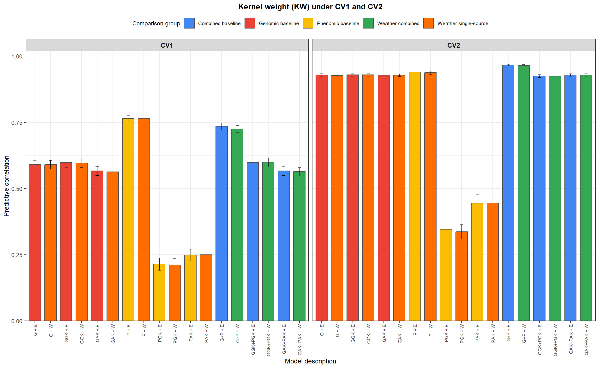
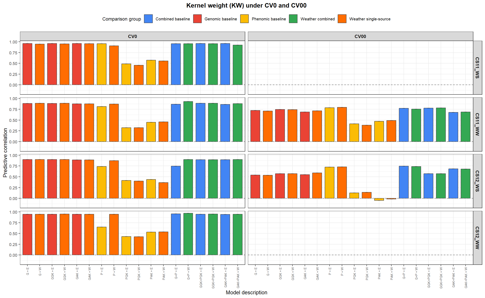

Last updated: 2026-03-30
Checks: 7 0
Knit directory:
Integrating-nir-genomic-kernel/
This reproducible R Markdown analysis was created with workflowr (version 1.7.2). The Checks tab describes the reproducibility checks that were applied when the results were created. The Past versions tab lists the development history.
Great! Since the R Markdown file has been committed to the Git repository, you know the exact version of the code that produced these results.
Great job! The global environment was empty. Objects defined in the global environment can affect the analysis in your R Markdown file in unknown ways. For reproduciblity it’s best to always run the code in an empty environment.
The command set.seed(20250829) was run prior to running
the code in the R Markdown file. Setting a seed ensures that any results
that rely on randomness, e.g. subsampling or permutations, are
reproducible.
Great job! Recording the operating system, R version, and package versions is critical for reproducibility.
Nice! There were no cached chunks for this analysis, so you can be confident that you successfully produced the results during this run.
Great job! Using relative paths to the files within your workflowr project makes it easier to run your code on other machines.
Great! You are using Git for version control. Tracking code development and connecting the code version to the results is critical for reproducibility.
The results in this page were generated with repository version 95ef754. See the Past versions tab to see a history of the changes made to the R Markdown and HTML files.
Note that you need to be careful to ensure that all relevant files for
the analysis have been committed to Git prior to generating the results
(you can use wflow_publish or
wflow_git_commit). workflowr only checks the R Markdown
file, but you know if there are other scripts or data files that it
depends on. Below is the status of the Git repository when the results
were generated:
Ignored files:
Ignored: .Rhistory
Ignored: .Rproj.user/
Ignored: data/Article_documents/
Ignored: data/Maize-NIRS-GBS-main/
Ignored: output/Matrizes/Geno.all.rds
Ignored: output/Matrizes/NIR.all.rds
Ignored: output/Matrizes/figures/
Ignored: output/adjust_models.rar
Ignored: output/climate_results/additional_climate_plots.tiff
Ignored: output/climate_results/combined_additional_climate_plots.tiff
Ignored: output/climate_results/combined_climate_plot.tiff
Ignored: output/cv-schemes.tiff
Ignored: output/figures/
Ignored: output/results/
Ignored: output/tables/prediction_cv0_cv00_raw.csv
Ignored: output/tables/prediction_cv1_cv2_by_rep_fold_env.csv
Ignored: output/tables/prediction_cv1_cv2_raw.csv
Ignored: output/variance_components/figures/
Ignored: output/variance_components/rep_1/Eta01/GYETA_E_varB.dat
Ignored: output/variance_components/rep_1/Eta01/GYETA_GE_varU.dat
Ignored: output/variance_components/rep_1/Eta01/GYETA_G_varU.dat
Ignored: output/variance_components/rep_1/Eta01/GYmu.dat
Ignored: output/variance_components/rep_1/Eta01/GYvarE.dat
Ignored: output/variance_components/rep_1/Eta01/KWETA_E_varB.dat
Ignored: output/variance_components/rep_1/Eta01/KWETA_GE_varU.dat
Ignored: output/variance_components/rep_1/Eta01/KWETA_G_varU.dat
Ignored: output/variance_components/rep_1/Eta01/KWmu.dat
Ignored: output/variance_components/rep_1/Eta01/KWvarE.dat
Ignored: output/variance_components/rep_1/Eta02/GYETA_E_varB.dat
Ignored: output/variance_components/rep_1/Eta02/GYETA_PE_varU.dat
Ignored: output/variance_components/rep_1/Eta02/GYETA_P_varU.dat
Ignored: output/variance_components/rep_1/Eta02/GYmu.dat
Ignored: output/variance_components/rep_1/Eta02/GYvarE.dat
Ignored: output/variance_components/rep_1/Eta02/KWETA_E_varB.dat
Ignored: output/variance_components/rep_1/Eta02/KWETA_PE_varU.dat
Ignored: output/variance_components/rep_1/Eta02/KWETA_P_varU.dat
Ignored: output/variance_components/rep_1/Eta02/KWmu.dat
Ignored: output/variance_components/rep_1/Eta02/KWvarE.dat
Ignored: output/variance_components/rep_1/Eta03/GYETA_E_varB.dat
Ignored: output/variance_components/rep_1/Eta03/GYETA_GGKE_varU.dat
Ignored: output/variance_components/rep_1/Eta03/GYETA_GGK_varU.dat
Ignored: output/variance_components/rep_1/Eta03/GYmu.dat
Ignored: output/variance_components/rep_1/Eta03/GYvarE.dat
Ignored: output/variance_components/rep_1/Eta03/KWETA_E_varB.dat
Ignored: output/variance_components/rep_1/Eta03/KWETA_GGKE_varU.dat
Ignored: output/variance_components/rep_1/Eta03/KWETA_GGK_varU.dat
Ignored: output/variance_components/rep_1/Eta03/KWmu.dat
Ignored: output/variance_components/rep_1/Eta03/KWvarE.dat
Ignored: output/variance_components/rep_1/Eta04/GYETA_E_varB.dat
Ignored: output/variance_components/rep_1/Eta04/GYETA_PGKE_varU.dat
Ignored: output/variance_components/rep_1/Eta04/GYETA_PGK_varU.dat
Ignored: output/variance_components/rep_1/Eta04/GYmu.dat
Ignored: output/variance_components/rep_1/Eta04/GYvarE.dat
Ignored: output/variance_components/rep_1/Eta04/KWETA_E_varB.dat
Ignored: output/variance_components/rep_1/Eta04/KWETA_PGKE_varU.dat
Ignored: output/variance_components/rep_1/Eta04/KWETA_PGK_varU.dat
Ignored: output/variance_components/rep_1/Eta04/KWmu.dat
Ignored: output/variance_components/rep_1/Eta04/KWvarE.dat
Ignored: output/variance_components/rep_1/Eta05/GYETA_E_varB.dat
Ignored: output/variance_components/rep_1/Eta05/GYETA_GAKE_varU.dat
Ignored: output/variance_components/rep_1/Eta05/GYETA_GAK_varU.dat
Ignored: output/variance_components/rep_1/Eta05/GYmu.dat
Ignored: output/variance_components/rep_1/Eta05/GYvarE.dat
Ignored: output/variance_components/rep_1/Eta05/KWETA_E_varB.dat
Ignored: output/variance_components/rep_1/Eta05/KWETA_GAKE_varU.dat
Ignored: output/variance_components/rep_1/Eta05/KWETA_GAK_varU.dat
Ignored: output/variance_components/rep_1/Eta05/KWmu.dat
Ignored: output/variance_components/rep_1/Eta05/KWvarE.dat
Ignored: output/variance_components/rep_1/Eta06/GYETA_E_varB.dat
Ignored: output/variance_components/rep_1/Eta06/GYETA_PAKE_varU.dat
Ignored: output/variance_components/rep_1/Eta06/GYETA_PAK_varU.dat
Ignored: output/variance_components/rep_1/Eta06/GYmu.dat
Ignored: output/variance_components/rep_1/Eta06/GYvarE.dat
Ignored: output/variance_components/rep_1/Eta06/KWETA_E_varB.dat
Ignored: output/variance_components/rep_1/Eta06/KWETA_PAKE_varU.dat
Ignored: output/variance_components/rep_1/Eta06/KWETA_PAK_varU.dat
Ignored: output/variance_components/rep_1/Eta06/KWmu.dat
Ignored: output/variance_components/rep_1/Eta06/KWvarE.dat
Ignored: output/variance_components/rep_1/Eta07/GYETA_E_varB.dat
Ignored: output/variance_components/rep_1/Eta07/GYETA_GE_varU.dat
Ignored: output/variance_components/rep_1/Eta07/GYETA_G_varU.dat
Ignored: output/variance_components/rep_1/Eta07/GYETA_PE_varU.dat
Ignored: output/variance_components/rep_1/Eta07/GYETA_P_varU.dat
Ignored: output/variance_components/rep_1/Eta07/GYmu.dat
Ignored: output/variance_components/rep_1/Eta07/GYvarE.dat
Ignored: output/variance_components/rep_1/Eta07/KWETA_E_varB.dat
Ignored: output/variance_components/rep_1/Eta07/KWETA_GE_varU.dat
Ignored: output/variance_components/rep_1/Eta07/KWETA_G_varU.dat
Ignored: output/variance_components/rep_1/Eta07/KWETA_PE_varU.dat
Ignored: output/variance_components/rep_1/Eta07/KWETA_P_varU.dat
Ignored: output/variance_components/rep_1/Eta07/KWmu.dat
Ignored: output/variance_components/rep_1/Eta07/KWvarE.dat
Ignored: output/variance_components/rep_1/Eta08/GYETA_E_varB.dat
Ignored: output/variance_components/rep_1/Eta08/GYETA_GGKE_varU.dat
Ignored: output/variance_components/rep_1/Eta08/GYETA_GGK_varU.dat
Ignored: output/variance_components/rep_1/Eta08/GYETA_PGKE_varU.dat
Ignored: output/variance_components/rep_1/Eta08/GYETA_PGK_varU.dat
Ignored: output/variance_components/rep_1/Eta08/GYmu.dat
Ignored: output/variance_components/rep_1/Eta08/GYvarE.dat
Ignored: output/variance_components/rep_1/Eta08/KWETA_E_varB.dat
Ignored: output/variance_components/rep_1/Eta08/KWETA_GGKE_varU.dat
Ignored: output/variance_components/rep_1/Eta08/KWETA_GGK_varU.dat
Ignored: output/variance_components/rep_1/Eta08/KWETA_PGKE_varU.dat
Ignored: output/variance_components/rep_1/Eta08/KWETA_PGK_varU.dat
Ignored: output/variance_components/rep_1/Eta08/KWmu.dat
Ignored: output/variance_components/rep_1/Eta08/KWvarE.dat
Ignored: output/variance_components/rep_1/Eta09/GYETA_E_varB.dat
Ignored: output/variance_components/rep_1/Eta09/GYETA_GAKE_varU.dat
Ignored: output/variance_components/rep_1/Eta09/GYETA_GAK_varU.dat
Ignored: output/variance_components/rep_1/Eta09/GYETA_PAKE_varU.dat
Ignored: output/variance_components/rep_1/Eta09/GYETA_PAK_varU.dat
Ignored: output/variance_components/rep_1/Eta09/GYmu.dat
Ignored: output/variance_components/rep_1/Eta09/GYvarE.dat
Ignored: output/variance_components/rep_1/Eta09/KWETA_E_varB.dat
Ignored: output/variance_components/rep_1/Eta09/KWETA_GAKE_varU.dat
Ignored: output/variance_components/rep_1/Eta09/KWETA_GAK_varU.dat
Ignored: output/variance_components/rep_1/Eta09/KWETA_PAKE_varU.dat
Ignored: output/variance_components/rep_1/Eta09/KWETA_PAK_varU.dat
Ignored: output/variance_components/rep_1/Eta09/KWmu.dat
Ignored: output/variance_components/rep_1/Eta09/KWvarE.dat
Ignored: output/variance_components/rep_1/Eta10/GYETA_E_varB.dat
Ignored: output/variance_components/rep_1/Eta10/GYETA_GE_varU.dat
Ignored: output/variance_components/rep_1/Eta10/GYETA_GW_varU.dat
Ignored: output/variance_components/rep_1/Eta10/GYETA_G_varU.dat
Ignored: output/variance_components/rep_1/Eta10/GYETA_W_varU.dat
Ignored: output/variance_components/rep_1/Eta10/GYmu.dat
Ignored: output/variance_components/rep_1/Eta10/GYvarE.dat
Ignored: output/variance_components/rep_1/Eta10/KWETA_E_varB.dat
Ignored: output/variance_components/rep_1/Eta10/KWETA_GE_varU.dat
Ignored: output/variance_components/rep_1/Eta10/KWETA_GW_varU.dat
Ignored: output/variance_components/rep_1/Eta10/KWETA_G_varU.dat
Ignored: output/variance_components/rep_1/Eta10/KWETA_W_varU.dat
Ignored: output/variance_components/rep_1/Eta10/KWmu.dat
Ignored: output/variance_components/rep_1/Eta10/KWvarE.dat
Ignored: output/variance_components/rep_1/Eta11/GYETA_E_varB.dat
Ignored: output/variance_components/rep_1/Eta11/GYETA_PE_varU.dat
Ignored: output/variance_components/rep_1/Eta11/GYETA_PW_varU.dat
Ignored: output/variance_components/rep_1/Eta11/GYETA_P_varU.dat
Ignored: output/variance_components/rep_1/Eta11/GYETA_W_varU.dat
Ignored: output/variance_components/rep_1/Eta11/GYmu.dat
Ignored: output/variance_components/rep_1/Eta11/GYvarE.dat
Ignored: output/variance_components/rep_1/Eta11/KWETA_E_varB.dat
Ignored: output/variance_components/rep_1/Eta11/KWETA_PE_varU.dat
Ignored: output/variance_components/rep_1/Eta11/KWETA_PW_varU.dat
Ignored: output/variance_components/rep_1/Eta11/KWETA_P_varU.dat
Ignored: output/variance_components/rep_1/Eta11/KWETA_W_varU.dat
Ignored: output/variance_components/rep_1/Eta11/KWmu.dat
Ignored: output/variance_components/rep_1/Eta11/KWvarE.dat
Ignored: output/variance_components/rep_1/Eta12/GYETA_E_varB.dat
Ignored: output/variance_components/rep_1/Eta12/GYETA_GE_varU.dat
Ignored: output/variance_components/rep_1/Eta12/GYETA_GW_varU.dat
Ignored: output/variance_components/rep_1/Eta12/GYETA_G_varU.dat
Ignored: output/variance_components/rep_1/Eta12/GYETA_PE_varU.dat
Ignored: output/variance_components/rep_1/Eta12/GYETA_PW_varU.dat
Ignored: output/variance_components/rep_1/Eta12/GYETA_P_varU.dat
Ignored: output/variance_components/rep_1/Eta12/GYETA_W_varU.dat
Ignored: output/variance_components/rep_1/Eta12/GYmu.dat
Ignored: output/variance_components/rep_1/Eta12/GYvarE.dat
Ignored: output/variance_components/rep_1/Eta12/KWETA_E_varB.dat
Ignored: output/variance_components/rep_1/Eta12/KWETA_GE_varU.dat
Ignored: output/variance_components/rep_1/Eta12/KWETA_GW_varU.dat
Ignored: output/variance_components/rep_1/Eta12/KWETA_G_varU.dat
Ignored: output/variance_components/rep_1/Eta12/KWETA_PE_varU.dat
Ignored: output/variance_components/rep_1/Eta12/KWETA_PW_varU.dat
Ignored: output/variance_components/rep_1/Eta12/KWETA_P_varU.dat
Ignored: output/variance_components/rep_1/Eta12/KWETA_W_varU.dat
Ignored: output/variance_components/rep_1/Eta12/KWmu.dat
Ignored: output/variance_components/rep_1/Eta12/KWvarE.dat
Ignored: output/variance_components/rep_1/Eta13/GYETA_E_varB.dat
Ignored: output/variance_components/rep_1/Eta13/GYETA_GGKE_varU.dat
Ignored: output/variance_components/rep_1/Eta13/GYETA_GGKW_varU.dat
Ignored: output/variance_components/rep_1/Eta13/GYETA_GGK_varU.dat
Ignored: output/variance_components/rep_1/Eta13/GYETA_W_varU.dat
Ignored: output/variance_components/rep_1/Eta13/GYmu.dat
Ignored: output/variance_components/rep_1/Eta13/GYvarE.dat
Ignored: output/variance_components/rep_1/Eta13/KWETA_E_varB.dat
Ignored: output/variance_components/rep_1/Eta13/KWETA_GGKE_varU.dat
Ignored: output/variance_components/rep_1/Eta13/KWETA_GGKW_varU.dat
Ignored: output/variance_components/rep_1/Eta13/KWETA_GGK_varU.dat
Ignored: output/variance_components/rep_1/Eta13/KWETA_W_varU.dat
Ignored: output/variance_components/rep_1/Eta13/KWmu.dat
Ignored: output/variance_components/rep_1/Eta13/KWvarE.dat
Ignored: output/variance_components/rep_1/Eta14/GYETA_E_varB.dat
Ignored: output/variance_components/rep_1/Eta14/GYETA_PGKE_varU.dat
Ignored: output/variance_components/rep_1/Eta14/GYETA_PGKW_varU.dat
Ignored: output/variance_components/rep_1/Eta14/GYETA_PGK_varU.dat
Ignored: output/variance_components/rep_1/Eta14/GYETA_W_varU.dat
Ignored: output/variance_components/rep_1/Eta14/GYmu.dat
Ignored: output/variance_components/rep_1/Eta14/GYvarE.dat
Ignored: output/variance_components/rep_1/Eta14/KWETA_E_varB.dat
Ignored: output/variance_components/rep_1/Eta14/KWETA_PGKE_varU.dat
Ignored: output/variance_components/rep_1/Eta14/KWETA_PGKW_varU.dat
Ignored: output/variance_components/rep_1/Eta14/KWETA_PGK_varU.dat
Ignored: output/variance_components/rep_1/Eta14/KWETA_W_varU.dat
Ignored: output/variance_components/rep_1/Eta14/KWmu.dat
Ignored: output/variance_components/rep_1/Eta14/KWvarE.dat
Ignored: output/variance_components/rep_1/Eta15/GYETA_E_varB.dat
Ignored: output/variance_components/rep_1/Eta15/GYETA_GGKE_varU.dat
Ignored: output/variance_components/rep_1/Eta15/GYETA_GGKW_varU.dat
Ignored: output/variance_components/rep_1/Eta15/GYETA_GGK_varU.dat
Ignored: output/variance_components/rep_1/Eta15/GYETA_PGKE_varU.dat
Ignored: output/variance_components/rep_1/Eta15/GYETA_PGKW_varU.dat
Ignored: output/variance_components/rep_1/Eta15/GYETA_PGK_varU.dat
Ignored: output/variance_components/rep_1/Eta15/GYETA_W_varU.dat
Ignored: output/variance_components/rep_1/Eta15/GYmu.dat
Ignored: output/variance_components/rep_1/Eta15/GYvarE.dat
Ignored: output/variance_components/rep_1/Eta15/KWETA_E_varB.dat
Ignored: output/variance_components/rep_1/Eta15/KWETA_GGKE_varU.dat
Ignored: output/variance_components/rep_1/Eta15/KWETA_GGKW_varU.dat
Ignored: output/variance_components/rep_1/Eta15/KWETA_GGK_varU.dat
Ignored: output/variance_components/rep_1/Eta15/KWETA_PGKE_varU.dat
Ignored: output/variance_components/rep_1/Eta15/KWETA_PGKW_varU.dat
Ignored: output/variance_components/rep_1/Eta15/KWETA_PGK_varU.dat
Ignored: output/variance_components/rep_1/Eta15/KWETA_W_varU.dat
Ignored: output/variance_components/rep_1/Eta15/KWmu.dat
Ignored: output/variance_components/rep_1/Eta15/KWvarE.dat
Ignored: output/variance_components/rep_1/Eta16/GYETA_E_varB.dat
Ignored: output/variance_components/rep_1/Eta16/GYETA_GAKE_varU.dat
Ignored: output/variance_components/rep_1/Eta16/GYETA_GAKW_varU.dat
Ignored: output/variance_components/rep_1/Eta16/GYETA_GAK_varU.dat
Ignored: output/variance_components/rep_1/Eta16/GYETA_W_varU.dat
Ignored: output/variance_components/rep_1/Eta16/GYmu.dat
Ignored: output/variance_components/rep_1/Eta16/GYvarE.dat
Ignored: output/variance_components/rep_1/Eta16/KWETA_E_varB.dat
Ignored: output/variance_components/rep_1/Eta16/KWETA_GAKE_varU.dat
Ignored: output/variance_components/rep_1/Eta16/KWETA_GAKW_varU.dat
Ignored: output/variance_components/rep_1/Eta16/KWETA_GAK_varU.dat
Ignored: output/variance_components/rep_1/Eta16/KWETA_W_varU.dat
Ignored: output/variance_components/rep_1/Eta16/KWmu.dat
Ignored: output/variance_components/rep_1/Eta16/KWvarE.dat
Ignored: output/variance_components/rep_1/Eta17/GYETA_E_varB.dat
Ignored: output/variance_components/rep_1/Eta17/GYETA_PAKE_varU.dat
Ignored: output/variance_components/rep_1/Eta17/GYETA_PAKW_varU.dat
Ignored: output/variance_components/rep_1/Eta17/GYETA_PAK_varU.dat
Ignored: output/variance_components/rep_1/Eta17/GYETA_W_varU.dat
Ignored: output/variance_components/rep_1/Eta17/GYmu.dat
Ignored: output/variance_components/rep_1/Eta17/GYvarE.dat
Ignored: output/variance_components/rep_1/Eta17/KWETA_E_varB.dat
Ignored: output/variance_components/rep_1/Eta17/KWETA_PAKE_varU.dat
Ignored: output/variance_components/rep_1/Eta17/KWETA_PAKW_varU.dat
Ignored: output/variance_components/rep_1/Eta17/KWETA_PAK_varU.dat
Ignored: output/variance_components/rep_1/Eta17/KWETA_W_varU.dat
Ignored: output/variance_components/rep_1/Eta17/KWmu.dat
Ignored: output/variance_components/rep_1/Eta17/KWvarE.dat
Ignored: output/variance_components/rep_1/Eta18/GYETA_E_varB.dat
Ignored: output/variance_components/rep_1/Eta18/GYETA_GAKE_varU.dat
Ignored: output/variance_components/rep_1/Eta18/GYETA_GAKW_varU.dat
Ignored: output/variance_components/rep_1/Eta18/GYETA_GAK_varU.dat
Ignored: output/variance_components/rep_1/Eta18/GYETA_PAKE_varU.dat
Ignored: output/variance_components/rep_1/Eta18/GYETA_PAKW_varU.dat
Ignored: output/variance_components/rep_1/Eta18/GYETA_PAK_varU.dat
Ignored: output/variance_components/rep_1/Eta18/GYETA_W_varU.dat
Ignored: output/variance_components/rep_1/Eta18/GYmu.dat
Ignored: output/variance_components/rep_1/Eta18/GYvarE.dat
Ignored: output/variance_components/rep_1/Eta18/KWETA_E_varB.dat
Ignored: output/variance_components/rep_1/Eta18/KWETA_GAKE_varU.dat
Ignored: output/variance_components/rep_1/Eta18/KWETA_GAKW_varU.dat
Ignored: output/variance_components/rep_1/Eta18/KWETA_GAK_varU.dat
Ignored: output/variance_components/rep_1/Eta18/KWETA_PAKE_varU.dat
Ignored: output/variance_components/rep_1/Eta18/KWETA_PAKW_varU.dat
Ignored: output/variance_components/rep_1/Eta18/KWETA_PAK_varU.dat
Ignored: output/variance_components/rep_1/Eta18/KWETA_W_varU.dat
Ignored: output/variance_components/rep_1/Eta18/KWmu.dat
Ignored: output/variance_components/rep_1/Eta18/KWvarE.dat
Ignored: output/variance_components/rep_10/Eta01/GYETA_E_varB.dat
Ignored: output/variance_components/rep_10/Eta01/GYETA_GE_varU.dat
Ignored: output/variance_components/rep_10/Eta01/GYETA_G_varU.dat
Ignored: output/variance_components/rep_10/Eta01/GYmu.dat
Ignored: output/variance_components/rep_10/Eta01/GYvarE.dat
Ignored: output/variance_components/rep_10/Eta01/KWETA_E_varB.dat
Ignored: output/variance_components/rep_10/Eta01/KWETA_GE_varU.dat
Ignored: output/variance_components/rep_10/Eta01/KWETA_G_varU.dat
Ignored: output/variance_components/rep_10/Eta01/KWmu.dat
Ignored: output/variance_components/rep_10/Eta01/KWvarE.dat
Ignored: output/variance_components/rep_10/Eta02/GYETA_E_varB.dat
Ignored: output/variance_components/rep_10/Eta02/GYETA_PE_varU.dat
Ignored: output/variance_components/rep_10/Eta02/GYETA_P_varU.dat
Ignored: output/variance_components/rep_10/Eta02/GYmu.dat
Ignored: output/variance_components/rep_10/Eta02/GYvarE.dat
Ignored: output/variance_components/rep_10/Eta02/KWETA_E_varB.dat
Ignored: output/variance_components/rep_10/Eta02/KWETA_PE_varU.dat
Ignored: output/variance_components/rep_10/Eta02/KWETA_P_varU.dat
Ignored: output/variance_components/rep_10/Eta02/KWmu.dat
Ignored: output/variance_components/rep_10/Eta02/KWvarE.dat
Ignored: output/variance_components/rep_10/Eta03/GYETA_E_varB.dat
Ignored: output/variance_components/rep_10/Eta03/GYETA_GGKE_varU.dat
Ignored: output/variance_components/rep_10/Eta03/GYETA_GGK_varU.dat
Ignored: output/variance_components/rep_10/Eta03/GYmu.dat
Ignored: output/variance_components/rep_10/Eta03/GYvarE.dat
Ignored: output/variance_components/rep_10/Eta03/KWETA_E_varB.dat
Ignored: output/variance_components/rep_10/Eta03/KWETA_GGKE_varU.dat
Ignored: output/variance_components/rep_10/Eta03/KWETA_GGK_varU.dat
Ignored: output/variance_components/rep_10/Eta03/KWmu.dat
Ignored: output/variance_components/rep_10/Eta03/KWvarE.dat
Ignored: output/variance_components/rep_10/Eta04/GYETA_E_varB.dat
Ignored: output/variance_components/rep_10/Eta04/GYETA_PGKE_varU.dat
Ignored: output/variance_components/rep_10/Eta04/GYETA_PGK_varU.dat
Ignored: output/variance_components/rep_10/Eta04/GYmu.dat
Ignored: output/variance_components/rep_10/Eta04/GYvarE.dat
Ignored: output/variance_components/rep_10/Eta04/KWETA_E_varB.dat
Ignored: output/variance_components/rep_10/Eta04/KWETA_PGKE_varU.dat
Ignored: output/variance_components/rep_10/Eta04/KWETA_PGK_varU.dat
Ignored: output/variance_components/rep_10/Eta04/KWmu.dat
Ignored: output/variance_components/rep_10/Eta04/KWvarE.dat
Ignored: output/variance_components/rep_10/Eta05/GYETA_E_varB.dat
Ignored: output/variance_components/rep_10/Eta05/GYETA_GAKE_varU.dat
Ignored: output/variance_components/rep_10/Eta05/GYETA_GAK_varU.dat
Ignored: output/variance_components/rep_10/Eta05/GYmu.dat
Ignored: output/variance_components/rep_10/Eta05/GYvarE.dat
Ignored: output/variance_components/rep_10/Eta05/KWETA_E_varB.dat
Ignored: output/variance_components/rep_10/Eta05/KWETA_GAKE_varU.dat
Ignored: output/variance_components/rep_10/Eta05/KWETA_GAK_varU.dat
Ignored: output/variance_components/rep_10/Eta05/KWmu.dat
Ignored: output/variance_components/rep_10/Eta05/KWvarE.dat
Ignored: output/variance_components/rep_10/Eta06/GYETA_E_varB.dat
Ignored: output/variance_components/rep_10/Eta06/GYETA_PAKE_varU.dat
Ignored: output/variance_components/rep_10/Eta06/GYETA_PAK_varU.dat
Ignored: output/variance_components/rep_10/Eta06/GYmu.dat
Ignored: output/variance_components/rep_10/Eta06/GYvarE.dat
Ignored: output/variance_components/rep_10/Eta06/KWETA_E_varB.dat
Ignored: output/variance_components/rep_10/Eta06/KWETA_PAKE_varU.dat
Ignored: output/variance_components/rep_10/Eta06/KWETA_PAK_varU.dat
Ignored: output/variance_components/rep_10/Eta06/KWmu.dat
Ignored: output/variance_components/rep_10/Eta06/KWvarE.dat
Ignored: output/variance_components/rep_10/Eta07/GYETA_E_varB.dat
Ignored: output/variance_components/rep_10/Eta07/GYETA_GE_varU.dat
Ignored: output/variance_components/rep_10/Eta07/GYETA_G_varU.dat
Ignored: output/variance_components/rep_10/Eta07/GYETA_PE_varU.dat
Ignored: output/variance_components/rep_10/Eta07/GYETA_P_varU.dat
Ignored: output/variance_components/rep_10/Eta07/GYmu.dat
Ignored: output/variance_components/rep_10/Eta07/GYvarE.dat
Ignored: output/variance_components/rep_10/Eta07/KWETA_E_varB.dat
Ignored: output/variance_components/rep_10/Eta07/KWETA_GE_varU.dat
Ignored: output/variance_components/rep_10/Eta07/KWETA_G_varU.dat
Ignored: output/variance_components/rep_10/Eta07/KWETA_PE_varU.dat
Ignored: output/variance_components/rep_10/Eta07/KWETA_P_varU.dat
Ignored: output/variance_components/rep_10/Eta07/KWmu.dat
Ignored: output/variance_components/rep_10/Eta07/KWvarE.dat
Ignored: output/variance_components/rep_10/Eta08/GYETA_E_varB.dat
Ignored: output/variance_components/rep_10/Eta08/GYETA_GGKE_varU.dat
Ignored: output/variance_components/rep_10/Eta08/GYETA_GGK_varU.dat
Ignored: output/variance_components/rep_10/Eta08/GYETA_PGKE_varU.dat
Ignored: output/variance_components/rep_10/Eta08/GYETA_PGK_varU.dat
Ignored: output/variance_components/rep_10/Eta08/GYmu.dat
Ignored: output/variance_components/rep_10/Eta08/GYvarE.dat
Ignored: output/variance_components/rep_10/Eta08/KWETA_E_varB.dat
Ignored: output/variance_components/rep_10/Eta08/KWETA_GGKE_varU.dat
Ignored: output/variance_components/rep_10/Eta08/KWETA_GGK_varU.dat
Ignored: output/variance_components/rep_10/Eta08/KWETA_PGKE_varU.dat
Ignored: output/variance_components/rep_10/Eta08/KWETA_PGK_varU.dat
Ignored: output/variance_components/rep_10/Eta08/KWmu.dat
Ignored: output/variance_components/rep_10/Eta08/KWvarE.dat
Ignored: output/variance_components/rep_10/Eta09/GYETA_E_varB.dat
Ignored: output/variance_components/rep_10/Eta09/GYETA_GAKE_varU.dat
Ignored: output/variance_components/rep_10/Eta09/GYETA_GAK_varU.dat
Ignored: output/variance_components/rep_10/Eta09/GYETA_PAKE_varU.dat
Ignored: output/variance_components/rep_10/Eta09/GYETA_PAK_varU.dat
Ignored: output/variance_components/rep_10/Eta09/GYmu.dat
Ignored: output/variance_components/rep_10/Eta09/GYvarE.dat
Ignored: output/variance_components/rep_10/Eta09/KWETA_E_varB.dat
Ignored: output/variance_components/rep_10/Eta09/KWETA_GAKE_varU.dat
Ignored: output/variance_components/rep_10/Eta09/KWETA_GAK_varU.dat
Ignored: output/variance_components/rep_10/Eta09/KWETA_PAKE_varU.dat
Ignored: output/variance_components/rep_10/Eta09/KWETA_PAK_varU.dat
Ignored: output/variance_components/rep_10/Eta09/KWmu.dat
Ignored: output/variance_components/rep_10/Eta09/KWvarE.dat
Ignored: output/variance_components/rep_10/Eta10/GYETA_E_varB.dat
Ignored: output/variance_components/rep_10/Eta10/GYETA_GE_varU.dat
Ignored: output/variance_components/rep_10/Eta10/GYETA_GW_varU.dat
Ignored: output/variance_components/rep_10/Eta10/GYETA_G_varU.dat
Ignored: output/variance_components/rep_10/Eta10/GYETA_W_varU.dat
Ignored: output/variance_components/rep_10/Eta10/GYmu.dat
Ignored: output/variance_components/rep_10/Eta10/GYvarE.dat
Ignored: output/variance_components/rep_10/Eta10/KWETA_E_varB.dat
Ignored: output/variance_components/rep_10/Eta10/KWETA_GE_varU.dat
Ignored: output/variance_components/rep_10/Eta10/KWETA_GW_varU.dat
Ignored: output/variance_components/rep_10/Eta10/KWETA_G_varU.dat
Ignored: output/variance_components/rep_10/Eta10/KWETA_W_varU.dat
Ignored: output/variance_components/rep_10/Eta10/KWmu.dat
Ignored: output/variance_components/rep_10/Eta10/KWvarE.dat
Ignored: output/variance_components/rep_10/Eta11/GYETA_E_varB.dat
Ignored: output/variance_components/rep_10/Eta11/GYETA_PE_varU.dat
Ignored: output/variance_components/rep_10/Eta11/GYETA_PW_varU.dat
Ignored: output/variance_components/rep_10/Eta11/GYETA_P_varU.dat
Ignored: output/variance_components/rep_10/Eta11/GYETA_W_varU.dat
Ignored: output/variance_components/rep_10/Eta11/GYmu.dat
Ignored: output/variance_components/rep_10/Eta11/GYvarE.dat
Ignored: output/variance_components/rep_10/Eta11/KWETA_E_varB.dat
Ignored: output/variance_components/rep_10/Eta11/KWETA_PE_varU.dat
Ignored: output/variance_components/rep_10/Eta11/KWETA_PW_varU.dat
Ignored: output/variance_components/rep_10/Eta11/KWETA_P_varU.dat
Ignored: output/variance_components/rep_10/Eta11/KWETA_W_varU.dat
Ignored: output/variance_components/rep_10/Eta11/KWmu.dat
Ignored: output/variance_components/rep_10/Eta11/KWvarE.dat
Ignored: output/variance_components/rep_10/Eta12/GYETA_E_varB.dat
Ignored: output/variance_components/rep_10/Eta12/GYETA_GE_varU.dat
Ignored: output/variance_components/rep_10/Eta12/GYETA_GW_varU.dat
Ignored: output/variance_components/rep_10/Eta12/GYETA_G_varU.dat
Ignored: output/variance_components/rep_10/Eta12/GYETA_PE_varU.dat
Ignored: output/variance_components/rep_10/Eta12/GYETA_PW_varU.dat
Ignored: output/variance_components/rep_10/Eta12/GYETA_P_varU.dat
Ignored: output/variance_components/rep_10/Eta12/GYETA_W_varU.dat
Ignored: output/variance_components/rep_10/Eta12/GYmu.dat
Ignored: output/variance_components/rep_10/Eta12/GYvarE.dat
Ignored: output/variance_components/rep_10/Eta12/KWETA_E_varB.dat
Ignored: output/variance_components/rep_10/Eta12/KWETA_GE_varU.dat
Ignored: output/variance_components/rep_10/Eta12/KWETA_GW_varU.dat
Ignored: output/variance_components/rep_10/Eta12/KWETA_G_varU.dat
Ignored: output/variance_components/rep_10/Eta12/KWETA_PE_varU.dat
Ignored: output/variance_components/rep_10/Eta12/KWETA_PW_varU.dat
Ignored: output/variance_components/rep_10/Eta12/KWETA_P_varU.dat
Ignored: output/variance_components/rep_10/Eta12/KWETA_W_varU.dat
Ignored: output/variance_components/rep_10/Eta12/KWmu.dat
Ignored: output/variance_components/rep_10/Eta12/KWvarE.dat
Ignored: output/variance_components/rep_10/Eta13/GYETA_E_varB.dat
Ignored: output/variance_components/rep_10/Eta13/GYETA_GGKE_varU.dat
Ignored: output/variance_components/rep_10/Eta13/GYETA_GGKW_varU.dat
Ignored: output/variance_components/rep_10/Eta13/GYETA_GGK_varU.dat
Ignored: output/variance_components/rep_10/Eta13/GYETA_W_varU.dat
Ignored: output/variance_components/rep_10/Eta13/GYmu.dat
Ignored: output/variance_components/rep_10/Eta13/GYvarE.dat
Ignored: output/variance_components/rep_10/Eta13/KWETA_E_varB.dat
Ignored: output/variance_components/rep_10/Eta13/KWETA_GGKE_varU.dat
Ignored: output/variance_components/rep_10/Eta13/KWETA_GGKW_varU.dat
Ignored: output/variance_components/rep_10/Eta13/KWETA_GGK_varU.dat
Ignored: output/variance_components/rep_10/Eta13/KWETA_W_varU.dat
Ignored: output/variance_components/rep_10/Eta13/KWmu.dat
Ignored: output/variance_components/rep_10/Eta13/KWvarE.dat
Ignored: output/variance_components/rep_10/Eta14/GYETA_E_varB.dat
Ignored: output/variance_components/rep_10/Eta14/GYETA_PGKE_varU.dat
Ignored: output/variance_components/rep_10/Eta14/GYETA_PGKW_varU.dat
Ignored: output/variance_components/rep_10/Eta14/GYETA_PGK_varU.dat
Ignored: output/variance_components/rep_10/Eta14/GYETA_W_varU.dat
Ignored: output/variance_components/rep_10/Eta14/GYmu.dat
Ignored: output/variance_components/rep_10/Eta14/GYvarE.dat
Ignored: output/variance_components/rep_10/Eta14/KWETA_E_varB.dat
Ignored: output/variance_components/rep_10/Eta14/KWETA_PGKE_varU.dat
Ignored: output/variance_components/rep_10/Eta14/KWETA_PGKW_varU.dat
Ignored: output/variance_components/rep_10/Eta14/KWETA_PGK_varU.dat
Ignored: output/variance_components/rep_10/Eta14/KWETA_W_varU.dat
Ignored: output/variance_components/rep_10/Eta14/KWmu.dat
Ignored: output/variance_components/rep_10/Eta14/KWvarE.dat
Ignored: output/variance_components/rep_10/Eta15/GYETA_E_varB.dat
Ignored: output/variance_components/rep_10/Eta15/GYETA_GGKE_varU.dat
Ignored: output/variance_components/rep_10/Eta15/GYETA_GGKW_varU.dat
Ignored: output/variance_components/rep_10/Eta15/GYETA_GGK_varU.dat
Ignored: output/variance_components/rep_10/Eta15/GYETA_PGKE_varU.dat
Ignored: output/variance_components/rep_10/Eta15/GYETA_PGKW_varU.dat
Ignored: output/variance_components/rep_10/Eta15/GYETA_PGK_varU.dat
Ignored: output/variance_components/rep_10/Eta15/GYETA_W_varU.dat
Ignored: output/variance_components/rep_10/Eta15/GYmu.dat
Ignored: output/variance_components/rep_10/Eta15/GYvarE.dat
Ignored: output/variance_components/rep_10/Eta15/KWETA_E_varB.dat
Ignored: output/variance_components/rep_10/Eta15/KWETA_GGKE_varU.dat
Ignored: output/variance_components/rep_10/Eta15/KWETA_GGKW_varU.dat
Ignored: output/variance_components/rep_10/Eta15/KWETA_GGK_varU.dat
Ignored: output/variance_components/rep_10/Eta15/KWETA_PGKE_varU.dat
Ignored: output/variance_components/rep_10/Eta15/KWETA_PGKW_varU.dat
Ignored: output/variance_components/rep_10/Eta15/KWETA_PGK_varU.dat
Ignored: output/variance_components/rep_10/Eta15/KWETA_W_varU.dat
Ignored: output/variance_components/rep_10/Eta15/KWmu.dat
Ignored: output/variance_components/rep_10/Eta15/KWvarE.dat
Ignored: output/variance_components/rep_10/Eta16/GYETA_E_varB.dat
Ignored: output/variance_components/rep_10/Eta16/GYETA_GAKE_varU.dat
Ignored: output/variance_components/rep_10/Eta16/GYETA_GAKW_varU.dat
Ignored: output/variance_components/rep_10/Eta16/GYETA_GAK_varU.dat
Ignored: output/variance_components/rep_10/Eta16/GYETA_W_varU.dat
Ignored: output/variance_components/rep_10/Eta16/GYmu.dat
Ignored: output/variance_components/rep_10/Eta16/GYvarE.dat
Ignored: output/variance_components/rep_10/Eta16/KWETA_E_varB.dat
Ignored: output/variance_components/rep_10/Eta16/KWETA_GAKE_varU.dat
Ignored: output/variance_components/rep_10/Eta16/KWETA_GAKW_varU.dat
Ignored: output/variance_components/rep_10/Eta16/KWETA_GAK_varU.dat
Ignored: output/variance_components/rep_10/Eta16/KWETA_W_varU.dat
Ignored: output/variance_components/rep_10/Eta16/KWmu.dat
Ignored: output/variance_components/rep_10/Eta16/KWvarE.dat
Ignored: output/variance_components/rep_10/Eta17/GYETA_E_varB.dat
Ignored: output/variance_components/rep_10/Eta17/GYETA_PAKE_varU.dat
Ignored: output/variance_components/rep_10/Eta17/GYETA_PAKW_varU.dat
Ignored: output/variance_components/rep_10/Eta17/GYETA_PAK_varU.dat
Ignored: output/variance_components/rep_10/Eta17/GYETA_W_varU.dat
Ignored: output/variance_components/rep_10/Eta17/GYmu.dat
Ignored: output/variance_components/rep_10/Eta17/GYvarE.dat
Ignored: output/variance_components/rep_10/Eta17/KWETA_E_varB.dat
Ignored: output/variance_components/rep_10/Eta17/KWETA_PAKE_varU.dat
Ignored: output/variance_components/rep_10/Eta17/KWETA_PAKW_varU.dat
Ignored: output/variance_components/rep_10/Eta17/KWETA_PAK_varU.dat
Ignored: output/variance_components/rep_10/Eta17/KWETA_W_varU.dat
Ignored: output/variance_components/rep_10/Eta17/KWmu.dat
Ignored: output/variance_components/rep_10/Eta17/KWvarE.dat
Ignored: output/variance_components/rep_10/Eta18/GYETA_E_varB.dat
Ignored: output/variance_components/rep_10/Eta18/GYETA_GAKE_varU.dat
Ignored: output/variance_components/rep_10/Eta18/GYETA_GAKW_varU.dat
Ignored: output/variance_components/rep_10/Eta18/GYETA_GAK_varU.dat
Ignored: output/variance_components/rep_10/Eta18/GYETA_PAKE_varU.dat
Ignored: output/variance_components/rep_10/Eta18/GYETA_PAKW_varU.dat
Ignored: output/variance_components/rep_10/Eta18/GYETA_PAK_varU.dat
Ignored: output/variance_components/rep_10/Eta18/GYETA_W_varU.dat
Ignored: output/variance_components/rep_10/Eta18/GYmu.dat
Ignored: output/variance_components/rep_10/Eta18/GYvarE.dat
Ignored: output/variance_components/rep_10/Eta18/KWETA_E_varB.dat
Ignored: output/variance_components/rep_10/Eta18/KWETA_GAKE_varU.dat
Ignored: output/variance_components/rep_10/Eta18/KWETA_GAKW_varU.dat
Ignored: output/variance_components/rep_10/Eta18/KWETA_GAK_varU.dat
Ignored: output/variance_components/rep_10/Eta18/KWETA_PAKE_varU.dat
Ignored: output/variance_components/rep_10/Eta18/KWETA_PAKW_varU.dat
Ignored: output/variance_components/rep_10/Eta18/KWETA_PAK_varU.dat
Ignored: output/variance_components/rep_10/Eta18/KWETA_W_varU.dat
Ignored: output/variance_components/rep_10/Eta18/KWmu.dat
Ignored: output/variance_components/rep_10/Eta18/KWvarE.dat
Ignored: output/variance_components/rep_11/Eta01/GYETA_E_varB.dat
Ignored: output/variance_components/rep_11/Eta01/GYETA_GE_varU.dat
Ignored: output/variance_components/rep_11/Eta01/GYETA_G_varU.dat
Ignored: output/variance_components/rep_11/Eta01/GYmu.dat
Ignored: output/variance_components/rep_11/Eta01/GYvarE.dat
Ignored: output/variance_components/rep_11/Eta01/KWETA_E_varB.dat
Ignored: output/variance_components/rep_11/Eta01/KWETA_GE_varU.dat
Ignored: output/variance_components/rep_11/Eta01/KWETA_G_varU.dat
Ignored: output/variance_components/rep_11/Eta01/KWmu.dat
Ignored: output/variance_components/rep_11/Eta01/KWvarE.dat
Ignored: output/variance_components/rep_11/Eta02/GYETA_E_varB.dat
Ignored: output/variance_components/rep_11/Eta02/GYETA_PE_varU.dat
Ignored: output/variance_components/rep_11/Eta02/GYETA_P_varU.dat
Ignored: output/variance_components/rep_11/Eta02/GYmu.dat
Ignored: output/variance_components/rep_11/Eta02/GYvarE.dat
Ignored: output/variance_components/rep_11/Eta02/KWETA_E_varB.dat
Ignored: output/variance_components/rep_11/Eta02/KWETA_PE_varU.dat
Ignored: output/variance_components/rep_11/Eta02/KWETA_P_varU.dat
Ignored: output/variance_components/rep_11/Eta02/KWmu.dat
Ignored: output/variance_components/rep_11/Eta02/KWvarE.dat
Ignored: output/variance_components/rep_11/Eta03/GYETA_E_varB.dat
Ignored: output/variance_components/rep_11/Eta03/GYETA_GGKE_varU.dat
Ignored: output/variance_components/rep_11/Eta03/GYETA_GGK_varU.dat
Ignored: output/variance_components/rep_11/Eta03/GYmu.dat
Ignored: output/variance_components/rep_11/Eta03/GYvarE.dat
Ignored: output/variance_components/rep_11/Eta03/KWETA_E_varB.dat
Ignored: output/variance_components/rep_11/Eta03/KWETA_GGKE_varU.dat
Ignored: output/variance_components/rep_11/Eta03/KWETA_GGK_varU.dat
Ignored: output/variance_components/rep_11/Eta03/KWmu.dat
Ignored: output/variance_components/rep_11/Eta03/KWvarE.dat
Ignored: output/variance_components/rep_11/Eta04/GYETA_E_varB.dat
Ignored: output/variance_components/rep_11/Eta04/GYETA_PGKE_varU.dat
Ignored: output/variance_components/rep_11/Eta04/GYETA_PGK_varU.dat
Ignored: output/variance_components/rep_11/Eta04/GYmu.dat
Ignored: output/variance_components/rep_11/Eta04/GYvarE.dat
Ignored: output/variance_components/rep_11/Eta04/KWETA_E_varB.dat
Ignored: output/variance_components/rep_11/Eta04/KWETA_PGKE_varU.dat
Ignored: output/variance_components/rep_11/Eta04/KWETA_PGK_varU.dat
Ignored: output/variance_components/rep_11/Eta04/KWmu.dat
Ignored: output/variance_components/rep_11/Eta04/KWvarE.dat
Ignored: output/variance_components/rep_11/Eta05/GYETA_E_varB.dat
Ignored: output/variance_components/rep_11/Eta05/GYETA_GAKE_varU.dat
Ignored: output/variance_components/rep_11/Eta05/GYETA_GAK_varU.dat
Ignored: output/variance_components/rep_11/Eta05/GYmu.dat
Ignored: output/variance_components/rep_11/Eta05/GYvarE.dat
Ignored: output/variance_components/rep_11/Eta05/KWETA_E_varB.dat
Ignored: output/variance_components/rep_11/Eta05/KWETA_GAKE_varU.dat
Ignored: output/variance_components/rep_11/Eta05/KWETA_GAK_varU.dat
Ignored: output/variance_components/rep_11/Eta05/KWmu.dat
Ignored: output/variance_components/rep_11/Eta05/KWvarE.dat
Ignored: output/variance_components/rep_11/Eta06/GYETA_E_varB.dat
Ignored: output/variance_components/rep_11/Eta06/GYETA_PAKE_varU.dat
Ignored: output/variance_components/rep_11/Eta06/GYETA_PAK_varU.dat
Ignored: output/variance_components/rep_11/Eta06/GYmu.dat
Ignored: output/variance_components/rep_11/Eta06/GYvarE.dat
Ignored: output/variance_components/rep_11/Eta06/KWETA_E_varB.dat
Ignored: output/variance_components/rep_11/Eta06/KWETA_PAKE_varU.dat
Ignored: output/variance_components/rep_11/Eta06/KWETA_PAK_varU.dat
Ignored: output/variance_components/rep_11/Eta06/KWmu.dat
Ignored: output/variance_components/rep_11/Eta06/KWvarE.dat
Ignored: output/variance_components/rep_11/Eta07/GYETA_E_varB.dat
Ignored: output/variance_components/rep_11/Eta07/GYETA_GE_varU.dat
Ignored: output/variance_components/rep_11/Eta07/GYETA_G_varU.dat
Ignored: output/variance_components/rep_11/Eta07/GYETA_PE_varU.dat
Ignored: output/variance_components/rep_11/Eta07/GYETA_P_varU.dat
Ignored: output/variance_components/rep_11/Eta07/GYmu.dat
Ignored: output/variance_components/rep_11/Eta07/GYvarE.dat
Ignored: output/variance_components/rep_11/Eta07/KWETA_E_varB.dat
Ignored: output/variance_components/rep_11/Eta07/KWETA_GE_varU.dat
Ignored: output/variance_components/rep_11/Eta07/KWETA_G_varU.dat
Ignored: output/variance_components/rep_11/Eta07/KWETA_PE_varU.dat
Ignored: output/variance_components/rep_11/Eta07/KWETA_P_varU.dat
Ignored: output/variance_components/rep_11/Eta07/KWmu.dat
Ignored: output/variance_components/rep_11/Eta07/KWvarE.dat
Ignored: output/variance_components/rep_11/Eta08/GYETA_E_varB.dat
Ignored: output/variance_components/rep_11/Eta08/GYETA_GGKE_varU.dat
Ignored: output/variance_components/rep_11/Eta08/GYETA_GGK_varU.dat
Ignored: output/variance_components/rep_11/Eta08/GYETA_PGKE_varU.dat
Ignored: output/variance_components/rep_11/Eta08/GYETA_PGK_varU.dat
Ignored: output/variance_components/rep_11/Eta08/GYmu.dat
Ignored: output/variance_components/rep_11/Eta08/GYvarE.dat
Ignored: output/variance_components/rep_11/Eta08/KWETA_E_varB.dat
Ignored: output/variance_components/rep_11/Eta08/KWETA_GGKE_varU.dat
Ignored: output/variance_components/rep_11/Eta08/KWETA_GGK_varU.dat
Ignored: output/variance_components/rep_11/Eta08/KWETA_PGKE_varU.dat
Ignored: output/variance_components/rep_11/Eta08/KWETA_PGK_varU.dat
Ignored: output/variance_components/rep_11/Eta08/KWmu.dat
Ignored: output/variance_components/rep_11/Eta08/KWvarE.dat
Ignored: output/variance_components/rep_11/Eta09/GYETA_E_varB.dat
Ignored: output/variance_components/rep_11/Eta09/GYETA_GAKE_varU.dat
Ignored: output/variance_components/rep_11/Eta09/GYETA_GAK_varU.dat
Ignored: output/variance_components/rep_11/Eta09/GYETA_PAKE_varU.dat
Ignored: output/variance_components/rep_11/Eta09/GYETA_PAK_varU.dat
Ignored: output/variance_components/rep_11/Eta09/GYmu.dat
Ignored: output/variance_components/rep_11/Eta09/GYvarE.dat
Ignored: output/variance_components/rep_11/Eta09/KWETA_E_varB.dat
Ignored: output/variance_components/rep_11/Eta09/KWETA_GAKE_varU.dat
Ignored: output/variance_components/rep_11/Eta09/KWETA_GAK_varU.dat
Ignored: output/variance_components/rep_11/Eta09/KWETA_PAKE_varU.dat
Ignored: output/variance_components/rep_11/Eta09/KWETA_PAK_varU.dat
Ignored: output/variance_components/rep_11/Eta09/KWmu.dat
Ignored: output/variance_components/rep_11/Eta09/KWvarE.dat
Ignored: output/variance_components/rep_11/Eta10/GYETA_E_varB.dat
Ignored: output/variance_components/rep_11/Eta10/GYETA_GE_varU.dat
Ignored: output/variance_components/rep_11/Eta10/GYETA_GW_varU.dat
Ignored: output/variance_components/rep_11/Eta10/GYETA_G_varU.dat
Ignored: output/variance_components/rep_11/Eta10/GYETA_W_varU.dat
Ignored: output/variance_components/rep_11/Eta10/GYmu.dat
Ignored: output/variance_components/rep_11/Eta10/GYvarE.dat
Ignored: output/variance_components/rep_11/Eta10/KWETA_E_varB.dat
Ignored: output/variance_components/rep_11/Eta10/KWETA_GE_varU.dat
Ignored: output/variance_components/rep_11/Eta10/KWETA_GW_varU.dat
Ignored: output/variance_components/rep_11/Eta10/KWETA_G_varU.dat
Ignored: output/variance_components/rep_11/Eta10/KWETA_W_varU.dat
Ignored: output/variance_components/rep_11/Eta10/KWmu.dat
Ignored: output/variance_components/rep_11/Eta10/KWvarE.dat
Ignored: output/variance_components/rep_11/Eta11/GYETA_E_varB.dat
Ignored: output/variance_components/rep_11/Eta11/GYETA_PE_varU.dat
Ignored: output/variance_components/rep_11/Eta11/GYETA_PW_varU.dat
Ignored: output/variance_components/rep_11/Eta11/GYETA_P_varU.dat
Ignored: output/variance_components/rep_11/Eta11/GYETA_W_varU.dat
Ignored: output/variance_components/rep_11/Eta11/GYmu.dat
Ignored: output/variance_components/rep_11/Eta11/GYvarE.dat
Ignored: output/variance_components/rep_11/Eta11/KWETA_E_varB.dat
Ignored: output/variance_components/rep_11/Eta11/KWETA_PE_varU.dat
Ignored: output/variance_components/rep_11/Eta11/KWETA_PW_varU.dat
Ignored: output/variance_components/rep_11/Eta11/KWETA_P_varU.dat
Ignored: output/variance_components/rep_11/Eta11/KWETA_W_varU.dat
Ignored: output/variance_components/rep_11/Eta11/KWmu.dat
Ignored: output/variance_components/rep_11/Eta11/KWvarE.dat
Ignored: output/variance_components/rep_11/Eta12/GYETA_E_varB.dat
Ignored: output/variance_components/rep_11/Eta12/GYETA_GE_varU.dat
Ignored: output/variance_components/rep_11/Eta12/GYETA_GW_varU.dat
Ignored: output/variance_components/rep_11/Eta12/GYETA_G_varU.dat
Ignored: output/variance_components/rep_11/Eta12/GYETA_PE_varU.dat
Ignored: output/variance_components/rep_11/Eta12/GYETA_PW_varU.dat
Ignored: output/variance_components/rep_11/Eta12/GYETA_P_varU.dat
Ignored: output/variance_components/rep_11/Eta12/GYETA_W_varU.dat
Ignored: output/variance_components/rep_11/Eta12/GYmu.dat
Ignored: output/variance_components/rep_11/Eta12/GYvarE.dat
Ignored: output/variance_components/rep_11/Eta12/KWETA_E_varB.dat
Ignored: output/variance_components/rep_11/Eta12/KWETA_GE_varU.dat
Ignored: output/variance_components/rep_11/Eta12/KWETA_GW_varU.dat
Ignored: output/variance_components/rep_11/Eta12/KWETA_G_varU.dat
Ignored: output/variance_components/rep_11/Eta12/KWETA_PE_varU.dat
Ignored: output/variance_components/rep_11/Eta12/KWETA_PW_varU.dat
Ignored: output/variance_components/rep_11/Eta12/KWETA_P_varU.dat
Ignored: output/variance_components/rep_11/Eta12/KWETA_W_varU.dat
Ignored: output/variance_components/rep_11/Eta12/KWmu.dat
Ignored: output/variance_components/rep_11/Eta12/KWvarE.dat
Ignored: output/variance_components/rep_11/Eta13/GYETA_E_varB.dat
Ignored: output/variance_components/rep_11/Eta13/GYETA_GGKE_varU.dat
Ignored: output/variance_components/rep_11/Eta13/GYETA_GGKW_varU.dat
Ignored: output/variance_components/rep_11/Eta13/GYETA_GGK_varU.dat
Ignored: output/variance_components/rep_11/Eta13/GYETA_W_varU.dat
Ignored: output/variance_components/rep_11/Eta13/GYmu.dat
Ignored: output/variance_components/rep_11/Eta13/GYvarE.dat
Ignored: output/variance_components/rep_11/Eta13/KWETA_E_varB.dat
Ignored: output/variance_components/rep_11/Eta13/KWETA_GGKE_varU.dat
Ignored: output/variance_components/rep_11/Eta13/KWETA_GGKW_varU.dat
Ignored: output/variance_components/rep_11/Eta13/KWETA_GGK_varU.dat
Ignored: output/variance_components/rep_11/Eta13/KWETA_W_varU.dat
Ignored: output/variance_components/rep_11/Eta13/KWmu.dat
Ignored: output/variance_components/rep_11/Eta13/KWvarE.dat
Ignored: output/variance_components/rep_11/Eta14/GYETA_E_varB.dat
Ignored: output/variance_components/rep_11/Eta14/GYETA_PGKE_varU.dat
Ignored: output/variance_components/rep_11/Eta14/GYETA_PGKW_varU.dat
Ignored: output/variance_components/rep_11/Eta14/GYETA_PGK_varU.dat
Ignored: output/variance_components/rep_11/Eta14/GYETA_W_varU.dat
Ignored: output/variance_components/rep_11/Eta14/GYmu.dat
Ignored: output/variance_components/rep_11/Eta14/GYvarE.dat
Ignored: output/variance_components/rep_11/Eta14/KWETA_E_varB.dat
Ignored: output/variance_components/rep_11/Eta14/KWETA_PGKE_varU.dat
Ignored: output/variance_components/rep_11/Eta14/KWETA_PGKW_varU.dat
Ignored: output/variance_components/rep_11/Eta14/KWETA_PGK_varU.dat
Ignored: output/variance_components/rep_11/Eta14/KWETA_W_varU.dat
Ignored: output/variance_components/rep_11/Eta14/KWmu.dat
Ignored: output/variance_components/rep_11/Eta14/KWvarE.dat
Ignored: output/variance_components/rep_11/Eta15/GYETA_E_varB.dat
Ignored: output/variance_components/rep_11/Eta15/GYETA_GGKE_varU.dat
Ignored: output/variance_components/rep_11/Eta15/GYETA_GGKW_varU.dat
Ignored: output/variance_components/rep_11/Eta15/GYETA_GGK_varU.dat
Ignored: output/variance_components/rep_11/Eta15/GYETA_PGKE_varU.dat
Ignored: output/variance_components/rep_11/Eta15/GYETA_PGKW_varU.dat
Ignored: output/variance_components/rep_11/Eta15/GYETA_PGK_varU.dat
Ignored: output/variance_components/rep_11/Eta15/GYETA_W_varU.dat
Ignored: output/variance_components/rep_11/Eta15/GYmu.dat
Ignored: output/variance_components/rep_11/Eta15/GYvarE.dat
Ignored: output/variance_components/rep_11/Eta15/KWETA_E_varB.dat
Ignored: output/variance_components/rep_11/Eta15/KWETA_GGKE_varU.dat
Ignored: output/variance_components/rep_11/Eta15/KWETA_GGKW_varU.dat
Ignored: output/variance_components/rep_11/Eta15/KWETA_GGK_varU.dat
Ignored: output/variance_components/rep_11/Eta15/KWETA_PGKE_varU.dat
Ignored: output/variance_components/rep_11/Eta15/KWETA_PGKW_varU.dat
Ignored: output/variance_components/rep_11/Eta15/KWETA_PGK_varU.dat
Ignored: output/variance_components/rep_11/Eta15/KWETA_W_varU.dat
Ignored: output/variance_components/rep_11/Eta15/KWmu.dat
Ignored: output/variance_components/rep_11/Eta15/KWvarE.dat
Ignored: output/variance_components/rep_11/Eta16/GYETA_E_varB.dat
Ignored: output/variance_components/rep_11/Eta16/GYETA_GAKE_varU.dat
Ignored: output/variance_components/rep_11/Eta16/GYETA_GAKW_varU.dat
Ignored: output/variance_components/rep_11/Eta16/GYETA_GAK_varU.dat
Ignored: output/variance_components/rep_11/Eta16/GYETA_W_varU.dat
Ignored: output/variance_components/rep_11/Eta16/GYmu.dat
Ignored: output/variance_components/rep_11/Eta16/GYvarE.dat
Ignored: output/variance_components/rep_11/Eta16/KWETA_E_varB.dat
Ignored: output/variance_components/rep_11/Eta16/KWETA_GAKE_varU.dat
Ignored: output/variance_components/rep_11/Eta16/KWETA_GAKW_varU.dat
Ignored: output/variance_components/rep_11/Eta16/KWETA_GAK_varU.dat
Ignored: output/variance_components/rep_11/Eta16/KWETA_W_varU.dat
Ignored: output/variance_components/rep_11/Eta16/KWmu.dat
Ignored: output/variance_components/rep_11/Eta16/KWvarE.dat
Ignored: output/variance_components/rep_11/Eta17/GYETA_E_varB.dat
Ignored: output/variance_components/rep_11/Eta17/GYETA_PAKE_varU.dat
Ignored: output/variance_components/rep_11/Eta17/GYETA_PAKW_varU.dat
Ignored: output/variance_components/rep_11/Eta17/GYETA_PAK_varU.dat
Ignored: output/variance_components/rep_11/Eta17/GYETA_W_varU.dat
Ignored: output/variance_components/rep_11/Eta17/GYmu.dat
Ignored: output/variance_components/rep_11/Eta17/GYvarE.dat
Ignored: output/variance_components/rep_11/Eta17/KWETA_E_varB.dat
Ignored: output/variance_components/rep_11/Eta17/KWETA_PAKE_varU.dat
Ignored: output/variance_components/rep_11/Eta17/KWETA_PAKW_varU.dat
Ignored: output/variance_components/rep_11/Eta17/KWETA_PAK_varU.dat
Ignored: output/variance_components/rep_11/Eta17/KWETA_W_varU.dat
Ignored: output/variance_components/rep_11/Eta17/KWmu.dat
Ignored: output/variance_components/rep_11/Eta17/KWvarE.dat
Ignored: output/variance_components/rep_11/Eta18/GYETA_E_varB.dat
Ignored: output/variance_components/rep_11/Eta18/GYETA_GAKE_varU.dat
Ignored: output/variance_components/rep_11/Eta18/GYETA_GAKW_varU.dat
Ignored: output/variance_components/rep_11/Eta18/GYETA_GAK_varU.dat
Ignored: output/variance_components/rep_11/Eta18/GYETA_PAKE_varU.dat
Ignored: output/variance_components/rep_11/Eta18/GYETA_PAKW_varU.dat
Ignored: output/variance_components/rep_11/Eta18/GYETA_PAK_varU.dat
Ignored: output/variance_components/rep_11/Eta18/GYETA_W_varU.dat
Ignored: output/variance_components/rep_11/Eta18/GYmu.dat
Ignored: output/variance_components/rep_11/Eta18/GYvarE.dat
Ignored: output/variance_components/rep_11/Eta18/KWETA_E_varB.dat
Ignored: output/variance_components/rep_11/Eta18/KWETA_GAKE_varU.dat
Ignored: output/variance_components/rep_11/Eta18/KWETA_GAKW_varU.dat
Ignored: output/variance_components/rep_11/Eta18/KWETA_GAK_varU.dat
Ignored: output/variance_components/rep_11/Eta18/KWETA_PAKE_varU.dat
Ignored: output/variance_components/rep_11/Eta18/KWETA_PAKW_varU.dat
Ignored: output/variance_components/rep_11/Eta18/KWETA_PAK_varU.dat
Ignored: output/variance_components/rep_11/Eta18/KWETA_W_varU.dat
Ignored: output/variance_components/rep_11/Eta18/KWmu.dat
Ignored: output/variance_components/rep_11/Eta18/KWvarE.dat
Ignored: output/variance_components/rep_12/Eta01/GYETA_E_varB.dat
Ignored: output/variance_components/rep_12/Eta01/GYETA_GE_varU.dat
Ignored: output/variance_components/rep_12/Eta01/GYETA_G_varU.dat
Ignored: output/variance_components/rep_12/Eta01/GYmu.dat
Ignored: output/variance_components/rep_12/Eta01/GYvarE.dat
Ignored: output/variance_components/rep_12/Eta01/KWETA_E_varB.dat
Ignored: output/variance_components/rep_12/Eta01/KWETA_GE_varU.dat
Ignored: output/variance_components/rep_12/Eta01/KWETA_G_varU.dat
Ignored: output/variance_components/rep_12/Eta01/KWmu.dat
Ignored: output/variance_components/rep_12/Eta01/KWvarE.dat
Ignored: output/variance_components/rep_12/Eta02/GYETA_E_varB.dat
Ignored: output/variance_components/rep_12/Eta02/GYETA_PE_varU.dat
Ignored: output/variance_components/rep_12/Eta02/GYETA_P_varU.dat
Ignored: output/variance_components/rep_12/Eta02/GYmu.dat
Ignored: output/variance_components/rep_12/Eta02/GYvarE.dat
Ignored: output/variance_components/rep_12/Eta02/KWETA_E_varB.dat
Ignored: output/variance_components/rep_12/Eta02/KWETA_PE_varU.dat
Ignored: output/variance_components/rep_12/Eta02/KWETA_P_varU.dat
Ignored: output/variance_components/rep_12/Eta02/KWmu.dat
Ignored: output/variance_components/rep_12/Eta02/KWvarE.dat
Ignored: output/variance_components/rep_12/Eta03/GYETA_E_varB.dat
Ignored: output/variance_components/rep_12/Eta03/GYETA_GGKE_varU.dat
Ignored: output/variance_components/rep_12/Eta03/GYETA_GGK_varU.dat
Ignored: output/variance_components/rep_12/Eta03/GYmu.dat
Ignored: output/variance_components/rep_12/Eta03/GYvarE.dat
Ignored: output/variance_components/rep_12/Eta03/KWETA_E_varB.dat
Ignored: output/variance_components/rep_12/Eta03/KWETA_GGKE_varU.dat
Ignored: output/variance_components/rep_12/Eta03/KWETA_GGK_varU.dat
Ignored: output/variance_components/rep_12/Eta03/KWmu.dat
Ignored: output/variance_components/rep_12/Eta03/KWvarE.dat
Ignored: output/variance_components/rep_12/Eta04/GYETA_E_varB.dat
Ignored: output/variance_components/rep_12/Eta04/GYETA_PGKE_varU.dat
Ignored: output/variance_components/rep_12/Eta04/GYETA_PGK_varU.dat
Ignored: output/variance_components/rep_12/Eta04/GYmu.dat
Ignored: output/variance_components/rep_12/Eta04/GYvarE.dat
Ignored: output/variance_components/rep_12/Eta04/KWETA_E_varB.dat
Ignored: output/variance_components/rep_12/Eta04/KWETA_PGKE_varU.dat
Ignored: output/variance_components/rep_12/Eta04/KWETA_PGK_varU.dat
Ignored: output/variance_components/rep_12/Eta04/KWmu.dat
Ignored: output/variance_components/rep_12/Eta04/KWvarE.dat
Ignored: output/variance_components/rep_12/Eta05/GYETA_E_varB.dat
Ignored: output/variance_components/rep_12/Eta05/GYETA_GAKE_varU.dat
Ignored: output/variance_components/rep_12/Eta05/GYETA_GAK_varU.dat
Ignored: output/variance_components/rep_12/Eta05/GYmu.dat
Ignored: output/variance_components/rep_12/Eta05/GYvarE.dat
Ignored: output/variance_components/rep_12/Eta05/KWETA_E_varB.dat
Ignored: output/variance_components/rep_12/Eta05/KWETA_GAKE_varU.dat
Ignored: output/variance_components/rep_12/Eta05/KWETA_GAK_varU.dat
Ignored: output/variance_components/rep_12/Eta05/KWmu.dat
Ignored: output/variance_components/rep_12/Eta05/KWvarE.dat
Ignored: output/variance_components/rep_12/Eta06/GYETA_E_varB.dat
Ignored: output/variance_components/rep_12/Eta06/GYETA_PAKE_varU.dat
Ignored: output/variance_components/rep_12/Eta06/GYETA_PAK_varU.dat
Ignored: output/variance_components/rep_12/Eta06/GYmu.dat
Ignored: output/variance_components/rep_12/Eta06/GYvarE.dat
Ignored: output/variance_components/rep_12/Eta06/KWETA_E_varB.dat
Ignored: output/variance_components/rep_12/Eta06/KWETA_PAKE_varU.dat
Ignored: output/variance_components/rep_12/Eta06/KWETA_PAK_varU.dat
Ignored: output/variance_components/rep_12/Eta06/KWmu.dat
Ignored: output/variance_components/rep_12/Eta06/KWvarE.dat
Ignored: output/variance_components/rep_12/Eta07/GYETA_E_varB.dat
Ignored: output/variance_components/rep_12/Eta07/GYETA_GE_varU.dat
Ignored: output/variance_components/rep_12/Eta07/GYETA_G_varU.dat
Ignored: output/variance_components/rep_12/Eta07/GYETA_PE_varU.dat
Ignored: output/variance_components/rep_12/Eta07/GYETA_P_varU.dat
Ignored: output/variance_components/rep_12/Eta07/GYmu.dat
Ignored: output/variance_components/rep_12/Eta07/GYvarE.dat
Ignored: output/variance_components/rep_12/Eta07/KWETA_E_varB.dat
Ignored: output/variance_components/rep_12/Eta07/KWETA_GE_varU.dat
Ignored: output/variance_components/rep_12/Eta07/KWETA_G_varU.dat
Ignored: output/variance_components/rep_12/Eta07/KWETA_PE_varU.dat
Ignored: output/variance_components/rep_12/Eta07/KWETA_P_varU.dat
Ignored: output/variance_components/rep_12/Eta07/KWmu.dat
Ignored: output/variance_components/rep_12/Eta07/KWvarE.dat
Ignored: output/variance_components/rep_12/Eta08/GYETA_E_varB.dat
Ignored: output/variance_components/rep_12/Eta08/GYETA_GGKE_varU.dat
Ignored: output/variance_components/rep_12/Eta08/GYETA_GGK_varU.dat
Ignored: output/variance_components/rep_12/Eta08/GYETA_PGKE_varU.dat
Ignored: output/variance_components/rep_12/Eta08/GYETA_PGK_varU.dat
Ignored: output/variance_components/rep_12/Eta08/GYmu.dat
Ignored: output/variance_components/rep_12/Eta08/GYvarE.dat
Ignored: output/variance_components/rep_12/Eta08/KWETA_E_varB.dat
Ignored: output/variance_components/rep_12/Eta08/KWETA_GGKE_varU.dat
Ignored: output/variance_components/rep_12/Eta08/KWETA_GGK_varU.dat
Ignored: output/variance_components/rep_12/Eta08/KWETA_PGKE_varU.dat
Ignored: output/variance_components/rep_12/Eta08/KWETA_PGK_varU.dat
Ignored: output/variance_components/rep_12/Eta08/KWmu.dat
Ignored: output/variance_components/rep_12/Eta08/KWvarE.dat
Ignored: output/variance_components/rep_12/Eta09/GYETA_E_varB.dat
Ignored: output/variance_components/rep_12/Eta09/GYETA_GAKE_varU.dat
Ignored: output/variance_components/rep_12/Eta09/GYETA_GAK_varU.dat
Ignored: output/variance_components/rep_12/Eta09/GYETA_PAKE_varU.dat
Ignored: output/variance_components/rep_12/Eta09/GYETA_PAK_varU.dat
Ignored: output/variance_components/rep_12/Eta09/GYmu.dat
Ignored: output/variance_components/rep_12/Eta09/GYvarE.dat
Ignored: output/variance_components/rep_12/Eta09/KWETA_E_varB.dat
Ignored: output/variance_components/rep_12/Eta09/KWETA_GAKE_varU.dat
Ignored: output/variance_components/rep_12/Eta09/KWETA_GAK_varU.dat
Ignored: output/variance_components/rep_12/Eta09/KWETA_PAKE_varU.dat
Ignored: output/variance_components/rep_12/Eta09/KWETA_PAK_varU.dat
Ignored: output/variance_components/rep_12/Eta09/KWmu.dat
Ignored: output/variance_components/rep_12/Eta09/KWvarE.dat
Ignored: output/variance_components/rep_12/Eta10/GYETA_E_varB.dat
Ignored: output/variance_components/rep_12/Eta10/GYETA_GE_varU.dat
Ignored: output/variance_components/rep_12/Eta10/GYETA_GW_varU.dat
Ignored: output/variance_components/rep_12/Eta10/GYETA_G_varU.dat
Ignored: output/variance_components/rep_12/Eta10/GYETA_W_varU.dat
Ignored: output/variance_components/rep_12/Eta10/GYmu.dat
Ignored: output/variance_components/rep_12/Eta10/GYvarE.dat
Ignored: output/variance_components/rep_12/Eta10/KWETA_E_varB.dat
Ignored: output/variance_components/rep_12/Eta10/KWETA_GE_varU.dat
Ignored: output/variance_components/rep_12/Eta10/KWETA_GW_varU.dat
Ignored: output/variance_components/rep_12/Eta10/KWETA_G_varU.dat
Ignored: output/variance_components/rep_12/Eta10/KWETA_W_varU.dat
Ignored: output/variance_components/rep_12/Eta10/KWmu.dat
Ignored: output/variance_components/rep_12/Eta10/KWvarE.dat
Ignored: output/variance_components/rep_12/Eta11/GYETA_E_varB.dat
Ignored: output/variance_components/rep_12/Eta11/GYETA_PE_varU.dat
Ignored: output/variance_components/rep_12/Eta11/GYETA_PW_varU.dat
Ignored: output/variance_components/rep_12/Eta11/GYETA_P_varU.dat
Ignored: output/variance_components/rep_12/Eta11/GYETA_W_varU.dat
Ignored: output/variance_components/rep_12/Eta11/GYmu.dat
Ignored: output/variance_components/rep_12/Eta11/GYvarE.dat
Ignored: output/variance_components/rep_12/Eta11/KWETA_E_varB.dat
Ignored: output/variance_components/rep_12/Eta11/KWETA_PE_varU.dat
Ignored: output/variance_components/rep_12/Eta11/KWETA_PW_varU.dat
Ignored: output/variance_components/rep_12/Eta11/KWETA_P_varU.dat
Ignored: output/variance_components/rep_12/Eta11/KWETA_W_varU.dat
Ignored: output/variance_components/rep_12/Eta11/KWmu.dat
Ignored: output/variance_components/rep_12/Eta11/KWvarE.dat
Ignored: output/variance_components/rep_12/Eta12/GYETA_E_varB.dat
Ignored: output/variance_components/rep_12/Eta12/GYETA_GE_varU.dat
Ignored: output/variance_components/rep_12/Eta12/GYETA_GW_varU.dat
Ignored: output/variance_components/rep_12/Eta12/GYETA_G_varU.dat
Ignored: output/variance_components/rep_12/Eta12/GYETA_PE_varU.dat
Ignored: output/variance_components/rep_12/Eta12/GYETA_PW_varU.dat
Ignored: output/variance_components/rep_12/Eta12/GYETA_P_varU.dat
Ignored: output/variance_components/rep_12/Eta12/GYETA_W_varU.dat
Ignored: output/variance_components/rep_12/Eta12/GYmu.dat
Ignored: output/variance_components/rep_12/Eta12/GYvarE.dat
Ignored: output/variance_components/rep_12/Eta12/KWETA_E_varB.dat
Ignored: output/variance_components/rep_12/Eta12/KWETA_GE_varU.dat
Ignored: output/variance_components/rep_12/Eta12/KWETA_GW_varU.dat
Ignored: output/variance_components/rep_12/Eta12/KWETA_G_varU.dat
Ignored: output/variance_components/rep_12/Eta12/KWETA_PE_varU.dat
Ignored: output/variance_components/rep_12/Eta12/KWETA_PW_varU.dat
Ignored: output/variance_components/rep_12/Eta12/KWETA_P_varU.dat
Ignored: output/variance_components/rep_12/Eta12/KWETA_W_varU.dat
Ignored: output/variance_components/rep_12/Eta12/KWmu.dat
Ignored: output/variance_components/rep_12/Eta12/KWvarE.dat
Ignored: output/variance_components/rep_12/Eta13/GYETA_E_varB.dat
Ignored: output/variance_components/rep_12/Eta13/GYETA_GGKE_varU.dat
Ignored: output/variance_components/rep_12/Eta13/GYETA_GGKW_varU.dat
Ignored: output/variance_components/rep_12/Eta13/GYETA_GGK_varU.dat
Ignored: output/variance_components/rep_12/Eta13/GYETA_W_varU.dat
Ignored: output/variance_components/rep_12/Eta13/GYmu.dat
Ignored: output/variance_components/rep_12/Eta13/GYvarE.dat
Ignored: output/variance_components/rep_12/Eta13/KWETA_E_varB.dat
Ignored: output/variance_components/rep_12/Eta13/KWETA_GGKE_varU.dat
Ignored: output/variance_components/rep_12/Eta13/KWETA_GGKW_varU.dat
Ignored: output/variance_components/rep_12/Eta13/KWETA_GGK_varU.dat
Ignored: output/variance_components/rep_12/Eta13/KWETA_W_varU.dat
Ignored: output/variance_components/rep_12/Eta13/KWmu.dat
Ignored: output/variance_components/rep_12/Eta13/KWvarE.dat
Ignored: output/variance_components/rep_12/Eta14/GYETA_E_varB.dat
Ignored: output/variance_components/rep_12/Eta14/GYETA_PGKE_varU.dat
Ignored: output/variance_components/rep_12/Eta14/GYETA_PGKW_varU.dat
Ignored: output/variance_components/rep_12/Eta14/GYETA_PGK_varU.dat
Ignored: output/variance_components/rep_12/Eta14/GYETA_W_varU.dat
Ignored: output/variance_components/rep_12/Eta14/GYmu.dat
Ignored: output/variance_components/rep_12/Eta14/GYvarE.dat
Ignored: output/variance_components/rep_12/Eta14/KWETA_E_varB.dat
Ignored: output/variance_components/rep_12/Eta14/KWETA_PGKE_varU.dat
Ignored: output/variance_components/rep_12/Eta14/KWETA_PGKW_varU.dat
Ignored: output/variance_components/rep_12/Eta14/KWETA_PGK_varU.dat
Ignored: output/variance_components/rep_12/Eta14/KWETA_W_varU.dat
Ignored: output/variance_components/rep_12/Eta14/KWmu.dat
Ignored: output/variance_components/rep_12/Eta14/KWvarE.dat
Ignored: output/variance_components/rep_12/Eta15/GYETA_E_varB.dat
Ignored: output/variance_components/rep_12/Eta15/GYETA_GGKE_varU.dat
Ignored: output/variance_components/rep_12/Eta15/GYETA_GGKW_varU.dat
Ignored: output/variance_components/rep_12/Eta15/GYETA_GGK_varU.dat
Ignored: output/variance_components/rep_12/Eta15/GYETA_PGKE_varU.dat
Ignored: output/variance_components/rep_12/Eta15/GYETA_PGKW_varU.dat
Ignored: output/variance_components/rep_12/Eta15/GYETA_PGK_varU.dat
Ignored: output/variance_components/rep_12/Eta15/GYETA_W_varU.dat
Ignored: output/variance_components/rep_12/Eta15/GYmu.dat
Ignored: output/variance_components/rep_12/Eta15/GYvarE.dat
Ignored: output/variance_components/rep_12/Eta15/KWETA_E_varB.dat
Ignored: output/variance_components/rep_12/Eta15/KWETA_GGKE_varU.dat
Ignored: output/variance_components/rep_12/Eta15/KWETA_GGKW_varU.dat
Ignored: output/variance_components/rep_12/Eta15/KWETA_GGK_varU.dat
Ignored: output/variance_components/rep_12/Eta15/KWETA_PGKE_varU.dat
Ignored: output/variance_components/rep_12/Eta15/KWETA_PGKW_varU.dat
Ignored: output/variance_components/rep_12/Eta15/KWETA_PGK_varU.dat
Ignored: output/variance_components/rep_12/Eta15/KWETA_W_varU.dat
Ignored: output/variance_components/rep_12/Eta15/KWmu.dat
Ignored: output/variance_components/rep_12/Eta15/KWvarE.dat
Ignored: output/variance_components/rep_12/Eta16/GYETA_E_varB.dat
Ignored: output/variance_components/rep_12/Eta16/GYETA_GAKE_varU.dat
Ignored: output/variance_components/rep_12/Eta16/GYETA_GAKW_varU.dat
Ignored: output/variance_components/rep_12/Eta16/GYETA_GAK_varU.dat
Ignored: output/variance_components/rep_12/Eta16/GYETA_W_varU.dat
Ignored: output/variance_components/rep_12/Eta16/GYmu.dat
Ignored: output/variance_components/rep_12/Eta16/GYvarE.dat
Ignored: output/variance_components/rep_12/Eta16/KWETA_E_varB.dat
Ignored: output/variance_components/rep_12/Eta16/KWETA_GAKE_varU.dat
Ignored: output/variance_components/rep_12/Eta16/KWETA_GAKW_varU.dat
Ignored: output/variance_components/rep_12/Eta16/KWETA_GAK_varU.dat
Ignored: output/variance_components/rep_12/Eta16/KWETA_W_varU.dat
Ignored: output/variance_components/rep_12/Eta16/KWmu.dat
Ignored: output/variance_components/rep_12/Eta16/KWvarE.dat
Ignored: output/variance_components/rep_12/Eta17/GYETA_E_varB.dat
Ignored: output/variance_components/rep_12/Eta17/GYETA_PAKE_varU.dat
Ignored: output/variance_components/rep_12/Eta17/GYETA_PAKW_varU.dat
Ignored: output/variance_components/rep_12/Eta17/GYETA_PAK_varU.dat
Ignored: output/variance_components/rep_12/Eta17/GYETA_W_varU.dat
Ignored: output/variance_components/rep_12/Eta17/GYmu.dat
Ignored: output/variance_components/rep_12/Eta17/GYvarE.dat
Ignored: output/variance_components/rep_12/Eta17/KWETA_E_varB.dat
Ignored: output/variance_components/rep_12/Eta17/KWETA_PAKE_varU.dat
Ignored: output/variance_components/rep_12/Eta17/KWETA_PAKW_varU.dat
Ignored: output/variance_components/rep_12/Eta17/KWETA_PAK_varU.dat
Ignored: output/variance_components/rep_12/Eta17/KWETA_W_varU.dat
Ignored: output/variance_components/rep_12/Eta17/KWmu.dat
Ignored: output/variance_components/rep_12/Eta17/KWvarE.dat
Ignored: output/variance_components/rep_12/Eta18/GYETA_E_varB.dat
Ignored: output/variance_components/rep_12/Eta18/GYETA_GAKE_varU.dat
Ignored: output/variance_components/rep_12/Eta18/GYETA_GAKW_varU.dat
Ignored: output/variance_components/rep_12/Eta18/GYETA_GAK_varU.dat
Ignored: output/variance_components/rep_12/Eta18/GYETA_PAKE_varU.dat
Ignored: output/variance_components/rep_12/Eta18/GYETA_PAKW_varU.dat
Ignored: output/variance_components/rep_12/Eta18/GYETA_PAK_varU.dat
Ignored: output/variance_components/rep_12/Eta18/GYETA_W_varU.dat
Ignored: output/variance_components/rep_12/Eta18/GYmu.dat
Ignored: output/variance_components/rep_12/Eta18/GYvarE.dat
Ignored: output/variance_components/rep_12/Eta18/KWETA_E_varB.dat
Ignored: output/variance_components/rep_12/Eta18/KWETA_GAKE_varU.dat
Ignored: output/variance_components/rep_12/Eta18/KWETA_GAKW_varU.dat
Ignored: output/variance_components/rep_12/Eta18/KWETA_GAK_varU.dat
Ignored: output/variance_components/rep_12/Eta18/KWETA_PAKE_varU.dat
Ignored: output/variance_components/rep_12/Eta18/KWETA_PAKW_varU.dat
Ignored: output/variance_components/rep_12/Eta18/KWETA_PAK_varU.dat
Ignored: output/variance_components/rep_12/Eta18/KWETA_W_varU.dat
Ignored: output/variance_components/rep_12/Eta18/KWmu.dat
Ignored: output/variance_components/rep_12/Eta18/KWvarE.dat
Ignored: output/variance_components/rep_13/Eta01/GYETA_E_varB.dat
Ignored: output/variance_components/rep_13/Eta01/GYETA_GE_varU.dat
Ignored: output/variance_components/rep_13/Eta01/GYETA_G_varU.dat
Ignored: output/variance_components/rep_13/Eta01/GYmu.dat
Ignored: output/variance_components/rep_13/Eta01/GYvarE.dat
Ignored: output/variance_components/rep_13/Eta01/KWETA_E_varB.dat
Ignored: output/variance_components/rep_13/Eta01/KWETA_GE_varU.dat
Ignored: output/variance_components/rep_13/Eta01/KWETA_G_varU.dat
Ignored: output/variance_components/rep_13/Eta01/KWmu.dat
Ignored: output/variance_components/rep_13/Eta01/KWvarE.dat
Ignored: output/variance_components/rep_13/Eta02/GYETA_E_varB.dat
Ignored: output/variance_components/rep_13/Eta02/GYETA_PE_varU.dat
Ignored: output/variance_components/rep_13/Eta02/GYETA_P_varU.dat
Ignored: output/variance_components/rep_13/Eta02/GYmu.dat
Ignored: output/variance_components/rep_13/Eta02/GYvarE.dat
Ignored: output/variance_components/rep_13/Eta02/KWETA_E_varB.dat
Ignored: output/variance_components/rep_13/Eta02/KWETA_PE_varU.dat
Ignored: output/variance_components/rep_13/Eta02/KWETA_P_varU.dat
Ignored: output/variance_components/rep_13/Eta02/KWmu.dat
Ignored: output/variance_components/rep_13/Eta02/KWvarE.dat
Ignored: output/variance_components/rep_13/Eta03/GYETA_E_varB.dat
Ignored: output/variance_components/rep_13/Eta03/GYETA_GGKE_varU.dat
Ignored: output/variance_components/rep_13/Eta03/GYETA_GGK_varU.dat
Ignored: output/variance_components/rep_13/Eta03/GYmu.dat
Ignored: output/variance_components/rep_13/Eta03/GYvarE.dat
Ignored: output/variance_components/rep_13/Eta03/KWETA_E_varB.dat
Ignored: output/variance_components/rep_13/Eta03/KWETA_GGKE_varU.dat
Ignored: output/variance_components/rep_13/Eta03/KWETA_GGK_varU.dat
Ignored: output/variance_components/rep_13/Eta03/KWmu.dat
Ignored: output/variance_components/rep_13/Eta03/KWvarE.dat
Ignored: output/variance_components/rep_13/Eta04/GYETA_E_varB.dat
Ignored: output/variance_components/rep_13/Eta04/GYETA_PGKE_varU.dat
Ignored: output/variance_components/rep_13/Eta04/GYETA_PGK_varU.dat
Ignored: output/variance_components/rep_13/Eta04/GYmu.dat
Ignored: output/variance_components/rep_13/Eta04/GYvarE.dat
Ignored: output/variance_components/rep_13/Eta04/KWETA_E_varB.dat
Ignored: output/variance_components/rep_13/Eta04/KWETA_PGKE_varU.dat
Ignored: output/variance_components/rep_13/Eta04/KWETA_PGK_varU.dat
Ignored: output/variance_components/rep_13/Eta04/KWmu.dat
Ignored: output/variance_components/rep_13/Eta04/KWvarE.dat
Ignored: output/variance_components/rep_13/Eta05/GYETA_E_varB.dat
Ignored: output/variance_components/rep_13/Eta05/GYETA_GAKE_varU.dat
Ignored: output/variance_components/rep_13/Eta05/GYETA_GAK_varU.dat
Ignored: output/variance_components/rep_13/Eta05/GYmu.dat
Ignored: output/variance_components/rep_13/Eta05/GYvarE.dat
Ignored: output/variance_components/rep_13/Eta05/KWETA_E_varB.dat
Ignored: output/variance_components/rep_13/Eta05/KWETA_GAKE_varU.dat
Ignored: output/variance_components/rep_13/Eta05/KWETA_GAK_varU.dat
Ignored: output/variance_components/rep_13/Eta05/KWmu.dat
Ignored: output/variance_components/rep_13/Eta05/KWvarE.dat
Ignored: output/variance_components/rep_13/Eta06/GYETA_E_varB.dat
Ignored: output/variance_components/rep_13/Eta06/GYETA_PAKE_varU.dat
Ignored: output/variance_components/rep_13/Eta06/GYETA_PAK_varU.dat
Ignored: output/variance_components/rep_13/Eta06/GYmu.dat
Ignored: output/variance_components/rep_13/Eta06/GYvarE.dat
Ignored: output/variance_components/rep_13/Eta06/KWETA_E_varB.dat
Ignored: output/variance_components/rep_13/Eta06/KWETA_PAKE_varU.dat
Ignored: output/variance_components/rep_13/Eta06/KWETA_PAK_varU.dat
Ignored: output/variance_components/rep_13/Eta06/KWmu.dat
Ignored: output/variance_components/rep_13/Eta06/KWvarE.dat
Ignored: output/variance_components/rep_13/Eta07/GYETA_E_varB.dat
Ignored: output/variance_components/rep_13/Eta07/GYETA_GE_varU.dat
Ignored: output/variance_components/rep_13/Eta07/GYETA_G_varU.dat
Ignored: output/variance_components/rep_13/Eta07/GYETA_PE_varU.dat
Ignored: output/variance_components/rep_13/Eta07/GYETA_P_varU.dat
Ignored: output/variance_components/rep_13/Eta07/GYmu.dat
Ignored: output/variance_components/rep_13/Eta07/GYvarE.dat
Ignored: output/variance_components/rep_13/Eta07/KWETA_E_varB.dat
Ignored: output/variance_components/rep_13/Eta07/KWETA_GE_varU.dat
Ignored: output/variance_components/rep_13/Eta07/KWETA_G_varU.dat
Ignored: output/variance_components/rep_13/Eta07/KWETA_PE_varU.dat
Ignored: output/variance_components/rep_13/Eta07/KWETA_P_varU.dat
Ignored: output/variance_components/rep_13/Eta07/KWmu.dat
Ignored: output/variance_components/rep_13/Eta07/KWvarE.dat
Ignored: output/variance_components/rep_13/Eta08/GYETA_E_varB.dat
Ignored: output/variance_components/rep_13/Eta08/GYETA_GGKE_varU.dat
Ignored: output/variance_components/rep_13/Eta08/GYETA_GGK_varU.dat
Ignored: output/variance_components/rep_13/Eta08/GYETA_PGKE_varU.dat
Ignored: output/variance_components/rep_13/Eta08/GYETA_PGK_varU.dat
Ignored: output/variance_components/rep_13/Eta08/GYmu.dat
Ignored: output/variance_components/rep_13/Eta08/GYvarE.dat
Ignored: output/variance_components/rep_13/Eta08/KWETA_E_varB.dat
Ignored: output/variance_components/rep_13/Eta08/KWETA_GGKE_varU.dat
Ignored: output/variance_components/rep_13/Eta08/KWETA_GGK_varU.dat
Ignored: output/variance_components/rep_13/Eta08/KWETA_PGKE_varU.dat
Ignored: output/variance_components/rep_13/Eta08/KWETA_PGK_varU.dat
Ignored: output/variance_components/rep_13/Eta08/KWmu.dat
Ignored: output/variance_components/rep_13/Eta08/KWvarE.dat
Ignored: output/variance_components/rep_13/Eta09/GYETA_E_varB.dat
Ignored: output/variance_components/rep_13/Eta09/GYETA_GAKE_varU.dat
Ignored: output/variance_components/rep_13/Eta09/GYETA_GAK_varU.dat
Ignored: output/variance_components/rep_13/Eta09/GYETA_PAKE_varU.dat
Ignored: output/variance_components/rep_13/Eta09/GYETA_PAK_varU.dat
Ignored: output/variance_components/rep_13/Eta09/GYmu.dat
Ignored: output/variance_components/rep_13/Eta09/GYvarE.dat
Ignored: output/variance_components/rep_13/Eta09/KWETA_E_varB.dat
Ignored: output/variance_components/rep_13/Eta09/KWETA_GAKE_varU.dat
Ignored: output/variance_components/rep_13/Eta09/KWETA_GAK_varU.dat
Ignored: output/variance_components/rep_13/Eta09/KWETA_PAKE_varU.dat
Ignored: output/variance_components/rep_13/Eta09/KWETA_PAK_varU.dat
Ignored: output/variance_components/rep_13/Eta09/KWmu.dat
Ignored: output/variance_components/rep_13/Eta09/KWvarE.dat
Ignored: output/variance_components/rep_13/Eta10/GYETA_E_varB.dat
Ignored: output/variance_components/rep_13/Eta10/GYETA_GE_varU.dat
Ignored: output/variance_components/rep_13/Eta10/GYETA_GW_varU.dat
Ignored: output/variance_components/rep_13/Eta10/GYETA_G_varU.dat
Ignored: output/variance_components/rep_13/Eta10/GYETA_W_varU.dat
Ignored: output/variance_components/rep_13/Eta10/GYmu.dat
Ignored: output/variance_components/rep_13/Eta10/GYvarE.dat
Ignored: output/variance_components/rep_13/Eta10/KWETA_E_varB.dat
Ignored: output/variance_components/rep_13/Eta10/KWETA_GE_varU.dat
Ignored: output/variance_components/rep_13/Eta10/KWETA_GW_varU.dat
Ignored: output/variance_components/rep_13/Eta10/KWETA_G_varU.dat
Ignored: output/variance_components/rep_13/Eta10/KWETA_W_varU.dat
Ignored: output/variance_components/rep_13/Eta10/KWmu.dat
Ignored: output/variance_components/rep_13/Eta10/KWvarE.dat
Ignored: output/variance_components/rep_13/Eta11/GYETA_E_varB.dat
Ignored: output/variance_components/rep_13/Eta11/GYETA_PE_varU.dat
Ignored: output/variance_components/rep_13/Eta11/GYETA_PW_varU.dat
Ignored: output/variance_components/rep_13/Eta11/GYETA_P_varU.dat
Ignored: output/variance_components/rep_13/Eta11/GYETA_W_varU.dat
Ignored: output/variance_components/rep_13/Eta11/GYmu.dat
Ignored: output/variance_components/rep_13/Eta11/GYvarE.dat
Ignored: output/variance_components/rep_13/Eta11/KWETA_E_varB.dat
Ignored: output/variance_components/rep_13/Eta11/KWETA_PE_varU.dat
Ignored: output/variance_components/rep_13/Eta11/KWETA_PW_varU.dat
Ignored: output/variance_components/rep_13/Eta11/KWETA_P_varU.dat
Ignored: output/variance_components/rep_13/Eta11/KWETA_W_varU.dat
Ignored: output/variance_components/rep_13/Eta11/KWmu.dat
Ignored: output/variance_components/rep_13/Eta11/KWvarE.dat
Ignored: output/variance_components/rep_13/Eta12/GYETA_E_varB.dat
Ignored: output/variance_components/rep_13/Eta12/GYETA_GE_varU.dat
Ignored: output/variance_components/rep_13/Eta12/GYETA_GW_varU.dat
Ignored: output/variance_components/rep_13/Eta12/GYETA_G_varU.dat
Ignored: output/variance_components/rep_13/Eta12/GYETA_PE_varU.dat
Ignored: output/variance_components/rep_13/Eta12/GYETA_PW_varU.dat
Ignored: output/variance_components/rep_13/Eta12/GYETA_P_varU.dat
Ignored: output/variance_components/rep_13/Eta12/GYETA_W_varU.dat
Ignored: output/variance_components/rep_13/Eta12/GYmu.dat
Ignored: output/variance_components/rep_13/Eta12/GYvarE.dat
Ignored: output/variance_components/rep_13/Eta12/KWETA_E_varB.dat
Ignored: output/variance_components/rep_13/Eta12/KWETA_GE_varU.dat
Ignored: output/variance_components/rep_13/Eta12/KWETA_GW_varU.dat
Ignored: output/variance_components/rep_13/Eta12/KWETA_G_varU.dat
Ignored: output/variance_components/rep_13/Eta12/KWETA_PE_varU.dat
Ignored: output/variance_components/rep_13/Eta12/KWETA_PW_varU.dat
Ignored: output/variance_components/rep_13/Eta12/KWETA_P_varU.dat
Ignored: output/variance_components/rep_13/Eta12/KWETA_W_varU.dat
Ignored: output/variance_components/rep_13/Eta12/KWmu.dat
Ignored: output/variance_components/rep_13/Eta12/KWvarE.dat
Ignored: output/variance_components/rep_13/Eta13/GYETA_E_varB.dat
Ignored: output/variance_components/rep_13/Eta13/GYETA_GGKE_varU.dat
Ignored: output/variance_components/rep_13/Eta13/GYETA_GGKW_varU.dat
Ignored: output/variance_components/rep_13/Eta13/GYETA_GGK_varU.dat
Ignored: output/variance_components/rep_13/Eta13/GYETA_W_varU.dat
Ignored: output/variance_components/rep_13/Eta13/GYmu.dat
Ignored: output/variance_components/rep_13/Eta13/GYvarE.dat
Ignored: output/variance_components/rep_13/Eta13/KWETA_E_varB.dat
Ignored: output/variance_components/rep_13/Eta13/KWETA_GGKE_varU.dat
Ignored: output/variance_components/rep_13/Eta13/KWETA_GGKW_varU.dat
Ignored: output/variance_components/rep_13/Eta13/KWETA_GGK_varU.dat
Ignored: output/variance_components/rep_13/Eta13/KWETA_W_varU.dat
Ignored: output/variance_components/rep_13/Eta13/KWmu.dat
Ignored: output/variance_components/rep_13/Eta13/KWvarE.dat
Ignored: output/variance_components/rep_13/Eta14/GYETA_E_varB.dat
Ignored: output/variance_components/rep_13/Eta14/GYETA_PGKE_varU.dat
Ignored: output/variance_components/rep_13/Eta14/GYETA_PGKW_varU.dat
Ignored: output/variance_components/rep_13/Eta14/GYETA_PGK_varU.dat
Ignored: output/variance_components/rep_13/Eta14/GYETA_W_varU.dat
Ignored: output/variance_components/rep_13/Eta14/GYmu.dat
Ignored: output/variance_components/rep_13/Eta14/GYvarE.dat
Ignored: output/variance_components/rep_13/Eta14/KWETA_E_varB.dat
Ignored: output/variance_components/rep_13/Eta14/KWETA_PGKE_varU.dat
Ignored: output/variance_components/rep_13/Eta14/KWETA_PGKW_varU.dat
Ignored: output/variance_components/rep_13/Eta14/KWETA_PGK_varU.dat
Ignored: output/variance_components/rep_13/Eta14/KWETA_W_varU.dat
Ignored: output/variance_components/rep_13/Eta14/KWmu.dat
Ignored: output/variance_components/rep_13/Eta14/KWvarE.dat
Ignored: output/variance_components/rep_13/Eta15/GYETA_E_varB.dat
Ignored: output/variance_components/rep_13/Eta15/GYETA_GGKE_varU.dat
Ignored: output/variance_components/rep_13/Eta15/GYETA_GGKW_varU.dat
Ignored: output/variance_components/rep_13/Eta15/GYETA_GGK_varU.dat
Ignored: output/variance_components/rep_13/Eta15/GYETA_PGKE_varU.dat
Ignored: output/variance_components/rep_13/Eta15/GYETA_PGKW_varU.dat
Ignored: output/variance_components/rep_13/Eta15/GYETA_PGK_varU.dat
Ignored: output/variance_components/rep_13/Eta15/GYETA_W_varU.dat
Ignored: output/variance_components/rep_13/Eta15/GYmu.dat
Ignored: output/variance_components/rep_13/Eta15/GYvarE.dat
Ignored: output/variance_components/rep_13/Eta15/KWETA_E_varB.dat
Ignored: output/variance_components/rep_13/Eta15/KWETA_GGKE_varU.dat
Ignored: output/variance_components/rep_13/Eta15/KWETA_GGKW_varU.dat
Ignored: output/variance_components/rep_13/Eta15/KWETA_GGK_varU.dat
Ignored: output/variance_components/rep_13/Eta15/KWETA_PGKE_varU.dat
Ignored: output/variance_components/rep_13/Eta15/KWETA_PGKW_varU.dat
Ignored: output/variance_components/rep_13/Eta15/KWETA_PGK_varU.dat
Ignored: output/variance_components/rep_13/Eta15/KWETA_W_varU.dat
Ignored: output/variance_components/rep_13/Eta15/KWmu.dat
Ignored: output/variance_components/rep_13/Eta15/KWvarE.dat
Ignored: output/variance_components/rep_13/Eta16/GYETA_E_varB.dat
Ignored: output/variance_components/rep_13/Eta16/GYETA_GAKE_varU.dat
Ignored: output/variance_components/rep_13/Eta16/GYETA_GAKW_varU.dat
Ignored: output/variance_components/rep_13/Eta16/GYETA_GAK_varU.dat
Ignored: output/variance_components/rep_13/Eta16/GYETA_W_varU.dat
Ignored: output/variance_components/rep_13/Eta16/GYmu.dat
Ignored: output/variance_components/rep_13/Eta16/GYvarE.dat
Ignored: output/variance_components/rep_13/Eta16/KWETA_E_varB.dat
Ignored: output/variance_components/rep_13/Eta16/KWETA_GAKE_varU.dat
Ignored: output/variance_components/rep_13/Eta16/KWETA_GAKW_varU.dat
Ignored: output/variance_components/rep_13/Eta16/KWETA_GAK_varU.dat
Ignored: output/variance_components/rep_13/Eta16/KWETA_W_varU.dat
Ignored: output/variance_components/rep_13/Eta16/KWmu.dat
Ignored: output/variance_components/rep_13/Eta16/KWvarE.dat
Ignored: output/variance_components/rep_13/Eta17/GYETA_E_varB.dat
Ignored: output/variance_components/rep_13/Eta17/GYETA_PAKE_varU.dat
Ignored: output/variance_components/rep_13/Eta17/GYETA_PAKW_varU.dat
Ignored: output/variance_components/rep_13/Eta17/GYETA_PAK_varU.dat
Ignored: output/variance_components/rep_13/Eta17/GYETA_W_varU.dat
Ignored: output/variance_components/rep_13/Eta17/GYmu.dat
Ignored: output/variance_components/rep_13/Eta17/GYvarE.dat
Ignored: output/variance_components/rep_13/Eta17/KWETA_E_varB.dat
Ignored: output/variance_components/rep_13/Eta17/KWETA_PAKE_varU.dat
Ignored: output/variance_components/rep_13/Eta17/KWETA_PAKW_varU.dat
Ignored: output/variance_components/rep_13/Eta17/KWETA_PAK_varU.dat
Ignored: output/variance_components/rep_13/Eta17/KWETA_W_varU.dat
Ignored: output/variance_components/rep_13/Eta17/KWmu.dat
Ignored: output/variance_components/rep_13/Eta17/KWvarE.dat
Ignored: output/variance_components/rep_13/Eta18/GYETA_E_varB.dat
Ignored: output/variance_components/rep_13/Eta18/GYETA_GAKE_varU.dat
Ignored: output/variance_components/rep_13/Eta18/GYETA_GAKW_varU.dat
Ignored: output/variance_components/rep_13/Eta18/GYETA_GAK_varU.dat
Ignored: output/variance_components/rep_13/Eta18/GYETA_PAKE_varU.dat
Ignored: output/variance_components/rep_13/Eta18/GYETA_PAKW_varU.dat
Ignored: output/variance_components/rep_13/Eta18/GYETA_PAK_varU.dat
Ignored: output/variance_components/rep_13/Eta18/GYETA_W_varU.dat
Ignored: output/variance_components/rep_13/Eta18/GYmu.dat
Ignored: output/variance_components/rep_13/Eta18/GYvarE.dat
Ignored: output/variance_components/rep_13/Eta18/KWETA_E_varB.dat
Ignored: output/variance_components/rep_13/Eta18/KWETA_GAKE_varU.dat
Ignored: output/variance_components/rep_13/Eta18/KWETA_GAKW_varU.dat
Ignored: output/variance_components/rep_13/Eta18/KWETA_GAK_varU.dat
Ignored: output/variance_components/rep_13/Eta18/KWETA_PAKE_varU.dat
Ignored: output/variance_components/rep_13/Eta18/KWETA_PAKW_varU.dat
Ignored: output/variance_components/rep_13/Eta18/KWETA_PAK_varU.dat
Ignored: output/variance_components/rep_13/Eta18/KWETA_W_varU.dat
Ignored: output/variance_components/rep_13/Eta18/KWmu.dat
Ignored: output/variance_components/rep_13/Eta18/KWvarE.dat
Ignored: output/variance_components/rep_14/Eta01/GYETA_E_varB.dat
Ignored: output/variance_components/rep_14/Eta01/GYETA_GE_varU.dat
Ignored: output/variance_components/rep_14/Eta01/GYETA_G_varU.dat
Ignored: output/variance_components/rep_14/Eta01/GYmu.dat
Ignored: output/variance_components/rep_14/Eta01/GYvarE.dat
Ignored: output/variance_components/rep_14/Eta01/KWETA_E_varB.dat
Ignored: output/variance_components/rep_14/Eta01/KWETA_GE_varU.dat
Ignored: output/variance_components/rep_14/Eta01/KWETA_G_varU.dat
Ignored: output/variance_components/rep_14/Eta01/KWmu.dat
Ignored: output/variance_components/rep_14/Eta01/KWvarE.dat
Ignored: output/variance_components/rep_14/Eta02/GYETA_E_varB.dat
Ignored: output/variance_components/rep_14/Eta02/GYETA_PE_varU.dat
Ignored: output/variance_components/rep_14/Eta02/GYETA_P_varU.dat
Ignored: output/variance_components/rep_14/Eta02/GYmu.dat
Ignored: output/variance_components/rep_14/Eta02/GYvarE.dat
Ignored: output/variance_components/rep_14/Eta02/KWETA_E_varB.dat
Ignored: output/variance_components/rep_14/Eta02/KWETA_PE_varU.dat
Ignored: output/variance_components/rep_14/Eta02/KWETA_P_varU.dat
Ignored: output/variance_components/rep_14/Eta02/KWmu.dat
Ignored: output/variance_components/rep_14/Eta02/KWvarE.dat
Ignored: output/variance_components/rep_14/Eta03/GYETA_E_varB.dat
Ignored: output/variance_components/rep_14/Eta03/GYETA_GGKE_varU.dat
Ignored: output/variance_components/rep_14/Eta03/GYETA_GGK_varU.dat
Ignored: output/variance_components/rep_14/Eta03/GYmu.dat
Ignored: output/variance_components/rep_14/Eta03/GYvarE.dat
Ignored: output/variance_components/rep_14/Eta03/KWETA_E_varB.dat
Ignored: output/variance_components/rep_14/Eta03/KWETA_GGKE_varU.dat
Ignored: output/variance_components/rep_14/Eta03/KWETA_GGK_varU.dat
Ignored: output/variance_components/rep_14/Eta03/KWmu.dat
Ignored: output/variance_components/rep_14/Eta03/KWvarE.dat
Ignored: output/variance_components/rep_14/Eta04/GYETA_E_varB.dat
Ignored: output/variance_components/rep_14/Eta04/GYETA_PGKE_varU.dat
Ignored: output/variance_components/rep_14/Eta04/GYETA_PGK_varU.dat
Ignored: output/variance_components/rep_14/Eta04/GYmu.dat
Ignored: output/variance_components/rep_14/Eta04/GYvarE.dat
Ignored: output/variance_components/rep_14/Eta04/KWETA_E_varB.dat
Ignored: output/variance_components/rep_14/Eta04/KWETA_PGKE_varU.dat
Ignored: output/variance_components/rep_14/Eta04/KWETA_PGK_varU.dat
Ignored: output/variance_components/rep_14/Eta04/KWmu.dat
Ignored: output/variance_components/rep_14/Eta04/KWvarE.dat
Ignored: output/variance_components/rep_14/Eta05/GYETA_E_varB.dat
Ignored: output/variance_components/rep_14/Eta05/GYETA_GAKE_varU.dat
Ignored: output/variance_components/rep_14/Eta05/GYETA_GAK_varU.dat
Ignored: output/variance_components/rep_14/Eta05/GYmu.dat
Ignored: output/variance_components/rep_14/Eta05/GYvarE.dat
Ignored: output/variance_components/rep_14/Eta05/KWETA_E_varB.dat
Ignored: output/variance_components/rep_14/Eta05/KWETA_GAKE_varU.dat
Ignored: output/variance_components/rep_14/Eta05/KWETA_GAK_varU.dat
Ignored: output/variance_components/rep_14/Eta05/KWmu.dat
Ignored: output/variance_components/rep_14/Eta05/KWvarE.dat
Ignored: output/variance_components/rep_14/Eta06/GYETA_E_varB.dat
Ignored: output/variance_components/rep_14/Eta06/GYETA_PAKE_varU.dat
Ignored: output/variance_components/rep_14/Eta06/GYETA_PAK_varU.dat
Ignored: output/variance_components/rep_14/Eta06/GYmu.dat
Ignored: output/variance_components/rep_14/Eta06/GYvarE.dat
Ignored: output/variance_components/rep_14/Eta06/KWETA_E_varB.dat
Ignored: output/variance_components/rep_14/Eta06/KWETA_PAKE_varU.dat
Ignored: output/variance_components/rep_14/Eta06/KWETA_PAK_varU.dat
Ignored: output/variance_components/rep_14/Eta06/KWmu.dat
Ignored: output/variance_components/rep_14/Eta06/KWvarE.dat
Ignored: output/variance_components/rep_14/Eta07/GYETA_E_varB.dat
Ignored: output/variance_components/rep_14/Eta07/GYETA_GE_varU.dat
Ignored: output/variance_components/rep_14/Eta07/GYETA_G_varU.dat
Ignored: output/variance_components/rep_14/Eta07/GYETA_PE_varU.dat
Ignored: output/variance_components/rep_14/Eta07/GYETA_P_varU.dat
Ignored: output/variance_components/rep_14/Eta07/GYmu.dat
Ignored: output/variance_components/rep_14/Eta07/GYvarE.dat
Ignored: output/variance_components/rep_14/Eta07/KWETA_E_varB.dat
Ignored: output/variance_components/rep_14/Eta07/KWETA_GE_varU.dat
Ignored: output/variance_components/rep_14/Eta07/KWETA_G_varU.dat
Ignored: output/variance_components/rep_14/Eta07/KWETA_PE_varU.dat
Ignored: output/variance_components/rep_14/Eta07/KWETA_P_varU.dat
Ignored: output/variance_components/rep_14/Eta07/KWmu.dat
Ignored: output/variance_components/rep_14/Eta07/KWvarE.dat
Ignored: output/variance_components/rep_14/Eta08/GYETA_E_varB.dat
Ignored: output/variance_components/rep_14/Eta08/GYETA_GGKE_varU.dat
Ignored: output/variance_components/rep_14/Eta08/GYETA_GGK_varU.dat
Ignored: output/variance_components/rep_14/Eta08/GYETA_PGKE_varU.dat
Ignored: output/variance_components/rep_14/Eta08/GYETA_PGK_varU.dat
Ignored: output/variance_components/rep_14/Eta08/GYmu.dat
Ignored: output/variance_components/rep_14/Eta08/GYvarE.dat
Ignored: output/variance_components/rep_14/Eta08/KWETA_E_varB.dat
Ignored: output/variance_components/rep_14/Eta08/KWETA_GGKE_varU.dat
Ignored: output/variance_components/rep_14/Eta08/KWETA_GGK_varU.dat
Ignored: output/variance_components/rep_14/Eta08/KWETA_PGKE_varU.dat
Ignored: output/variance_components/rep_14/Eta08/KWETA_PGK_varU.dat
Ignored: output/variance_components/rep_14/Eta08/KWmu.dat
Ignored: output/variance_components/rep_14/Eta08/KWvarE.dat
Ignored: output/variance_components/rep_14/Eta09/GYETA_E_varB.dat
Ignored: output/variance_components/rep_14/Eta09/GYETA_GAKE_varU.dat
Ignored: output/variance_components/rep_14/Eta09/GYETA_GAK_varU.dat
Ignored: output/variance_components/rep_14/Eta09/GYETA_PAKE_varU.dat
Ignored: output/variance_components/rep_14/Eta09/GYETA_PAK_varU.dat
Ignored: output/variance_components/rep_14/Eta09/GYmu.dat
Ignored: output/variance_components/rep_14/Eta09/GYvarE.dat
Ignored: output/variance_components/rep_14/Eta09/KWETA_E_varB.dat
Ignored: output/variance_components/rep_14/Eta09/KWETA_GAKE_varU.dat
Ignored: output/variance_components/rep_14/Eta09/KWETA_GAK_varU.dat
Ignored: output/variance_components/rep_14/Eta09/KWETA_PAKE_varU.dat
Ignored: output/variance_components/rep_14/Eta09/KWETA_PAK_varU.dat
Ignored: output/variance_components/rep_14/Eta09/KWmu.dat
Ignored: output/variance_components/rep_14/Eta09/KWvarE.dat
Ignored: output/variance_components/rep_14/Eta10/GYETA_E_varB.dat
Ignored: output/variance_components/rep_14/Eta10/GYETA_GE_varU.dat
Ignored: output/variance_components/rep_14/Eta10/GYETA_GW_varU.dat
Ignored: output/variance_components/rep_14/Eta10/GYETA_G_varU.dat
Ignored: output/variance_components/rep_14/Eta10/GYETA_W_varU.dat
Ignored: output/variance_components/rep_14/Eta10/GYmu.dat
Ignored: output/variance_components/rep_14/Eta10/GYvarE.dat
Ignored: output/variance_components/rep_14/Eta10/KWETA_E_varB.dat
Ignored: output/variance_components/rep_14/Eta10/KWETA_GE_varU.dat
Ignored: output/variance_components/rep_14/Eta10/KWETA_GW_varU.dat
Ignored: output/variance_components/rep_14/Eta10/KWETA_G_varU.dat
Ignored: output/variance_components/rep_14/Eta10/KWETA_W_varU.dat
Ignored: output/variance_components/rep_14/Eta10/KWmu.dat
Ignored: output/variance_components/rep_14/Eta10/KWvarE.dat
Ignored: output/variance_components/rep_14/Eta11/GYETA_E_varB.dat
Ignored: output/variance_components/rep_14/Eta11/GYETA_PE_varU.dat
Ignored: output/variance_components/rep_14/Eta11/GYETA_PW_varU.dat
Ignored: output/variance_components/rep_14/Eta11/GYETA_P_varU.dat
Ignored: output/variance_components/rep_14/Eta11/GYETA_W_varU.dat
Ignored: output/variance_components/rep_14/Eta11/GYmu.dat
Ignored: output/variance_components/rep_14/Eta11/GYvarE.dat
Ignored: output/variance_components/rep_14/Eta11/KWETA_E_varB.dat
Ignored: output/variance_components/rep_14/Eta11/KWETA_PE_varU.dat
Ignored: output/variance_components/rep_14/Eta11/KWETA_PW_varU.dat
Ignored: output/variance_components/rep_14/Eta11/KWETA_P_varU.dat
Ignored: output/variance_components/rep_14/Eta11/KWETA_W_varU.dat
Ignored: output/variance_components/rep_14/Eta11/KWmu.dat
Ignored: output/variance_components/rep_14/Eta11/KWvarE.dat
Ignored: output/variance_components/rep_14/Eta12/GYETA_E_varB.dat
Ignored: output/variance_components/rep_14/Eta12/GYETA_GE_varU.dat
Ignored: output/variance_components/rep_14/Eta12/GYETA_GW_varU.dat
Ignored: output/variance_components/rep_14/Eta12/GYETA_G_varU.dat
Ignored: output/variance_components/rep_14/Eta12/GYETA_PE_varU.dat
Ignored: output/variance_components/rep_14/Eta12/GYETA_PW_varU.dat
Ignored: output/variance_components/rep_14/Eta12/GYETA_P_varU.dat
Ignored: output/variance_components/rep_14/Eta12/GYETA_W_varU.dat
Ignored: output/variance_components/rep_14/Eta12/GYmu.dat
Ignored: output/variance_components/rep_14/Eta12/GYvarE.dat
Ignored: output/variance_components/rep_14/Eta12/KWETA_E_varB.dat
Ignored: output/variance_components/rep_14/Eta12/KWETA_GE_varU.dat
Ignored: output/variance_components/rep_14/Eta12/KWETA_GW_varU.dat
Ignored: output/variance_components/rep_14/Eta12/KWETA_G_varU.dat
Ignored: output/variance_components/rep_14/Eta12/KWETA_PE_varU.dat
Ignored: output/variance_components/rep_14/Eta12/KWETA_PW_varU.dat
Ignored: output/variance_components/rep_14/Eta12/KWETA_P_varU.dat
Ignored: output/variance_components/rep_14/Eta12/KWETA_W_varU.dat
Ignored: output/variance_components/rep_14/Eta12/KWmu.dat
Ignored: output/variance_components/rep_14/Eta12/KWvarE.dat
Ignored: output/variance_components/rep_14/Eta13/GYETA_E_varB.dat
Ignored: output/variance_components/rep_14/Eta13/GYETA_GGKE_varU.dat
Ignored: output/variance_components/rep_14/Eta13/GYETA_GGKW_varU.dat
Ignored: output/variance_components/rep_14/Eta13/GYETA_GGK_varU.dat
Ignored: output/variance_components/rep_14/Eta13/GYETA_W_varU.dat
Ignored: output/variance_components/rep_14/Eta13/GYmu.dat
Ignored: output/variance_components/rep_14/Eta13/GYvarE.dat
Ignored: output/variance_components/rep_14/Eta13/KWETA_E_varB.dat
Ignored: output/variance_components/rep_14/Eta13/KWETA_GGKE_varU.dat
Ignored: output/variance_components/rep_14/Eta13/KWETA_GGKW_varU.dat
Ignored: output/variance_components/rep_14/Eta13/KWETA_GGK_varU.dat
Ignored: output/variance_components/rep_14/Eta13/KWETA_W_varU.dat
Ignored: output/variance_components/rep_14/Eta13/KWmu.dat
Ignored: output/variance_components/rep_14/Eta13/KWvarE.dat
Ignored: output/variance_components/rep_14/Eta14/GYETA_E_varB.dat
Ignored: output/variance_components/rep_14/Eta14/GYETA_PGKE_varU.dat
Ignored: output/variance_components/rep_14/Eta14/GYETA_PGKW_varU.dat
Ignored: output/variance_components/rep_14/Eta14/GYETA_PGK_varU.dat
Ignored: output/variance_components/rep_14/Eta14/GYETA_W_varU.dat
Ignored: output/variance_components/rep_14/Eta14/GYmu.dat
Ignored: output/variance_components/rep_14/Eta14/GYvarE.dat
Ignored: output/variance_components/rep_14/Eta14/KWETA_E_varB.dat
Ignored: output/variance_components/rep_14/Eta14/KWETA_PGKE_varU.dat
Ignored: output/variance_components/rep_14/Eta14/KWETA_PGKW_varU.dat
Ignored: output/variance_components/rep_14/Eta14/KWETA_PGK_varU.dat
Ignored: output/variance_components/rep_14/Eta14/KWETA_W_varU.dat
Ignored: output/variance_components/rep_14/Eta14/KWmu.dat
Ignored: output/variance_components/rep_14/Eta14/KWvarE.dat
Ignored: output/variance_components/rep_14/Eta15/GYETA_E_varB.dat
Ignored: output/variance_components/rep_14/Eta15/GYETA_GGKE_varU.dat
Ignored: output/variance_components/rep_14/Eta15/GYETA_GGKW_varU.dat
Ignored: output/variance_components/rep_14/Eta15/GYETA_GGK_varU.dat
Ignored: output/variance_components/rep_14/Eta15/GYETA_PGKE_varU.dat
Ignored: output/variance_components/rep_14/Eta15/GYETA_PGKW_varU.dat
Ignored: output/variance_components/rep_14/Eta15/GYETA_PGK_varU.dat
Ignored: output/variance_components/rep_14/Eta15/GYETA_W_varU.dat
Ignored: output/variance_components/rep_14/Eta15/GYmu.dat
Ignored: output/variance_components/rep_14/Eta15/GYvarE.dat
Ignored: output/variance_components/rep_14/Eta15/KWETA_E_varB.dat
Ignored: output/variance_components/rep_14/Eta15/KWETA_GGKE_varU.dat
Ignored: output/variance_components/rep_14/Eta15/KWETA_GGKW_varU.dat
Ignored: output/variance_components/rep_14/Eta15/KWETA_GGK_varU.dat
Ignored: output/variance_components/rep_14/Eta15/KWETA_PGKE_varU.dat
Ignored: output/variance_components/rep_14/Eta15/KWETA_PGKW_varU.dat
Ignored: output/variance_components/rep_14/Eta15/KWETA_PGK_varU.dat
Ignored: output/variance_components/rep_14/Eta15/KWETA_W_varU.dat
Ignored: output/variance_components/rep_14/Eta15/KWmu.dat
Ignored: output/variance_components/rep_14/Eta15/KWvarE.dat
Ignored: output/variance_components/rep_14/Eta16/GYETA_E_varB.dat
Ignored: output/variance_components/rep_14/Eta16/GYETA_GAKE_varU.dat
Ignored: output/variance_components/rep_14/Eta16/GYETA_GAKW_varU.dat
Ignored: output/variance_components/rep_14/Eta16/GYETA_GAK_varU.dat
Ignored: output/variance_components/rep_14/Eta16/GYETA_W_varU.dat
Ignored: output/variance_components/rep_14/Eta16/GYmu.dat
Ignored: output/variance_components/rep_14/Eta16/GYvarE.dat
Ignored: output/variance_components/rep_14/Eta16/KWETA_E_varB.dat
Ignored: output/variance_components/rep_14/Eta16/KWETA_GAKE_varU.dat
Ignored: output/variance_components/rep_14/Eta16/KWETA_GAKW_varU.dat
Ignored: output/variance_components/rep_14/Eta16/KWETA_GAK_varU.dat
Ignored: output/variance_components/rep_14/Eta16/KWETA_W_varU.dat
Ignored: output/variance_components/rep_14/Eta16/KWmu.dat
Ignored: output/variance_components/rep_14/Eta16/KWvarE.dat
Ignored: output/variance_components/rep_14/Eta17/GYETA_E_varB.dat
Ignored: output/variance_components/rep_14/Eta17/GYETA_PAKE_varU.dat
Ignored: output/variance_components/rep_14/Eta17/GYETA_PAKW_varU.dat
Ignored: output/variance_components/rep_14/Eta17/GYETA_PAK_varU.dat
Ignored: output/variance_components/rep_14/Eta17/GYETA_W_varU.dat
Ignored: output/variance_components/rep_14/Eta17/GYmu.dat
Ignored: output/variance_components/rep_14/Eta17/GYvarE.dat
Ignored: output/variance_components/rep_14/Eta17/KWETA_E_varB.dat
Ignored: output/variance_components/rep_14/Eta17/KWETA_PAKE_varU.dat
Ignored: output/variance_components/rep_14/Eta17/KWETA_PAKW_varU.dat
Ignored: output/variance_components/rep_14/Eta17/KWETA_PAK_varU.dat
Ignored: output/variance_components/rep_14/Eta17/KWETA_W_varU.dat
Ignored: output/variance_components/rep_14/Eta17/KWmu.dat
Ignored: output/variance_components/rep_14/Eta17/KWvarE.dat
Ignored: output/variance_components/rep_14/Eta18/GYETA_E_varB.dat
Ignored: output/variance_components/rep_14/Eta18/GYETA_GAKE_varU.dat
Ignored: output/variance_components/rep_14/Eta18/GYETA_GAKW_varU.dat
Ignored: output/variance_components/rep_14/Eta18/GYETA_GAK_varU.dat
Ignored: output/variance_components/rep_14/Eta18/GYETA_PAKE_varU.dat
Ignored: output/variance_components/rep_14/Eta18/GYETA_PAKW_varU.dat
Ignored: output/variance_components/rep_14/Eta18/GYETA_PAK_varU.dat
Ignored: output/variance_components/rep_14/Eta18/GYETA_W_varU.dat
Ignored: output/variance_components/rep_14/Eta18/GYmu.dat
Ignored: output/variance_components/rep_14/Eta18/GYvarE.dat
Ignored: output/variance_components/rep_14/Eta18/KWETA_E_varB.dat
Ignored: output/variance_components/rep_14/Eta18/KWETA_GAKE_varU.dat
Ignored: output/variance_components/rep_14/Eta18/KWETA_GAKW_varU.dat
Ignored: output/variance_components/rep_14/Eta18/KWETA_GAK_varU.dat
Ignored: output/variance_components/rep_14/Eta18/KWETA_PAKE_varU.dat
Ignored: output/variance_components/rep_14/Eta18/KWETA_PAKW_varU.dat
Ignored: output/variance_components/rep_14/Eta18/KWETA_PAK_varU.dat
Ignored: output/variance_components/rep_14/Eta18/KWETA_W_varU.dat
Ignored: output/variance_components/rep_14/Eta18/KWmu.dat
Ignored: output/variance_components/rep_14/Eta18/KWvarE.dat
Ignored: output/variance_components/rep_15/Eta01/GYETA_E_varB.dat
Ignored: output/variance_components/rep_15/Eta01/GYETA_GE_varU.dat
Ignored: output/variance_components/rep_15/Eta01/GYETA_G_varU.dat
Ignored: output/variance_components/rep_15/Eta01/GYmu.dat
Ignored: output/variance_components/rep_15/Eta01/GYvarE.dat
Ignored: output/variance_components/rep_15/Eta01/KWETA_E_varB.dat
Ignored: output/variance_components/rep_15/Eta01/KWETA_GE_varU.dat
Ignored: output/variance_components/rep_15/Eta01/KWETA_G_varU.dat
Ignored: output/variance_components/rep_15/Eta01/KWmu.dat
Ignored: output/variance_components/rep_15/Eta01/KWvarE.dat
Ignored: output/variance_components/rep_15/Eta02/GYETA_E_varB.dat
Ignored: output/variance_components/rep_15/Eta02/GYETA_PE_varU.dat
Ignored: output/variance_components/rep_15/Eta02/GYETA_P_varU.dat
Ignored: output/variance_components/rep_15/Eta02/GYmu.dat
Ignored: output/variance_components/rep_15/Eta02/GYvarE.dat
Ignored: output/variance_components/rep_15/Eta02/KWETA_E_varB.dat
Ignored: output/variance_components/rep_15/Eta02/KWETA_PE_varU.dat
Ignored: output/variance_components/rep_15/Eta02/KWETA_P_varU.dat
Ignored: output/variance_components/rep_15/Eta02/KWmu.dat
Ignored: output/variance_components/rep_15/Eta02/KWvarE.dat
Ignored: output/variance_components/rep_15/Eta03/GYETA_E_varB.dat
Ignored: output/variance_components/rep_15/Eta03/GYETA_GGKE_varU.dat
Ignored: output/variance_components/rep_15/Eta03/GYETA_GGK_varU.dat
Ignored: output/variance_components/rep_15/Eta03/GYmu.dat
Ignored: output/variance_components/rep_15/Eta03/GYvarE.dat
Ignored: output/variance_components/rep_15/Eta03/KWETA_E_varB.dat
Ignored: output/variance_components/rep_15/Eta03/KWETA_GGKE_varU.dat
Ignored: output/variance_components/rep_15/Eta03/KWETA_GGK_varU.dat
Ignored: output/variance_components/rep_15/Eta03/KWmu.dat
Ignored: output/variance_components/rep_15/Eta03/KWvarE.dat
Ignored: output/variance_components/rep_15/Eta04/GYETA_E_varB.dat
Ignored: output/variance_components/rep_15/Eta04/GYETA_PGKE_varU.dat
Ignored: output/variance_components/rep_15/Eta04/GYETA_PGK_varU.dat
Ignored: output/variance_components/rep_15/Eta04/GYmu.dat
Ignored: output/variance_components/rep_15/Eta04/GYvarE.dat
Ignored: output/variance_components/rep_15/Eta04/KWETA_E_varB.dat
Ignored: output/variance_components/rep_15/Eta04/KWETA_PGKE_varU.dat
Ignored: output/variance_components/rep_15/Eta04/KWETA_PGK_varU.dat
Ignored: output/variance_components/rep_15/Eta04/KWmu.dat
Ignored: output/variance_components/rep_15/Eta04/KWvarE.dat
Ignored: output/variance_components/rep_15/Eta05/GYETA_E_varB.dat
Ignored: output/variance_components/rep_15/Eta05/GYETA_GAKE_varU.dat
Ignored: output/variance_components/rep_15/Eta05/GYETA_GAK_varU.dat
Ignored: output/variance_components/rep_15/Eta05/GYmu.dat
Ignored: output/variance_components/rep_15/Eta05/GYvarE.dat
Ignored: output/variance_components/rep_15/Eta05/KWETA_E_varB.dat
Ignored: output/variance_components/rep_15/Eta05/KWETA_GAKE_varU.dat
Ignored: output/variance_components/rep_15/Eta05/KWETA_GAK_varU.dat
Ignored: output/variance_components/rep_15/Eta05/KWmu.dat
Ignored: output/variance_components/rep_15/Eta05/KWvarE.dat
Ignored: output/variance_components/rep_15/Eta06/GYETA_E_varB.dat
Ignored: output/variance_components/rep_15/Eta06/GYETA_PAKE_varU.dat
Ignored: output/variance_components/rep_15/Eta06/GYETA_PAK_varU.dat
Ignored: output/variance_components/rep_15/Eta06/GYmu.dat
Ignored: output/variance_components/rep_15/Eta06/GYvarE.dat
Ignored: output/variance_components/rep_15/Eta06/KWETA_E_varB.dat
Ignored: output/variance_components/rep_15/Eta06/KWETA_PAKE_varU.dat
Ignored: output/variance_components/rep_15/Eta06/KWETA_PAK_varU.dat
Ignored: output/variance_components/rep_15/Eta06/KWmu.dat
Ignored: output/variance_components/rep_15/Eta06/KWvarE.dat
Ignored: output/variance_components/rep_15/Eta07/GYETA_E_varB.dat
Ignored: output/variance_components/rep_15/Eta07/GYETA_GE_varU.dat
Ignored: output/variance_components/rep_15/Eta07/GYETA_G_varU.dat
Ignored: output/variance_components/rep_15/Eta07/GYETA_PE_varU.dat
Ignored: output/variance_components/rep_15/Eta07/GYETA_P_varU.dat
Ignored: output/variance_components/rep_15/Eta07/GYmu.dat
Ignored: output/variance_components/rep_15/Eta07/GYvarE.dat
Ignored: output/variance_components/rep_15/Eta07/KWETA_E_varB.dat
Ignored: output/variance_components/rep_15/Eta07/KWETA_GE_varU.dat
Ignored: output/variance_components/rep_15/Eta07/KWETA_G_varU.dat
Ignored: output/variance_components/rep_15/Eta07/KWETA_PE_varU.dat
Ignored: output/variance_components/rep_15/Eta07/KWETA_P_varU.dat
Ignored: output/variance_components/rep_15/Eta07/KWmu.dat
Ignored: output/variance_components/rep_15/Eta07/KWvarE.dat
Ignored: output/variance_components/rep_15/Eta08/GYETA_E_varB.dat
Ignored: output/variance_components/rep_15/Eta08/GYETA_GGKE_varU.dat
Ignored: output/variance_components/rep_15/Eta08/GYETA_GGK_varU.dat
Ignored: output/variance_components/rep_15/Eta08/GYETA_PGKE_varU.dat
Ignored: output/variance_components/rep_15/Eta08/GYETA_PGK_varU.dat
Ignored: output/variance_components/rep_15/Eta08/GYmu.dat
Ignored: output/variance_components/rep_15/Eta08/GYvarE.dat
Ignored: output/variance_components/rep_15/Eta08/KWETA_E_varB.dat
Ignored: output/variance_components/rep_15/Eta08/KWETA_GGKE_varU.dat
Ignored: output/variance_components/rep_15/Eta08/KWETA_GGK_varU.dat
Ignored: output/variance_components/rep_15/Eta08/KWETA_PGKE_varU.dat
Ignored: output/variance_components/rep_15/Eta08/KWETA_PGK_varU.dat
Ignored: output/variance_components/rep_15/Eta08/KWmu.dat
Ignored: output/variance_components/rep_15/Eta08/KWvarE.dat
Ignored: output/variance_components/rep_15/Eta09/GYETA_E_varB.dat
Ignored: output/variance_components/rep_15/Eta09/GYETA_GAKE_varU.dat
Ignored: output/variance_components/rep_15/Eta09/GYETA_GAK_varU.dat
Ignored: output/variance_components/rep_15/Eta09/GYETA_PAKE_varU.dat
Ignored: output/variance_components/rep_15/Eta09/GYETA_PAK_varU.dat
Ignored: output/variance_components/rep_15/Eta09/GYmu.dat
Ignored: output/variance_components/rep_15/Eta09/GYvarE.dat
Ignored: output/variance_components/rep_15/Eta09/KWETA_E_varB.dat
Ignored: output/variance_components/rep_15/Eta09/KWETA_GAKE_varU.dat
Ignored: output/variance_components/rep_15/Eta09/KWETA_GAK_varU.dat
Ignored: output/variance_components/rep_15/Eta09/KWETA_PAKE_varU.dat
Ignored: output/variance_components/rep_15/Eta09/KWETA_PAK_varU.dat
Ignored: output/variance_components/rep_15/Eta09/KWmu.dat
Ignored: output/variance_components/rep_15/Eta09/KWvarE.dat
Ignored: output/variance_components/rep_15/Eta10/GYETA_E_varB.dat
Ignored: output/variance_components/rep_15/Eta10/GYETA_GE_varU.dat
Ignored: output/variance_components/rep_15/Eta10/GYETA_GW_varU.dat
Ignored: output/variance_components/rep_15/Eta10/GYETA_G_varU.dat
Ignored: output/variance_components/rep_15/Eta10/GYETA_W_varU.dat
Ignored: output/variance_components/rep_15/Eta10/GYmu.dat
Ignored: output/variance_components/rep_15/Eta10/GYvarE.dat
Ignored: output/variance_components/rep_15/Eta10/KWETA_E_varB.dat
Ignored: output/variance_components/rep_15/Eta10/KWETA_GE_varU.dat
Ignored: output/variance_components/rep_15/Eta10/KWETA_GW_varU.dat
Ignored: output/variance_components/rep_15/Eta10/KWETA_G_varU.dat
Ignored: output/variance_components/rep_15/Eta10/KWETA_W_varU.dat
Ignored: output/variance_components/rep_15/Eta10/KWmu.dat
Ignored: output/variance_components/rep_15/Eta10/KWvarE.dat
Ignored: output/variance_components/rep_15/Eta11/GYETA_E_varB.dat
Ignored: output/variance_components/rep_15/Eta11/GYETA_PE_varU.dat
Ignored: output/variance_components/rep_15/Eta11/GYETA_PW_varU.dat
Ignored: output/variance_components/rep_15/Eta11/GYETA_P_varU.dat
Ignored: output/variance_components/rep_15/Eta11/GYETA_W_varU.dat
Ignored: output/variance_components/rep_15/Eta11/GYmu.dat
Ignored: output/variance_components/rep_15/Eta11/GYvarE.dat
Ignored: output/variance_components/rep_15/Eta11/KWETA_E_varB.dat
Ignored: output/variance_components/rep_15/Eta11/KWETA_PE_varU.dat
Ignored: output/variance_components/rep_15/Eta11/KWETA_PW_varU.dat
Ignored: output/variance_components/rep_15/Eta11/KWETA_P_varU.dat
Ignored: output/variance_components/rep_15/Eta11/KWETA_W_varU.dat
Ignored: output/variance_components/rep_15/Eta11/KWmu.dat
Ignored: output/variance_components/rep_15/Eta11/KWvarE.dat
Ignored: output/variance_components/rep_15/Eta12/GYETA_E_varB.dat
Ignored: output/variance_components/rep_15/Eta12/GYETA_GE_varU.dat
Ignored: output/variance_components/rep_15/Eta12/GYETA_GW_varU.dat
Ignored: output/variance_components/rep_15/Eta12/GYETA_G_varU.dat
Ignored: output/variance_components/rep_15/Eta12/GYETA_PE_varU.dat
Ignored: output/variance_components/rep_15/Eta12/GYETA_PW_varU.dat
Ignored: output/variance_components/rep_15/Eta12/GYETA_P_varU.dat
Ignored: output/variance_components/rep_15/Eta12/GYETA_W_varU.dat
Ignored: output/variance_components/rep_15/Eta12/GYmu.dat
Ignored: output/variance_components/rep_15/Eta12/GYvarE.dat
Ignored: output/variance_components/rep_15/Eta12/KWETA_E_varB.dat
Ignored: output/variance_components/rep_15/Eta12/KWETA_GE_varU.dat
Ignored: output/variance_components/rep_15/Eta12/KWETA_GW_varU.dat
Ignored: output/variance_components/rep_15/Eta12/KWETA_G_varU.dat
Ignored: output/variance_components/rep_15/Eta12/KWETA_PE_varU.dat
Ignored: output/variance_components/rep_15/Eta12/KWETA_PW_varU.dat
Ignored: output/variance_components/rep_15/Eta12/KWETA_P_varU.dat
Ignored: output/variance_components/rep_15/Eta12/KWETA_W_varU.dat
Ignored: output/variance_components/rep_15/Eta12/KWmu.dat
Ignored: output/variance_components/rep_15/Eta12/KWvarE.dat
Ignored: output/variance_components/rep_15/Eta13/GYETA_E_varB.dat
Ignored: output/variance_components/rep_15/Eta13/GYETA_GGKE_varU.dat
Ignored: output/variance_components/rep_15/Eta13/GYETA_GGKW_varU.dat
Ignored: output/variance_components/rep_15/Eta13/GYETA_GGK_varU.dat
Ignored: output/variance_components/rep_15/Eta13/GYETA_W_varU.dat
Ignored: output/variance_components/rep_15/Eta13/GYmu.dat
Ignored: output/variance_components/rep_15/Eta13/GYvarE.dat
Ignored: output/variance_components/rep_15/Eta13/KWETA_E_varB.dat
Ignored: output/variance_components/rep_15/Eta13/KWETA_GGKE_varU.dat
Ignored: output/variance_components/rep_15/Eta13/KWETA_GGKW_varU.dat
Ignored: output/variance_components/rep_15/Eta13/KWETA_GGK_varU.dat
Ignored: output/variance_components/rep_15/Eta13/KWETA_W_varU.dat
Ignored: output/variance_components/rep_15/Eta13/KWmu.dat
Ignored: output/variance_components/rep_15/Eta13/KWvarE.dat
Ignored: output/variance_components/rep_15/Eta14/GYETA_E_varB.dat
Ignored: output/variance_components/rep_15/Eta14/GYETA_PGKE_varU.dat
Ignored: output/variance_components/rep_15/Eta14/GYETA_PGKW_varU.dat
Ignored: output/variance_components/rep_15/Eta14/GYETA_PGK_varU.dat
Ignored: output/variance_components/rep_15/Eta14/GYETA_W_varU.dat
Ignored: output/variance_components/rep_15/Eta14/GYmu.dat
Ignored: output/variance_components/rep_15/Eta14/GYvarE.dat
Ignored: output/variance_components/rep_15/Eta14/KWETA_E_varB.dat
Ignored: output/variance_components/rep_15/Eta14/KWETA_PGKE_varU.dat
Ignored: output/variance_components/rep_15/Eta14/KWETA_PGKW_varU.dat
Ignored: output/variance_components/rep_15/Eta14/KWETA_PGK_varU.dat
Ignored: output/variance_components/rep_15/Eta14/KWETA_W_varU.dat
Ignored: output/variance_components/rep_15/Eta14/KWmu.dat
Ignored: output/variance_components/rep_15/Eta14/KWvarE.dat
Ignored: output/variance_components/rep_15/Eta15/GYETA_E_varB.dat
Ignored: output/variance_components/rep_15/Eta15/GYETA_GGKE_varU.dat
Ignored: output/variance_components/rep_15/Eta15/GYETA_GGKW_varU.dat
Ignored: output/variance_components/rep_15/Eta15/GYETA_GGK_varU.dat
Ignored: output/variance_components/rep_15/Eta15/GYETA_PGKE_varU.dat
Ignored: output/variance_components/rep_15/Eta15/GYETA_PGKW_varU.dat
Ignored: output/variance_components/rep_15/Eta15/GYETA_PGK_varU.dat
Ignored: output/variance_components/rep_15/Eta15/GYETA_W_varU.dat
Ignored: output/variance_components/rep_15/Eta15/GYmu.dat
Ignored: output/variance_components/rep_15/Eta15/GYvarE.dat
Ignored: output/variance_components/rep_15/Eta15/KWETA_E_varB.dat
Ignored: output/variance_components/rep_15/Eta15/KWETA_GGKE_varU.dat
Ignored: output/variance_components/rep_15/Eta15/KWETA_GGKW_varU.dat
Ignored: output/variance_components/rep_15/Eta15/KWETA_GGK_varU.dat
Ignored: output/variance_components/rep_15/Eta15/KWETA_PGKE_varU.dat
Ignored: output/variance_components/rep_15/Eta15/KWETA_PGKW_varU.dat
Ignored: output/variance_components/rep_15/Eta15/KWETA_PGK_varU.dat
Ignored: output/variance_components/rep_15/Eta15/KWETA_W_varU.dat
Ignored: output/variance_components/rep_15/Eta15/KWmu.dat
Ignored: output/variance_components/rep_15/Eta15/KWvarE.dat
Ignored: output/variance_components/rep_15/Eta16/GYETA_E_varB.dat
Ignored: output/variance_components/rep_15/Eta16/GYETA_GAKE_varU.dat
Ignored: output/variance_components/rep_15/Eta16/GYETA_GAKW_varU.dat
Ignored: output/variance_components/rep_15/Eta16/GYETA_GAK_varU.dat
Ignored: output/variance_components/rep_15/Eta16/GYETA_W_varU.dat
Ignored: output/variance_components/rep_15/Eta16/GYmu.dat
Ignored: output/variance_components/rep_15/Eta16/GYvarE.dat
Ignored: output/variance_components/rep_15/Eta16/KWETA_E_varB.dat
Ignored: output/variance_components/rep_15/Eta16/KWETA_GAKE_varU.dat
Ignored: output/variance_components/rep_15/Eta16/KWETA_GAKW_varU.dat
Ignored: output/variance_components/rep_15/Eta16/KWETA_GAK_varU.dat
Ignored: output/variance_components/rep_15/Eta16/KWETA_W_varU.dat
Ignored: output/variance_components/rep_15/Eta16/KWmu.dat
Ignored: output/variance_components/rep_15/Eta16/KWvarE.dat
Ignored: output/variance_components/rep_15/Eta17/GYETA_E_varB.dat
Ignored: output/variance_components/rep_15/Eta17/GYETA_PAKE_varU.dat
Ignored: output/variance_components/rep_15/Eta17/GYETA_PAKW_varU.dat
Ignored: output/variance_components/rep_15/Eta17/GYETA_PAK_varU.dat
Ignored: output/variance_components/rep_15/Eta17/GYETA_W_varU.dat
Ignored: output/variance_components/rep_15/Eta17/GYmu.dat
Ignored: output/variance_components/rep_15/Eta17/GYvarE.dat
Ignored: output/variance_components/rep_15/Eta17/KWETA_E_varB.dat
Ignored: output/variance_components/rep_15/Eta17/KWETA_PAKE_varU.dat
Ignored: output/variance_components/rep_15/Eta17/KWETA_PAKW_varU.dat
Ignored: output/variance_components/rep_15/Eta17/KWETA_PAK_varU.dat
Ignored: output/variance_components/rep_15/Eta17/KWETA_W_varU.dat
Ignored: output/variance_components/rep_15/Eta17/KWmu.dat
Ignored: output/variance_components/rep_15/Eta17/KWvarE.dat
Ignored: output/variance_components/rep_15/Eta18/GYETA_E_varB.dat
Ignored: output/variance_components/rep_15/Eta18/GYETA_GAKE_varU.dat
Ignored: output/variance_components/rep_15/Eta18/GYETA_GAKW_varU.dat
Ignored: output/variance_components/rep_15/Eta18/GYETA_GAK_varU.dat
Ignored: output/variance_components/rep_15/Eta18/GYETA_PAKE_varU.dat
Ignored: output/variance_components/rep_15/Eta18/GYETA_PAKW_varU.dat
Ignored: output/variance_components/rep_15/Eta18/GYETA_PAK_varU.dat
Ignored: output/variance_components/rep_15/Eta18/GYETA_W_varU.dat
Ignored: output/variance_components/rep_15/Eta18/GYmu.dat
Ignored: output/variance_components/rep_15/Eta18/GYvarE.dat
Ignored: output/variance_components/rep_15/Eta18/KWETA_E_varB.dat
Ignored: output/variance_components/rep_15/Eta18/KWETA_GAKE_varU.dat
Ignored: output/variance_components/rep_15/Eta18/KWETA_GAKW_varU.dat
Ignored: output/variance_components/rep_15/Eta18/KWETA_GAK_varU.dat
Ignored: output/variance_components/rep_15/Eta18/KWETA_PAKE_varU.dat
Ignored: output/variance_components/rep_15/Eta18/KWETA_PAKW_varU.dat
Ignored: output/variance_components/rep_15/Eta18/KWETA_PAK_varU.dat
Ignored: output/variance_components/rep_15/Eta18/KWETA_W_varU.dat
Ignored: output/variance_components/rep_15/Eta18/KWmu.dat
Ignored: output/variance_components/rep_15/Eta18/KWvarE.dat
Ignored: output/variance_components/rep_16/Eta01/GYETA_E_varB.dat
Ignored: output/variance_components/rep_16/Eta01/GYETA_GE_varU.dat
Ignored: output/variance_components/rep_16/Eta01/GYETA_G_varU.dat
Ignored: output/variance_components/rep_16/Eta01/GYmu.dat
Ignored: output/variance_components/rep_16/Eta01/GYvarE.dat
Ignored: output/variance_components/rep_16/Eta01/KWETA_E_varB.dat
Ignored: output/variance_components/rep_16/Eta01/KWETA_GE_varU.dat
Ignored: output/variance_components/rep_16/Eta01/KWETA_G_varU.dat
Ignored: output/variance_components/rep_16/Eta01/KWmu.dat
Ignored: output/variance_components/rep_16/Eta01/KWvarE.dat
Ignored: output/variance_components/rep_16/Eta02/GYETA_E_varB.dat
Ignored: output/variance_components/rep_16/Eta02/GYETA_PE_varU.dat
Ignored: output/variance_components/rep_16/Eta02/GYETA_P_varU.dat
Ignored: output/variance_components/rep_16/Eta02/GYmu.dat
Ignored: output/variance_components/rep_16/Eta02/GYvarE.dat
Ignored: output/variance_components/rep_16/Eta02/KWETA_E_varB.dat
Ignored: output/variance_components/rep_16/Eta02/KWETA_PE_varU.dat
Ignored: output/variance_components/rep_16/Eta02/KWETA_P_varU.dat
Ignored: output/variance_components/rep_16/Eta02/KWmu.dat
Ignored: output/variance_components/rep_16/Eta02/KWvarE.dat
Ignored: output/variance_components/rep_16/Eta03/GYETA_E_varB.dat
Ignored: output/variance_components/rep_16/Eta03/GYETA_GGKE_varU.dat
Ignored: output/variance_components/rep_16/Eta03/GYETA_GGK_varU.dat
Ignored: output/variance_components/rep_16/Eta03/GYmu.dat
Ignored: output/variance_components/rep_16/Eta03/GYvarE.dat
Ignored: output/variance_components/rep_16/Eta03/KWETA_E_varB.dat
Ignored: output/variance_components/rep_16/Eta03/KWETA_GGKE_varU.dat
Ignored: output/variance_components/rep_16/Eta03/KWETA_GGK_varU.dat
Ignored: output/variance_components/rep_16/Eta03/KWmu.dat
Ignored: output/variance_components/rep_16/Eta03/KWvarE.dat
Ignored: output/variance_components/rep_16/Eta04/GYETA_E_varB.dat
Ignored: output/variance_components/rep_16/Eta04/GYETA_PGKE_varU.dat
Ignored: output/variance_components/rep_16/Eta04/GYETA_PGK_varU.dat
Ignored: output/variance_components/rep_16/Eta04/GYmu.dat
Ignored: output/variance_components/rep_16/Eta04/GYvarE.dat
Ignored: output/variance_components/rep_16/Eta04/KWETA_E_varB.dat
Ignored: output/variance_components/rep_16/Eta04/KWETA_PGKE_varU.dat
Ignored: output/variance_components/rep_16/Eta04/KWETA_PGK_varU.dat
Ignored: output/variance_components/rep_16/Eta04/KWmu.dat
Ignored: output/variance_components/rep_16/Eta04/KWvarE.dat
Ignored: output/variance_components/rep_16/Eta05/GYETA_E_varB.dat
Ignored: output/variance_components/rep_16/Eta05/GYETA_GAKE_varU.dat
Ignored: output/variance_components/rep_16/Eta05/GYETA_GAK_varU.dat
Ignored: output/variance_components/rep_16/Eta05/GYmu.dat
Ignored: output/variance_components/rep_16/Eta05/GYvarE.dat
Ignored: output/variance_components/rep_16/Eta05/KWETA_E_varB.dat
Ignored: output/variance_components/rep_16/Eta05/KWETA_GAKE_varU.dat
Ignored: output/variance_components/rep_16/Eta05/KWETA_GAK_varU.dat
Ignored: output/variance_components/rep_16/Eta05/KWmu.dat
Ignored: output/variance_components/rep_16/Eta05/KWvarE.dat
Ignored: output/variance_components/rep_16/Eta06/GYETA_E_varB.dat
Ignored: output/variance_components/rep_16/Eta06/GYETA_PAKE_varU.dat
Ignored: output/variance_components/rep_16/Eta06/GYETA_PAK_varU.dat
Ignored: output/variance_components/rep_16/Eta06/GYmu.dat
Ignored: output/variance_components/rep_16/Eta06/GYvarE.dat
Ignored: output/variance_components/rep_16/Eta06/KWETA_E_varB.dat
Ignored: output/variance_components/rep_16/Eta06/KWETA_PAKE_varU.dat
Ignored: output/variance_components/rep_16/Eta06/KWETA_PAK_varU.dat
Ignored: output/variance_components/rep_16/Eta06/KWmu.dat
Ignored: output/variance_components/rep_16/Eta06/KWvarE.dat
Ignored: output/variance_components/rep_16/Eta07/GYETA_E_varB.dat
Ignored: output/variance_components/rep_16/Eta07/GYETA_GE_varU.dat
Ignored: output/variance_components/rep_16/Eta07/GYETA_G_varU.dat
Ignored: output/variance_components/rep_16/Eta07/GYETA_PE_varU.dat
Ignored: output/variance_components/rep_16/Eta07/GYETA_P_varU.dat
Ignored: output/variance_components/rep_16/Eta07/GYmu.dat
Ignored: output/variance_components/rep_16/Eta07/GYvarE.dat
Ignored: output/variance_components/rep_16/Eta07/KWETA_E_varB.dat
Ignored: output/variance_components/rep_16/Eta07/KWETA_GE_varU.dat
Ignored: output/variance_components/rep_16/Eta07/KWETA_G_varU.dat
Ignored: output/variance_components/rep_16/Eta07/KWETA_PE_varU.dat
Ignored: output/variance_components/rep_16/Eta07/KWETA_P_varU.dat
Ignored: output/variance_components/rep_16/Eta07/KWmu.dat
Ignored: output/variance_components/rep_16/Eta07/KWvarE.dat
Ignored: output/variance_components/rep_16/Eta08/GYETA_E_varB.dat
Ignored: output/variance_components/rep_16/Eta08/GYETA_GGKE_varU.dat
Ignored: output/variance_components/rep_16/Eta08/GYETA_GGK_varU.dat
Ignored: output/variance_components/rep_16/Eta08/GYETA_PGKE_varU.dat
Ignored: output/variance_components/rep_16/Eta08/GYETA_PGK_varU.dat
Ignored: output/variance_components/rep_16/Eta08/GYmu.dat
Ignored: output/variance_components/rep_16/Eta08/GYvarE.dat
Ignored: output/variance_components/rep_16/Eta08/KWETA_E_varB.dat
Ignored: output/variance_components/rep_16/Eta08/KWETA_GGKE_varU.dat
Ignored: output/variance_components/rep_16/Eta08/KWETA_GGK_varU.dat
Ignored: output/variance_components/rep_16/Eta08/KWETA_PGKE_varU.dat
Ignored: output/variance_components/rep_16/Eta08/KWETA_PGK_varU.dat
Ignored: output/variance_components/rep_16/Eta08/KWmu.dat
Ignored: output/variance_components/rep_16/Eta08/KWvarE.dat
Ignored: output/variance_components/rep_16/Eta09/GYETA_E_varB.dat
Ignored: output/variance_components/rep_16/Eta09/GYETA_GAKE_varU.dat
Ignored: output/variance_components/rep_16/Eta09/GYETA_GAK_varU.dat
Ignored: output/variance_components/rep_16/Eta09/GYETA_PAKE_varU.dat
Ignored: output/variance_components/rep_16/Eta09/GYETA_PAK_varU.dat
Ignored: output/variance_components/rep_16/Eta09/GYmu.dat
Ignored: output/variance_components/rep_16/Eta09/GYvarE.dat
Ignored: output/variance_components/rep_16/Eta09/KWETA_E_varB.dat
Ignored: output/variance_components/rep_16/Eta09/KWETA_GAKE_varU.dat
Ignored: output/variance_components/rep_16/Eta09/KWETA_GAK_varU.dat
Ignored: output/variance_components/rep_16/Eta09/KWETA_PAKE_varU.dat
Ignored: output/variance_components/rep_16/Eta09/KWETA_PAK_varU.dat
Ignored: output/variance_components/rep_16/Eta09/KWmu.dat
Ignored: output/variance_components/rep_16/Eta09/KWvarE.dat
Ignored: output/variance_components/rep_16/Eta10/GYETA_E_varB.dat
Ignored: output/variance_components/rep_16/Eta10/GYETA_GE_varU.dat
Ignored: output/variance_components/rep_16/Eta10/GYETA_GW_varU.dat
Ignored: output/variance_components/rep_16/Eta10/GYETA_G_varU.dat
Ignored: output/variance_components/rep_16/Eta10/GYETA_W_varU.dat
Ignored: output/variance_components/rep_16/Eta10/GYmu.dat
Ignored: output/variance_components/rep_16/Eta10/GYvarE.dat
Ignored: output/variance_components/rep_16/Eta10/KWETA_E_varB.dat
Ignored: output/variance_components/rep_16/Eta10/KWETA_GE_varU.dat
Ignored: output/variance_components/rep_16/Eta10/KWETA_GW_varU.dat
Ignored: output/variance_components/rep_16/Eta10/KWETA_G_varU.dat
Ignored: output/variance_components/rep_16/Eta10/KWETA_W_varU.dat
Ignored: output/variance_components/rep_16/Eta10/KWmu.dat
Ignored: output/variance_components/rep_16/Eta10/KWvarE.dat
Ignored: output/variance_components/rep_16/Eta11/GYETA_E_varB.dat
Ignored: output/variance_components/rep_16/Eta11/GYETA_PE_varU.dat
Ignored: output/variance_components/rep_16/Eta11/GYETA_PW_varU.dat
Ignored: output/variance_components/rep_16/Eta11/GYETA_P_varU.dat
Ignored: output/variance_components/rep_16/Eta11/GYETA_W_varU.dat
Ignored: output/variance_components/rep_16/Eta11/GYmu.dat
Ignored: output/variance_components/rep_16/Eta11/GYvarE.dat
Ignored: output/variance_components/rep_16/Eta11/KWETA_E_varB.dat
Ignored: output/variance_components/rep_16/Eta11/KWETA_PE_varU.dat
Ignored: output/variance_components/rep_16/Eta11/KWETA_PW_varU.dat
Ignored: output/variance_components/rep_16/Eta11/KWETA_P_varU.dat
Ignored: output/variance_components/rep_16/Eta11/KWETA_W_varU.dat
Ignored: output/variance_components/rep_16/Eta11/KWmu.dat
Ignored: output/variance_components/rep_16/Eta11/KWvarE.dat
Ignored: output/variance_components/rep_16/Eta12/GYETA_E_varB.dat
Ignored: output/variance_components/rep_16/Eta12/GYETA_GE_varU.dat
Ignored: output/variance_components/rep_16/Eta12/GYETA_GW_varU.dat
Ignored: output/variance_components/rep_16/Eta12/GYETA_G_varU.dat
Ignored: output/variance_components/rep_16/Eta12/GYETA_PE_varU.dat
Ignored: output/variance_components/rep_16/Eta12/GYETA_PW_varU.dat
Ignored: output/variance_components/rep_16/Eta12/GYETA_P_varU.dat
Ignored: output/variance_components/rep_16/Eta12/GYETA_W_varU.dat
Ignored: output/variance_components/rep_16/Eta12/GYmu.dat
Ignored: output/variance_components/rep_16/Eta12/GYvarE.dat
Ignored: output/variance_components/rep_16/Eta12/KWETA_E_varB.dat
Ignored: output/variance_components/rep_16/Eta12/KWETA_GE_varU.dat
Ignored: output/variance_components/rep_16/Eta12/KWETA_GW_varU.dat
Ignored: output/variance_components/rep_16/Eta12/KWETA_G_varU.dat
Ignored: output/variance_components/rep_16/Eta12/KWETA_PE_varU.dat
Ignored: output/variance_components/rep_16/Eta12/KWETA_PW_varU.dat
Ignored: output/variance_components/rep_16/Eta12/KWETA_P_varU.dat
Ignored: output/variance_components/rep_16/Eta12/KWETA_W_varU.dat
Ignored: output/variance_components/rep_16/Eta12/KWmu.dat
Ignored: output/variance_components/rep_16/Eta12/KWvarE.dat
Ignored: output/variance_components/rep_16/Eta13/GYETA_E_varB.dat
Ignored: output/variance_components/rep_16/Eta13/GYETA_GGKE_varU.dat
Ignored: output/variance_components/rep_16/Eta13/GYETA_GGKW_varU.dat
Ignored: output/variance_components/rep_16/Eta13/GYETA_GGK_varU.dat
Ignored: output/variance_components/rep_16/Eta13/GYETA_W_varU.dat
Ignored: output/variance_components/rep_16/Eta13/GYmu.dat
Ignored: output/variance_components/rep_16/Eta13/GYvarE.dat
Ignored: output/variance_components/rep_16/Eta13/KWETA_E_varB.dat
Ignored: output/variance_components/rep_16/Eta13/KWETA_GGKE_varU.dat
Ignored: output/variance_components/rep_16/Eta13/KWETA_GGKW_varU.dat
Ignored: output/variance_components/rep_16/Eta13/KWETA_GGK_varU.dat
Ignored: output/variance_components/rep_16/Eta13/KWETA_W_varU.dat
Ignored: output/variance_components/rep_16/Eta13/KWmu.dat
Ignored: output/variance_components/rep_16/Eta13/KWvarE.dat
Ignored: output/variance_components/rep_16/Eta14/GYETA_E_varB.dat
Ignored: output/variance_components/rep_16/Eta14/GYETA_PGKE_varU.dat
Ignored: output/variance_components/rep_16/Eta14/GYETA_PGKW_varU.dat
Ignored: output/variance_components/rep_16/Eta14/GYETA_PGK_varU.dat
Ignored: output/variance_components/rep_16/Eta14/GYETA_W_varU.dat
Ignored: output/variance_components/rep_16/Eta14/GYmu.dat
Ignored: output/variance_components/rep_16/Eta14/GYvarE.dat
Ignored: output/variance_components/rep_16/Eta14/KWETA_E_varB.dat
Ignored: output/variance_components/rep_16/Eta14/KWETA_PGKE_varU.dat
Ignored: output/variance_components/rep_16/Eta14/KWETA_PGKW_varU.dat
Ignored: output/variance_components/rep_16/Eta14/KWETA_PGK_varU.dat
Ignored: output/variance_components/rep_16/Eta14/KWETA_W_varU.dat
Ignored: output/variance_components/rep_16/Eta14/KWmu.dat
Ignored: output/variance_components/rep_16/Eta14/KWvarE.dat
Ignored: output/variance_components/rep_16/Eta15/GYETA_E_varB.dat
Ignored: output/variance_components/rep_16/Eta15/GYETA_GGKE_varU.dat
Ignored: output/variance_components/rep_16/Eta15/GYETA_GGKW_varU.dat
Ignored: output/variance_components/rep_16/Eta15/GYETA_GGK_varU.dat
Ignored: output/variance_components/rep_16/Eta15/GYETA_PGKE_varU.dat
Ignored: output/variance_components/rep_16/Eta15/GYETA_PGKW_varU.dat
Ignored: output/variance_components/rep_16/Eta15/GYETA_PGK_varU.dat
Ignored: output/variance_components/rep_16/Eta15/GYETA_W_varU.dat
Ignored: output/variance_components/rep_16/Eta15/GYmu.dat
Ignored: output/variance_components/rep_16/Eta15/GYvarE.dat
Ignored: output/variance_components/rep_16/Eta15/KWETA_E_varB.dat
Ignored: output/variance_components/rep_16/Eta15/KWETA_GGKE_varU.dat
Ignored: output/variance_components/rep_16/Eta15/KWETA_GGKW_varU.dat
Ignored: output/variance_components/rep_16/Eta15/KWETA_GGK_varU.dat
Ignored: output/variance_components/rep_16/Eta15/KWETA_PGKE_varU.dat
Ignored: output/variance_components/rep_16/Eta15/KWETA_PGKW_varU.dat
Ignored: output/variance_components/rep_16/Eta15/KWETA_PGK_varU.dat
Ignored: output/variance_components/rep_16/Eta15/KWETA_W_varU.dat
Ignored: output/variance_components/rep_16/Eta15/KWmu.dat
Ignored: output/variance_components/rep_16/Eta15/KWvarE.dat
Ignored: output/variance_components/rep_16/Eta16/GYETA_E_varB.dat
Ignored: output/variance_components/rep_16/Eta16/GYETA_GAKE_varU.dat
Ignored: output/variance_components/rep_16/Eta16/GYETA_GAKW_varU.dat
Ignored: output/variance_components/rep_16/Eta16/GYETA_GAK_varU.dat
Ignored: output/variance_components/rep_16/Eta16/GYETA_W_varU.dat
Ignored: output/variance_components/rep_16/Eta16/GYmu.dat
Ignored: output/variance_components/rep_16/Eta16/GYvarE.dat
Ignored: output/variance_components/rep_16/Eta16/KWETA_E_varB.dat
Ignored: output/variance_components/rep_16/Eta16/KWETA_GAKE_varU.dat
Ignored: output/variance_components/rep_16/Eta16/KWETA_GAKW_varU.dat
Ignored: output/variance_components/rep_16/Eta16/KWETA_GAK_varU.dat
Ignored: output/variance_components/rep_16/Eta16/KWETA_W_varU.dat
Ignored: output/variance_components/rep_16/Eta16/KWmu.dat
Ignored: output/variance_components/rep_16/Eta16/KWvarE.dat
Ignored: output/variance_components/rep_16/Eta17/GYETA_E_varB.dat
Ignored: output/variance_components/rep_16/Eta17/GYETA_PAKE_varU.dat
Ignored: output/variance_components/rep_16/Eta17/GYETA_PAKW_varU.dat
Ignored: output/variance_components/rep_16/Eta17/GYETA_PAK_varU.dat
Ignored: output/variance_components/rep_16/Eta17/GYETA_W_varU.dat
Ignored: output/variance_components/rep_16/Eta17/GYmu.dat
Ignored: output/variance_components/rep_16/Eta17/GYvarE.dat
Ignored: output/variance_components/rep_16/Eta17/KWETA_E_varB.dat
Ignored: output/variance_components/rep_16/Eta17/KWETA_PAKE_varU.dat
Ignored: output/variance_components/rep_16/Eta17/KWETA_PAKW_varU.dat
Ignored: output/variance_components/rep_16/Eta17/KWETA_PAK_varU.dat
Ignored: output/variance_components/rep_16/Eta17/KWETA_W_varU.dat
Ignored: output/variance_components/rep_16/Eta17/KWmu.dat
Ignored: output/variance_components/rep_16/Eta17/KWvarE.dat
Ignored: output/variance_components/rep_16/Eta18/GYETA_E_varB.dat
Ignored: output/variance_components/rep_16/Eta18/GYETA_GAKE_varU.dat
Ignored: output/variance_components/rep_16/Eta18/GYETA_GAKW_varU.dat
Ignored: output/variance_components/rep_16/Eta18/GYETA_GAK_varU.dat
Ignored: output/variance_components/rep_16/Eta18/GYETA_PAKE_varU.dat
Ignored: output/variance_components/rep_16/Eta18/GYETA_PAKW_varU.dat
Ignored: output/variance_components/rep_16/Eta18/GYETA_PAK_varU.dat
Ignored: output/variance_components/rep_16/Eta18/GYETA_W_varU.dat
Ignored: output/variance_components/rep_16/Eta18/GYmu.dat
Ignored: output/variance_components/rep_16/Eta18/GYvarE.dat
Ignored: output/variance_components/rep_16/Eta18/KWETA_E_varB.dat
Ignored: output/variance_components/rep_16/Eta18/KWETA_GAKE_varU.dat
Ignored: output/variance_components/rep_16/Eta18/KWETA_GAKW_varU.dat
Ignored: output/variance_components/rep_16/Eta18/KWETA_GAK_varU.dat
Ignored: output/variance_components/rep_16/Eta18/KWETA_PAKE_varU.dat
Ignored: output/variance_components/rep_16/Eta18/KWETA_PAKW_varU.dat
Ignored: output/variance_components/rep_16/Eta18/KWETA_PAK_varU.dat
Ignored: output/variance_components/rep_16/Eta18/KWETA_W_varU.dat
Ignored: output/variance_components/rep_16/Eta18/KWmu.dat
Ignored: output/variance_components/rep_16/Eta18/KWvarE.dat
Ignored: output/variance_components/rep_17/Eta01/GYETA_E_varB.dat
Ignored: output/variance_components/rep_17/Eta01/GYETA_GE_varU.dat
Ignored: output/variance_components/rep_17/Eta01/GYETA_G_varU.dat
Ignored: output/variance_components/rep_17/Eta01/GYmu.dat
Ignored: output/variance_components/rep_17/Eta01/GYvarE.dat
Ignored: output/variance_components/rep_17/Eta01/KWETA_E_varB.dat
Ignored: output/variance_components/rep_17/Eta01/KWETA_GE_varU.dat
Ignored: output/variance_components/rep_17/Eta01/KWETA_G_varU.dat
Ignored: output/variance_components/rep_17/Eta01/KWmu.dat
Ignored: output/variance_components/rep_17/Eta01/KWvarE.dat
Ignored: output/variance_components/rep_17/Eta02/GYETA_E_varB.dat
Ignored: output/variance_components/rep_17/Eta02/GYETA_PE_varU.dat
Ignored: output/variance_components/rep_17/Eta02/GYETA_P_varU.dat
Ignored: output/variance_components/rep_17/Eta02/GYmu.dat
Ignored: output/variance_components/rep_17/Eta02/GYvarE.dat
Ignored: output/variance_components/rep_17/Eta02/KWETA_E_varB.dat
Ignored: output/variance_components/rep_17/Eta02/KWETA_PE_varU.dat
Ignored: output/variance_components/rep_17/Eta02/KWETA_P_varU.dat
Ignored: output/variance_components/rep_17/Eta02/KWmu.dat
Ignored: output/variance_components/rep_17/Eta02/KWvarE.dat
Ignored: output/variance_components/rep_17/Eta03/GYETA_E_varB.dat
Ignored: output/variance_components/rep_17/Eta03/GYETA_GGKE_varU.dat
Ignored: output/variance_components/rep_17/Eta03/GYETA_GGK_varU.dat
Ignored: output/variance_components/rep_17/Eta03/GYmu.dat
Ignored: output/variance_components/rep_17/Eta03/GYvarE.dat
Ignored: output/variance_components/rep_17/Eta03/KWETA_E_varB.dat
Ignored: output/variance_components/rep_17/Eta03/KWETA_GGKE_varU.dat
Ignored: output/variance_components/rep_17/Eta03/KWETA_GGK_varU.dat
Ignored: output/variance_components/rep_17/Eta03/KWmu.dat
Ignored: output/variance_components/rep_17/Eta03/KWvarE.dat
Ignored: output/variance_components/rep_17/Eta04/GYETA_E_varB.dat
Ignored: output/variance_components/rep_17/Eta04/GYETA_PGKE_varU.dat
Ignored: output/variance_components/rep_17/Eta04/GYETA_PGK_varU.dat
Ignored: output/variance_components/rep_17/Eta04/GYmu.dat
Ignored: output/variance_components/rep_17/Eta04/GYvarE.dat
Ignored: output/variance_components/rep_17/Eta04/KWETA_E_varB.dat
Ignored: output/variance_components/rep_17/Eta04/KWETA_PGKE_varU.dat
Ignored: output/variance_components/rep_17/Eta04/KWETA_PGK_varU.dat
Ignored: output/variance_components/rep_17/Eta04/KWmu.dat
Ignored: output/variance_components/rep_17/Eta04/KWvarE.dat
Ignored: output/variance_components/rep_17/Eta05/GYETA_E_varB.dat
Ignored: output/variance_components/rep_17/Eta05/GYETA_GAKE_varU.dat
Ignored: output/variance_components/rep_17/Eta05/GYETA_GAK_varU.dat
Ignored: output/variance_components/rep_17/Eta05/GYmu.dat
Ignored: output/variance_components/rep_17/Eta05/GYvarE.dat
Ignored: output/variance_components/rep_17/Eta05/KWETA_E_varB.dat
Ignored: output/variance_components/rep_17/Eta05/KWETA_GAKE_varU.dat
Ignored: output/variance_components/rep_17/Eta05/KWETA_GAK_varU.dat
Ignored: output/variance_components/rep_17/Eta05/KWmu.dat
Ignored: output/variance_components/rep_17/Eta05/KWvarE.dat
Ignored: output/variance_components/rep_17/Eta06/GYETA_E_varB.dat
Ignored: output/variance_components/rep_17/Eta06/GYETA_PAKE_varU.dat
Ignored: output/variance_components/rep_17/Eta06/GYETA_PAK_varU.dat
Ignored: output/variance_components/rep_17/Eta06/GYmu.dat
Ignored: output/variance_components/rep_17/Eta06/GYvarE.dat
Ignored: output/variance_components/rep_17/Eta06/KWETA_E_varB.dat
Ignored: output/variance_components/rep_17/Eta06/KWETA_PAKE_varU.dat
Ignored: output/variance_components/rep_17/Eta06/KWETA_PAK_varU.dat
Ignored: output/variance_components/rep_17/Eta06/KWmu.dat
Ignored: output/variance_components/rep_17/Eta06/KWvarE.dat
Ignored: output/variance_components/rep_17/Eta07/GYETA_E_varB.dat
Ignored: output/variance_components/rep_17/Eta07/GYETA_GE_varU.dat
Ignored: output/variance_components/rep_17/Eta07/GYETA_G_varU.dat
Ignored: output/variance_components/rep_17/Eta07/GYETA_PE_varU.dat
Ignored: output/variance_components/rep_17/Eta07/GYETA_P_varU.dat
Ignored: output/variance_components/rep_17/Eta07/GYmu.dat
Ignored: output/variance_components/rep_17/Eta07/GYvarE.dat
Ignored: output/variance_components/rep_17/Eta07/KWETA_E_varB.dat
Ignored: output/variance_components/rep_17/Eta07/KWETA_GE_varU.dat
Ignored: output/variance_components/rep_17/Eta07/KWETA_G_varU.dat
Ignored: output/variance_components/rep_17/Eta07/KWETA_PE_varU.dat
Ignored: output/variance_components/rep_17/Eta07/KWETA_P_varU.dat
Ignored: output/variance_components/rep_17/Eta07/KWmu.dat
Ignored: output/variance_components/rep_17/Eta07/KWvarE.dat
Ignored: output/variance_components/rep_17/Eta08/GYETA_E_varB.dat
Ignored: output/variance_components/rep_17/Eta08/GYETA_GGKE_varU.dat
Ignored: output/variance_components/rep_17/Eta08/GYETA_GGK_varU.dat
Ignored: output/variance_components/rep_17/Eta08/GYETA_PGKE_varU.dat
Ignored: output/variance_components/rep_17/Eta08/GYETA_PGK_varU.dat
Ignored: output/variance_components/rep_17/Eta08/GYmu.dat
Ignored: output/variance_components/rep_17/Eta08/GYvarE.dat
Ignored: output/variance_components/rep_17/Eta08/KWETA_E_varB.dat
Ignored: output/variance_components/rep_17/Eta08/KWETA_GGKE_varU.dat
Ignored: output/variance_components/rep_17/Eta08/KWETA_GGK_varU.dat
Ignored: output/variance_components/rep_17/Eta08/KWETA_PGKE_varU.dat
Ignored: output/variance_components/rep_17/Eta08/KWETA_PGK_varU.dat
Ignored: output/variance_components/rep_17/Eta08/KWmu.dat
Ignored: output/variance_components/rep_17/Eta08/KWvarE.dat
Ignored: output/variance_components/rep_17/Eta09/GYETA_E_varB.dat
Ignored: output/variance_components/rep_17/Eta09/GYETA_GAKE_varU.dat
Ignored: output/variance_components/rep_17/Eta09/GYETA_GAK_varU.dat
Ignored: output/variance_components/rep_17/Eta09/GYETA_PAKE_varU.dat
Ignored: output/variance_components/rep_17/Eta09/GYETA_PAK_varU.dat
Ignored: output/variance_components/rep_17/Eta09/GYmu.dat
Ignored: output/variance_components/rep_17/Eta09/GYvarE.dat
Ignored: output/variance_components/rep_17/Eta09/KWETA_E_varB.dat
Ignored: output/variance_components/rep_17/Eta09/KWETA_GAKE_varU.dat
Ignored: output/variance_components/rep_17/Eta09/KWETA_GAK_varU.dat
Ignored: output/variance_components/rep_17/Eta09/KWETA_PAKE_varU.dat
Ignored: output/variance_components/rep_17/Eta09/KWETA_PAK_varU.dat
Ignored: output/variance_components/rep_17/Eta09/KWmu.dat
Ignored: output/variance_components/rep_17/Eta09/KWvarE.dat
Ignored: output/variance_components/rep_17/Eta10/GYETA_E_varB.dat
Ignored: output/variance_components/rep_17/Eta10/GYETA_GE_varU.dat
Ignored: output/variance_components/rep_17/Eta10/GYETA_GW_varU.dat
Ignored: output/variance_components/rep_17/Eta10/GYETA_G_varU.dat
Ignored: output/variance_components/rep_17/Eta10/GYETA_W_varU.dat
Ignored: output/variance_components/rep_17/Eta10/GYmu.dat
Ignored: output/variance_components/rep_17/Eta10/GYvarE.dat
Ignored: output/variance_components/rep_17/Eta10/KWETA_E_varB.dat
Ignored: output/variance_components/rep_17/Eta10/KWETA_GE_varU.dat
Ignored: output/variance_components/rep_17/Eta10/KWETA_GW_varU.dat
Ignored: output/variance_components/rep_17/Eta10/KWETA_G_varU.dat
Ignored: output/variance_components/rep_17/Eta10/KWETA_W_varU.dat
Ignored: output/variance_components/rep_17/Eta10/KWmu.dat
Ignored: output/variance_components/rep_17/Eta10/KWvarE.dat
Ignored: output/variance_components/rep_17/Eta11/GYETA_E_varB.dat
Ignored: output/variance_components/rep_17/Eta11/GYETA_PE_varU.dat
Ignored: output/variance_components/rep_17/Eta11/GYETA_PW_varU.dat
Ignored: output/variance_components/rep_17/Eta11/GYETA_P_varU.dat
Ignored: output/variance_components/rep_17/Eta11/GYETA_W_varU.dat
Ignored: output/variance_components/rep_17/Eta11/GYmu.dat
Ignored: output/variance_components/rep_17/Eta11/GYvarE.dat
Ignored: output/variance_components/rep_17/Eta11/KWETA_E_varB.dat
Ignored: output/variance_components/rep_17/Eta11/KWETA_PE_varU.dat
Ignored: output/variance_components/rep_17/Eta11/KWETA_PW_varU.dat
Ignored: output/variance_components/rep_17/Eta11/KWETA_P_varU.dat
Ignored: output/variance_components/rep_17/Eta11/KWETA_W_varU.dat
Ignored: output/variance_components/rep_17/Eta11/KWmu.dat
Ignored: output/variance_components/rep_17/Eta11/KWvarE.dat
Ignored: output/variance_components/rep_17/Eta12/GYETA_E_varB.dat
Ignored: output/variance_components/rep_17/Eta12/GYETA_GE_varU.dat
Ignored: output/variance_components/rep_17/Eta12/GYETA_GW_varU.dat
Ignored: output/variance_components/rep_17/Eta12/GYETA_G_varU.dat
Ignored: output/variance_components/rep_17/Eta12/GYETA_PE_varU.dat
Ignored: output/variance_components/rep_17/Eta12/GYETA_PW_varU.dat
Ignored: output/variance_components/rep_17/Eta12/GYETA_P_varU.dat
Ignored: output/variance_components/rep_17/Eta12/GYETA_W_varU.dat
Ignored: output/variance_components/rep_17/Eta12/GYmu.dat
Ignored: output/variance_components/rep_17/Eta12/GYvarE.dat
Ignored: output/variance_components/rep_17/Eta12/KWETA_E_varB.dat
Ignored: output/variance_components/rep_17/Eta12/KWETA_GE_varU.dat
Ignored: output/variance_components/rep_17/Eta12/KWETA_GW_varU.dat
Ignored: output/variance_components/rep_17/Eta12/KWETA_G_varU.dat
Ignored: output/variance_components/rep_17/Eta12/KWETA_PE_varU.dat
Ignored: output/variance_components/rep_17/Eta12/KWETA_PW_varU.dat
Ignored: output/variance_components/rep_17/Eta12/KWETA_P_varU.dat
Ignored: output/variance_components/rep_17/Eta12/KWETA_W_varU.dat
Ignored: output/variance_components/rep_17/Eta12/KWmu.dat
Ignored: output/variance_components/rep_17/Eta12/KWvarE.dat
Ignored: output/variance_components/rep_17/Eta13/GYETA_E_varB.dat
Ignored: output/variance_components/rep_17/Eta13/GYETA_GGKE_varU.dat
Ignored: output/variance_components/rep_17/Eta13/GYETA_GGKW_varU.dat
Ignored: output/variance_components/rep_17/Eta13/GYETA_GGK_varU.dat
Ignored: output/variance_components/rep_17/Eta13/GYETA_W_varU.dat
Ignored: output/variance_components/rep_17/Eta13/GYmu.dat
Ignored: output/variance_components/rep_17/Eta13/GYvarE.dat
Ignored: output/variance_components/rep_17/Eta13/KWETA_E_varB.dat
Ignored: output/variance_components/rep_17/Eta13/KWETA_GGKE_varU.dat
Ignored: output/variance_components/rep_17/Eta13/KWETA_GGKW_varU.dat
Ignored: output/variance_components/rep_17/Eta13/KWETA_GGK_varU.dat
Ignored: output/variance_components/rep_17/Eta13/KWETA_W_varU.dat
Ignored: output/variance_components/rep_17/Eta13/KWmu.dat
Ignored: output/variance_components/rep_17/Eta13/KWvarE.dat
Ignored: output/variance_components/rep_17/Eta14/GYETA_E_varB.dat
Ignored: output/variance_components/rep_17/Eta14/GYETA_PGKE_varU.dat
Ignored: output/variance_components/rep_17/Eta14/GYETA_PGKW_varU.dat
Ignored: output/variance_components/rep_17/Eta14/GYETA_PGK_varU.dat
Ignored: output/variance_components/rep_17/Eta14/GYETA_W_varU.dat
Ignored: output/variance_components/rep_17/Eta14/GYmu.dat
Ignored: output/variance_components/rep_17/Eta14/GYvarE.dat
Ignored: output/variance_components/rep_17/Eta14/KWETA_E_varB.dat
Ignored: output/variance_components/rep_17/Eta14/KWETA_PGKE_varU.dat
Ignored: output/variance_components/rep_17/Eta14/KWETA_PGKW_varU.dat
Ignored: output/variance_components/rep_17/Eta14/KWETA_PGK_varU.dat
Ignored: output/variance_components/rep_17/Eta14/KWETA_W_varU.dat
Ignored: output/variance_components/rep_17/Eta14/KWmu.dat
Ignored: output/variance_components/rep_17/Eta14/KWvarE.dat
Ignored: output/variance_components/rep_17/Eta15/GYETA_E_varB.dat
Ignored: output/variance_components/rep_17/Eta15/GYETA_GGKE_varU.dat
Ignored: output/variance_components/rep_17/Eta15/GYETA_GGKW_varU.dat
Ignored: output/variance_components/rep_17/Eta15/GYETA_GGK_varU.dat
Ignored: output/variance_components/rep_17/Eta15/GYETA_PGKE_varU.dat
Ignored: output/variance_components/rep_17/Eta15/GYETA_PGKW_varU.dat
Ignored: output/variance_components/rep_17/Eta15/GYETA_PGK_varU.dat
Ignored: output/variance_components/rep_17/Eta15/GYETA_W_varU.dat
Ignored: output/variance_components/rep_17/Eta15/GYmu.dat
Ignored: output/variance_components/rep_17/Eta15/GYvarE.dat
Ignored: output/variance_components/rep_17/Eta15/KWETA_E_varB.dat
Ignored: output/variance_components/rep_17/Eta15/KWETA_GGKE_varU.dat
Ignored: output/variance_components/rep_17/Eta15/KWETA_GGKW_varU.dat
Ignored: output/variance_components/rep_17/Eta15/KWETA_GGK_varU.dat
Ignored: output/variance_components/rep_17/Eta15/KWETA_PGKE_varU.dat
Ignored: output/variance_components/rep_17/Eta15/KWETA_PGKW_varU.dat
Ignored: output/variance_components/rep_17/Eta15/KWETA_PGK_varU.dat
Ignored: output/variance_components/rep_17/Eta15/KWETA_W_varU.dat
Ignored: output/variance_components/rep_17/Eta15/KWmu.dat
Ignored: output/variance_components/rep_17/Eta15/KWvarE.dat
Ignored: output/variance_components/rep_17/Eta16/GYETA_E_varB.dat
Ignored: output/variance_components/rep_17/Eta16/GYETA_GAKE_varU.dat
Ignored: output/variance_components/rep_17/Eta16/GYETA_GAKW_varU.dat
Ignored: output/variance_components/rep_17/Eta16/GYETA_GAK_varU.dat
Ignored: output/variance_components/rep_17/Eta16/GYETA_W_varU.dat
Ignored: output/variance_components/rep_17/Eta16/GYmu.dat
Ignored: output/variance_components/rep_17/Eta16/GYvarE.dat
Ignored: output/variance_components/rep_17/Eta16/KWETA_E_varB.dat
Ignored: output/variance_components/rep_17/Eta16/KWETA_GAKE_varU.dat
Ignored: output/variance_components/rep_17/Eta16/KWETA_GAKW_varU.dat
Ignored: output/variance_components/rep_17/Eta16/KWETA_GAK_varU.dat
Ignored: output/variance_components/rep_17/Eta16/KWETA_W_varU.dat
Ignored: output/variance_components/rep_17/Eta16/KWmu.dat
Ignored: output/variance_components/rep_17/Eta16/KWvarE.dat
Ignored: output/variance_components/rep_17/Eta17/GYETA_E_varB.dat
Ignored: output/variance_components/rep_17/Eta17/GYETA_PAKE_varU.dat
Ignored: output/variance_components/rep_17/Eta17/GYETA_PAKW_varU.dat
Ignored: output/variance_components/rep_17/Eta17/GYETA_PAK_varU.dat
Ignored: output/variance_components/rep_17/Eta17/GYETA_W_varU.dat
Ignored: output/variance_components/rep_17/Eta17/GYmu.dat
Ignored: output/variance_components/rep_17/Eta17/GYvarE.dat
Ignored: output/variance_components/rep_17/Eta17/KWETA_E_varB.dat
Ignored: output/variance_components/rep_17/Eta17/KWETA_PAKE_varU.dat
Ignored: output/variance_components/rep_17/Eta17/KWETA_PAKW_varU.dat
Ignored: output/variance_components/rep_17/Eta17/KWETA_PAK_varU.dat
Ignored: output/variance_components/rep_17/Eta17/KWETA_W_varU.dat
Ignored: output/variance_components/rep_17/Eta17/KWmu.dat
Ignored: output/variance_components/rep_17/Eta17/KWvarE.dat
Ignored: output/variance_components/rep_17/Eta18/GYETA_E_varB.dat
Ignored: output/variance_components/rep_17/Eta18/GYETA_GAKE_varU.dat
Ignored: output/variance_components/rep_17/Eta18/GYETA_GAKW_varU.dat
Ignored: output/variance_components/rep_17/Eta18/GYETA_GAK_varU.dat
Ignored: output/variance_components/rep_17/Eta18/GYETA_PAKE_varU.dat
Ignored: output/variance_components/rep_17/Eta18/GYETA_PAKW_varU.dat
Ignored: output/variance_components/rep_17/Eta18/GYETA_PAK_varU.dat
Ignored: output/variance_components/rep_17/Eta18/GYETA_W_varU.dat
Ignored: output/variance_components/rep_17/Eta18/GYmu.dat
Ignored: output/variance_components/rep_17/Eta18/GYvarE.dat
Ignored: output/variance_components/rep_17/Eta18/KWETA_E_varB.dat
Ignored: output/variance_components/rep_17/Eta18/KWETA_GAKE_varU.dat
Ignored: output/variance_components/rep_17/Eta18/KWETA_GAKW_varU.dat
Ignored: output/variance_components/rep_17/Eta18/KWETA_GAK_varU.dat
Ignored: output/variance_components/rep_17/Eta18/KWETA_PAKE_varU.dat
Ignored: output/variance_components/rep_17/Eta18/KWETA_PAKW_varU.dat
Ignored: output/variance_components/rep_17/Eta18/KWETA_PAK_varU.dat
Ignored: output/variance_components/rep_17/Eta18/KWETA_W_varU.dat
Ignored: output/variance_components/rep_17/Eta18/KWmu.dat
Ignored: output/variance_components/rep_17/Eta18/KWvarE.dat
Ignored: output/variance_components/rep_18/Eta01/GYETA_E_varB.dat
Ignored: output/variance_components/rep_18/Eta01/GYETA_GE_varU.dat
Ignored: output/variance_components/rep_18/Eta01/GYETA_G_varU.dat
Ignored: output/variance_components/rep_18/Eta01/GYmu.dat
Ignored: output/variance_components/rep_18/Eta01/GYvarE.dat
Ignored: output/variance_components/rep_18/Eta01/KWETA_E_varB.dat
Ignored: output/variance_components/rep_18/Eta01/KWETA_GE_varU.dat
Ignored: output/variance_components/rep_18/Eta01/KWETA_G_varU.dat
Ignored: output/variance_components/rep_18/Eta01/KWmu.dat
Ignored: output/variance_components/rep_18/Eta01/KWvarE.dat
Ignored: output/variance_components/rep_18/Eta02/GYETA_E_varB.dat
Ignored: output/variance_components/rep_18/Eta02/GYETA_PE_varU.dat
Ignored: output/variance_components/rep_18/Eta02/GYETA_P_varU.dat
Ignored: output/variance_components/rep_18/Eta02/GYmu.dat
Ignored: output/variance_components/rep_18/Eta02/GYvarE.dat
Ignored: output/variance_components/rep_18/Eta02/KWETA_E_varB.dat
Ignored: output/variance_components/rep_18/Eta02/KWETA_PE_varU.dat
Ignored: output/variance_components/rep_18/Eta02/KWETA_P_varU.dat
Ignored: output/variance_components/rep_18/Eta02/KWmu.dat
Ignored: output/variance_components/rep_18/Eta02/KWvarE.dat
Ignored: output/variance_components/rep_18/Eta03/GYETA_E_varB.dat
Ignored: output/variance_components/rep_18/Eta03/GYETA_GGKE_varU.dat
Ignored: output/variance_components/rep_18/Eta03/GYETA_GGK_varU.dat
Ignored: output/variance_components/rep_18/Eta03/GYmu.dat
Ignored: output/variance_components/rep_18/Eta03/GYvarE.dat
Ignored: output/variance_components/rep_18/Eta03/KWETA_E_varB.dat
Ignored: output/variance_components/rep_18/Eta03/KWETA_GGKE_varU.dat
Ignored: output/variance_components/rep_18/Eta03/KWETA_GGK_varU.dat
Ignored: output/variance_components/rep_18/Eta03/KWmu.dat
Ignored: output/variance_components/rep_18/Eta03/KWvarE.dat
Ignored: output/variance_components/rep_18/Eta04/GYETA_E_varB.dat
Ignored: output/variance_components/rep_18/Eta04/GYETA_PGKE_varU.dat
Ignored: output/variance_components/rep_18/Eta04/GYETA_PGK_varU.dat
Ignored: output/variance_components/rep_18/Eta04/GYmu.dat
Ignored: output/variance_components/rep_18/Eta04/GYvarE.dat
Ignored: output/variance_components/rep_18/Eta04/KWETA_E_varB.dat
Ignored: output/variance_components/rep_18/Eta04/KWETA_PGKE_varU.dat
Ignored: output/variance_components/rep_18/Eta04/KWETA_PGK_varU.dat
Ignored: output/variance_components/rep_18/Eta04/KWmu.dat
Ignored: output/variance_components/rep_18/Eta04/KWvarE.dat
Ignored: output/variance_components/rep_18/Eta05/GYETA_E_varB.dat
Ignored: output/variance_components/rep_18/Eta05/GYETA_GAKE_varU.dat
Ignored: output/variance_components/rep_18/Eta05/GYETA_GAK_varU.dat
Ignored: output/variance_components/rep_18/Eta05/GYmu.dat
Ignored: output/variance_components/rep_18/Eta05/GYvarE.dat
Ignored: output/variance_components/rep_18/Eta05/KWETA_E_varB.dat
Ignored: output/variance_components/rep_18/Eta05/KWETA_GAKE_varU.dat
Ignored: output/variance_components/rep_18/Eta05/KWETA_GAK_varU.dat
Ignored: output/variance_components/rep_18/Eta05/KWmu.dat
Ignored: output/variance_components/rep_18/Eta05/KWvarE.dat
Ignored: output/variance_components/rep_18/Eta06/GYETA_E_varB.dat
Ignored: output/variance_components/rep_18/Eta06/GYETA_PAKE_varU.dat
Ignored: output/variance_components/rep_18/Eta06/GYETA_PAK_varU.dat
Ignored: output/variance_components/rep_18/Eta06/GYmu.dat
Ignored: output/variance_components/rep_18/Eta06/GYvarE.dat
Ignored: output/variance_components/rep_18/Eta06/KWETA_E_varB.dat
Ignored: output/variance_components/rep_18/Eta06/KWETA_PAKE_varU.dat
Ignored: output/variance_components/rep_18/Eta06/KWETA_PAK_varU.dat
Ignored: output/variance_components/rep_18/Eta06/KWmu.dat
Ignored: output/variance_components/rep_18/Eta06/KWvarE.dat
Ignored: output/variance_components/rep_18/Eta07/GYETA_E_varB.dat
Ignored: output/variance_components/rep_18/Eta07/GYETA_GE_varU.dat
Ignored: output/variance_components/rep_18/Eta07/GYETA_G_varU.dat
Ignored: output/variance_components/rep_18/Eta07/GYETA_PE_varU.dat
Ignored: output/variance_components/rep_18/Eta07/GYETA_P_varU.dat
Ignored: output/variance_components/rep_18/Eta07/GYmu.dat
Ignored: output/variance_components/rep_18/Eta07/GYvarE.dat
Ignored: output/variance_components/rep_18/Eta07/KWETA_E_varB.dat
Ignored: output/variance_components/rep_18/Eta07/KWETA_GE_varU.dat
Ignored: output/variance_components/rep_18/Eta07/KWETA_G_varU.dat
Ignored: output/variance_components/rep_18/Eta07/KWETA_PE_varU.dat
Ignored: output/variance_components/rep_18/Eta07/KWETA_P_varU.dat
Ignored: output/variance_components/rep_18/Eta07/KWmu.dat
Ignored: output/variance_components/rep_18/Eta07/KWvarE.dat
Ignored: output/variance_components/rep_18/Eta08/GYETA_E_varB.dat
Ignored: output/variance_components/rep_18/Eta08/GYETA_GGKE_varU.dat
Ignored: output/variance_components/rep_18/Eta08/GYETA_GGK_varU.dat
Ignored: output/variance_components/rep_18/Eta08/GYETA_PGKE_varU.dat
Ignored: output/variance_components/rep_18/Eta08/GYETA_PGK_varU.dat
Ignored: output/variance_components/rep_18/Eta08/GYmu.dat
Ignored: output/variance_components/rep_18/Eta08/GYvarE.dat
Ignored: output/variance_components/rep_18/Eta08/KWETA_E_varB.dat
Ignored: output/variance_components/rep_18/Eta08/KWETA_GGKE_varU.dat
Ignored: output/variance_components/rep_18/Eta08/KWETA_GGK_varU.dat
Ignored: output/variance_components/rep_18/Eta08/KWETA_PGKE_varU.dat
Ignored: output/variance_components/rep_18/Eta08/KWETA_PGK_varU.dat
Ignored: output/variance_components/rep_18/Eta08/KWmu.dat
Ignored: output/variance_components/rep_18/Eta08/KWvarE.dat
Ignored: output/variance_components/rep_18/Eta09/GYETA_E_varB.dat
Ignored: output/variance_components/rep_18/Eta09/GYETA_GAKE_varU.dat
Ignored: output/variance_components/rep_18/Eta09/GYETA_GAK_varU.dat
Ignored: output/variance_components/rep_18/Eta09/GYETA_PAKE_varU.dat
Ignored: output/variance_components/rep_18/Eta09/GYETA_PAK_varU.dat
Ignored: output/variance_components/rep_18/Eta09/GYmu.dat
Ignored: output/variance_components/rep_18/Eta09/GYvarE.dat
Ignored: output/variance_components/rep_18/Eta09/KWETA_E_varB.dat
Ignored: output/variance_components/rep_18/Eta09/KWETA_GAKE_varU.dat
Ignored: output/variance_components/rep_18/Eta09/KWETA_GAK_varU.dat
Ignored: output/variance_components/rep_18/Eta09/KWETA_PAKE_varU.dat
Ignored: output/variance_components/rep_18/Eta09/KWETA_PAK_varU.dat
Ignored: output/variance_components/rep_18/Eta09/KWmu.dat
Ignored: output/variance_components/rep_18/Eta09/KWvarE.dat
Ignored: output/variance_components/rep_18/Eta10/GYETA_E_varB.dat
Ignored: output/variance_components/rep_18/Eta10/GYETA_GE_varU.dat
Ignored: output/variance_components/rep_18/Eta10/GYETA_GW_varU.dat
Ignored: output/variance_components/rep_18/Eta10/GYETA_G_varU.dat
Ignored: output/variance_components/rep_18/Eta10/GYETA_W_varU.dat
Ignored: output/variance_components/rep_18/Eta10/GYmu.dat
Ignored: output/variance_components/rep_18/Eta10/GYvarE.dat
Ignored: output/variance_components/rep_18/Eta10/KWETA_E_varB.dat
Ignored: output/variance_components/rep_18/Eta10/KWETA_GE_varU.dat
Ignored: output/variance_components/rep_18/Eta10/KWETA_GW_varU.dat
Ignored: output/variance_components/rep_18/Eta10/KWETA_G_varU.dat
Ignored: output/variance_components/rep_18/Eta10/KWETA_W_varU.dat
Ignored: output/variance_components/rep_18/Eta10/KWmu.dat
Ignored: output/variance_components/rep_18/Eta10/KWvarE.dat
Ignored: output/variance_components/rep_18/Eta11/GYETA_E_varB.dat
Ignored: output/variance_components/rep_18/Eta11/GYETA_PE_varU.dat
Ignored: output/variance_components/rep_18/Eta11/GYETA_PW_varU.dat
Ignored: output/variance_components/rep_18/Eta11/GYETA_P_varU.dat
Ignored: output/variance_components/rep_18/Eta11/GYETA_W_varU.dat
Ignored: output/variance_components/rep_18/Eta11/GYmu.dat
Ignored: output/variance_components/rep_18/Eta11/GYvarE.dat
Ignored: output/variance_components/rep_18/Eta11/KWETA_E_varB.dat
Ignored: output/variance_components/rep_18/Eta11/KWETA_PE_varU.dat
Ignored: output/variance_components/rep_18/Eta11/KWETA_PW_varU.dat
Ignored: output/variance_components/rep_18/Eta11/KWETA_P_varU.dat
Ignored: output/variance_components/rep_18/Eta11/KWETA_W_varU.dat
Ignored: output/variance_components/rep_18/Eta11/KWmu.dat
Ignored: output/variance_components/rep_18/Eta11/KWvarE.dat
Ignored: output/variance_components/rep_18/Eta12/GYETA_E_varB.dat
Ignored: output/variance_components/rep_18/Eta12/GYETA_GE_varU.dat
Ignored: output/variance_components/rep_18/Eta12/GYETA_GW_varU.dat
Ignored: output/variance_components/rep_18/Eta12/GYETA_G_varU.dat
Ignored: output/variance_components/rep_18/Eta12/GYETA_PE_varU.dat
Ignored: output/variance_components/rep_18/Eta12/GYETA_PW_varU.dat
Ignored: output/variance_components/rep_18/Eta12/GYETA_P_varU.dat
Ignored: output/variance_components/rep_18/Eta12/GYETA_W_varU.dat
Ignored: output/variance_components/rep_18/Eta12/GYmu.dat
Ignored: output/variance_components/rep_18/Eta12/GYvarE.dat
Ignored: output/variance_components/rep_18/Eta12/KWETA_E_varB.dat
Ignored: output/variance_components/rep_18/Eta12/KWETA_GE_varU.dat
Ignored: output/variance_components/rep_18/Eta12/KWETA_GW_varU.dat
Ignored: output/variance_components/rep_18/Eta12/KWETA_G_varU.dat
Ignored: output/variance_components/rep_18/Eta12/KWETA_PE_varU.dat
Ignored: output/variance_components/rep_18/Eta12/KWETA_PW_varU.dat
Ignored: output/variance_components/rep_18/Eta12/KWETA_P_varU.dat
Ignored: output/variance_components/rep_18/Eta12/KWETA_W_varU.dat
Ignored: output/variance_components/rep_18/Eta12/KWmu.dat
Ignored: output/variance_components/rep_18/Eta12/KWvarE.dat
Ignored: output/variance_components/rep_18/Eta13/GYETA_E_varB.dat
Ignored: output/variance_components/rep_18/Eta13/GYETA_GGKE_varU.dat
Ignored: output/variance_components/rep_18/Eta13/GYETA_GGKW_varU.dat
Ignored: output/variance_components/rep_18/Eta13/GYETA_GGK_varU.dat
Ignored: output/variance_components/rep_18/Eta13/GYETA_W_varU.dat
Ignored: output/variance_components/rep_18/Eta13/GYmu.dat
Ignored: output/variance_components/rep_18/Eta13/GYvarE.dat
Ignored: output/variance_components/rep_18/Eta13/KWETA_E_varB.dat
Ignored: output/variance_components/rep_18/Eta13/KWETA_GGKE_varU.dat
Ignored: output/variance_components/rep_18/Eta13/KWETA_GGKW_varU.dat
Ignored: output/variance_components/rep_18/Eta13/KWETA_GGK_varU.dat
Ignored: output/variance_components/rep_18/Eta13/KWETA_W_varU.dat
Ignored: output/variance_components/rep_18/Eta13/KWmu.dat
Ignored: output/variance_components/rep_18/Eta13/KWvarE.dat
Ignored: output/variance_components/rep_18/Eta14/GYETA_E_varB.dat
Ignored: output/variance_components/rep_18/Eta14/GYETA_PGKE_varU.dat
Ignored: output/variance_components/rep_18/Eta14/GYETA_PGKW_varU.dat
Ignored: output/variance_components/rep_18/Eta14/GYETA_PGK_varU.dat
Ignored: output/variance_components/rep_18/Eta14/GYETA_W_varU.dat
Ignored: output/variance_components/rep_18/Eta14/GYmu.dat
Ignored: output/variance_components/rep_18/Eta14/GYvarE.dat
Ignored: output/variance_components/rep_18/Eta14/KWETA_E_varB.dat
Ignored: output/variance_components/rep_18/Eta14/KWETA_PGKE_varU.dat
Ignored: output/variance_components/rep_18/Eta14/KWETA_PGKW_varU.dat
Ignored: output/variance_components/rep_18/Eta14/KWETA_PGK_varU.dat
Ignored: output/variance_components/rep_18/Eta14/KWETA_W_varU.dat
Ignored: output/variance_components/rep_18/Eta14/KWmu.dat
Ignored: output/variance_components/rep_18/Eta14/KWvarE.dat
Ignored: output/variance_components/rep_18/Eta15/GYETA_E_varB.dat
Ignored: output/variance_components/rep_18/Eta15/GYETA_GGKE_varU.dat
Ignored: output/variance_components/rep_18/Eta15/GYETA_GGKW_varU.dat
Ignored: output/variance_components/rep_18/Eta15/GYETA_GGK_varU.dat
Ignored: output/variance_components/rep_18/Eta15/GYETA_PGKE_varU.dat
Ignored: output/variance_components/rep_18/Eta15/GYETA_PGKW_varU.dat
Ignored: output/variance_components/rep_18/Eta15/GYETA_PGK_varU.dat
Ignored: output/variance_components/rep_18/Eta15/GYETA_W_varU.dat
Ignored: output/variance_components/rep_18/Eta15/GYmu.dat
Ignored: output/variance_components/rep_18/Eta15/GYvarE.dat
Ignored: output/variance_components/rep_18/Eta15/KWETA_E_varB.dat
Ignored: output/variance_components/rep_18/Eta15/KWETA_GGKE_varU.dat
Ignored: output/variance_components/rep_18/Eta15/KWETA_GGKW_varU.dat
Ignored: output/variance_components/rep_18/Eta15/KWETA_GGK_varU.dat
Ignored: output/variance_components/rep_18/Eta15/KWETA_PGKE_varU.dat
Ignored: output/variance_components/rep_18/Eta15/KWETA_PGKW_varU.dat
Ignored: output/variance_components/rep_18/Eta15/KWETA_PGK_varU.dat
Ignored: output/variance_components/rep_18/Eta15/KWETA_W_varU.dat
Ignored: output/variance_components/rep_18/Eta15/KWmu.dat
Ignored: output/variance_components/rep_18/Eta15/KWvarE.dat
Ignored: output/variance_components/rep_18/Eta16/GYETA_E_varB.dat
Ignored: output/variance_components/rep_18/Eta16/GYETA_GAKE_varU.dat
Ignored: output/variance_components/rep_18/Eta16/GYETA_GAKW_varU.dat
Ignored: output/variance_components/rep_18/Eta16/GYETA_GAK_varU.dat
Ignored: output/variance_components/rep_18/Eta16/GYETA_W_varU.dat
Ignored: output/variance_components/rep_18/Eta16/GYmu.dat
Ignored: output/variance_components/rep_18/Eta16/GYvarE.dat
Ignored: output/variance_components/rep_18/Eta16/KWETA_E_varB.dat
Ignored: output/variance_components/rep_18/Eta16/KWETA_GAKE_varU.dat
Ignored: output/variance_components/rep_18/Eta16/KWETA_GAKW_varU.dat
Ignored: output/variance_components/rep_18/Eta16/KWETA_GAK_varU.dat
Ignored: output/variance_components/rep_18/Eta16/KWETA_W_varU.dat
Ignored: output/variance_components/rep_18/Eta16/KWmu.dat
Ignored: output/variance_components/rep_18/Eta16/KWvarE.dat
Ignored: output/variance_components/rep_18/Eta17/GYETA_E_varB.dat
Ignored: output/variance_components/rep_18/Eta17/GYETA_PAKE_varU.dat
Ignored: output/variance_components/rep_18/Eta17/GYETA_PAKW_varU.dat
Ignored: output/variance_components/rep_18/Eta17/GYETA_PAK_varU.dat
Ignored: output/variance_components/rep_18/Eta17/GYETA_W_varU.dat
Ignored: output/variance_components/rep_18/Eta17/GYmu.dat
Ignored: output/variance_components/rep_18/Eta17/GYvarE.dat
Ignored: output/variance_components/rep_18/Eta17/KWETA_E_varB.dat
Ignored: output/variance_components/rep_18/Eta17/KWETA_PAKE_varU.dat
Ignored: output/variance_components/rep_18/Eta17/KWETA_PAKW_varU.dat
Ignored: output/variance_components/rep_18/Eta17/KWETA_PAK_varU.dat
Ignored: output/variance_components/rep_18/Eta17/KWETA_W_varU.dat
Ignored: output/variance_components/rep_18/Eta17/KWmu.dat
Ignored: output/variance_components/rep_18/Eta17/KWvarE.dat
Ignored: output/variance_components/rep_18/Eta18/GYETA_E_varB.dat
Ignored: output/variance_components/rep_18/Eta18/GYETA_GAKE_varU.dat
Ignored: output/variance_components/rep_18/Eta18/GYETA_GAKW_varU.dat
Ignored: output/variance_components/rep_18/Eta18/GYETA_GAK_varU.dat
Ignored: output/variance_components/rep_18/Eta18/GYETA_PAKE_varU.dat
Ignored: output/variance_components/rep_18/Eta18/GYETA_PAKW_varU.dat
Ignored: output/variance_components/rep_18/Eta18/GYETA_PAK_varU.dat
Ignored: output/variance_components/rep_18/Eta18/GYETA_W_varU.dat
Ignored: output/variance_components/rep_18/Eta18/GYmu.dat
Ignored: output/variance_components/rep_18/Eta18/GYvarE.dat
Ignored: output/variance_components/rep_18/Eta18/KWETA_E_varB.dat
Ignored: output/variance_components/rep_18/Eta18/KWETA_GAKE_varU.dat
Ignored: output/variance_components/rep_18/Eta18/KWETA_GAKW_varU.dat
Ignored: output/variance_components/rep_18/Eta18/KWETA_GAK_varU.dat
Ignored: output/variance_components/rep_18/Eta18/KWETA_PAKE_varU.dat
Ignored: output/variance_components/rep_18/Eta18/KWETA_PAKW_varU.dat
Ignored: output/variance_components/rep_18/Eta18/KWETA_PAK_varU.dat
Ignored: output/variance_components/rep_18/Eta18/KWETA_W_varU.dat
Ignored: output/variance_components/rep_18/Eta18/KWmu.dat
Ignored: output/variance_components/rep_18/Eta18/KWvarE.dat
Ignored: output/variance_components/rep_19/Eta01/GYETA_E_varB.dat
Ignored: output/variance_components/rep_19/Eta01/GYETA_GE_varU.dat
Ignored: output/variance_components/rep_19/Eta01/GYETA_G_varU.dat
Ignored: output/variance_components/rep_19/Eta01/GYmu.dat
Ignored: output/variance_components/rep_19/Eta01/GYvarE.dat
Ignored: output/variance_components/rep_19/Eta01/KWETA_E_varB.dat
Ignored: output/variance_components/rep_19/Eta01/KWETA_GE_varU.dat
Ignored: output/variance_components/rep_19/Eta01/KWETA_G_varU.dat
Ignored: output/variance_components/rep_19/Eta01/KWmu.dat
Ignored: output/variance_components/rep_19/Eta01/KWvarE.dat
Ignored: output/variance_components/rep_19/Eta02/GYETA_E_varB.dat
Ignored: output/variance_components/rep_19/Eta02/GYETA_PE_varU.dat
Ignored: output/variance_components/rep_19/Eta02/GYETA_P_varU.dat
Ignored: output/variance_components/rep_19/Eta02/GYmu.dat
Ignored: output/variance_components/rep_19/Eta02/GYvarE.dat
Ignored: output/variance_components/rep_19/Eta02/KWETA_E_varB.dat
Ignored: output/variance_components/rep_19/Eta02/KWETA_PE_varU.dat
Ignored: output/variance_components/rep_19/Eta02/KWETA_P_varU.dat
Ignored: output/variance_components/rep_19/Eta02/KWmu.dat
Ignored: output/variance_components/rep_19/Eta02/KWvarE.dat
Ignored: output/variance_components/rep_19/Eta03/GYETA_E_varB.dat
Ignored: output/variance_components/rep_19/Eta03/GYETA_GGKE_varU.dat
Ignored: output/variance_components/rep_19/Eta03/GYETA_GGK_varU.dat
Ignored: output/variance_components/rep_19/Eta03/GYmu.dat
Ignored: output/variance_components/rep_19/Eta03/GYvarE.dat
Ignored: output/variance_components/rep_19/Eta03/KWETA_E_varB.dat
Ignored: output/variance_components/rep_19/Eta03/KWETA_GGKE_varU.dat
Ignored: output/variance_components/rep_19/Eta03/KWETA_GGK_varU.dat
Ignored: output/variance_components/rep_19/Eta03/KWmu.dat
Ignored: output/variance_components/rep_19/Eta03/KWvarE.dat
Ignored: output/variance_components/rep_19/Eta04/GYETA_E_varB.dat
Ignored: output/variance_components/rep_19/Eta04/GYETA_PGKE_varU.dat
Ignored: output/variance_components/rep_19/Eta04/GYETA_PGK_varU.dat
Ignored: output/variance_components/rep_19/Eta04/GYmu.dat
Ignored: output/variance_components/rep_19/Eta04/GYvarE.dat
Ignored: output/variance_components/rep_19/Eta04/KWETA_E_varB.dat
Ignored: output/variance_components/rep_19/Eta04/KWETA_PGKE_varU.dat
Ignored: output/variance_components/rep_19/Eta04/KWETA_PGK_varU.dat
Ignored: output/variance_components/rep_19/Eta04/KWmu.dat
Ignored: output/variance_components/rep_19/Eta04/KWvarE.dat
Ignored: output/variance_components/rep_19/Eta05/GYETA_E_varB.dat
Ignored: output/variance_components/rep_19/Eta05/GYETA_GAKE_varU.dat
Ignored: output/variance_components/rep_19/Eta05/GYETA_GAK_varU.dat
Ignored: output/variance_components/rep_19/Eta05/GYmu.dat
Ignored: output/variance_components/rep_19/Eta05/GYvarE.dat
Ignored: output/variance_components/rep_19/Eta05/KWETA_E_varB.dat
Ignored: output/variance_components/rep_19/Eta05/KWETA_GAKE_varU.dat
Ignored: output/variance_components/rep_19/Eta05/KWETA_GAK_varU.dat
Ignored: output/variance_components/rep_19/Eta05/KWmu.dat
Ignored: output/variance_components/rep_19/Eta05/KWvarE.dat
Ignored: output/variance_components/rep_19/Eta06/GYETA_E_varB.dat
Ignored: output/variance_components/rep_19/Eta06/GYETA_PAKE_varU.dat
Ignored: output/variance_components/rep_19/Eta06/GYETA_PAK_varU.dat
Ignored: output/variance_components/rep_19/Eta06/GYmu.dat
Ignored: output/variance_components/rep_19/Eta06/GYvarE.dat
Ignored: output/variance_components/rep_19/Eta06/KWETA_E_varB.dat
Ignored: output/variance_components/rep_19/Eta06/KWETA_PAKE_varU.dat
Ignored: output/variance_components/rep_19/Eta06/KWETA_PAK_varU.dat
Ignored: output/variance_components/rep_19/Eta06/KWmu.dat
Ignored: output/variance_components/rep_19/Eta06/KWvarE.dat
Ignored: output/variance_components/rep_19/Eta07/GYETA_E_varB.dat
Ignored: output/variance_components/rep_19/Eta07/GYETA_GE_varU.dat
Ignored: output/variance_components/rep_19/Eta07/GYETA_G_varU.dat
Ignored: output/variance_components/rep_19/Eta07/GYETA_PE_varU.dat
Ignored: output/variance_components/rep_19/Eta07/GYETA_P_varU.dat
Ignored: output/variance_components/rep_19/Eta07/GYmu.dat
Ignored: output/variance_components/rep_19/Eta07/GYvarE.dat
Ignored: output/variance_components/rep_19/Eta07/KWETA_E_varB.dat
Ignored: output/variance_components/rep_19/Eta07/KWETA_GE_varU.dat
Ignored: output/variance_components/rep_19/Eta07/KWETA_G_varU.dat
Ignored: output/variance_components/rep_19/Eta07/KWETA_PE_varU.dat
Ignored: output/variance_components/rep_19/Eta07/KWETA_P_varU.dat
Ignored: output/variance_components/rep_19/Eta07/KWmu.dat
Ignored: output/variance_components/rep_19/Eta07/KWvarE.dat
Ignored: output/variance_components/rep_19/Eta08/GYETA_E_varB.dat
Ignored: output/variance_components/rep_19/Eta08/GYETA_GGKE_varU.dat
Ignored: output/variance_components/rep_19/Eta08/GYETA_GGK_varU.dat
Ignored: output/variance_components/rep_19/Eta08/GYETA_PGKE_varU.dat
Ignored: output/variance_components/rep_19/Eta08/GYETA_PGK_varU.dat
Ignored: output/variance_components/rep_19/Eta08/GYmu.dat
Ignored: output/variance_components/rep_19/Eta08/GYvarE.dat
Ignored: output/variance_components/rep_19/Eta08/KWETA_E_varB.dat
Ignored: output/variance_components/rep_19/Eta08/KWETA_GGKE_varU.dat
Ignored: output/variance_components/rep_19/Eta08/KWETA_GGK_varU.dat
Ignored: output/variance_components/rep_19/Eta08/KWETA_PGKE_varU.dat
Ignored: output/variance_components/rep_19/Eta08/KWETA_PGK_varU.dat
Ignored: output/variance_components/rep_19/Eta08/KWmu.dat
Ignored: output/variance_components/rep_19/Eta08/KWvarE.dat
Ignored: output/variance_components/rep_19/Eta09/GYETA_E_varB.dat
Ignored: output/variance_components/rep_19/Eta09/GYETA_GAKE_varU.dat
Ignored: output/variance_components/rep_19/Eta09/GYETA_GAK_varU.dat
Ignored: output/variance_components/rep_19/Eta09/GYETA_PAKE_varU.dat
Ignored: output/variance_components/rep_19/Eta09/GYETA_PAK_varU.dat
Ignored: output/variance_components/rep_19/Eta09/GYmu.dat
Ignored: output/variance_components/rep_19/Eta09/GYvarE.dat
Ignored: output/variance_components/rep_19/Eta09/KWETA_E_varB.dat
Ignored: output/variance_components/rep_19/Eta09/KWETA_GAKE_varU.dat
Ignored: output/variance_components/rep_19/Eta09/KWETA_GAK_varU.dat
Ignored: output/variance_components/rep_19/Eta09/KWETA_PAKE_varU.dat
Ignored: output/variance_components/rep_19/Eta09/KWETA_PAK_varU.dat
Ignored: output/variance_components/rep_19/Eta09/KWmu.dat
Ignored: output/variance_components/rep_19/Eta09/KWvarE.dat
Ignored: output/variance_components/rep_19/Eta10/GYETA_E_varB.dat
Ignored: output/variance_components/rep_19/Eta10/GYETA_GE_varU.dat
Ignored: output/variance_components/rep_19/Eta10/GYETA_GW_varU.dat
Ignored: output/variance_components/rep_19/Eta10/GYETA_G_varU.dat
Ignored: output/variance_components/rep_19/Eta10/GYETA_W_varU.dat
Ignored: output/variance_components/rep_19/Eta10/GYmu.dat
Ignored: output/variance_components/rep_19/Eta10/GYvarE.dat
Ignored: output/variance_components/rep_19/Eta10/KWETA_E_varB.dat
Ignored: output/variance_components/rep_19/Eta10/KWETA_GE_varU.dat
Ignored: output/variance_components/rep_19/Eta10/KWETA_GW_varU.dat
Ignored: output/variance_components/rep_19/Eta10/KWETA_G_varU.dat
Ignored: output/variance_components/rep_19/Eta10/KWETA_W_varU.dat
Ignored: output/variance_components/rep_19/Eta10/KWmu.dat
Ignored: output/variance_components/rep_19/Eta10/KWvarE.dat
Ignored: output/variance_components/rep_19/Eta11/GYETA_E_varB.dat
Ignored: output/variance_components/rep_19/Eta11/GYETA_PE_varU.dat
Ignored: output/variance_components/rep_19/Eta11/GYETA_PW_varU.dat
Ignored: output/variance_components/rep_19/Eta11/GYETA_P_varU.dat
Ignored: output/variance_components/rep_19/Eta11/GYETA_W_varU.dat
Ignored: output/variance_components/rep_19/Eta11/GYmu.dat
Ignored: output/variance_components/rep_19/Eta11/GYvarE.dat
Ignored: output/variance_components/rep_19/Eta11/KWETA_E_varB.dat
Ignored: output/variance_components/rep_19/Eta11/KWETA_PE_varU.dat
Ignored: output/variance_components/rep_19/Eta11/KWETA_PW_varU.dat
Ignored: output/variance_components/rep_19/Eta11/KWETA_P_varU.dat
Ignored: output/variance_components/rep_19/Eta11/KWETA_W_varU.dat
Ignored: output/variance_components/rep_19/Eta11/KWmu.dat
Ignored: output/variance_components/rep_19/Eta11/KWvarE.dat
Ignored: output/variance_components/rep_19/Eta12/GYETA_E_varB.dat
Ignored: output/variance_components/rep_19/Eta12/GYETA_GE_varU.dat
Ignored: output/variance_components/rep_19/Eta12/GYETA_GW_varU.dat
Ignored: output/variance_components/rep_19/Eta12/GYETA_G_varU.dat
Ignored: output/variance_components/rep_19/Eta12/GYETA_PE_varU.dat
Ignored: output/variance_components/rep_19/Eta12/GYETA_PW_varU.dat
Ignored: output/variance_components/rep_19/Eta12/GYETA_P_varU.dat
Ignored: output/variance_components/rep_19/Eta12/GYETA_W_varU.dat
Ignored: output/variance_components/rep_19/Eta12/GYmu.dat
Ignored: output/variance_components/rep_19/Eta12/GYvarE.dat
Ignored: output/variance_components/rep_19/Eta12/KWETA_E_varB.dat
Ignored: output/variance_components/rep_19/Eta12/KWETA_GE_varU.dat
Ignored: output/variance_components/rep_19/Eta12/KWETA_GW_varU.dat
Ignored: output/variance_components/rep_19/Eta12/KWETA_G_varU.dat
Ignored: output/variance_components/rep_19/Eta12/KWETA_PE_varU.dat
Ignored: output/variance_components/rep_19/Eta12/KWETA_PW_varU.dat
Ignored: output/variance_components/rep_19/Eta12/KWETA_P_varU.dat
Ignored: output/variance_components/rep_19/Eta12/KWETA_W_varU.dat
Ignored: output/variance_components/rep_19/Eta12/KWmu.dat
Ignored: output/variance_components/rep_19/Eta12/KWvarE.dat
Ignored: output/variance_components/rep_19/Eta13/GYETA_E_varB.dat
Ignored: output/variance_components/rep_19/Eta13/GYETA_GGKE_varU.dat
Ignored: output/variance_components/rep_19/Eta13/GYETA_GGKW_varU.dat
Ignored: output/variance_components/rep_19/Eta13/GYETA_GGK_varU.dat
Ignored: output/variance_components/rep_19/Eta13/GYETA_W_varU.dat
Ignored: output/variance_components/rep_19/Eta13/GYmu.dat
Ignored: output/variance_components/rep_19/Eta13/GYvarE.dat
Ignored: output/variance_components/rep_19/Eta13/KWETA_E_varB.dat
Ignored: output/variance_components/rep_19/Eta13/KWETA_GGKE_varU.dat
Ignored: output/variance_components/rep_19/Eta13/KWETA_GGKW_varU.dat
Ignored: output/variance_components/rep_19/Eta13/KWETA_GGK_varU.dat
Ignored: output/variance_components/rep_19/Eta13/KWETA_W_varU.dat
Ignored: output/variance_components/rep_19/Eta13/KWmu.dat
Ignored: output/variance_components/rep_19/Eta13/KWvarE.dat
Ignored: output/variance_components/rep_19/Eta14/GYETA_E_varB.dat
Ignored: output/variance_components/rep_19/Eta14/GYETA_PGKE_varU.dat
Ignored: output/variance_components/rep_19/Eta14/GYETA_PGKW_varU.dat
Ignored: output/variance_components/rep_19/Eta14/GYETA_PGK_varU.dat
Ignored: output/variance_components/rep_19/Eta14/GYETA_W_varU.dat
Ignored: output/variance_components/rep_19/Eta14/GYmu.dat
Ignored: output/variance_components/rep_19/Eta14/GYvarE.dat
Ignored: output/variance_components/rep_19/Eta14/KWETA_E_varB.dat
Ignored: output/variance_components/rep_19/Eta14/KWETA_PGKE_varU.dat
Ignored: output/variance_components/rep_19/Eta14/KWETA_PGKW_varU.dat
Ignored: output/variance_components/rep_19/Eta14/KWETA_PGK_varU.dat
Ignored: output/variance_components/rep_19/Eta14/KWETA_W_varU.dat
Ignored: output/variance_components/rep_19/Eta14/KWmu.dat
Ignored: output/variance_components/rep_19/Eta14/KWvarE.dat
Ignored: output/variance_components/rep_19/Eta15/GYETA_E_varB.dat
Ignored: output/variance_components/rep_19/Eta15/GYETA_GGKE_varU.dat
Ignored: output/variance_components/rep_19/Eta15/GYETA_GGKW_varU.dat
Ignored: output/variance_components/rep_19/Eta15/GYETA_GGK_varU.dat
Ignored: output/variance_components/rep_19/Eta15/GYETA_PGKE_varU.dat
Ignored: output/variance_components/rep_19/Eta15/GYETA_PGKW_varU.dat
Ignored: output/variance_components/rep_19/Eta15/GYETA_PGK_varU.dat
Ignored: output/variance_components/rep_19/Eta15/GYETA_W_varU.dat
Ignored: output/variance_components/rep_19/Eta15/GYmu.dat
Ignored: output/variance_components/rep_19/Eta15/GYvarE.dat
Ignored: output/variance_components/rep_19/Eta15/KWETA_E_varB.dat
Ignored: output/variance_components/rep_19/Eta15/KWETA_GGKE_varU.dat
Ignored: output/variance_components/rep_19/Eta15/KWETA_GGKW_varU.dat
Ignored: output/variance_components/rep_19/Eta15/KWETA_GGK_varU.dat
Ignored: output/variance_components/rep_19/Eta15/KWETA_PGKE_varU.dat
Ignored: output/variance_components/rep_19/Eta15/KWETA_PGKW_varU.dat
Ignored: output/variance_components/rep_19/Eta15/KWETA_PGK_varU.dat
Ignored: output/variance_components/rep_19/Eta15/KWETA_W_varU.dat
Ignored: output/variance_components/rep_19/Eta15/KWmu.dat
Ignored: output/variance_components/rep_19/Eta15/KWvarE.dat
Ignored: output/variance_components/rep_19/Eta16/GYETA_E_varB.dat
Ignored: output/variance_components/rep_19/Eta16/GYETA_GAKE_varU.dat
Ignored: output/variance_components/rep_19/Eta16/GYETA_GAKW_varU.dat
Ignored: output/variance_components/rep_19/Eta16/GYETA_GAK_varU.dat
Ignored: output/variance_components/rep_19/Eta16/GYETA_W_varU.dat
Ignored: output/variance_components/rep_19/Eta16/GYmu.dat
Ignored: output/variance_components/rep_19/Eta16/GYvarE.dat
Ignored: output/variance_components/rep_19/Eta16/KWETA_E_varB.dat
Ignored: output/variance_components/rep_19/Eta16/KWETA_GAKE_varU.dat
Ignored: output/variance_components/rep_19/Eta16/KWETA_GAKW_varU.dat
Ignored: output/variance_components/rep_19/Eta16/KWETA_GAK_varU.dat
Ignored: output/variance_components/rep_19/Eta16/KWETA_W_varU.dat
Ignored: output/variance_components/rep_19/Eta16/KWmu.dat
Ignored: output/variance_components/rep_19/Eta16/KWvarE.dat
Ignored: output/variance_components/rep_19/Eta17/GYETA_E_varB.dat
Ignored: output/variance_components/rep_19/Eta17/GYETA_PAKE_varU.dat
Ignored: output/variance_components/rep_19/Eta17/GYETA_PAKW_varU.dat
Ignored: output/variance_components/rep_19/Eta17/GYETA_PAK_varU.dat
Ignored: output/variance_components/rep_19/Eta17/GYETA_W_varU.dat
Ignored: output/variance_components/rep_19/Eta17/GYmu.dat
Ignored: output/variance_components/rep_19/Eta17/GYvarE.dat
Ignored: output/variance_components/rep_19/Eta17/KWETA_E_varB.dat
Ignored: output/variance_components/rep_19/Eta17/KWETA_PAKE_varU.dat
Ignored: output/variance_components/rep_19/Eta17/KWETA_PAKW_varU.dat
Ignored: output/variance_components/rep_19/Eta17/KWETA_PAK_varU.dat
Ignored: output/variance_components/rep_19/Eta17/KWETA_W_varU.dat
Ignored: output/variance_components/rep_19/Eta17/KWmu.dat
Ignored: output/variance_components/rep_19/Eta17/KWvarE.dat
Ignored: output/variance_components/rep_19/Eta18/GYETA_E_varB.dat
Ignored: output/variance_components/rep_19/Eta18/GYETA_GAKE_varU.dat
Ignored: output/variance_components/rep_19/Eta18/GYETA_GAKW_varU.dat
Ignored: output/variance_components/rep_19/Eta18/GYETA_GAK_varU.dat
Ignored: output/variance_components/rep_19/Eta18/GYETA_PAKE_varU.dat
Ignored: output/variance_components/rep_19/Eta18/GYETA_PAKW_varU.dat
Ignored: output/variance_components/rep_19/Eta18/GYETA_PAK_varU.dat
Ignored: output/variance_components/rep_19/Eta18/GYETA_W_varU.dat
Ignored: output/variance_components/rep_19/Eta18/GYmu.dat
Ignored: output/variance_components/rep_19/Eta18/GYvarE.dat
Ignored: output/variance_components/rep_19/Eta18/KWETA_E_varB.dat
Ignored: output/variance_components/rep_19/Eta18/KWETA_GAKE_varU.dat
Ignored: output/variance_components/rep_19/Eta18/KWETA_GAKW_varU.dat
Ignored: output/variance_components/rep_19/Eta18/KWETA_GAK_varU.dat
Ignored: output/variance_components/rep_19/Eta18/KWETA_PAKE_varU.dat
Ignored: output/variance_components/rep_19/Eta18/KWETA_PAKW_varU.dat
Ignored: output/variance_components/rep_19/Eta18/KWETA_PAK_varU.dat
Ignored: output/variance_components/rep_19/Eta18/KWETA_W_varU.dat
Ignored: output/variance_components/rep_19/Eta18/KWmu.dat
Ignored: output/variance_components/rep_19/Eta18/KWvarE.dat
Ignored: output/variance_components/rep_2/Eta01/GYETA_E_varB.dat
Ignored: output/variance_components/rep_2/Eta01/GYETA_GE_varU.dat
Ignored: output/variance_components/rep_2/Eta01/GYETA_G_varU.dat
Ignored: output/variance_components/rep_2/Eta01/GYmu.dat
Ignored: output/variance_components/rep_2/Eta01/GYvarE.dat
Ignored: output/variance_components/rep_2/Eta01/KWETA_E_varB.dat
Ignored: output/variance_components/rep_2/Eta01/KWETA_GE_varU.dat
Ignored: output/variance_components/rep_2/Eta01/KWETA_G_varU.dat
Ignored: output/variance_components/rep_2/Eta01/KWmu.dat
Ignored: output/variance_components/rep_2/Eta01/KWvarE.dat
Ignored: output/variance_components/rep_2/Eta02/GYETA_E_varB.dat
Ignored: output/variance_components/rep_2/Eta02/GYETA_PE_varU.dat
Ignored: output/variance_components/rep_2/Eta02/GYETA_P_varU.dat
Ignored: output/variance_components/rep_2/Eta02/GYmu.dat
Ignored: output/variance_components/rep_2/Eta02/GYvarE.dat
Ignored: output/variance_components/rep_2/Eta02/KWETA_E_varB.dat
Ignored: output/variance_components/rep_2/Eta02/KWETA_PE_varU.dat
Ignored: output/variance_components/rep_2/Eta02/KWETA_P_varU.dat
Ignored: output/variance_components/rep_2/Eta02/KWmu.dat
Ignored: output/variance_components/rep_2/Eta02/KWvarE.dat
Ignored: output/variance_components/rep_2/Eta03/GYETA_E_varB.dat
Ignored: output/variance_components/rep_2/Eta03/GYETA_GGKE_varU.dat
Ignored: output/variance_components/rep_2/Eta03/GYETA_GGK_varU.dat
Ignored: output/variance_components/rep_2/Eta03/GYmu.dat
Ignored: output/variance_components/rep_2/Eta03/GYvarE.dat
Ignored: output/variance_components/rep_2/Eta03/KWETA_E_varB.dat
Ignored: output/variance_components/rep_2/Eta03/KWETA_GGKE_varU.dat
Ignored: output/variance_components/rep_2/Eta03/KWETA_GGK_varU.dat
Ignored: output/variance_components/rep_2/Eta03/KWmu.dat
Ignored: output/variance_components/rep_2/Eta03/KWvarE.dat
Ignored: output/variance_components/rep_2/Eta04/GYETA_E_varB.dat
Ignored: output/variance_components/rep_2/Eta04/GYETA_PGKE_varU.dat
Ignored: output/variance_components/rep_2/Eta04/GYETA_PGK_varU.dat
Ignored: output/variance_components/rep_2/Eta04/GYmu.dat
Ignored: output/variance_components/rep_2/Eta04/GYvarE.dat
Ignored: output/variance_components/rep_2/Eta04/KWETA_E_varB.dat
Ignored: output/variance_components/rep_2/Eta04/KWETA_PGKE_varU.dat
Ignored: output/variance_components/rep_2/Eta04/KWETA_PGK_varU.dat
Ignored: output/variance_components/rep_2/Eta04/KWmu.dat
Ignored: output/variance_components/rep_2/Eta04/KWvarE.dat
Ignored: output/variance_components/rep_2/Eta05/GYETA_E_varB.dat
Ignored: output/variance_components/rep_2/Eta05/GYETA_GAKE_varU.dat
Ignored: output/variance_components/rep_2/Eta05/GYETA_GAK_varU.dat
Ignored: output/variance_components/rep_2/Eta05/GYmu.dat
Ignored: output/variance_components/rep_2/Eta05/GYvarE.dat
Ignored: output/variance_components/rep_2/Eta05/KWETA_E_varB.dat
Ignored: output/variance_components/rep_2/Eta05/KWETA_GAKE_varU.dat
Ignored: output/variance_components/rep_2/Eta05/KWETA_GAK_varU.dat
Ignored: output/variance_components/rep_2/Eta05/KWmu.dat
Ignored: output/variance_components/rep_2/Eta05/KWvarE.dat
Ignored: output/variance_components/rep_2/Eta06/GYETA_E_varB.dat
Ignored: output/variance_components/rep_2/Eta06/GYETA_PAKE_varU.dat
Ignored: output/variance_components/rep_2/Eta06/GYETA_PAK_varU.dat
Ignored: output/variance_components/rep_2/Eta06/GYmu.dat
Ignored: output/variance_components/rep_2/Eta06/GYvarE.dat
Ignored: output/variance_components/rep_2/Eta06/KWETA_E_varB.dat
Ignored: output/variance_components/rep_2/Eta06/KWETA_PAKE_varU.dat
Ignored: output/variance_components/rep_2/Eta06/KWETA_PAK_varU.dat
Ignored: output/variance_components/rep_2/Eta06/KWmu.dat
Ignored: output/variance_components/rep_2/Eta06/KWvarE.dat
Ignored: output/variance_components/rep_2/Eta07/GYETA_E_varB.dat
Ignored: output/variance_components/rep_2/Eta07/GYETA_GE_varU.dat
Ignored: output/variance_components/rep_2/Eta07/GYETA_G_varU.dat
Ignored: output/variance_components/rep_2/Eta07/GYETA_PE_varU.dat
Ignored: output/variance_components/rep_2/Eta07/GYETA_P_varU.dat
Ignored: output/variance_components/rep_2/Eta07/GYmu.dat
Ignored: output/variance_components/rep_2/Eta07/GYvarE.dat
Ignored: output/variance_components/rep_2/Eta07/KWETA_E_varB.dat
Ignored: output/variance_components/rep_2/Eta07/KWETA_GE_varU.dat
Ignored: output/variance_components/rep_2/Eta07/KWETA_G_varU.dat
Ignored: output/variance_components/rep_2/Eta07/KWETA_PE_varU.dat
Ignored: output/variance_components/rep_2/Eta07/KWETA_P_varU.dat
Ignored: output/variance_components/rep_2/Eta07/KWmu.dat
Ignored: output/variance_components/rep_2/Eta07/KWvarE.dat
Ignored: output/variance_components/rep_2/Eta08/GYETA_E_varB.dat
Ignored: output/variance_components/rep_2/Eta08/GYETA_GGKE_varU.dat
Ignored: output/variance_components/rep_2/Eta08/GYETA_GGK_varU.dat
Ignored: output/variance_components/rep_2/Eta08/GYETA_PGKE_varU.dat
Ignored: output/variance_components/rep_2/Eta08/GYETA_PGK_varU.dat
Ignored: output/variance_components/rep_2/Eta08/GYmu.dat
Ignored: output/variance_components/rep_2/Eta08/GYvarE.dat
Ignored: output/variance_components/rep_2/Eta08/KWETA_E_varB.dat
Ignored: output/variance_components/rep_2/Eta08/KWETA_GGKE_varU.dat
Ignored: output/variance_components/rep_2/Eta08/KWETA_GGK_varU.dat
Ignored: output/variance_components/rep_2/Eta08/KWETA_PGKE_varU.dat
Ignored: output/variance_components/rep_2/Eta08/KWETA_PGK_varU.dat
Ignored: output/variance_components/rep_2/Eta08/KWmu.dat
Ignored: output/variance_components/rep_2/Eta08/KWvarE.dat
Ignored: output/variance_components/rep_2/Eta09/GYETA_E_varB.dat
Ignored: output/variance_components/rep_2/Eta09/GYETA_GAKE_varU.dat
Ignored: output/variance_components/rep_2/Eta09/GYETA_GAK_varU.dat
Ignored: output/variance_components/rep_2/Eta09/GYETA_PAKE_varU.dat
Ignored: output/variance_components/rep_2/Eta09/GYETA_PAK_varU.dat
Ignored: output/variance_components/rep_2/Eta09/GYmu.dat
Ignored: output/variance_components/rep_2/Eta09/GYvarE.dat
Ignored: output/variance_components/rep_2/Eta09/KWETA_E_varB.dat
Ignored: output/variance_components/rep_2/Eta09/KWETA_GAKE_varU.dat
Ignored: output/variance_components/rep_2/Eta09/KWETA_GAK_varU.dat
Ignored: output/variance_components/rep_2/Eta09/KWETA_PAKE_varU.dat
Ignored: output/variance_components/rep_2/Eta09/KWETA_PAK_varU.dat
Ignored: output/variance_components/rep_2/Eta09/KWmu.dat
Ignored: output/variance_components/rep_2/Eta09/KWvarE.dat
Ignored: output/variance_components/rep_2/Eta10/GYETA_E_varB.dat
Ignored: output/variance_components/rep_2/Eta10/GYETA_GE_varU.dat
Ignored: output/variance_components/rep_2/Eta10/GYETA_GW_varU.dat
Ignored: output/variance_components/rep_2/Eta10/GYETA_G_varU.dat
Ignored: output/variance_components/rep_2/Eta10/GYETA_W_varU.dat
Ignored: output/variance_components/rep_2/Eta10/GYmu.dat
Ignored: output/variance_components/rep_2/Eta10/GYvarE.dat
Ignored: output/variance_components/rep_2/Eta10/KWETA_E_varB.dat
Ignored: output/variance_components/rep_2/Eta10/KWETA_GE_varU.dat
Ignored: output/variance_components/rep_2/Eta10/KWETA_GW_varU.dat
Ignored: output/variance_components/rep_2/Eta10/KWETA_G_varU.dat
Ignored: output/variance_components/rep_2/Eta10/KWETA_W_varU.dat
Ignored: output/variance_components/rep_2/Eta10/KWmu.dat
Ignored: output/variance_components/rep_2/Eta10/KWvarE.dat
Ignored: output/variance_components/rep_2/Eta11/GYETA_E_varB.dat
Ignored: output/variance_components/rep_2/Eta11/GYETA_PE_varU.dat
Ignored: output/variance_components/rep_2/Eta11/GYETA_PW_varU.dat
Ignored: output/variance_components/rep_2/Eta11/GYETA_P_varU.dat
Ignored: output/variance_components/rep_2/Eta11/GYETA_W_varU.dat
Ignored: output/variance_components/rep_2/Eta11/GYmu.dat
Ignored: output/variance_components/rep_2/Eta11/GYvarE.dat
Ignored: output/variance_components/rep_2/Eta11/KWETA_E_varB.dat
Ignored: output/variance_components/rep_2/Eta11/KWETA_PE_varU.dat
Ignored: output/variance_components/rep_2/Eta11/KWETA_PW_varU.dat
Ignored: output/variance_components/rep_2/Eta11/KWETA_P_varU.dat
Ignored: output/variance_components/rep_2/Eta11/KWETA_W_varU.dat
Ignored: output/variance_components/rep_2/Eta11/KWmu.dat
Ignored: output/variance_components/rep_2/Eta11/KWvarE.dat
Ignored: output/variance_components/rep_2/Eta12/GYETA_E_varB.dat
Ignored: output/variance_components/rep_2/Eta12/GYETA_GE_varU.dat
Ignored: output/variance_components/rep_2/Eta12/GYETA_GW_varU.dat
Ignored: output/variance_components/rep_2/Eta12/GYETA_G_varU.dat
Ignored: output/variance_components/rep_2/Eta12/GYETA_PE_varU.dat
Ignored: output/variance_components/rep_2/Eta12/GYETA_PW_varU.dat
Ignored: output/variance_components/rep_2/Eta12/GYETA_P_varU.dat
Ignored: output/variance_components/rep_2/Eta12/GYETA_W_varU.dat
Ignored: output/variance_components/rep_2/Eta12/GYmu.dat
Ignored: output/variance_components/rep_2/Eta12/GYvarE.dat
Ignored: output/variance_components/rep_2/Eta12/KWETA_E_varB.dat
Ignored: output/variance_components/rep_2/Eta12/KWETA_GE_varU.dat
Ignored: output/variance_components/rep_2/Eta12/KWETA_GW_varU.dat
Ignored: output/variance_components/rep_2/Eta12/KWETA_G_varU.dat
Ignored: output/variance_components/rep_2/Eta12/KWETA_PE_varU.dat
Ignored: output/variance_components/rep_2/Eta12/KWETA_PW_varU.dat
Ignored: output/variance_components/rep_2/Eta12/KWETA_P_varU.dat
Ignored: output/variance_components/rep_2/Eta12/KWETA_W_varU.dat
Ignored: output/variance_components/rep_2/Eta12/KWmu.dat
Ignored: output/variance_components/rep_2/Eta12/KWvarE.dat
Ignored: output/variance_components/rep_2/Eta13/GYETA_E_varB.dat
Ignored: output/variance_components/rep_2/Eta13/GYETA_GGKE_varU.dat
Ignored: output/variance_components/rep_2/Eta13/GYETA_GGKW_varU.dat
Ignored: output/variance_components/rep_2/Eta13/GYETA_GGK_varU.dat
Ignored: output/variance_components/rep_2/Eta13/GYETA_W_varU.dat
Ignored: output/variance_components/rep_2/Eta13/GYmu.dat
Ignored: output/variance_components/rep_2/Eta13/GYvarE.dat
Ignored: output/variance_components/rep_2/Eta13/KWETA_E_varB.dat
Ignored: output/variance_components/rep_2/Eta13/KWETA_GGKE_varU.dat
Ignored: output/variance_components/rep_2/Eta13/KWETA_GGKW_varU.dat
Ignored: output/variance_components/rep_2/Eta13/KWETA_GGK_varU.dat
Ignored: output/variance_components/rep_2/Eta13/KWETA_W_varU.dat
Ignored: output/variance_components/rep_2/Eta13/KWmu.dat
Ignored: output/variance_components/rep_2/Eta13/KWvarE.dat
Ignored: output/variance_components/rep_2/Eta14/GYETA_E_varB.dat
Ignored: output/variance_components/rep_2/Eta14/GYETA_PGKE_varU.dat
Ignored: output/variance_components/rep_2/Eta14/GYETA_PGKW_varU.dat
Ignored: output/variance_components/rep_2/Eta14/GYETA_PGK_varU.dat
Ignored: output/variance_components/rep_2/Eta14/GYETA_W_varU.dat
Ignored: output/variance_components/rep_2/Eta14/GYmu.dat
Ignored: output/variance_components/rep_2/Eta14/GYvarE.dat
Ignored: output/variance_components/rep_2/Eta14/KWETA_E_varB.dat
Ignored: output/variance_components/rep_2/Eta14/KWETA_PGKE_varU.dat
Ignored: output/variance_components/rep_2/Eta14/KWETA_PGKW_varU.dat
Ignored: output/variance_components/rep_2/Eta14/KWETA_PGK_varU.dat
Ignored: output/variance_components/rep_2/Eta14/KWETA_W_varU.dat
Ignored: output/variance_components/rep_2/Eta14/KWmu.dat
Ignored: output/variance_components/rep_2/Eta14/KWvarE.dat
Ignored: output/variance_components/rep_2/Eta15/GYETA_E_varB.dat
Ignored: output/variance_components/rep_2/Eta15/GYETA_GGKE_varU.dat
Ignored: output/variance_components/rep_2/Eta15/GYETA_GGKW_varU.dat
Ignored: output/variance_components/rep_2/Eta15/GYETA_GGK_varU.dat
Ignored: output/variance_components/rep_2/Eta15/GYETA_PGKE_varU.dat
Ignored: output/variance_components/rep_2/Eta15/GYETA_PGKW_varU.dat
Ignored: output/variance_components/rep_2/Eta15/GYETA_PGK_varU.dat
Ignored: output/variance_components/rep_2/Eta15/GYETA_W_varU.dat
Ignored: output/variance_components/rep_2/Eta15/GYmu.dat
Ignored: output/variance_components/rep_2/Eta15/GYvarE.dat
Ignored: output/variance_components/rep_2/Eta15/KWETA_E_varB.dat
Ignored: output/variance_components/rep_2/Eta15/KWETA_GGKE_varU.dat
Ignored: output/variance_components/rep_2/Eta15/KWETA_GGKW_varU.dat
Ignored: output/variance_components/rep_2/Eta15/KWETA_GGK_varU.dat
Ignored: output/variance_components/rep_2/Eta15/KWETA_PGKE_varU.dat
Ignored: output/variance_components/rep_2/Eta15/KWETA_PGKW_varU.dat
Ignored: output/variance_components/rep_2/Eta15/KWETA_PGK_varU.dat
Ignored: output/variance_components/rep_2/Eta15/KWETA_W_varU.dat
Ignored: output/variance_components/rep_2/Eta15/KWmu.dat
Ignored: output/variance_components/rep_2/Eta15/KWvarE.dat
Ignored: output/variance_components/rep_2/Eta16/GYETA_E_varB.dat
Ignored: output/variance_components/rep_2/Eta16/GYETA_GAKE_varU.dat
Ignored: output/variance_components/rep_2/Eta16/GYETA_GAKW_varU.dat
Ignored: output/variance_components/rep_2/Eta16/GYETA_GAK_varU.dat
Ignored: output/variance_components/rep_2/Eta16/GYETA_W_varU.dat
Ignored: output/variance_components/rep_2/Eta16/GYmu.dat
Ignored: output/variance_components/rep_2/Eta16/GYvarE.dat
Ignored: output/variance_components/rep_2/Eta16/KWETA_E_varB.dat
Ignored: output/variance_components/rep_2/Eta16/KWETA_GAKE_varU.dat
Ignored: output/variance_components/rep_2/Eta16/KWETA_GAKW_varU.dat
Ignored: output/variance_components/rep_2/Eta16/KWETA_GAK_varU.dat
Ignored: output/variance_components/rep_2/Eta16/KWETA_W_varU.dat
Ignored: output/variance_components/rep_2/Eta16/KWmu.dat
Ignored: output/variance_components/rep_2/Eta16/KWvarE.dat
Ignored: output/variance_components/rep_2/Eta17/GYETA_E_varB.dat
Ignored: output/variance_components/rep_2/Eta17/GYETA_PAKE_varU.dat
Ignored: output/variance_components/rep_2/Eta17/GYETA_PAKW_varU.dat
Ignored: output/variance_components/rep_2/Eta17/GYETA_PAK_varU.dat
Ignored: output/variance_components/rep_2/Eta17/GYETA_W_varU.dat
Ignored: output/variance_components/rep_2/Eta17/GYmu.dat
Ignored: output/variance_components/rep_2/Eta17/GYvarE.dat
Ignored: output/variance_components/rep_2/Eta17/KWETA_E_varB.dat
Ignored: output/variance_components/rep_2/Eta17/KWETA_PAKE_varU.dat
Ignored: output/variance_components/rep_2/Eta17/KWETA_PAKW_varU.dat
Ignored: output/variance_components/rep_2/Eta17/KWETA_PAK_varU.dat
Ignored: output/variance_components/rep_2/Eta17/KWETA_W_varU.dat
Ignored: output/variance_components/rep_2/Eta17/KWmu.dat
Ignored: output/variance_components/rep_2/Eta17/KWvarE.dat
Ignored: output/variance_components/rep_2/Eta18/GYETA_E_varB.dat
Ignored: output/variance_components/rep_2/Eta18/GYETA_GAKE_varU.dat
Ignored: output/variance_components/rep_2/Eta18/GYETA_GAKW_varU.dat
Ignored: output/variance_components/rep_2/Eta18/GYETA_GAK_varU.dat
Ignored: output/variance_components/rep_2/Eta18/GYETA_PAKE_varU.dat
Ignored: output/variance_components/rep_2/Eta18/GYETA_PAKW_varU.dat
Ignored: output/variance_components/rep_2/Eta18/GYETA_PAK_varU.dat
Ignored: output/variance_components/rep_2/Eta18/GYETA_W_varU.dat
Ignored: output/variance_components/rep_2/Eta18/GYmu.dat
Ignored: output/variance_components/rep_2/Eta18/GYvarE.dat
Ignored: output/variance_components/rep_2/Eta18/KWETA_E_varB.dat
Ignored: output/variance_components/rep_2/Eta18/KWETA_GAKE_varU.dat
Ignored: output/variance_components/rep_2/Eta18/KWETA_GAKW_varU.dat
Ignored: output/variance_components/rep_2/Eta18/KWETA_GAK_varU.dat
Ignored: output/variance_components/rep_2/Eta18/KWETA_PAKE_varU.dat
Ignored: output/variance_components/rep_2/Eta18/KWETA_PAKW_varU.dat
Ignored: output/variance_components/rep_2/Eta18/KWETA_PAK_varU.dat
Ignored: output/variance_components/rep_2/Eta18/KWETA_W_varU.dat
Ignored: output/variance_components/rep_2/Eta18/KWmu.dat
Ignored: output/variance_components/rep_2/Eta18/KWvarE.dat
Ignored: output/variance_components/rep_20/Eta01/GYETA_E_varB.dat
Ignored: output/variance_components/rep_20/Eta01/GYETA_GE_varU.dat
Ignored: output/variance_components/rep_20/Eta01/GYETA_G_varU.dat
Ignored: output/variance_components/rep_20/Eta01/GYmu.dat
Ignored: output/variance_components/rep_20/Eta01/GYvarE.dat
Ignored: output/variance_components/rep_20/Eta01/KWETA_E_varB.dat
Ignored: output/variance_components/rep_20/Eta01/KWETA_GE_varU.dat
Ignored: output/variance_components/rep_20/Eta01/KWETA_G_varU.dat
Ignored: output/variance_components/rep_20/Eta01/KWmu.dat
Ignored: output/variance_components/rep_20/Eta01/KWvarE.dat
Ignored: output/variance_components/rep_20/Eta02/GYETA_E_varB.dat
Ignored: output/variance_components/rep_20/Eta02/GYETA_PE_varU.dat
Ignored: output/variance_components/rep_20/Eta02/GYETA_P_varU.dat
Ignored: output/variance_components/rep_20/Eta02/GYmu.dat
Ignored: output/variance_components/rep_20/Eta02/GYvarE.dat
Ignored: output/variance_components/rep_20/Eta02/KWETA_E_varB.dat
Ignored: output/variance_components/rep_20/Eta02/KWETA_PE_varU.dat
Ignored: output/variance_components/rep_20/Eta02/KWETA_P_varU.dat
Ignored: output/variance_components/rep_20/Eta02/KWmu.dat
Ignored: output/variance_components/rep_20/Eta02/KWvarE.dat
Ignored: output/variance_components/rep_20/Eta03/GYETA_E_varB.dat
Ignored: output/variance_components/rep_20/Eta03/GYETA_GGKE_varU.dat
Ignored: output/variance_components/rep_20/Eta03/GYETA_GGK_varU.dat
Ignored: output/variance_components/rep_20/Eta03/GYmu.dat
Ignored: output/variance_components/rep_20/Eta03/GYvarE.dat
Ignored: output/variance_components/rep_20/Eta03/KWETA_E_varB.dat
Ignored: output/variance_components/rep_20/Eta03/KWETA_GGKE_varU.dat
Ignored: output/variance_components/rep_20/Eta03/KWETA_GGK_varU.dat
Ignored: output/variance_components/rep_20/Eta03/KWmu.dat
Ignored: output/variance_components/rep_20/Eta03/KWvarE.dat
Ignored: output/variance_components/rep_20/Eta04/GYETA_E_varB.dat
Ignored: output/variance_components/rep_20/Eta04/GYETA_PGKE_varU.dat
Ignored: output/variance_components/rep_20/Eta04/GYETA_PGK_varU.dat
Ignored: output/variance_components/rep_20/Eta04/GYmu.dat
Ignored: output/variance_components/rep_20/Eta04/GYvarE.dat
Ignored: output/variance_components/rep_20/Eta04/KWETA_E_varB.dat
Ignored: output/variance_components/rep_20/Eta04/KWETA_PGKE_varU.dat
Ignored: output/variance_components/rep_20/Eta04/KWETA_PGK_varU.dat
Ignored: output/variance_components/rep_20/Eta04/KWmu.dat
Ignored: output/variance_components/rep_20/Eta04/KWvarE.dat
Ignored: output/variance_components/rep_20/Eta05/GYETA_E_varB.dat
Ignored: output/variance_components/rep_20/Eta05/GYETA_GAKE_varU.dat
Ignored: output/variance_components/rep_20/Eta05/GYETA_GAK_varU.dat
Ignored: output/variance_components/rep_20/Eta05/GYmu.dat
Ignored: output/variance_components/rep_20/Eta05/GYvarE.dat
Ignored: output/variance_components/rep_20/Eta05/KWETA_E_varB.dat
Ignored: output/variance_components/rep_20/Eta05/KWETA_GAKE_varU.dat
Ignored: output/variance_components/rep_20/Eta05/KWETA_GAK_varU.dat
Ignored: output/variance_components/rep_20/Eta05/KWmu.dat
Ignored: output/variance_components/rep_20/Eta05/KWvarE.dat
Ignored: output/variance_components/rep_20/Eta06/GYETA_E_varB.dat
Ignored: output/variance_components/rep_20/Eta06/GYETA_PAKE_varU.dat
Ignored: output/variance_components/rep_20/Eta06/GYETA_PAK_varU.dat
Ignored: output/variance_components/rep_20/Eta06/GYmu.dat
Ignored: output/variance_components/rep_20/Eta06/GYvarE.dat
Ignored: output/variance_components/rep_20/Eta06/KWETA_E_varB.dat
Ignored: output/variance_components/rep_20/Eta06/KWETA_PAKE_varU.dat
Ignored: output/variance_components/rep_20/Eta06/KWETA_PAK_varU.dat
Ignored: output/variance_components/rep_20/Eta06/KWmu.dat
Ignored: output/variance_components/rep_20/Eta06/KWvarE.dat
Ignored: output/variance_components/rep_20/Eta07/GYETA_E_varB.dat
Ignored: output/variance_components/rep_20/Eta07/GYETA_GE_varU.dat
Ignored: output/variance_components/rep_20/Eta07/GYETA_G_varU.dat
Ignored: output/variance_components/rep_20/Eta07/GYETA_PE_varU.dat
Ignored: output/variance_components/rep_20/Eta07/GYETA_P_varU.dat
Ignored: output/variance_components/rep_20/Eta07/GYmu.dat
Ignored: output/variance_components/rep_20/Eta07/GYvarE.dat
Ignored: output/variance_components/rep_20/Eta07/KWETA_E_varB.dat
Ignored: output/variance_components/rep_20/Eta07/KWETA_GE_varU.dat
Ignored: output/variance_components/rep_20/Eta07/KWETA_G_varU.dat
Ignored: output/variance_components/rep_20/Eta07/KWETA_PE_varU.dat
Ignored: output/variance_components/rep_20/Eta07/KWETA_P_varU.dat
Ignored: output/variance_components/rep_20/Eta07/KWmu.dat
Ignored: output/variance_components/rep_20/Eta07/KWvarE.dat
Ignored: output/variance_components/rep_20/Eta08/GYETA_E_varB.dat
Ignored: output/variance_components/rep_20/Eta08/GYETA_GGKE_varU.dat
Ignored: output/variance_components/rep_20/Eta08/GYETA_GGK_varU.dat
Ignored: output/variance_components/rep_20/Eta08/GYETA_PGKE_varU.dat
Ignored: output/variance_components/rep_20/Eta08/GYETA_PGK_varU.dat
Ignored: output/variance_components/rep_20/Eta08/GYmu.dat
Ignored: output/variance_components/rep_20/Eta08/GYvarE.dat
Ignored: output/variance_components/rep_20/Eta08/KWETA_E_varB.dat
Ignored: output/variance_components/rep_20/Eta08/KWETA_GGKE_varU.dat
Ignored: output/variance_components/rep_20/Eta08/KWETA_GGK_varU.dat
Ignored: output/variance_components/rep_20/Eta08/KWETA_PGKE_varU.dat
Ignored: output/variance_components/rep_20/Eta08/KWETA_PGK_varU.dat
Ignored: output/variance_components/rep_20/Eta08/KWmu.dat
Ignored: output/variance_components/rep_20/Eta08/KWvarE.dat
Ignored: output/variance_components/rep_20/Eta09/GYETA_E_varB.dat
Ignored: output/variance_components/rep_20/Eta09/GYETA_GAKE_varU.dat
Ignored: output/variance_components/rep_20/Eta09/GYETA_GAK_varU.dat
Ignored: output/variance_components/rep_20/Eta09/GYETA_PAKE_varU.dat
Ignored: output/variance_components/rep_20/Eta09/GYETA_PAK_varU.dat
Ignored: output/variance_components/rep_20/Eta09/GYmu.dat
Ignored: output/variance_components/rep_20/Eta09/GYvarE.dat
Ignored: output/variance_components/rep_20/Eta09/KWETA_E_varB.dat
Ignored: output/variance_components/rep_20/Eta09/KWETA_GAKE_varU.dat
Ignored: output/variance_components/rep_20/Eta09/KWETA_GAK_varU.dat
Ignored: output/variance_components/rep_20/Eta09/KWETA_PAKE_varU.dat
Ignored: output/variance_components/rep_20/Eta09/KWETA_PAK_varU.dat
Ignored: output/variance_components/rep_20/Eta09/KWmu.dat
Ignored: output/variance_components/rep_20/Eta09/KWvarE.dat
Ignored: output/variance_components/rep_20/Eta10/GYETA_E_varB.dat
Ignored: output/variance_components/rep_20/Eta10/GYETA_GE_varU.dat
Ignored: output/variance_components/rep_20/Eta10/GYETA_GW_varU.dat
Ignored: output/variance_components/rep_20/Eta10/GYETA_G_varU.dat
Ignored: output/variance_components/rep_20/Eta10/GYETA_W_varU.dat
Ignored: output/variance_components/rep_20/Eta10/GYmu.dat
Ignored: output/variance_components/rep_20/Eta10/GYvarE.dat
Ignored: output/variance_components/rep_20/Eta10/KWETA_E_varB.dat
Ignored: output/variance_components/rep_20/Eta10/KWETA_GE_varU.dat
Ignored: output/variance_components/rep_20/Eta10/KWETA_GW_varU.dat
Ignored: output/variance_components/rep_20/Eta10/KWETA_G_varU.dat
Ignored: output/variance_components/rep_20/Eta10/KWETA_W_varU.dat
Ignored: output/variance_components/rep_20/Eta10/KWmu.dat
Ignored: output/variance_components/rep_20/Eta10/KWvarE.dat
Ignored: output/variance_components/rep_20/Eta11/GYETA_E_varB.dat
Ignored: output/variance_components/rep_20/Eta11/GYETA_PE_varU.dat
Ignored: output/variance_components/rep_20/Eta11/GYETA_PW_varU.dat
Ignored: output/variance_components/rep_20/Eta11/GYETA_P_varU.dat
Ignored: output/variance_components/rep_20/Eta11/GYETA_W_varU.dat
Ignored: output/variance_components/rep_20/Eta11/GYmu.dat
Ignored: output/variance_components/rep_20/Eta11/GYvarE.dat
Ignored: output/variance_components/rep_20/Eta11/KWETA_E_varB.dat
Ignored: output/variance_components/rep_20/Eta11/KWETA_PE_varU.dat
Ignored: output/variance_components/rep_20/Eta11/KWETA_PW_varU.dat
Ignored: output/variance_components/rep_20/Eta11/KWETA_P_varU.dat
Ignored: output/variance_components/rep_20/Eta11/KWETA_W_varU.dat
Ignored: output/variance_components/rep_20/Eta11/KWmu.dat
Ignored: output/variance_components/rep_20/Eta11/KWvarE.dat
Ignored: output/variance_components/rep_20/Eta12/GYETA_E_varB.dat
Ignored: output/variance_components/rep_20/Eta12/GYETA_GE_varU.dat
Ignored: output/variance_components/rep_20/Eta12/GYETA_GW_varU.dat
Ignored: output/variance_components/rep_20/Eta12/GYETA_G_varU.dat
Ignored: output/variance_components/rep_20/Eta12/GYETA_PE_varU.dat
Ignored: output/variance_components/rep_20/Eta12/GYETA_PW_varU.dat
Ignored: output/variance_components/rep_20/Eta12/GYETA_P_varU.dat
Ignored: output/variance_components/rep_20/Eta12/GYETA_W_varU.dat
Ignored: output/variance_components/rep_20/Eta12/GYmu.dat
Ignored: output/variance_components/rep_20/Eta12/GYvarE.dat
Ignored: output/variance_components/rep_20/Eta12/KWETA_E_varB.dat
Ignored: output/variance_components/rep_20/Eta12/KWETA_GE_varU.dat
Ignored: output/variance_components/rep_20/Eta12/KWETA_GW_varU.dat
Ignored: output/variance_components/rep_20/Eta12/KWETA_G_varU.dat
Ignored: output/variance_components/rep_20/Eta12/KWETA_PE_varU.dat
Ignored: output/variance_components/rep_20/Eta12/KWETA_PW_varU.dat
Ignored: output/variance_components/rep_20/Eta12/KWETA_P_varU.dat
Ignored: output/variance_components/rep_20/Eta12/KWETA_W_varU.dat
Ignored: output/variance_components/rep_20/Eta12/KWmu.dat
Ignored: output/variance_components/rep_20/Eta12/KWvarE.dat
Ignored: output/variance_components/rep_20/Eta13/GYETA_E_varB.dat
Ignored: output/variance_components/rep_20/Eta13/GYETA_GGKE_varU.dat
Ignored: output/variance_components/rep_20/Eta13/GYETA_GGKW_varU.dat
Ignored: output/variance_components/rep_20/Eta13/GYETA_GGK_varU.dat
Ignored: output/variance_components/rep_20/Eta13/GYETA_W_varU.dat
Ignored: output/variance_components/rep_20/Eta13/GYmu.dat
Ignored: output/variance_components/rep_20/Eta13/GYvarE.dat
Ignored: output/variance_components/rep_20/Eta13/KWETA_E_varB.dat
Ignored: output/variance_components/rep_20/Eta13/KWETA_GGKE_varU.dat
Ignored: output/variance_components/rep_20/Eta13/KWETA_GGKW_varU.dat
Ignored: output/variance_components/rep_20/Eta13/KWETA_GGK_varU.dat
Ignored: output/variance_components/rep_20/Eta13/KWETA_W_varU.dat
Ignored: output/variance_components/rep_20/Eta13/KWmu.dat
Ignored: output/variance_components/rep_20/Eta13/KWvarE.dat
Ignored: output/variance_components/rep_20/Eta14/GYETA_E_varB.dat
Ignored: output/variance_components/rep_20/Eta14/GYETA_PGKE_varU.dat
Ignored: output/variance_components/rep_20/Eta14/GYETA_PGKW_varU.dat
Ignored: output/variance_components/rep_20/Eta14/GYETA_PGK_varU.dat
Ignored: output/variance_components/rep_20/Eta14/GYETA_W_varU.dat
Ignored: output/variance_components/rep_20/Eta14/GYmu.dat
Ignored: output/variance_components/rep_20/Eta14/GYvarE.dat
Ignored: output/variance_components/rep_20/Eta14/KWETA_E_varB.dat
Ignored: output/variance_components/rep_20/Eta14/KWETA_PGKE_varU.dat
Ignored: output/variance_components/rep_20/Eta14/KWETA_PGKW_varU.dat
Ignored: output/variance_components/rep_20/Eta14/KWETA_PGK_varU.dat
Ignored: output/variance_components/rep_20/Eta14/KWETA_W_varU.dat
Ignored: output/variance_components/rep_20/Eta14/KWmu.dat
Ignored: output/variance_components/rep_20/Eta14/KWvarE.dat
Ignored: output/variance_components/rep_20/Eta15/GYETA_E_varB.dat
Ignored: output/variance_components/rep_20/Eta15/GYETA_GGKE_varU.dat
Ignored: output/variance_components/rep_20/Eta15/GYETA_GGKW_varU.dat
Ignored: output/variance_components/rep_20/Eta15/GYETA_GGK_varU.dat
Ignored: output/variance_components/rep_20/Eta15/GYETA_PGKE_varU.dat
Ignored: output/variance_components/rep_20/Eta15/GYETA_PGKW_varU.dat
Ignored: output/variance_components/rep_20/Eta15/GYETA_PGK_varU.dat
Ignored: output/variance_components/rep_20/Eta15/GYETA_W_varU.dat
Ignored: output/variance_components/rep_20/Eta15/GYmu.dat
Ignored: output/variance_components/rep_20/Eta15/GYvarE.dat
Ignored: output/variance_components/rep_20/Eta15/KWETA_E_varB.dat
Ignored: output/variance_components/rep_20/Eta15/KWETA_GGKE_varU.dat
Ignored: output/variance_components/rep_20/Eta15/KWETA_GGKW_varU.dat
Ignored: output/variance_components/rep_20/Eta15/KWETA_GGK_varU.dat
Ignored: output/variance_components/rep_20/Eta15/KWETA_PGKE_varU.dat
Ignored: output/variance_components/rep_20/Eta15/KWETA_PGKW_varU.dat
Ignored: output/variance_components/rep_20/Eta15/KWETA_PGK_varU.dat
Ignored: output/variance_components/rep_20/Eta15/KWETA_W_varU.dat
Ignored: output/variance_components/rep_20/Eta15/KWmu.dat
Ignored: output/variance_components/rep_20/Eta15/KWvarE.dat
Ignored: output/variance_components/rep_20/Eta16/GYETA_E_varB.dat
Ignored: output/variance_components/rep_20/Eta16/GYETA_GAKE_varU.dat
Ignored: output/variance_components/rep_20/Eta16/GYETA_GAKW_varU.dat
Ignored: output/variance_components/rep_20/Eta16/GYETA_GAK_varU.dat
Ignored: output/variance_components/rep_20/Eta16/GYETA_W_varU.dat
Ignored: output/variance_components/rep_20/Eta16/GYmu.dat
Ignored: output/variance_components/rep_20/Eta16/GYvarE.dat
Ignored: output/variance_components/rep_20/Eta16/KWETA_E_varB.dat
Ignored: output/variance_components/rep_20/Eta16/KWETA_GAKE_varU.dat
Ignored: output/variance_components/rep_20/Eta16/KWETA_GAKW_varU.dat
Ignored: output/variance_components/rep_20/Eta16/KWETA_GAK_varU.dat
Ignored: output/variance_components/rep_20/Eta16/KWETA_W_varU.dat
Ignored: output/variance_components/rep_20/Eta16/KWmu.dat
Ignored: output/variance_components/rep_20/Eta16/KWvarE.dat
Ignored: output/variance_components/rep_20/Eta17/GYETA_E_varB.dat
Ignored: output/variance_components/rep_20/Eta17/GYETA_PAKE_varU.dat
Ignored: output/variance_components/rep_20/Eta17/GYETA_PAKW_varU.dat
Ignored: output/variance_components/rep_20/Eta17/GYETA_PAK_varU.dat
Ignored: output/variance_components/rep_20/Eta17/GYETA_W_varU.dat
Ignored: output/variance_components/rep_20/Eta17/GYmu.dat
Ignored: output/variance_components/rep_20/Eta17/GYvarE.dat
Ignored: output/variance_components/rep_20/Eta17/KWETA_E_varB.dat
Ignored: output/variance_components/rep_20/Eta17/KWETA_PAKE_varU.dat
Ignored: output/variance_components/rep_20/Eta17/KWETA_PAKW_varU.dat
Ignored: output/variance_components/rep_20/Eta17/KWETA_PAK_varU.dat
Ignored: output/variance_components/rep_20/Eta17/KWETA_W_varU.dat
Ignored: output/variance_components/rep_20/Eta17/KWmu.dat
Ignored: output/variance_components/rep_20/Eta17/KWvarE.dat
Ignored: output/variance_components/rep_20/Eta18/GYETA_E_varB.dat
Ignored: output/variance_components/rep_20/Eta18/GYETA_GAKE_varU.dat
Ignored: output/variance_components/rep_20/Eta18/GYETA_GAKW_varU.dat
Ignored: output/variance_components/rep_20/Eta18/GYETA_GAK_varU.dat
Ignored: output/variance_components/rep_20/Eta18/GYETA_PAKE_varU.dat
Ignored: output/variance_components/rep_20/Eta18/GYETA_PAKW_varU.dat
Ignored: output/variance_components/rep_20/Eta18/GYETA_PAK_varU.dat
Ignored: output/variance_components/rep_20/Eta18/GYETA_W_varU.dat
Ignored: output/variance_components/rep_20/Eta18/GYmu.dat
Ignored: output/variance_components/rep_20/Eta18/GYvarE.dat
Ignored: output/variance_components/rep_20/Eta18/KWETA_E_varB.dat
Ignored: output/variance_components/rep_20/Eta18/KWETA_GAKE_varU.dat
Ignored: output/variance_components/rep_20/Eta18/KWETA_GAKW_varU.dat
Ignored: output/variance_components/rep_20/Eta18/KWETA_GAK_varU.dat
Ignored: output/variance_components/rep_20/Eta18/KWETA_PAKE_varU.dat
Ignored: output/variance_components/rep_20/Eta18/KWETA_PAKW_varU.dat
Ignored: output/variance_components/rep_20/Eta18/KWETA_PAK_varU.dat
Ignored: output/variance_components/rep_20/Eta18/KWETA_W_varU.dat
Ignored: output/variance_components/rep_20/Eta18/KWmu.dat
Ignored: output/variance_components/rep_20/Eta18/KWvarE.dat
Ignored: output/variance_components/rep_3/Eta01/GYETA_E_varB.dat
Ignored: output/variance_components/rep_3/Eta01/GYETA_GE_varU.dat
Ignored: output/variance_components/rep_3/Eta01/GYETA_G_varU.dat
Ignored: output/variance_components/rep_3/Eta01/GYmu.dat
Ignored: output/variance_components/rep_3/Eta01/GYvarE.dat
Ignored: output/variance_components/rep_3/Eta01/KWETA_E_varB.dat
Ignored: output/variance_components/rep_3/Eta01/KWETA_GE_varU.dat
Ignored: output/variance_components/rep_3/Eta01/KWETA_G_varU.dat
Ignored: output/variance_components/rep_3/Eta01/KWmu.dat
Ignored: output/variance_components/rep_3/Eta01/KWvarE.dat
Ignored: output/variance_components/rep_3/Eta02/GYETA_E_varB.dat
Ignored: output/variance_components/rep_3/Eta02/GYETA_PE_varU.dat
Ignored: output/variance_components/rep_3/Eta02/GYETA_P_varU.dat
Ignored: output/variance_components/rep_3/Eta02/GYmu.dat
Ignored: output/variance_components/rep_3/Eta02/GYvarE.dat
Ignored: output/variance_components/rep_3/Eta02/KWETA_E_varB.dat
Ignored: output/variance_components/rep_3/Eta02/KWETA_PE_varU.dat
Ignored: output/variance_components/rep_3/Eta02/KWETA_P_varU.dat
Ignored: output/variance_components/rep_3/Eta02/KWmu.dat
Ignored: output/variance_components/rep_3/Eta02/KWvarE.dat
Ignored: output/variance_components/rep_3/Eta03/GYETA_E_varB.dat
Ignored: output/variance_components/rep_3/Eta03/GYETA_GGKE_varU.dat
Ignored: output/variance_components/rep_3/Eta03/GYETA_GGK_varU.dat
Ignored: output/variance_components/rep_3/Eta03/GYmu.dat
Ignored: output/variance_components/rep_3/Eta03/GYvarE.dat
Ignored: output/variance_components/rep_3/Eta03/KWETA_E_varB.dat
Ignored: output/variance_components/rep_3/Eta03/KWETA_GGKE_varU.dat
Ignored: output/variance_components/rep_3/Eta03/KWETA_GGK_varU.dat
Ignored: output/variance_components/rep_3/Eta03/KWmu.dat
Ignored: output/variance_components/rep_3/Eta03/KWvarE.dat
Ignored: output/variance_components/rep_3/Eta04/GYETA_E_varB.dat
Ignored: output/variance_components/rep_3/Eta04/GYETA_PGKE_varU.dat
Ignored: output/variance_components/rep_3/Eta04/GYETA_PGK_varU.dat
Ignored: output/variance_components/rep_3/Eta04/GYmu.dat
Ignored: output/variance_components/rep_3/Eta04/GYvarE.dat
Ignored: output/variance_components/rep_3/Eta04/KWETA_E_varB.dat
Ignored: output/variance_components/rep_3/Eta04/KWETA_PGKE_varU.dat
Ignored: output/variance_components/rep_3/Eta04/KWETA_PGK_varU.dat
Ignored: output/variance_components/rep_3/Eta04/KWmu.dat
Ignored: output/variance_components/rep_3/Eta04/KWvarE.dat
Ignored: output/variance_components/rep_3/Eta05/GYETA_E_varB.dat
Ignored: output/variance_components/rep_3/Eta05/GYETA_GAKE_varU.dat
Ignored: output/variance_components/rep_3/Eta05/GYETA_GAK_varU.dat
Ignored: output/variance_components/rep_3/Eta05/GYmu.dat
Ignored: output/variance_components/rep_3/Eta05/GYvarE.dat
Ignored: output/variance_components/rep_3/Eta05/KWETA_E_varB.dat
Ignored: output/variance_components/rep_3/Eta05/KWETA_GAKE_varU.dat
Ignored: output/variance_components/rep_3/Eta05/KWETA_GAK_varU.dat
Ignored: output/variance_components/rep_3/Eta05/KWmu.dat
Ignored: output/variance_components/rep_3/Eta05/KWvarE.dat
Ignored: output/variance_components/rep_3/Eta06/GYETA_E_varB.dat
Ignored: output/variance_components/rep_3/Eta06/GYETA_PAKE_varU.dat
Ignored: output/variance_components/rep_3/Eta06/GYETA_PAK_varU.dat
Ignored: output/variance_components/rep_3/Eta06/GYmu.dat
Ignored: output/variance_components/rep_3/Eta06/GYvarE.dat
Ignored: output/variance_components/rep_3/Eta06/KWETA_E_varB.dat
Ignored: output/variance_components/rep_3/Eta06/KWETA_PAKE_varU.dat
Ignored: output/variance_components/rep_3/Eta06/KWETA_PAK_varU.dat
Ignored: output/variance_components/rep_3/Eta06/KWmu.dat
Ignored: output/variance_components/rep_3/Eta06/KWvarE.dat
Ignored: output/variance_components/rep_3/Eta07/GYETA_E_varB.dat
Ignored: output/variance_components/rep_3/Eta07/GYETA_GE_varU.dat
Ignored: output/variance_components/rep_3/Eta07/GYETA_G_varU.dat
Ignored: output/variance_components/rep_3/Eta07/GYETA_PE_varU.dat
Ignored: output/variance_components/rep_3/Eta07/GYETA_P_varU.dat
Ignored: output/variance_components/rep_3/Eta07/GYmu.dat
Ignored: output/variance_components/rep_3/Eta07/GYvarE.dat
Ignored: output/variance_components/rep_3/Eta07/KWETA_E_varB.dat
Ignored: output/variance_components/rep_3/Eta07/KWETA_GE_varU.dat
Ignored: output/variance_components/rep_3/Eta07/KWETA_G_varU.dat
Ignored: output/variance_components/rep_3/Eta07/KWETA_PE_varU.dat
Ignored: output/variance_components/rep_3/Eta07/KWETA_P_varU.dat
Ignored: output/variance_components/rep_3/Eta07/KWmu.dat
Ignored: output/variance_components/rep_3/Eta07/KWvarE.dat
Ignored: output/variance_components/rep_3/Eta08/GYETA_E_varB.dat
Ignored: output/variance_components/rep_3/Eta08/GYETA_GGKE_varU.dat
Ignored: output/variance_components/rep_3/Eta08/GYETA_GGK_varU.dat
Ignored: output/variance_components/rep_3/Eta08/GYETA_PGKE_varU.dat
Ignored: output/variance_components/rep_3/Eta08/GYETA_PGK_varU.dat
Ignored: output/variance_components/rep_3/Eta08/GYmu.dat
Ignored: output/variance_components/rep_3/Eta08/GYvarE.dat
Ignored: output/variance_components/rep_3/Eta08/KWETA_E_varB.dat
Ignored: output/variance_components/rep_3/Eta08/KWETA_GGKE_varU.dat
Ignored: output/variance_components/rep_3/Eta08/KWETA_GGK_varU.dat
Ignored: output/variance_components/rep_3/Eta08/KWETA_PGKE_varU.dat
Ignored: output/variance_components/rep_3/Eta08/KWETA_PGK_varU.dat
Ignored: output/variance_components/rep_3/Eta08/KWmu.dat
Ignored: output/variance_components/rep_3/Eta08/KWvarE.dat
Ignored: output/variance_components/rep_3/Eta09/GYETA_E_varB.dat
Ignored: output/variance_components/rep_3/Eta09/GYETA_GAKE_varU.dat
Ignored: output/variance_components/rep_3/Eta09/GYETA_GAK_varU.dat
Ignored: output/variance_components/rep_3/Eta09/GYETA_PAKE_varU.dat
Ignored: output/variance_components/rep_3/Eta09/GYETA_PAK_varU.dat
Ignored: output/variance_components/rep_3/Eta09/GYmu.dat
Ignored: output/variance_components/rep_3/Eta09/GYvarE.dat
Ignored: output/variance_components/rep_3/Eta09/KWETA_E_varB.dat
Ignored: output/variance_components/rep_3/Eta09/KWETA_GAKE_varU.dat
Ignored: output/variance_components/rep_3/Eta09/KWETA_GAK_varU.dat
Ignored: output/variance_components/rep_3/Eta09/KWETA_PAKE_varU.dat
Ignored: output/variance_components/rep_3/Eta09/KWETA_PAK_varU.dat
Ignored: output/variance_components/rep_3/Eta09/KWmu.dat
Ignored: output/variance_components/rep_3/Eta09/KWvarE.dat
Ignored: output/variance_components/rep_3/Eta10/GYETA_E_varB.dat
Ignored: output/variance_components/rep_3/Eta10/GYETA_GE_varU.dat
Ignored: output/variance_components/rep_3/Eta10/GYETA_GW_varU.dat
Ignored: output/variance_components/rep_3/Eta10/GYETA_G_varU.dat
Ignored: output/variance_components/rep_3/Eta10/GYETA_W_varU.dat
Ignored: output/variance_components/rep_3/Eta10/GYmu.dat
Ignored: output/variance_components/rep_3/Eta10/GYvarE.dat
Ignored: output/variance_components/rep_3/Eta10/KWETA_E_varB.dat
Ignored: output/variance_components/rep_3/Eta10/KWETA_GE_varU.dat
Ignored: output/variance_components/rep_3/Eta10/KWETA_GW_varU.dat
Ignored: output/variance_components/rep_3/Eta10/KWETA_G_varU.dat
Ignored: output/variance_components/rep_3/Eta10/KWETA_W_varU.dat
Ignored: output/variance_components/rep_3/Eta10/KWmu.dat
Ignored: output/variance_components/rep_3/Eta10/KWvarE.dat
Ignored: output/variance_components/rep_3/Eta11/GYETA_E_varB.dat
Ignored: output/variance_components/rep_3/Eta11/GYETA_PE_varU.dat
Ignored: output/variance_components/rep_3/Eta11/GYETA_PW_varU.dat
Ignored: output/variance_components/rep_3/Eta11/GYETA_P_varU.dat
Ignored: output/variance_components/rep_3/Eta11/GYETA_W_varU.dat
Ignored: output/variance_components/rep_3/Eta11/GYmu.dat
Ignored: output/variance_components/rep_3/Eta11/GYvarE.dat
Ignored: output/variance_components/rep_3/Eta11/KWETA_E_varB.dat
Ignored: output/variance_components/rep_3/Eta11/KWETA_PE_varU.dat
Ignored: output/variance_components/rep_3/Eta11/KWETA_PW_varU.dat
Ignored: output/variance_components/rep_3/Eta11/KWETA_P_varU.dat
Ignored: output/variance_components/rep_3/Eta11/KWETA_W_varU.dat
Ignored: output/variance_components/rep_3/Eta11/KWmu.dat
Ignored: output/variance_components/rep_3/Eta11/KWvarE.dat
Ignored: output/variance_components/rep_3/Eta12/GYETA_E_varB.dat
Ignored: output/variance_components/rep_3/Eta12/GYETA_GE_varU.dat
Ignored: output/variance_components/rep_3/Eta12/GYETA_GW_varU.dat
Ignored: output/variance_components/rep_3/Eta12/GYETA_G_varU.dat
Ignored: output/variance_components/rep_3/Eta12/GYETA_PE_varU.dat
Ignored: output/variance_components/rep_3/Eta12/GYETA_PW_varU.dat
Ignored: output/variance_components/rep_3/Eta12/GYETA_P_varU.dat
Ignored: output/variance_components/rep_3/Eta12/GYETA_W_varU.dat
Ignored: output/variance_components/rep_3/Eta12/GYmu.dat
Ignored: output/variance_components/rep_3/Eta12/GYvarE.dat
Ignored: output/variance_components/rep_3/Eta12/KWETA_E_varB.dat
Ignored: output/variance_components/rep_3/Eta12/KWETA_GE_varU.dat
Ignored: output/variance_components/rep_3/Eta12/KWETA_GW_varU.dat
Ignored: output/variance_components/rep_3/Eta12/KWETA_G_varU.dat
Ignored: output/variance_components/rep_3/Eta12/KWETA_PE_varU.dat
Ignored: output/variance_components/rep_3/Eta12/KWETA_PW_varU.dat
Ignored: output/variance_components/rep_3/Eta12/KWETA_P_varU.dat
Ignored: output/variance_components/rep_3/Eta12/KWETA_W_varU.dat
Ignored: output/variance_components/rep_3/Eta12/KWmu.dat
Ignored: output/variance_components/rep_3/Eta12/KWvarE.dat
Ignored: output/variance_components/rep_3/Eta13/GYETA_E_varB.dat
Ignored: output/variance_components/rep_3/Eta13/GYETA_GGKE_varU.dat
Ignored: output/variance_components/rep_3/Eta13/GYETA_GGKW_varU.dat
Ignored: output/variance_components/rep_3/Eta13/GYETA_GGK_varU.dat
Ignored: output/variance_components/rep_3/Eta13/GYETA_W_varU.dat
Ignored: output/variance_components/rep_3/Eta13/GYmu.dat
Ignored: output/variance_components/rep_3/Eta13/GYvarE.dat
Ignored: output/variance_components/rep_3/Eta13/KWETA_E_varB.dat
Ignored: output/variance_components/rep_3/Eta13/KWETA_GGKE_varU.dat
Ignored: output/variance_components/rep_3/Eta13/KWETA_GGKW_varU.dat
Ignored: output/variance_components/rep_3/Eta13/KWETA_GGK_varU.dat
Ignored: output/variance_components/rep_3/Eta13/KWETA_W_varU.dat
Ignored: output/variance_components/rep_3/Eta13/KWmu.dat
Ignored: output/variance_components/rep_3/Eta13/KWvarE.dat
Ignored: output/variance_components/rep_3/Eta14/GYETA_E_varB.dat
Ignored: output/variance_components/rep_3/Eta14/GYETA_PGKE_varU.dat
Ignored: output/variance_components/rep_3/Eta14/GYETA_PGKW_varU.dat
Ignored: output/variance_components/rep_3/Eta14/GYETA_PGK_varU.dat
Ignored: output/variance_components/rep_3/Eta14/GYETA_W_varU.dat
Ignored: output/variance_components/rep_3/Eta14/GYmu.dat
Ignored: output/variance_components/rep_3/Eta14/GYvarE.dat
Ignored: output/variance_components/rep_3/Eta14/KWETA_E_varB.dat
Ignored: output/variance_components/rep_3/Eta14/KWETA_PGKE_varU.dat
Ignored: output/variance_components/rep_3/Eta14/KWETA_PGKW_varU.dat
Ignored: output/variance_components/rep_3/Eta14/KWETA_PGK_varU.dat
Ignored: output/variance_components/rep_3/Eta14/KWETA_W_varU.dat
Ignored: output/variance_components/rep_3/Eta14/KWmu.dat
Ignored: output/variance_components/rep_3/Eta14/KWvarE.dat
Ignored: output/variance_components/rep_3/Eta15/GYETA_E_varB.dat
Ignored: output/variance_components/rep_3/Eta15/GYETA_GGKE_varU.dat
Ignored: output/variance_components/rep_3/Eta15/GYETA_GGKW_varU.dat
Ignored: output/variance_components/rep_3/Eta15/GYETA_GGK_varU.dat
Ignored: output/variance_components/rep_3/Eta15/GYETA_PGKE_varU.dat
Ignored: output/variance_components/rep_3/Eta15/GYETA_PGKW_varU.dat
Ignored: output/variance_components/rep_3/Eta15/GYETA_PGK_varU.dat
Ignored: output/variance_components/rep_3/Eta15/GYETA_W_varU.dat
Ignored: output/variance_components/rep_3/Eta15/GYmu.dat
Ignored: output/variance_components/rep_3/Eta15/GYvarE.dat
Ignored: output/variance_components/rep_3/Eta15/KWETA_E_varB.dat
Ignored: output/variance_components/rep_3/Eta15/KWETA_GGKE_varU.dat
Ignored: output/variance_components/rep_3/Eta15/KWETA_GGKW_varU.dat
Ignored: output/variance_components/rep_3/Eta15/KWETA_GGK_varU.dat
Ignored: output/variance_components/rep_3/Eta15/KWETA_PGKE_varU.dat
Ignored: output/variance_components/rep_3/Eta15/KWETA_PGKW_varU.dat
Ignored: output/variance_components/rep_3/Eta15/KWETA_PGK_varU.dat
Ignored: output/variance_components/rep_3/Eta15/KWETA_W_varU.dat
Ignored: output/variance_components/rep_3/Eta15/KWmu.dat
Ignored: output/variance_components/rep_3/Eta15/KWvarE.dat
Ignored: output/variance_components/rep_3/Eta16/GYETA_E_varB.dat
Ignored: output/variance_components/rep_3/Eta16/GYETA_GAKE_varU.dat
Ignored: output/variance_components/rep_3/Eta16/GYETA_GAKW_varU.dat
Ignored: output/variance_components/rep_3/Eta16/GYETA_GAK_varU.dat
Ignored: output/variance_components/rep_3/Eta16/GYETA_W_varU.dat
Ignored: output/variance_components/rep_3/Eta16/GYmu.dat
Ignored: output/variance_components/rep_3/Eta16/GYvarE.dat
Ignored: output/variance_components/rep_3/Eta16/KWETA_E_varB.dat
Ignored: output/variance_components/rep_3/Eta16/KWETA_GAKE_varU.dat
Ignored: output/variance_components/rep_3/Eta16/KWETA_GAKW_varU.dat
Ignored: output/variance_components/rep_3/Eta16/KWETA_GAK_varU.dat
Ignored: output/variance_components/rep_3/Eta16/KWETA_W_varU.dat
Ignored: output/variance_components/rep_3/Eta16/KWmu.dat
Ignored: output/variance_components/rep_3/Eta16/KWvarE.dat
Ignored: output/variance_components/rep_3/Eta17/GYETA_E_varB.dat
Ignored: output/variance_components/rep_3/Eta17/GYETA_PAKE_varU.dat
Ignored: output/variance_components/rep_3/Eta17/GYETA_PAKW_varU.dat
Ignored: output/variance_components/rep_3/Eta17/GYETA_PAK_varU.dat
Ignored: output/variance_components/rep_3/Eta17/GYETA_W_varU.dat
Ignored: output/variance_components/rep_3/Eta17/GYmu.dat
Ignored: output/variance_components/rep_3/Eta17/GYvarE.dat
Ignored: output/variance_components/rep_3/Eta17/KWETA_E_varB.dat
Ignored: output/variance_components/rep_3/Eta17/KWETA_PAKE_varU.dat
Ignored: output/variance_components/rep_3/Eta17/KWETA_PAKW_varU.dat
Ignored: output/variance_components/rep_3/Eta17/KWETA_PAK_varU.dat
Ignored: output/variance_components/rep_3/Eta17/KWETA_W_varU.dat
Ignored: output/variance_components/rep_3/Eta17/KWmu.dat
Ignored: output/variance_components/rep_3/Eta17/KWvarE.dat
Ignored: output/variance_components/rep_3/Eta18/GYETA_E_varB.dat
Ignored: output/variance_components/rep_3/Eta18/GYETA_GAKE_varU.dat
Ignored: output/variance_components/rep_3/Eta18/GYETA_GAKW_varU.dat
Ignored: output/variance_components/rep_3/Eta18/GYETA_GAK_varU.dat
Ignored: output/variance_components/rep_3/Eta18/GYETA_PAKE_varU.dat
Ignored: output/variance_components/rep_3/Eta18/GYETA_PAKW_varU.dat
Ignored: output/variance_components/rep_3/Eta18/GYETA_PAK_varU.dat
Ignored: output/variance_components/rep_3/Eta18/GYETA_W_varU.dat
Ignored: output/variance_components/rep_3/Eta18/GYmu.dat
Ignored: output/variance_components/rep_3/Eta18/GYvarE.dat
Ignored: output/variance_components/rep_3/Eta18/KWETA_E_varB.dat
Ignored: output/variance_components/rep_3/Eta18/KWETA_GAKE_varU.dat
Ignored: output/variance_components/rep_3/Eta18/KWETA_GAKW_varU.dat
Ignored: output/variance_components/rep_3/Eta18/KWETA_GAK_varU.dat
Ignored: output/variance_components/rep_3/Eta18/KWETA_PAKE_varU.dat
Ignored: output/variance_components/rep_3/Eta18/KWETA_PAKW_varU.dat
Ignored: output/variance_components/rep_3/Eta18/KWETA_PAK_varU.dat
Ignored: output/variance_components/rep_3/Eta18/KWETA_W_varU.dat
Ignored: output/variance_components/rep_3/Eta18/KWmu.dat
Ignored: output/variance_components/rep_3/Eta18/KWvarE.dat
Ignored: output/variance_components/rep_4/Eta01/GYETA_E_varB.dat
Ignored: output/variance_components/rep_4/Eta01/GYETA_GE_varU.dat
Ignored: output/variance_components/rep_4/Eta01/GYETA_G_varU.dat
Ignored: output/variance_components/rep_4/Eta01/GYmu.dat
Ignored: output/variance_components/rep_4/Eta01/GYvarE.dat
Ignored: output/variance_components/rep_4/Eta01/KWETA_E_varB.dat
Ignored: output/variance_components/rep_4/Eta01/KWETA_GE_varU.dat
Ignored: output/variance_components/rep_4/Eta01/KWETA_G_varU.dat
Ignored: output/variance_components/rep_4/Eta01/KWmu.dat
Ignored: output/variance_components/rep_4/Eta01/KWvarE.dat
Ignored: output/variance_components/rep_4/Eta02/GYETA_E_varB.dat
Ignored: output/variance_components/rep_4/Eta02/GYETA_PE_varU.dat
Ignored: output/variance_components/rep_4/Eta02/GYETA_P_varU.dat
Ignored: output/variance_components/rep_4/Eta02/GYmu.dat
Ignored: output/variance_components/rep_4/Eta02/GYvarE.dat
Ignored: output/variance_components/rep_4/Eta02/KWETA_E_varB.dat
Ignored: output/variance_components/rep_4/Eta02/KWETA_PE_varU.dat
Ignored: output/variance_components/rep_4/Eta02/KWETA_P_varU.dat
Ignored: output/variance_components/rep_4/Eta02/KWmu.dat
Ignored: output/variance_components/rep_4/Eta02/KWvarE.dat
Ignored: output/variance_components/rep_4/Eta03/GYETA_E_varB.dat
Ignored: output/variance_components/rep_4/Eta03/GYETA_GGKE_varU.dat
Ignored: output/variance_components/rep_4/Eta03/GYETA_GGK_varU.dat
Ignored: output/variance_components/rep_4/Eta03/GYmu.dat
Ignored: output/variance_components/rep_4/Eta03/GYvarE.dat
Ignored: output/variance_components/rep_4/Eta03/KWETA_E_varB.dat
Ignored: output/variance_components/rep_4/Eta03/KWETA_GGKE_varU.dat
Ignored: output/variance_components/rep_4/Eta03/KWETA_GGK_varU.dat
Ignored: output/variance_components/rep_4/Eta03/KWmu.dat
Ignored: output/variance_components/rep_4/Eta03/KWvarE.dat
Ignored: output/variance_components/rep_4/Eta04/GYETA_E_varB.dat
Ignored: output/variance_components/rep_4/Eta04/GYETA_PGKE_varU.dat
Ignored: output/variance_components/rep_4/Eta04/GYETA_PGK_varU.dat
Ignored: output/variance_components/rep_4/Eta04/GYmu.dat
Ignored: output/variance_components/rep_4/Eta04/GYvarE.dat
Ignored: output/variance_components/rep_4/Eta04/KWETA_E_varB.dat
Ignored: output/variance_components/rep_4/Eta04/KWETA_PGKE_varU.dat
Ignored: output/variance_components/rep_4/Eta04/KWETA_PGK_varU.dat
Ignored: output/variance_components/rep_4/Eta04/KWmu.dat
Ignored: output/variance_components/rep_4/Eta04/KWvarE.dat
Ignored: output/variance_components/rep_4/Eta05/GYETA_E_varB.dat
Ignored: output/variance_components/rep_4/Eta05/GYETA_GAKE_varU.dat
Ignored: output/variance_components/rep_4/Eta05/GYETA_GAK_varU.dat
Ignored: output/variance_components/rep_4/Eta05/GYmu.dat
Ignored: output/variance_components/rep_4/Eta05/GYvarE.dat
Ignored: output/variance_components/rep_4/Eta05/KWETA_E_varB.dat
Ignored: output/variance_components/rep_4/Eta05/KWETA_GAKE_varU.dat
Ignored: output/variance_components/rep_4/Eta05/KWETA_GAK_varU.dat
Ignored: output/variance_components/rep_4/Eta05/KWmu.dat
Ignored: output/variance_components/rep_4/Eta05/KWvarE.dat
Ignored: output/variance_components/rep_4/Eta06/GYETA_E_varB.dat
Ignored: output/variance_components/rep_4/Eta06/GYETA_PAKE_varU.dat
Ignored: output/variance_components/rep_4/Eta06/GYETA_PAK_varU.dat
Ignored: output/variance_components/rep_4/Eta06/GYmu.dat
Ignored: output/variance_components/rep_4/Eta06/GYvarE.dat
Ignored: output/variance_components/rep_4/Eta06/KWETA_E_varB.dat
Ignored: output/variance_components/rep_4/Eta06/KWETA_PAKE_varU.dat
Ignored: output/variance_components/rep_4/Eta06/KWETA_PAK_varU.dat
Ignored: output/variance_components/rep_4/Eta06/KWmu.dat
Ignored: output/variance_components/rep_4/Eta06/KWvarE.dat
Ignored: output/variance_components/rep_4/Eta07/GYETA_E_varB.dat
Ignored: output/variance_components/rep_4/Eta07/GYETA_GE_varU.dat
Ignored: output/variance_components/rep_4/Eta07/GYETA_G_varU.dat
Ignored: output/variance_components/rep_4/Eta07/GYETA_PE_varU.dat
Ignored: output/variance_components/rep_4/Eta07/GYETA_P_varU.dat
Ignored: output/variance_components/rep_4/Eta07/GYmu.dat
Ignored: output/variance_components/rep_4/Eta07/GYvarE.dat
Ignored: output/variance_components/rep_4/Eta07/KWETA_E_varB.dat
Ignored: output/variance_components/rep_4/Eta07/KWETA_GE_varU.dat
Ignored: output/variance_components/rep_4/Eta07/KWETA_G_varU.dat
Ignored: output/variance_components/rep_4/Eta07/KWETA_PE_varU.dat
Ignored: output/variance_components/rep_4/Eta07/KWETA_P_varU.dat
Ignored: output/variance_components/rep_4/Eta07/KWmu.dat
Ignored: output/variance_components/rep_4/Eta07/KWvarE.dat
Ignored: output/variance_components/rep_4/Eta08/GYETA_E_varB.dat
Ignored: output/variance_components/rep_4/Eta08/GYETA_GGKE_varU.dat
Ignored: output/variance_components/rep_4/Eta08/GYETA_GGK_varU.dat
Ignored: output/variance_components/rep_4/Eta08/GYETA_PGKE_varU.dat
Ignored: output/variance_components/rep_4/Eta08/GYETA_PGK_varU.dat
Ignored: output/variance_components/rep_4/Eta08/GYmu.dat
Ignored: output/variance_components/rep_4/Eta08/GYvarE.dat
Ignored: output/variance_components/rep_4/Eta08/KWETA_E_varB.dat
Ignored: output/variance_components/rep_4/Eta08/KWETA_GGKE_varU.dat
Ignored: output/variance_components/rep_4/Eta08/KWETA_GGK_varU.dat
Ignored: output/variance_components/rep_4/Eta08/KWETA_PGKE_varU.dat
Ignored: output/variance_components/rep_4/Eta08/KWETA_PGK_varU.dat
Ignored: output/variance_components/rep_4/Eta08/KWmu.dat
Ignored: output/variance_components/rep_4/Eta08/KWvarE.dat
Ignored: output/variance_components/rep_4/Eta09/GYETA_E_varB.dat
Ignored: output/variance_components/rep_4/Eta09/GYETA_GAKE_varU.dat
Ignored: output/variance_components/rep_4/Eta09/GYETA_GAK_varU.dat
Ignored: output/variance_components/rep_4/Eta09/GYETA_PAKE_varU.dat
Ignored: output/variance_components/rep_4/Eta09/GYETA_PAK_varU.dat
Ignored: output/variance_components/rep_4/Eta09/GYmu.dat
Ignored: output/variance_components/rep_4/Eta09/GYvarE.dat
Ignored: output/variance_components/rep_4/Eta09/KWETA_E_varB.dat
Ignored: output/variance_components/rep_4/Eta09/KWETA_GAKE_varU.dat
Ignored: output/variance_components/rep_4/Eta09/KWETA_GAK_varU.dat
Ignored: output/variance_components/rep_4/Eta09/KWETA_PAKE_varU.dat
Ignored: output/variance_components/rep_4/Eta09/KWETA_PAK_varU.dat
Ignored: output/variance_components/rep_4/Eta09/KWmu.dat
Ignored: output/variance_components/rep_4/Eta09/KWvarE.dat
Ignored: output/variance_components/rep_4/Eta10/GYETA_E_varB.dat
Ignored: output/variance_components/rep_4/Eta10/GYETA_GE_varU.dat
Ignored: output/variance_components/rep_4/Eta10/GYETA_GW_varU.dat
Ignored: output/variance_components/rep_4/Eta10/GYETA_G_varU.dat
Ignored: output/variance_components/rep_4/Eta10/GYETA_W_varU.dat
Ignored: output/variance_components/rep_4/Eta10/GYmu.dat
Ignored: output/variance_components/rep_4/Eta10/GYvarE.dat
Ignored: output/variance_components/rep_4/Eta10/KWETA_E_varB.dat
Ignored: output/variance_components/rep_4/Eta10/KWETA_GE_varU.dat
Ignored: output/variance_components/rep_4/Eta10/KWETA_GW_varU.dat
Ignored: output/variance_components/rep_4/Eta10/KWETA_G_varU.dat
Ignored: output/variance_components/rep_4/Eta10/KWETA_W_varU.dat
Ignored: output/variance_components/rep_4/Eta10/KWmu.dat
Ignored: output/variance_components/rep_4/Eta10/KWvarE.dat
Ignored: output/variance_components/rep_4/Eta11/GYETA_E_varB.dat
Ignored: output/variance_components/rep_4/Eta11/GYETA_PE_varU.dat
Ignored: output/variance_components/rep_4/Eta11/GYETA_PW_varU.dat
Ignored: output/variance_components/rep_4/Eta11/GYETA_P_varU.dat
Ignored: output/variance_components/rep_4/Eta11/GYETA_W_varU.dat
Ignored: output/variance_components/rep_4/Eta11/GYmu.dat
Ignored: output/variance_components/rep_4/Eta11/GYvarE.dat
Ignored: output/variance_components/rep_4/Eta11/KWETA_E_varB.dat
Ignored: output/variance_components/rep_4/Eta11/KWETA_PE_varU.dat
Ignored: output/variance_components/rep_4/Eta11/KWETA_PW_varU.dat
Ignored: output/variance_components/rep_4/Eta11/KWETA_P_varU.dat
Ignored: output/variance_components/rep_4/Eta11/KWETA_W_varU.dat
Ignored: output/variance_components/rep_4/Eta11/KWmu.dat
Ignored: output/variance_components/rep_4/Eta11/KWvarE.dat
Ignored: output/variance_components/rep_4/Eta12/GYETA_E_varB.dat
Ignored: output/variance_components/rep_4/Eta12/GYETA_GE_varU.dat
Ignored: output/variance_components/rep_4/Eta12/GYETA_GW_varU.dat
Ignored: output/variance_components/rep_4/Eta12/GYETA_G_varU.dat
Ignored: output/variance_components/rep_4/Eta12/GYETA_PE_varU.dat
Ignored: output/variance_components/rep_4/Eta12/GYETA_PW_varU.dat
Ignored: output/variance_components/rep_4/Eta12/GYETA_P_varU.dat
Ignored: output/variance_components/rep_4/Eta12/GYETA_W_varU.dat
Ignored: output/variance_components/rep_4/Eta12/GYmu.dat
Ignored: output/variance_components/rep_4/Eta12/GYvarE.dat
Ignored: output/variance_components/rep_4/Eta12/KWETA_E_varB.dat
Ignored: output/variance_components/rep_4/Eta12/KWETA_GE_varU.dat
Ignored: output/variance_components/rep_4/Eta12/KWETA_GW_varU.dat
Ignored: output/variance_components/rep_4/Eta12/KWETA_G_varU.dat
Ignored: output/variance_components/rep_4/Eta12/KWETA_PE_varU.dat
Ignored: output/variance_components/rep_4/Eta12/KWETA_PW_varU.dat
Ignored: output/variance_components/rep_4/Eta12/KWETA_P_varU.dat
Ignored: output/variance_components/rep_4/Eta12/KWETA_W_varU.dat
Ignored: output/variance_components/rep_4/Eta12/KWmu.dat
Ignored: output/variance_components/rep_4/Eta12/KWvarE.dat
Ignored: output/variance_components/rep_4/Eta13/GYETA_E_varB.dat
Ignored: output/variance_components/rep_4/Eta13/GYETA_GGKE_varU.dat
Ignored: output/variance_components/rep_4/Eta13/GYETA_GGKW_varU.dat
Ignored: output/variance_components/rep_4/Eta13/GYETA_GGK_varU.dat
Ignored: output/variance_components/rep_4/Eta13/GYETA_W_varU.dat
Ignored: output/variance_components/rep_4/Eta13/GYmu.dat
Ignored: output/variance_components/rep_4/Eta13/GYvarE.dat
Ignored: output/variance_components/rep_4/Eta13/KWETA_E_varB.dat
Ignored: output/variance_components/rep_4/Eta13/KWETA_GGKE_varU.dat
Ignored: output/variance_components/rep_4/Eta13/KWETA_GGKW_varU.dat
Ignored: output/variance_components/rep_4/Eta13/KWETA_GGK_varU.dat
Ignored: output/variance_components/rep_4/Eta13/KWETA_W_varU.dat
Ignored: output/variance_components/rep_4/Eta13/KWmu.dat
Ignored: output/variance_components/rep_4/Eta13/KWvarE.dat
Ignored: output/variance_components/rep_4/Eta14/GYETA_E_varB.dat
Ignored: output/variance_components/rep_4/Eta14/GYETA_PGKE_varU.dat
Ignored: output/variance_components/rep_4/Eta14/GYETA_PGKW_varU.dat
Ignored: output/variance_components/rep_4/Eta14/GYETA_PGK_varU.dat
Ignored: output/variance_components/rep_4/Eta14/GYETA_W_varU.dat
Ignored: output/variance_components/rep_4/Eta14/GYmu.dat
Ignored: output/variance_components/rep_4/Eta14/GYvarE.dat
Ignored: output/variance_components/rep_4/Eta14/KWETA_E_varB.dat
Ignored: output/variance_components/rep_4/Eta14/KWETA_PGKE_varU.dat
Ignored: output/variance_components/rep_4/Eta14/KWETA_PGKW_varU.dat
Ignored: output/variance_components/rep_4/Eta14/KWETA_PGK_varU.dat
Ignored: output/variance_components/rep_4/Eta14/KWETA_W_varU.dat
Ignored: output/variance_components/rep_4/Eta14/KWmu.dat
Ignored: output/variance_components/rep_4/Eta14/KWvarE.dat
Ignored: output/variance_components/rep_4/Eta15/GYETA_E_varB.dat
Ignored: output/variance_components/rep_4/Eta15/GYETA_GGKE_varU.dat
Ignored: output/variance_components/rep_4/Eta15/GYETA_GGKW_varU.dat
Ignored: output/variance_components/rep_4/Eta15/GYETA_GGK_varU.dat
Ignored: output/variance_components/rep_4/Eta15/GYETA_PGKE_varU.dat
Ignored: output/variance_components/rep_4/Eta15/GYETA_PGKW_varU.dat
Ignored: output/variance_components/rep_4/Eta15/GYETA_PGK_varU.dat
Ignored: output/variance_components/rep_4/Eta15/GYETA_W_varU.dat
Ignored: output/variance_components/rep_4/Eta15/GYmu.dat
Ignored: output/variance_components/rep_4/Eta15/GYvarE.dat
Ignored: output/variance_components/rep_4/Eta15/KWETA_E_varB.dat
Ignored: output/variance_components/rep_4/Eta15/KWETA_GGKE_varU.dat
Ignored: output/variance_components/rep_4/Eta15/KWETA_GGKW_varU.dat
Ignored: output/variance_components/rep_4/Eta15/KWETA_GGK_varU.dat
Ignored: output/variance_components/rep_4/Eta15/KWETA_PGKE_varU.dat
Ignored: output/variance_components/rep_4/Eta15/KWETA_PGKW_varU.dat
Ignored: output/variance_components/rep_4/Eta15/KWETA_PGK_varU.dat
Ignored: output/variance_components/rep_4/Eta15/KWETA_W_varU.dat
Ignored: output/variance_components/rep_4/Eta15/KWmu.dat
Ignored: output/variance_components/rep_4/Eta15/KWvarE.dat
Ignored: output/variance_components/rep_4/Eta16/GYETA_E_varB.dat
Ignored: output/variance_components/rep_4/Eta16/GYETA_GAKE_varU.dat
Ignored: output/variance_components/rep_4/Eta16/GYETA_GAKW_varU.dat
Ignored: output/variance_components/rep_4/Eta16/GYETA_GAK_varU.dat
Ignored: output/variance_components/rep_4/Eta16/GYETA_W_varU.dat
Ignored: output/variance_components/rep_4/Eta16/GYmu.dat
Ignored: output/variance_components/rep_4/Eta16/GYvarE.dat
Ignored: output/variance_components/rep_4/Eta16/KWETA_E_varB.dat
Ignored: output/variance_components/rep_4/Eta16/KWETA_GAKE_varU.dat
Ignored: output/variance_components/rep_4/Eta16/KWETA_GAKW_varU.dat
Ignored: output/variance_components/rep_4/Eta16/KWETA_GAK_varU.dat
Ignored: output/variance_components/rep_4/Eta16/KWETA_W_varU.dat
Ignored: output/variance_components/rep_4/Eta16/KWmu.dat
Ignored: output/variance_components/rep_4/Eta16/KWvarE.dat
Ignored: output/variance_components/rep_4/Eta17/GYETA_E_varB.dat
Ignored: output/variance_components/rep_4/Eta17/GYETA_PAKE_varU.dat
Ignored: output/variance_components/rep_4/Eta17/GYETA_PAKW_varU.dat
Ignored: output/variance_components/rep_4/Eta17/GYETA_PAK_varU.dat
Ignored: output/variance_components/rep_4/Eta17/GYETA_W_varU.dat
Ignored: output/variance_components/rep_4/Eta17/GYmu.dat
Ignored: output/variance_components/rep_4/Eta17/GYvarE.dat
Ignored: output/variance_components/rep_4/Eta17/KWETA_E_varB.dat
Ignored: output/variance_components/rep_4/Eta17/KWETA_PAKE_varU.dat
Ignored: output/variance_components/rep_4/Eta17/KWETA_PAKW_varU.dat
Ignored: output/variance_components/rep_4/Eta17/KWETA_PAK_varU.dat
Ignored: output/variance_components/rep_4/Eta17/KWETA_W_varU.dat
Ignored: output/variance_components/rep_4/Eta17/KWmu.dat
Ignored: output/variance_components/rep_4/Eta17/KWvarE.dat
Ignored: output/variance_components/rep_4/Eta18/GYETA_E_varB.dat
Ignored: output/variance_components/rep_4/Eta18/GYETA_GAKE_varU.dat
Ignored: output/variance_components/rep_4/Eta18/GYETA_GAKW_varU.dat
Ignored: output/variance_components/rep_4/Eta18/GYETA_GAK_varU.dat
Ignored: output/variance_components/rep_4/Eta18/GYETA_PAKE_varU.dat
Ignored: output/variance_components/rep_4/Eta18/GYETA_PAKW_varU.dat
Ignored: output/variance_components/rep_4/Eta18/GYETA_PAK_varU.dat
Ignored: output/variance_components/rep_4/Eta18/GYETA_W_varU.dat
Ignored: output/variance_components/rep_4/Eta18/GYmu.dat
Ignored: output/variance_components/rep_4/Eta18/GYvarE.dat
Ignored: output/variance_components/rep_4/Eta18/KWETA_E_varB.dat
Ignored: output/variance_components/rep_4/Eta18/KWETA_GAKE_varU.dat
Ignored: output/variance_components/rep_4/Eta18/KWETA_GAKW_varU.dat
Ignored: output/variance_components/rep_4/Eta18/KWETA_GAK_varU.dat
Ignored: output/variance_components/rep_4/Eta18/KWETA_PAKE_varU.dat
Ignored: output/variance_components/rep_4/Eta18/KWETA_PAKW_varU.dat
Ignored: output/variance_components/rep_4/Eta18/KWETA_PAK_varU.dat
Ignored: output/variance_components/rep_4/Eta18/KWETA_W_varU.dat
Ignored: output/variance_components/rep_4/Eta18/KWmu.dat
Ignored: output/variance_components/rep_4/Eta18/KWvarE.dat
Ignored: output/variance_components/rep_5/Eta01/GYETA_E_varB.dat
Ignored: output/variance_components/rep_5/Eta01/GYETA_GE_varU.dat
Ignored: output/variance_components/rep_5/Eta01/GYETA_G_varU.dat
Ignored: output/variance_components/rep_5/Eta01/GYmu.dat
Ignored: output/variance_components/rep_5/Eta01/GYvarE.dat
Ignored: output/variance_components/rep_5/Eta01/KWETA_E_varB.dat
Ignored: output/variance_components/rep_5/Eta01/KWETA_GE_varU.dat
Ignored: output/variance_components/rep_5/Eta01/KWETA_G_varU.dat
Ignored: output/variance_components/rep_5/Eta01/KWmu.dat
Ignored: output/variance_components/rep_5/Eta01/KWvarE.dat
Ignored: output/variance_components/rep_5/Eta02/GYETA_E_varB.dat
Ignored: output/variance_components/rep_5/Eta02/GYETA_PE_varU.dat
Ignored: output/variance_components/rep_5/Eta02/GYETA_P_varU.dat
Ignored: output/variance_components/rep_5/Eta02/GYmu.dat
Ignored: output/variance_components/rep_5/Eta02/GYvarE.dat
Ignored: output/variance_components/rep_5/Eta02/KWETA_E_varB.dat
Ignored: output/variance_components/rep_5/Eta02/KWETA_PE_varU.dat
Ignored: output/variance_components/rep_5/Eta02/KWETA_P_varU.dat
Ignored: output/variance_components/rep_5/Eta02/KWmu.dat
Ignored: output/variance_components/rep_5/Eta02/KWvarE.dat
Ignored: output/variance_components/rep_5/Eta03/GYETA_E_varB.dat
Ignored: output/variance_components/rep_5/Eta03/GYETA_GGKE_varU.dat
Ignored: output/variance_components/rep_5/Eta03/GYETA_GGK_varU.dat
Ignored: output/variance_components/rep_5/Eta03/GYmu.dat
Ignored: output/variance_components/rep_5/Eta03/GYvarE.dat
Ignored: output/variance_components/rep_5/Eta03/KWETA_E_varB.dat
Ignored: output/variance_components/rep_5/Eta03/KWETA_GGKE_varU.dat
Ignored: output/variance_components/rep_5/Eta03/KWETA_GGK_varU.dat
Ignored: output/variance_components/rep_5/Eta03/KWmu.dat
Ignored: output/variance_components/rep_5/Eta03/KWvarE.dat
Ignored: output/variance_components/rep_5/Eta04/GYETA_E_varB.dat
Ignored: output/variance_components/rep_5/Eta04/GYETA_PGKE_varU.dat
Ignored: output/variance_components/rep_5/Eta04/GYETA_PGK_varU.dat
Ignored: output/variance_components/rep_5/Eta04/GYmu.dat
Ignored: output/variance_components/rep_5/Eta04/GYvarE.dat
Ignored: output/variance_components/rep_5/Eta04/KWETA_E_varB.dat
Ignored: output/variance_components/rep_5/Eta04/KWETA_PGKE_varU.dat
Ignored: output/variance_components/rep_5/Eta04/KWETA_PGK_varU.dat
Ignored: output/variance_components/rep_5/Eta04/KWmu.dat
Ignored: output/variance_components/rep_5/Eta04/KWvarE.dat
Ignored: output/variance_components/rep_5/Eta05/GYETA_E_varB.dat
Ignored: output/variance_components/rep_5/Eta05/GYETA_GAKE_varU.dat
Ignored: output/variance_components/rep_5/Eta05/GYETA_GAK_varU.dat
Ignored: output/variance_components/rep_5/Eta05/GYmu.dat
Ignored: output/variance_components/rep_5/Eta05/GYvarE.dat
Ignored: output/variance_components/rep_5/Eta05/KWETA_E_varB.dat
Ignored: output/variance_components/rep_5/Eta05/KWETA_GAKE_varU.dat
Ignored: output/variance_components/rep_5/Eta05/KWETA_GAK_varU.dat
Ignored: output/variance_components/rep_5/Eta05/KWmu.dat
Ignored: output/variance_components/rep_5/Eta05/KWvarE.dat
Ignored: output/variance_components/rep_5/Eta06/GYETA_E_varB.dat
Ignored: output/variance_components/rep_5/Eta06/GYETA_PAKE_varU.dat
Ignored: output/variance_components/rep_5/Eta06/GYETA_PAK_varU.dat
Ignored: output/variance_components/rep_5/Eta06/GYmu.dat
Ignored: output/variance_components/rep_5/Eta06/GYvarE.dat
Ignored: output/variance_components/rep_5/Eta06/KWETA_E_varB.dat
Ignored: output/variance_components/rep_5/Eta06/KWETA_PAKE_varU.dat
Ignored: output/variance_components/rep_5/Eta06/KWETA_PAK_varU.dat
Ignored: output/variance_components/rep_5/Eta06/KWmu.dat
Ignored: output/variance_components/rep_5/Eta06/KWvarE.dat
Ignored: output/variance_components/rep_5/Eta07/GYETA_E_varB.dat
Ignored: output/variance_components/rep_5/Eta07/GYETA_GE_varU.dat
Ignored: output/variance_components/rep_5/Eta07/GYETA_G_varU.dat
Ignored: output/variance_components/rep_5/Eta07/GYETA_PE_varU.dat
Ignored: output/variance_components/rep_5/Eta07/GYETA_P_varU.dat
Ignored: output/variance_components/rep_5/Eta07/GYmu.dat
Ignored: output/variance_components/rep_5/Eta07/GYvarE.dat
Ignored: output/variance_components/rep_5/Eta07/KWETA_E_varB.dat
Ignored: output/variance_components/rep_5/Eta07/KWETA_GE_varU.dat
Ignored: output/variance_components/rep_5/Eta07/KWETA_G_varU.dat
Ignored: output/variance_components/rep_5/Eta07/KWETA_PE_varU.dat
Ignored: output/variance_components/rep_5/Eta07/KWETA_P_varU.dat
Ignored: output/variance_components/rep_5/Eta07/KWmu.dat
Ignored: output/variance_components/rep_5/Eta07/KWvarE.dat
Ignored: output/variance_components/rep_5/Eta08/GYETA_E_varB.dat
Ignored: output/variance_components/rep_5/Eta08/GYETA_GGKE_varU.dat
Ignored: output/variance_components/rep_5/Eta08/GYETA_GGK_varU.dat
Ignored: output/variance_components/rep_5/Eta08/GYETA_PGKE_varU.dat
Ignored: output/variance_components/rep_5/Eta08/GYETA_PGK_varU.dat
Ignored: output/variance_components/rep_5/Eta08/GYmu.dat
Ignored: output/variance_components/rep_5/Eta08/GYvarE.dat
Ignored: output/variance_components/rep_5/Eta08/KWETA_E_varB.dat
Ignored: output/variance_components/rep_5/Eta08/KWETA_GGKE_varU.dat
Ignored: output/variance_components/rep_5/Eta08/KWETA_GGK_varU.dat
Ignored: output/variance_components/rep_5/Eta08/KWETA_PGKE_varU.dat
Ignored: output/variance_components/rep_5/Eta08/KWETA_PGK_varU.dat
Ignored: output/variance_components/rep_5/Eta08/KWmu.dat
Ignored: output/variance_components/rep_5/Eta08/KWvarE.dat
Ignored: output/variance_components/rep_5/Eta09/GYETA_E_varB.dat
Ignored: output/variance_components/rep_5/Eta09/GYETA_GAKE_varU.dat
Ignored: output/variance_components/rep_5/Eta09/GYETA_GAK_varU.dat
Ignored: output/variance_components/rep_5/Eta09/GYETA_PAKE_varU.dat
Ignored: output/variance_components/rep_5/Eta09/GYETA_PAK_varU.dat
Ignored: output/variance_components/rep_5/Eta09/GYmu.dat
Ignored: output/variance_components/rep_5/Eta09/GYvarE.dat
Ignored: output/variance_components/rep_5/Eta09/KWETA_E_varB.dat
Ignored: output/variance_components/rep_5/Eta09/KWETA_GAKE_varU.dat
Ignored: output/variance_components/rep_5/Eta09/KWETA_GAK_varU.dat
Ignored: output/variance_components/rep_5/Eta09/KWETA_PAKE_varU.dat
Ignored: output/variance_components/rep_5/Eta09/KWETA_PAK_varU.dat
Ignored: output/variance_components/rep_5/Eta09/KWmu.dat
Ignored: output/variance_components/rep_5/Eta09/KWvarE.dat
Ignored: output/variance_components/rep_5/Eta10/GYETA_E_varB.dat
Ignored: output/variance_components/rep_5/Eta10/GYETA_GE_varU.dat
Ignored: output/variance_components/rep_5/Eta10/GYETA_GW_varU.dat
Ignored: output/variance_components/rep_5/Eta10/GYETA_G_varU.dat
Ignored: output/variance_components/rep_5/Eta10/GYETA_W_varU.dat
Ignored: output/variance_components/rep_5/Eta10/GYmu.dat
Ignored: output/variance_components/rep_5/Eta10/GYvarE.dat
Ignored: output/variance_components/rep_5/Eta10/KWETA_E_varB.dat
Ignored: output/variance_components/rep_5/Eta10/KWETA_GE_varU.dat
Ignored: output/variance_components/rep_5/Eta10/KWETA_GW_varU.dat
Ignored: output/variance_components/rep_5/Eta10/KWETA_G_varU.dat
Ignored: output/variance_components/rep_5/Eta10/KWETA_W_varU.dat
Ignored: output/variance_components/rep_5/Eta10/KWmu.dat
Ignored: output/variance_components/rep_5/Eta10/KWvarE.dat
Ignored: output/variance_components/rep_5/Eta11/GYETA_E_varB.dat
Ignored: output/variance_components/rep_5/Eta11/GYETA_PE_varU.dat
Ignored: output/variance_components/rep_5/Eta11/GYETA_PW_varU.dat
Ignored: output/variance_components/rep_5/Eta11/GYETA_P_varU.dat
Ignored: output/variance_components/rep_5/Eta11/GYETA_W_varU.dat
Ignored: output/variance_components/rep_5/Eta11/GYmu.dat
Ignored: output/variance_components/rep_5/Eta11/GYvarE.dat
Ignored: output/variance_components/rep_5/Eta11/KWETA_E_varB.dat
Ignored: output/variance_components/rep_5/Eta11/KWETA_PE_varU.dat
Ignored: output/variance_components/rep_5/Eta11/KWETA_PW_varU.dat
Ignored: output/variance_components/rep_5/Eta11/KWETA_P_varU.dat
Ignored: output/variance_components/rep_5/Eta11/KWETA_W_varU.dat
Ignored: output/variance_components/rep_5/Eta11/KWmu.dat
Ignored: output/variance_components/rep_5/Eta11/KWvarE.dat
Ignored: output/variance_components/rep_5/Eta12/GYETA_E_varB.dat
Ignored: output/variance_components/rep_5/Eta12/GYETA_GE_varU.dat
Ignored: output/variance_components/rep_5/Eta12/GYETA_GW_varU.dat
Ignored: output/variance_components/rep_5/Eta12/GYETA_G_varU.dat
Ignored: output/variance_components/rep_5/Eta12/GYETA_PE_varU.dat
Ignored: output/variance_components/rep_5/Eta12/GYETA_PW_varU.dat
Ignored: output/variance_components/rep_5/Eta12/GYETA_P_varU.dat
Ignored: output/variance_components/rep_5/Eta12/GYETA_W_varU.dat
Ignored: output/variance_components/rep_5/Eta12/GYmu.dat
Ignored: output/variance_components/rep_5/Eta12/GYvarE.dat
Ignored: output/variance_components/rep_5/Eta12/KWETA_E_varB.dat
Ignored: output/variance_components/rep_5/Eta12/KWETA_GE_varU.dat
Ignored: output/variance_components/rep_5/Eta12/KWETA_GW_varU.dat
Ignored: output/variance_components/rep_5/Eta12/KWETA_G_varU.dat
Ignored: output/variance_components/rep_5/Eta12/KWETA_PE_varU.dat
Ignored: output/variance_components/rep_5/Eta12/KWETA_PW_varU.dat
Ignored: output/variance_components/rep_5/Eta12/KWETA_P_varU.dat
Ignored: output/variance_components/rep_5/Eta12/KWETA_W_varU.dat
Ignored: output/variance_components/rep_5/Eta12/KWmu.dat
Ignored: output/variance_components/rep_5/Eta12/KWvarE.dat
Ignored: output/variance_components/rep_5/Eta13/GYETA_E_varB.dat
Ignored: output/variance_components/rep_5/Eta13/GYETA_GGKE_varU.dat
Ignored: output/variance_components/rep_5/Eta13/GYETA_GGKW_varU.dat
Ignored: output/variance_components/rep_5/Eta13/GYETA_GGK_varU.dat
Ignored: output/variance_components/rep_5/Eta13/GYETA_W_varU.dat
Ignored: output/variance_components/rep_5/Eta13/GYmu.dat
Ignored: output/variance_components/rep_5/Eta13/GYvarE.dat
Ignored: output/variance_components/rep_5/Eta13/KWETA_E_varB.dat
Ignored: output/variance_components/rep_5/Eta13/KWETA_GGKE_varU.dat
Ignored: output/variance_components/rep_5/Eta13/KWETA_GGKW_varU.dat
Ignored: output/variance_components/rep_5/Eta13/KWETA_GGK_varU.dat
Ignored: output/variance_components/rep_5/Eta13/KWETA_W_varU.dat
Ignored: output/variance_components/rep_5/Eta13/KWmu.dat
Ignored: output/variance_components/rep_5/Eta13/KWvarE.dat
Ignored: output/variance_components/rep_5/Eta14/GYETA_E_varB.dat
Ignored: output/variance_components/rep_5/Eta14/GYETA_PGKE_varU.dat
Ignored: output/variance_components/rep_5/Eta14/GYETA_PGKW_varU.dat
Ignored: output/variance_components/rep_5/Eta14/GYETA_PGK_varU.dat
Ignored: output/variance_components/rep_5/Eta14/GYETA_W_varU.dat
Ignored: output/variance_components/rep_5/Eta14/GYmu.dat
Ignored: output/variance_components/rep_5/Eta14/GYvarE.dat
Ignored: output/variance_components/rep_5/Eta14/KWETA_E_varB.dat
Ignored: output/variance_components/rep_5/Eta14/KWETA_PGKE_varU.dat
Ignored: output/variance_components/rep_5/Eta14/KWETA_PGKW_varU.dat
Ignored: output/variance_components/rep_5/Eta14/KWETA_PGK_varU.dat
Ignored: output/variance_components/rep_5/Eta14/KWETA_W_varU.dat
Ignored: output/variance_components/rep_5/Eta14/KWmu.dat
Ignored: output/variance_components/rep_5/Eta14/KWvarE.dat
Ignored: output/variance_components/rep_5/Eta15/GYETA_E_varB.dat
Ignored: output/variance_components/rep_5/Eta15/GYETA_GGKE_varU.dat
Ignored: output/variance_components/rep_5/Eta15/GYETA_GGKW_varU.dat
Ignored: output/variance_components/rep_5/Eta15/GYETA_GGK_varU.dat
Ignored: output/variance_components/rep_5/Eta15/GYETA_PGKE_varU.dat
Ignored: output/variance_components/rep_5/Eta15/GYETA_PGKW_varU.dat
Ignored: output/variance_components/rep_5/Eta15/GYETA_PGK_varU.dat
Ignored: output/variance_components/rep_5/Eta15/GYETA_W_varU.dat
Ignored: output/variance_components/rep_5/Eta15/GYmu.dat
Ignored: output/variance_components/rep_5/Eta15/GYvarE.dat
Ignored: output/variance_components/rep_5/Eta15/KWETA_E_varB.dat
Ignored: output/variance_components/rep_5/Eta15/KWETA_GGKE_varU.dat
Ignored: output/variance_components/rep_5/Eta15/KWETA_GGKW_varU.dat
Ignored: output/variance_components/rep_5/Eta15/KWETA_GGK_varU.dat
Ignored: output/variance_components/rep_5/Eta15/KWETA_PGKE_varU.dat
Ignored: output/variance_components/rep_5/Eta15/KWETA_PGKW_varU.dat
Ignored: output/variance_components/rep_5/Eta15/KWETA_PGK_varU.dat
Ignored: output/variance_components/rep_5/Eta15/KWETA_W_varU.dat
Ignored: output/variance_components/rep_5/Eta15/KWmu.dat
Ignored: output/variance_components/rep_5/Eta15/KWvarE.dat
Ignored: output/variance_components/rep_5/Eta16/GYETA_E_varB.dat
Ignored: output/variance_components/rep_5/Eta16/GYETA_GAKE_varU.dat
Ignored: output/variance_components/rep_5/Eta16/GYETA_GAKW_varU.dat
Ignored: output/variance_components/rep_5/Eta16/GYETA_GAK_varU.dat
Ignored: output/variance_components/rep_5/Eta16/GYETA_W_varU.dat
Ignored: output/variance_components/rep_5/Eta16/GYmu.dat
Ignored: output/variance_components/rep_5/Eta16/GYvarE.dat
Ignored: output/variance_components/rep_5/Eta16/KWETA_E_varB.dat
Ignored: output/variance_components/rep_5/Eta16/KWETA_GAKE_varU.dat
Ignored: output/variance_components/rep_5/Eta16/KWETA_GAKW_varU.dat
Ignored: output/variance_components/rep_5/Eta16/KWETA_GAK_varU.dat
Ignored: output/variance_components/rep_5/Eta16/KWETA_W_varU.dat
Ignored: output/variance_components/rep_5/Eta16/KWmu.dat
Ignored: output/variance_components/rep_5/Eta16/KWvarE.dat
Ignored: output/variance_components/rep_5/Eta17/GYETA_E_varB.dat
Ignored: output/variance_components/rep_5/Eta17/GYETA_PAKE_varU.dat
Ignored: output/variance_components/rep_5/Eta17/GYETA_PAKW_varU.dat
Ignored: output/variance_components/rep_5/Eta17/GYETA_PAK_varU.dat
Ignored: output/variance_components/rep_5/Eta17/GYETA_W_varU.dat
Ignored: output/variance_components/rep_5/Eta17/GYmu.dat
Ignored: output/variance_components/rep_5/Eta17/GYvarE.dat
Ignored: output/variance_components/rep_5/Eta17/KWETA_E_varB.dat
Ignored: output/variance_components/rep_5/Eta17/KWETA_PAKE_varU.dat
Ignored: output/variance_components/rep_5/Eta17/KWETA_PAKW_varU.dat
Ignored: output/variance_components/rep_5/Eta17/KWETA_PAK_varU.dat
Ignored: output/variance_components/rep_5/Eta17/KWETA_W_varU.dat
Ignored: output/variance_components/rep_5/Eta17/KWmu.dat
Ignored: output/variance_components/rep_5/Eta17/KWvarE.dat
Ignored: output/variance_components/rep_5/Eta18/GYETA_E_varB.dat
Ignored: output/variance_components/rep_5/Eta18/GYETA_GAKE_varU.dat
Ignored: output/variance_components/rep_5/Eta18/GYETA_GAKW_varU.dat
Ignored: output/variance_components/rep_5/Eta18/GYETA_GAK_varU.dat
Ignored: output/variance_components/rep_5/Eta18/GYETA_PAKE_varU.dat
Ignored: output/variance_components/rep_5/Eta18/GYETA_PAKW_varU.dat
Ignored: output/variance_components/rep_5/Eta18/GYETA_PAK_varU.dat
Ignored: output/variance_components/rep_5/Eta18/GYETA_W_varU.dat
Ignored: output/variance_components/rep_5/Eta18/GYmu.dat
Ignored: output/variance_components/rep_5/Eta18/GYvarE.dat
Ignored: output/variance_components/rep_5/Eta18/KWETA_E_varB.dat
Ignored: output/variance_components/rep_5/Eta18/KWETA_GAKE_varU.dat
Ignored: output/variance_components/rep_5/Eta18/KWETA_GAKW_varU.dat
Ignored: output/variance_components/rep_5/Eta18/KWETA_GAK_varU.dat
Ignored: output/variance_components/rep_5/Eta18/KWETA_PAKE_varU.dat
Ignored: output/variance_components/rep_5/Eta18/KWETA_PAKW_varU.dat
Ignored: output/variance_components/rep_5/Eta18/KWETA_PAK_varU.dat
Ignored: output/variance_components/rep_5/Eta18/KWETA_W_varU.dat
Ignored: output/variance_components/rep_5/Eta18/KWmu.dat
Ignored: output/variance_components/rep_5/Eta18/KWvarE.dat
Ignored: output/variance_components/rep_6/Eta01/GYETA_E_varB.dat
Ignored: output/variance_components/rep_6/Eta01/GYETA_GE_varU.dat
Ignored: output/variance_components/rep_6/Eta01/GYETA_G_varU.dat
Ignored: output/variance_components/rep_6/Eta01/GYmu.dat
Ignored: output/variance_components/rep_6/Eta01/GYvarE.dat
Ignored: output/variance_components/rep_6/Eta01/KWETA_E_varB.dat
Ignored: output/variance_components/rep_6/Eta01/KWETA_GE_varU.dat
Ignored: output/variance_components/rep_6/Eta01/KWETA_G_varU.dat
Ignored: output/variance_components/rep_6/Eta01/KWmu.dat
Ignored: output/variance_components/rep_6/Eta01/KWvarE.dat
Ignored: output/variance_components/rep_6/Eta02/GYETA_E_varB.dat
Ignored: output/variance_components/rep_6/Eta02/GYETA_PE_varU.dat
Ignored: output/variance_components/rep_6/Eta02/GYETA_P_varU.dat
Ignored: output/variance_components/rep_6/Eta02/GYmu.dat
Ignored: output/variance_components/rep_6/Eta02/GYvarE.dat
Ignored: output/variance_components/rep_6/Eta02/KWETA_E_varB.dat
Ignored: output/variance_components/rep_6/Eta02/KWETA_PE_varU.dat
Ignored: output/variance_components/rep_6/Eta02/KWETA_P_varU.dat
Ignored: output/variance_components/rep_6/Eta02/KWmu.dat
Ignored: output/variance_components/rep_6/Eta02/KWvarE.dat
Ignored: output/variance_components/rep_6/Eta03/GYETA_E_varB.dat
Ignored: output/variance_components/rep_6/Eta03/GYETA_GGKE_varU.dat
Ignored: output/variance_components/rep_6/Eta03/GYETA_GGK_varU.dat
Ignored: output/variance_components/rep_6/Eta03/GYmu.dat
Ignored: output/variance_components/rep_6/Eta03/GYvarE.dat
Ignored: output/variance_components/rep_6/Eta03/KWETA_E_varB.dat
Ignored: output/variance_components/rep_6/Eta03/KWETA_GGKE_varU.dat
Ignored: output/variance_components/rep_6/Eta03/KWETA_GGK_varU.dat
Ignored: output/variance_components/rep_6/Eta03/KWmu.dat
Ignored: output/variance_components/rep_6/Eta03/KWvarE.dat
Ignored: output/variance_components/rep_6/Eta04/GYETA_E_varB.dat
Ignored: output/variance_components/rep_6/Eta04/GYETA_PGKE_varU.dat
Ignored: output/variance_components/rep_6/Eta04/GYETA_PGK_varU.dat
Ignored: output/variance_components/rep_6/Eta04/GYmu.dat
Ignored: output/variance_components/rep_6/Eta04/GYvarE.dat
Ignored: output/variance_components/rep_6/Eta04/KWETA_E_varB.dat
Ignored: output/variance_components/rep_6/Eta04/KWETA_PGKE_varU.dat
Ignored: output/variance_components/rep_6/Eta04/KWETA_PGK_varU.dat
Ignored: output/variance_components/rep_6/Eta04/KWmu.dat
Ignored: output/variance_components/rep_6/Eta04/KWvarE.dat
Ignored: output/variance_components/rep_6/Eta05/GYETA_E_varB.dat
Ignored: output/variance_components/rep_6/Eta05/GYETA_GAKE_varU.dat
Ignored: output/variance_components/rep_6/Eta05/GYETA_GAK_varU.dat
Ignored: output/variance_components/rep_6/Eta05/GYmu.dat
Ignored: output/variance_components/rep_6/Eta05/GYvarE.dat
Ignored: output/variance_components/rep_6/Eta05/KWETA_E_varB.dat
Ignored: output/variance_components/rep_6/Eta05/KWETA_GAKE_varU.dat
Ignored: output/variance_components/rep_6/Eta05/KWETA_GAK_varU.dat
Ignored: output/variance_components/rep_6/Eta05/KWmu.dat
Ignored: output/variance_components/rep_6/Eta05/KWvarE.dat
Ignored: output/variance_components/rep_6/Eta06/GYETA_E_varB.dat
Ignored: output/variance_components/rep_6/Eta06/GYETA_PAKE_varU.dat
Ignored: output/variance_components/rep_6/Eta06/GYETA_PAK_varU.dat
Ignored: output/variance_components/rep_6/Eta06/GYmu.dat
Ignored: output/variance_components/rep_6/Eta06/GYvarE.dat
Ignored: output/variance_components/rep_6/Eta06/KWETA_E_varB.dat
Ignored: output/variance_components/rep_6/Eta06/KWETA_PAKE_varU.dat
Ignored: output/variance_components/rep_6/Eta06/KWETA_PAK_varU.dat
Ignored: output/variance_components/rep_6/Eta06/KWmu.dat
Ignored: output/variance_components/rep_6/Eta06/KWvarE.dat
Ignored: output/variance_components/rep_6/Eta07/GYETA_E_varB.dat
Ignored: output/variance_components/rep_6/Eta07/GYETA_GE_varU.dat
Ignored: output/variance_components/rep_6/Eta07/GYETA_G_varU.dat
Ignored: output/variance_components/rep_6/Eta07/GYETA_PE_varU.dat
Ignored: output/variance_components/rep_6/Eta07/GYETA_P_varU.dat
Ignored: output/variance_components/rep_6/Eta07/GYmu.dat
Ignored: output/variance_components/rep_6/Eta07/GYvarE.dat
Ignored: output/variance_components/rep_6/Eta07/KWETA_E_varB.dat
Ignored: output/variance_components/rep_6/Eta07/KWETA_GE_varU.dat
Ignored: output/variance_components/rep_6/Eta07/KWETA_G_varU.dat
Ignored: output/variance_components/rep_6/Eta07/KWETA_PE_varU.dat
Ignored: output/variance_components/rep_6/Eta07/KWETA_P_varU.dat
Ignored: output/variance_components/rep_6/Eta07/KWmu.dat
Ignored: output/variance_components/rep_6/Eta07/KWvarE.dat
Ignored: output/variance_components/rep_6/Eta08/GYETA_E_varB.dat
Ignored: output/variance_components/rep_6/Eta08/GYETA_GGKE_varU.dat
Ignored: output/variance_components/rep_6/Eta08/GYETA_GGK_varU.dat
Ignored: output/variance_components/rep_6/Eta08/GYETA_PGKE_varU.dat
Ignored: output/variance_components/rep_6/Eta08/GYETA_PGK_varU.dat
Ignored: output/variance_components/rep_6/Eta08/GYmu.dat
Ignored: output/variance_components/rep_6/Eta08/GYvarE.dat
Ignored: output/variance_components/rep_6/Eta08/KWETA_E_varB.dat
Ignored: output/variance_components/rep_6/Eta08/KWETA_GGKE_varU.dat
Ignored: output/variance_components/rep_6/Eta08/KWETA_GGK_varU.dat
Ignored: output/variance_components/rep_6/Eta08/KWETA_PGKE_varU.dat
Ignored: output/variance_components/rep_6/Eta08/KWETA_PGK_varU.dat
Ignored: output/variance_components/rep_6/Eta08/KWmu.dat
Ignored: output/variance_components/rep_6/Eta08/KWvarE.dat
Ignored: output/variance_components/rep_6/Eta09/GYETA_E_varB.dat
Ignored: output/variance_components/rep_6/Eta09/GYETA_GAKE_varU.dat
Ignored: output/variance_components/rep_6/Eta09/GYETA_GAK_varU.dat
Ignored: output/variance_components/rep_6/Eta09/GYETA_PAKE_varU.dat
Ignored: output/variance_components/rep_6/Eta09/GYETA_PAK_varU.dat
Ignored: output/variance_components/rep_6/Eta09/GYmu.dat
Ignored: output/variance_components/rep_6/Eta09/GYvarE.dat
Ignored: output/variance_components/rep_6/Eta09/KWETA_E_varB.dat
Ignored: output/variance_components/rep_6/Eta09/KWETA_GAKE_varU.dat
Ignored: output/variance_components/rep_6/Eta09/KWETA_GAK_varU.dat
Ignored: output/variance_components/rep_6/Eta09/KWETA_PAKE_varU.dat
Ignored: output/variance_components/rep_6/Eta09/KWETA_PAK_varU.dat
Ignored: output/variance_components/rep_6/Eta09/KWmu.dat
Ignored: output/variance_components/rep_6/Eta09/KWvarE.dat
Ignored: output/variance_components/rep_6/Eta10/GYETA_E_varB.dat
Ignored: output/variance_components/rep_6/Eta10/GYETA_GE_varU.dat
Ignored: output/variance_components/rep_6/Eta10/GYETA_GW_varU.dat
Ignored: output/variance_components/rep_6/Eta10/GYETA_G_varU.dat
Ignored: output/variance_components/rep_6/Eta10/GYETA_W_varU.dat
Ignored: output/variance_components/rep_6/Eta10/GYmu.dat
Ignored: output/variance_components/rep_6/Eta10/GYvarE.dat
Ignored: output/variance_components/rep_6/Eta10/KWETA_E_varB.dat
Ignored: output/variance_components/rep_6/Eta10/KWETA_GE_varU.dat
Ignored: output/variance_components/rep_6/Eta10/KWETA_GW_varU.dat
Ignored: output/variance_components/rep_6/Eta10/KWETA_G_varU.dat
Ignored: output/variance_components/rep_6/Eta10/KWETA_W_varU.dat
Ignored: output/variance_components/rep_6/Eta10/KWmu.dat
Ignored: output/variance_components/rep_6/Eta10/KWvarE.dat
Ignored: output/variance_components/rep_6/Eta11/GYETA_E_varB.dat
Ignored: output/variance_components/rep_6/Eta11/GYETA_PE_varU.dat
Ignored: output/variance_components/rep_6/Eta11/GYETA_PW_varU.dat
Ignored: output/variance_components/rep_6/Eta11/GYETA_P_varU.dat
Ignored: output/variance_components/rep_6/Eta11/GYETA_W_varU.dat
Ignored: output/variance_components/rep_6/Eta11/GYmu.dat
Ignored: output/variance_components/rep_6/Eta11/GYvarE.dat
Ignored: output/variance_components/rep_6/Eta11/KWETA_E_varB.dat
Ignored: output/variance_components/rep_6/Eta11/KWETA_PE_varU.dat
Ignored: output/variance_components/rep_6/Eta11/KWETA_PW_varU.dat
Ignored: output/variance_components/rep_6/Eta11/KWETA_P_varU.dat
Ignored: output/variance_components/rep_6/Eta11/KWETA_W_varU.dat
Ignored: output/variance_components/rep_6/Eta11/KWmu.dat
Ignored: output/variance_components/rep_6/Eta11/KWvarE.dat
Ignored: output/variance_components/rep_6/Eta12/GYETA_E_varB.dat
Ignored: output/variance_components/rep_6/Eta12/GYETA_GE_varU.dat
Ignored: output/variance_components/rep_6/Eta12/GYETA_GW_varU.dat
Ignored: output/variance_components/rep_6/Eta12/GYETA_G_varU.dat
Ignored: output/variance_components/rep_6/Eta12/GYETA_PE_varU.dat
Ignored: output/variance_components/rep_6/Eta12/GYETA_PW_varU.dat
Ignored: output/variance_components/rep_6/Eta12/GYETA_P_varU.dat
Ignored: output/variance_components/rep_6/Eta12/GYETA_W_varU.dat
Ignored: output/variance_components/rep_6/Eta12/GYmu.dat
Ignored: output/variance_components/rep_6/Eta12/GYvarE.dat
Ignored: output/variance_components/rep_6/Eta12/KWETA_E_varB.dat
Ignored: output/variance_components/rep_6/Eta12/KWETA_GE_varU.dat
Ignored: output/variance_components/rep_6/Eta12/KWETA_GW_varU.dat
Ignored: output/variance_components/rep_6/Eta12/KWETA_G_varU.dat
Ignored: output/variance_components/rep_6/Eta12/KWETA_PE_varU.dat
Ignored: output/variance_components/rep_6/Eta12/KWETA_PW_varU.dat
Ignored: output/variance_components/rep_6/Eta12/KWETA_P_varU.dat
Ignored: output/variance_components/rep_6/Eta12/KWETA_W_varU.dat
Ignored: output/variance_components/rep_6/Eta12/KWmu.dat
Ignored: output/variance_components/rep_6/Eta12/KWvarE.dat
Ignored: output/variance_components/rep_6/Eta13/GYETA_E_varB.dat
Ignored: output/variance_components/rep_6/Eta13/GYETA_GGKE_varU.dat
Ignored: output/variance_components/rep_6/Eta13/GYETA_GGKW_varU.dat
Ignored: output/variance_components/rep_6/Eta13/GYETA_GGK_varU.dat
Ignored: output/variance_components/rep_6/Eta13/GYETA_W_varU.dat
Ignored: output/variance_components/rep_6/Eta13/GYmu.dat
Ignored: output/variance_components/rep_6/Eta13/GYvarE.dat
Ignored: output/variance_components/rep_6/Eta13/KWETA_E_varB.dat
Ignored: output/variance_components/rep_6/Eta13/KWETA_GGKE_varU.dat
Ignored: output/variance_components/rep_6/Eta13/KWETA_GGKW_varU.dat
Ignored: output/variance_components/rep_6/Eta13/KWETA_GGK_varU.dat
Ignored: output/variance_components/rep_6/Eta13/KWETA_W_varU.dat
Ignored: output/variance_components/rep_6/Eta13/KWmu.dat
Ignored: output/variance_components/rep_6/Eta13/KWvarE.dat
Ignored: output/variance_components/rep_6/Eta14/GYETA_E_varB.dat
Ignored: output/variance_components/rep_6/Eta14/GYETA_PGKE_varU.dat
Ignored: output/variance_components/rep_6/Eta14/GYETA_PGKW_varU.dat
Ignored: output/variance_components/rep_6/Eta14/GYETA_PGK_varU.dat
Ignored: output/variance_components/rep_6/Eta14/GYETA_W_varU.dat
Ignored: output/variance_components/rep_6/Eta14/GYmu.dat
Ignored: output/variance_components/rep_6/Eta14/GYvarE.dat
Ignored: output/variance_components/rep_6/Eta14/KWETA_E_varB.dat
Ignored: output/variance_components/rep_6/Eta14/KWETA_PGKE_varU.dat
Ignored: output/variance_components/rep_6/Eta14/KWETA_PGKW_varU.dat
Ignored: output/variance_components/rep_6/Eta14/KWETA_PGK_varU.dat
Ignored: output/variance_components/rep_6/Eta14/KWETA_W_varU.dat
Ignored: output/variance_components/rep_6/Eta14/KWmu.dat
Ignored: output/variance_components/rep_6/Eta14/KWvarE.dat
Ignored: output/variance_components/rep_6/Eta15/GYETA_E_varB.dat
Ignored: output/variance_components/rep_6/Eta15/GYETA_GGKE_varU.dat
Ignored: output/variance_components/rep_6/Eta15/GYETA_GGKW_varU.dat
Ignored: output/variance_components/rep_6/Eta15/GYETA_GGK_varU.dat
Ignored: output/variance_components/rep_6/Eta15/GYETA_PGKE_varU.dat
Ignored: output/variance_components/rep_6/Eta15/GYETA_PGKW_varU.dat
Ignored: output/variance_components/rep_6/Eta15/GYETA_PGK_varU.dat
Ignored: output/variance_components/rep_6/Eta15/GYETA_W_varU.dat
Ignored: output/variance_components/rep_6/Eta15/GYmu.dat
Ignored: output/variance_components/rep_6/Eta15/GYvarE.dat
Ignored: output/variance_components/rep_6/Eta15/KWETA_E_varB.dat
Ignored: output/variance_components/rep_6/Eta15/KWETA_GGKE_varU.dat
Ignored: output/variance_components/rep_6/Eta15/KWETA_GGKW_varU.dat
Ignored: output/variance_components/rep_6/Eta15/KWETA_GGK_varU.dat
Ignored: output/variance_components/rep_6/Eta15/KWETA_PGKE_varU.dat
Ignored: output/variance_components/rep_6/Eta15/KWETA_PGKW_varU.dat
Ignored: output/variance_components/rep_6/Eta15/KWETA_PGK_varU.dat
Ignored: output/variance_components/rep_6/Eta15/KWETA_W_varU.dat
Ignored: output/variance_components/rep_6/Eta15/KWmu.dat
Ignored: output/variance_components/rep_6/Eta15/KWvarE.dat
Ignored: output/variance_components/rep_6/Eta16/GYETA_E_varB.dat
Ignored: output/variance_components/rep_6/Eta16/GYETA_GAKE_varU.dat
Ignored: output/variance_components/rep_6/Eta16/GYETA_GAKW_varU.dat
Ignored: output/variance_components/rep_6/Eta16/GYETA_GAK_varU.dat
Ignored: output/variance_components/rep_6/Eta16/GYETA_W_varU.dat
Ignored: output/variance_components/rep_6/Eta16/GYmu.dat
Ignored: output/variance_components/rep_6/Eta16/GYvarE.dat
Ignored: output/variance_components/rep_6/Eta16/KWETA_E_varB.dat
Ignored: output/variance_components/rep_6/Eta16/KWETA_GAKE_varU.dat
Ignored: output/variance_components/rep_6/Eta16/KWETA_GAKW_varU.dat
Ignored: output/variance_components/rep_6/Eta16/KWETA_GAK_varU.dat
Ignored: output/variance_components/rep_6/Eta16/KWETA_W_varU.dat
Ignored: output/variance_components/rep_6/Eta16/KWmu.dat
Ignored: output/variance_components/rep_6/Eta16/KWvarE.dat
Ignored: output/variance_components/rep_6/Eta17/GYETA_E_varB.dat
Ignored: output/variance_components/rep_6/Eta17/GYETA_PAKE_varU.dat
Ignored: output/variance_components/rep_6/Eta17/GYETA_PAKW_varU.dat
Ignored: output/variance_components/rep_6/Eta17/GYETA_PAK_varU.dat
Ignored: output/variance_components/rep_6/Eta17/GYETA_W_varU.dat
Ignored: output/variance_components/rep_6/Eta17/GYmu.dat
Ignored: output/variance_components/rep_6/Eta17/GYvarE.dat
Ignored: output/variance_components/rep_6/Eta17/KWETA_E_varB.dat
Ignored: output/variance_components/rep_6/Eta17/KWETA_PAKE_varU.dat
Ignored: output/variance_components/rep_6/Eta17/KWETA_PAKW_varU.dat
Ignored: output/variance_components/rep_6/Eta17/KWETA_PAK_varU.dat
Ignored: output/variance_components/rep_6/Eta17/KWETA_W_varU.dat
Ignored: output/variance_components/rep_6/Eta17/KWmu.dat
Ignored: output/variance_components/rep_6/Eta17/KWvarE.dat
Ignored: output/variance_components/rep_6/Eta18/GYETA_E_varB.dat
Ignored: output/variance_components/rep_6/Eta18/GYETA_GAKE_varU.dat
Ignored: output/variance_components/rep_6/Eta18/GYETA_GAKW_varU.dat
Ignored: output/variance_components/rep_6/Eta18/GYETA_GAK_varU.dat
Ignored: output/variance_components/rep_6/Eta18/GYETA_PAKE_varU.dat
Ignored: output/variance_components/rep_6/Eta18/GYETA_PAKW_varU.dat
Ignored: output/variance_components/rep_6/Eta18/GYETA_PAK_varU.dat
Ignored: output/variance_components/rep_6/Eta18/GYETA_W_varU.dat
Ignored: output/variance_components/rep_6/Eta18/GYmu.dat
Ignored: output/variance_components/rep_6/Eta18/GYvarE.dat
Ignored: output/variance_components/rep_6/Eta18/KWETA_E_varB.dat
Ignored: output/variance_components/rep_6/Eta18/KWETA_GAKE_varU.dat
Ignored: output/variance_components/rep_6/Eta18/KWETA_GAKW_varU.dat
Ignored: output/variance_components/rep_6/Eta18/KWETA_GAK_varU.dat
Ignored: output/variance_components/rep_6/Eta18/KWETA_PAKE_varU.dat
Ignored: output/variance_components/rep_6/Eta18/KWETA_PAKW_varU.dat
Ignored: output/variance_components/rep_6/Eta18/KWETA_PAK_varU.dat
Ignored: output/variance_components/rep_6/Eta18/KWETA_W_varU.dat
Ignored: output/variance_components/rep_6/Eta18/KWmu.dat
Ignored: output/variance_components/rep_6/Eta18/KWvarE.dat
Ignored: output/variance_components/rep_7/Eta01/GYETA_E_varB.dat
Ignored: output/variance_components/rep_7/Eta01/GYETA_GE_varU.dat
Ignored: output/variance_components/rep_7/Eta01/GYETA_G_varU.dat
Ignored: output/variance_components/rep_7/Eta01/GYmu.dat
Ignored: output/variance_components/rep_7/Eta01/GYvarE.dat
Ignored: output/variance_components/rep_7/Eta01/KWETA_E_varB.dat
Ignored: output/variance_components/rep_7/Eta01/KWETA_GE_varU.dat
Ignored: output/variance_components/rep_7/Eta01/KWETA_G_varU.dat
Ignored: output/variance_components/rep_7/Eta01/KWmu.dat
Ignored: output/variance_components/rep_7/Eta01/KWvarE.dat
Ignored: output/variance_components/rep_7/Eta02/GYETA_E_varB.dat
Ignored: output/variance_components/rep_7/Eta02/GYETA_PE_varU.dat
Ignored: output/variance_components/rep_7/Eta02/GYETA_P_varU.dat
Ignored: output/variance_components/rep_7/Eta02/GYmu.dat
Ignored: output/variance_components/rep_7/Eta02/GYvarE.dat
Ignored: output/variance_components/rep_7/Eta02/KWETA_E_varB.dat
Ignored: output/variance_components/rep_7/Eta02/KWETA_PE_varU.dat
Ignored: output/variance_components/rep_7/Eta02/KWETA_P_varU.dat
Ignored: output/variance_components/rep_7/Eta02/KWmu.dat
Ignored: output/variance_components/rep_7/Eta02/KWvarE.dat
Ignored: output/variance_components/rep_7/Eta03/GYETA_E_varB.dat
Ignored: output/variance_components/rep_7/Eta03/GYETA_GGKE_varU.dat
Ignored: output/variance_components/rep_7/Eta03/GYETA_GGK_varU.dat
Ignored: output/variance_components/rep_7/Eta03/GYmu.dat
Ignored: output/variance_components/rep_7/Eta03/GYvarE.dat
Ignored: output/variance_components/rep_7/Eta03/KWETA_E_varB.dat
Ignored: output/variance_components/rep_7/Eta03/KWETA_GGKE_varU.dat
Ignored: output/variance_components/rep_7/Eta03/KWETA_GGK_varU.dat
Ignored: output/variance_components/rep_7/Eta03/KWmu.dat
Ignored: output/variance_components/rep_7/Eta03/KWvarE.dat
Ignored: output/variance_components/rep_7/Eta04/GYETA_E_varB.dat
Ignored: output/variance_components/rep_7/Eta04/GYETA_PGKE_varU.dat
Ignored: output/variance_components/rep_7/Eta04/GYETA_PGK_varU.dat
Ignored: output/variance_components/rep_7/Eta04/GYmu.dat
Ignored: output/variance_components/rep_7/Eta04/GYvarE.dat
Ignored: output/variance_components/rep_7/Eta04/KWETA_E_varB.dat
Ignored: output/variance_components/rep_7/Eta04/KWETA_PGKE_varU.dat
Ignored: output/variance_components/rep_7/Eta04/KWETA_PGK_varU.dat
Ignored: output/variance_components/rep_7/Eta04/KWmu.dat
Ignored: output/variance_components/rep_7/Eta04/KWvarE.dat
Ignored: output/variance_components/rep_7/Eta05/GYETA_E_varB.dat
Ignored: output/variance_components/rep_7/Eta05/GYETA_GAKE_varU.dat
Ignored: output/variance_components/rep_7/Eta05/GYETA_GAK_varU.dat
Ignored: output/variance_components/rep_7/Eta05/GYmu.dat
Ignored: output/variance_components/rep_7/Eta05/GYvarE.dat
Ignored: output/variance_components/rep_7/Eta05/KWETA_E_varB.dat
Ignored: output/variance_components/rep_7/Eta05/KWETA_GAKE_varU.dat
Ignored: output/variance_components/rep_7/Eta05/KWETA_GAK_varU.dat
Ignored: output/variance_components/rep_7/Eta05/KWmu.dat
Ignored: output/variance_components/rep_7/Eta05/KWvarE.dat
Ignored: output/variance_components/rep_7/Eta06/GYETA_E_varB.dat
Ignored: output/variance_components/rep_7/Eta06/GYETA_PAKE_varU.dat
Ignored: output/variance_components/rep_7/Eta06/GYETA_PAK_varU.dat
Ignored: output/variance_components/rep_7/Eta06/GYmu.dat
Ignored: output/variance_components/rep_7/Eta06/GYvarE.dat
Ignored: output/variance_components/rep_7/Eta06/KWETA_E_varB.dat
Ignored: output/variance_components/rep_7/Eta06/KWETA_PAKE_varU.dat
Ignored: output/variance_components/rep_7/Eta06/KWETA_PAK_varU.dat
Ignored: output/variance_components/rep_7/Eta06/KWmu.dat
Ignored: output/variance_components/rep_7/Eta06/KWvarE.dat
Ignored: output/variance_components/rep_7/Eta07/GYETA_E_varB.dat
Ignored: output/variance_components/rep_7/Eta07/GYETA_GE_varU.dat
Ignored: output/variance_components/rep_7/Eta07/GYETA_G_varU.dat
Ignored: output/variance_components/rep_7/Eta07/GYETA_PE_varU.dat
Ignored: output/variance_components/rep_7/Eta07/GYETA_P_varU.dat
Ignored: output/variance_components/rep_7/Eta07/GYmu.dat
Ignored: output/variance_components/rep_7/Eta07/GYvarE.dat
Ignored: output/variance_components/rep_7/Eta07/KWETA_E_varB.dat
Ignored: output/variance_components/rep_7/Eta07/KWETA_GE_varU.dat
Ignored: output/variance_components/rep_7/Eta07/KWETA_G_varU.dat
Ignored: output/variance_components/rep_7/Eta07/KWETA_PE_varU.dat
Ignored: output/variance_components/rep_7/Eta07/KWETA_P_varU.dat
Ignored: output/variance_components/rep_7/Eta07/KWmu.dat
Ignored: output/variance_components/rep_7/Eta07/KWvarE.dat
Ignored: output/variance_components/rep_7/Eta08/GYETA_E_varB.dat
Ignored: output/variance_components/rep_7/Eta08/GYETA_GGKE_varU.dat
Ignored: output/variance_components/rep_7/Eta08/GYETA_GGK_varU.dat
Ignored: output/variance_components/rep_7/Eta08/GYETA_PGKE_varU.dat
Ignored: output/variance_components/rep_7/Eta08/GYETA_PGK_varU.dat
Ignored: output/variance_components/rep_7/Eta08/GYmu.dat
Ignored: output/variance_components/rep_7/Eta08/GYvarE.dat
Ignored: output/variance_components/rep_7/Eta08/KWETA_E_varB.dat
Ignored: output/variance_components/rep_7/Eta08/KWETA_GGKE_varU.dat
Ignored: output/variance_components/rep_7/Eta08/KWETA_GGK_varU.dat
Ignored: output/variance_components/rep_7/Eta08/KWETA_PGKE_varU.dat
Ignored: output/variance_components/rep_7/Eta08/KWETA_PGK_varU.dat
Ignored: output/variance_components/rep_7/Eta08/KWmu.dat
Ignored: output/variance_components/rep_7/Eta08/KWvarE.dat
Ignored: output/variance_components/rep_7/Eta09/GYETA_E_varB.dat
Ignored: output/variance_components/rep_7/Eta09/GYETA_GAKE_varU.dat
Ignored: output/variance_components/rep_7/Eta09/GYETA_GAK_varU.dat
Ignored: output/variance_components/rep_7/Eta09/GYETA_PAKE_varU.dat
Ignored: output/variance_components/rep_7/Eta09/GYETA_PAK_varU.dat
Ignored: output/variance_components/rep_7/Eta09/GYmu.dat
Ignored: output/variance_components/rep_7/Eta09/GYvarE.dat
Ignored: output/variance_components/rep_7/Eta09/KWETA_E_varB.dat
Ignored: output/variance_components/rep_7/Eta09/KWETA_GAKE_varU.dat
Ignored: output/variance_components/rep_7/Eta09/KWETA_GAK_varU.dat
Ignored: output/variance_components/rep_7/Eta09/KWETA_PAKE_varU.dat
Ignored: output/variance_components/rep_7/Eta09/KWETA_PAK_varU.dat
Ignored: output/variance_components/rep_7/Eta09/KWmu.dat
Ignored: output/variance_components/rep_7/Eta09/KWvarE.dat
Ignored: output/variance_components/rep_7/Eta10/GYETA_E_varB.dat
Ignored: output/variance_components/rep_7/Eta10/GYETA_GE_varU.dat
Ignored: output/variance_components/rep_7/Eta10/GYETA_GW_varU.dat
Ignored: output/variance_components/rep_7/Eta10/GYETA_G_varU.dat
Ignored: output/variance_components/rep_7/Eta10/GYETA_W_varU.dat
Ignored: output/variance_components/rep_7/Eta10/GYmu.dat
Ignored: output/variance_components/rep_7/Eta10/GYvarE.dat
Ignored: output/variance_components/rep_7/Eta10/KWETA_E_varB.dat
Ignored: output/variance_components/rep_7/Eta10/KWETA_GE_varU.dat
Ignored: output/variance_components/rep_7/Eta10/KWETA_GW_varU.dat
Ignored: output/variance_components/rep_7/Eta10/KWETA_G_varU.dat
Ignored: output/variance_components/rep_7/Eta10/KWETA_W_varU.dat
Ignored: output/variance_components/rep_7/Eta10/KWmu.dat
Ignored: output/variance_components/rep_7/Eta10/KWvarE.dat
Ignored: output/variance_components/rep_7/Eta11/GYETA_E_varB.dat
Ignored: output/variance_components/rep_7/Eta11/GYETA_PE_varU.dat
Ignored: output/variance_components/rep_7/Eta11/GYETA_PW_varU.dat
Ignored: output/variance_components/rep_7/Eta11/GYETA_P_varU.dat
Ignored: output/variance_components/rep_7/Eta11/GYETA_W_varU.dat
Ignored: output/variance_components/rep_7/Eta11/GYmu.dat
Ignored: output/variance_components/rep_7/Eta11/GYvarE.dat
Ignored: output/variance_components/rep_7/Eta11/KWETA_E_varB.dat
Ignored: output/variance_components/rep_7/Eta11/KWETA_PE_varU.dat
Ignored: output/variance_components/rep_7/Eta11/KWETA_PW_varU.dat
Ignored: output/variance_components/rep_7/Eta11/KWETA_P_varU.dat
Ignored: output/variance_components/rep_7/Eta11/KWETA_W_varU.dat
Ignored: output/variance_components/rep_7/Eta11/KWmu.dat
Ignored: output/variance_components/rep_7/Eta11/KWvarE.dat
Ignored: output/variance_components/rep_7/Eta12/GYETA_E_varB.dat
Ignored: output/variance_components/rep_7/Eta12/GYETA_GE_varU.dat
Ignored: output/variance_components/rep_7/Eta12/GYETA_GW_varU.dat
Ignored: output/variance_components/rep_7/Eta12/GYETA_G_varU.dat
Ignored: output/variance_components/rep_7/Eta12/GYETA_PE_varU.dat
Ignored: output/variance_components/rep_7/Eta12/GYETA_PW_varU.dat
Ignored: output/variance_components/rep_7/Eta12/GYETA_P_varU.dat
Ignored: output/variance_components/rep_7/Eta12/GYETA_W_varU.dat
Ignored: output/variance_components/rep_7/Eta12/GYmu.dat
Ignored: output/variance_components/rep_7/Eta12/GYvarE.dat
Ignored: output/variance_components/rep_7/Eta12/KWETA_E_varB.dat
Ignored: output/variance_components/rep_7/Eta12/KWETA_GE_varU.dat
Ignored: output/variance_components/rep_7/Eta12/KWETA_GW_varU.dat
Ignored: output/variance_components/rep_7/Eta12/KWETA_G_varU.dat
Ignored: output/variance_components/rep_7/Eta12/KWETA_PE_varU.dat
Ignored: output/variance_components/rep_7/Eta12/KWETA_PW_varU.dat
Ignored: output/variance_components/rep_7/Eta12/KWETA_P_varU.dat
Ignored: output/variance_components/rep_7/Eta12/KWETA_W_varU.dat
Ignored: output/variance_components/rep_7/Eta12/KWmu.dat
Ignored: output/variance_components/rep_7/Eta12/KWvarE.dat
Ignored: output/variance_components/rep_7/Eta13/GYETA_E_varB.dat
Ignored: output/variance_components/rep_7/Eta13/GYETA_GGKE_varU.dat
Ignored: output/variance_components/rep_7/Eta13/GYETA_GGKW_varU.dat
Ignored: output/variance_components/rep_7/Eta13/GYETA_GGK_varU.dat
Ignored: output/variance_components/rep_7/Eta13/GYETA_W_varU.dat
Ignored: output/variance_components/rep_7/Eta13/GYmu.dat
Ignored: output/variance_components/rep_7/Eta13/GYvarE.dat
Ignored: output/variance_components/rep_7/Eta13/KWETA_E_varB.dat
Ignored: output/variance_components/rep_7/Eta13/KWETA_GGKE_varU.dat
Ignored: output/variance_components/rep_7/Eta13/KWETA_GGKW_varU.dat
Ignored: output/variance_components/rep_7/Eta13/KWETA_GGK_varU.dat
Ignored: output/variance_components/rep_7/Eta13/KWETA_W_varU.dat
Ignored: output/variance_components/rep_7/Eta13/KWmu.dat
Ignored: output/variance_components/rep_7/Eta13/KWvarE.dat
Ignored: output/variance_components/rep_7/Eta14/GYETA_E_varB.dat
Ignored: output/variance_components/rep_7/Eta14/GYETA_PGKE_varU.dat
Ignored: output/variance_components/rep_7/Eta14/GYETA_PGKW_varU.dat
Ignored: output/variance_components/rep_7/Eta14/GYETA_PGK_varU.dat
Ignored: output/variance_components/rep_7/Eta14/GYETA_W_varU.dat
Ignored: output/variance_components/rep_7/Eta14/GYmu.dat
Ignored: output/variance_components/rep_7/Eta14/GYvarE.dat
Ignored: output/variance_components/rep_7/Eta14/KWETA_E_varB.dat
Ignored: output/variance_components/rep_7/Eta14/KWETA_PGKE_varU.dat
Ignored: output/variance_components/rep_7/Eta14/KWETA_PGKW_varU.dat
Ignored: output/variance_components/rep_7/Eta14/KWETA_PGK_varU.dat
Ignored: output/variance_components/rep_7/Eta14/KWETA_W_varU.dat
Ignored: output/variance_components/rep_7/Eta14/KWmu.dat
Ignored: output/variance_components/rep_7/Eta14/KWvarE.dat
Ignored: output/variance_components/rep_7/Eta15/GYETA_E_varB.dat
Ignored: output/variance_components/rep_7/Eta15/GYETA_GGKE_varU.dat
Ignored: output/variance_components/rep_7/Eta15/GYETA_GGKW_varU.dat
Ignored: output/variance_components/rep_7/Eta15/GYETA_GGK_varU.dat
Ignored: output/variance_components/rep_7/Eta15/GYETA_PGKE_varU.dat
Ignored: output/variance_components/rep_7/Eta15/GYETA_PGKW_varU.dat
Ignored: output/variance_components/rep_7/Eta15/GYETA_PGK_varU.dat
Ignored: output/variance_components/rep_7/Eta15/GYETA_W_varU.dat
Ignored: output/variance_components/rep_7/Eta15/GYmu.dat
Ignored: output/variance_components/rep_7/Eta15/GYvarE.dat
Ignored: output/variance_components/rep_7/Eta15/KWETA_E_varB.dat
Ignored: output/variance_components/rep_7/Eta15/KWETA_GGKE_varU.dat
Ignored: output/variance_components/rep_7/Eta15/KWETA_GGKW_varU.dat
Ignored: output/variance_components/rep_7/Eta15/KWETA_GGK_varU.dat
Ignored: output/variance_components/rep_7/Eta15/KWETA_PGKE_varU.dat
Ignored: output/variance_components/rep_7/Eta15/KWETA_PGKW_varU.dat
Ignored: output/variance_components/rep_7/Eta15/KWETA_PGK_varU.dat
Ignored: output/variance_components/rep_7/Eta15/KWETA_W_varU.dat
Ignored: output/variance_components/rep_7/Eta15/KWmu.dat
Ignored: output/variance_components/rep_7/Eta15/KWvarE.dat
Ignored: output/variance_components/rep_7/Eta16/GYETA_E_varB.dat
Ignored: output/variance_components/rep_7/Eta16/GYETA_GAKE_varU.dat
Ignored: output/variance_components/rep_7/Eta16/GYETA_GAKW_varU.dat
Ignored: output/variance_components/rep_7/Eta16/GYETA_GAK_varU.dat
Ignored: output/variance_components/rep_7/Eta16/GYETA_W_varU.dat
Ignored: output/variance_components/rep_7/Eta16/GYmu.dat
Ignored: output/variance_components/rep_7/Eta16/GYvarE.dat
Ignored: output/variance_components/rep_7/Eta16/KWETA_E_varB.dat
Ignored: output/variance_components/rep_7/Eta16/KWETA_GAKE_varU.dat
Ignored: output/variance_components/rep_7/Eta16/KWETA_GAKW_varU.dat
Ignored: output/variance_components/rep_7/Eta16/KWETA_GAK_varU.dat
Ignored: output/variance_components/rep_7/Eta16/KWETA_W_varU.dat
Ignored: output/variance_components/rep_7/Eta16/KWmu.dat
Ignored: output/variance_components/rep_7/Eta16/KWvarE.dat
Ignored: output/variance_components/rep_7/Eta17/GYETA_E_varB.dat
Ignored: output/variance_components/rep_7/Eta17/GYETA_PAKE_varU.dat
Ignored: output/variance_components/rep_7/Eta17/GYETA_PAKW_varU.dat
Ignored: output/variance_components/rep_7/Eta17/GYETA_PAK_varU.dat
Ignored: output/variance_components/rep_7/Eta17/GYETA_W_varU.dat
Ignored: output/variance_components/rep_7/Eta17/GYmu.dat
Ignored: output/variance_components/rep_7/Eta17/GYvarE.dat
Ignored: output/variance_components/rep_7/Eta17/KWETA_E_varB.dat
Ignored: output/variance_components/rep_7/Eta17/KWETA_PAKE_varU.dat
Ignored: output/variance_components/rep_7/Eta17/KWETA_PAKW_varU.dat
Ignored: output/variance_components/rep_7/Eta17/KWETA_PAK_varU.dat
Ignored: output/variance_components/rep_7/Eta17/KWETA_W_varU.dat
Ignored: output/variance_components/rep_7/Eta17/KWmu.dat
Ignored: output/variance_components/rep_7/Eta17/KWvarE.dat
Ignored: output/variance_components/rep_7/Eta18/GYETA_E_varB.dat
Ignored: output/variance_components/rep_7/Eta18/GYETA_GAKE_varU.dat
Ignored: output/variance_components/rep_7/Eta18/GYETA_GAKW_varU.dat
Ignored: output/variance_components/rep_7/Eta18/GYETA_GAK_varU.dat
Ignored: output/variance_components/rep_7/Eta18/GYETA_PAKE_varU.dat
Ignored: output/variance_components/rep_7/Eta18/GYETA_PAKW_varU.dat
Ignored: output/variance_components/rep_7/Eta18/GYETA_PAK_varU.dat
Ignored: output/variance_components/rep_7/Eta18/GYETA_W_varU.dat
Ignored: output/variance_components/rep_7/Eta18/GYmu.dat
Ignored: output/variance_components/rep_7/Eta18/GYvarE.dat
Ignored: output/variance_components/rep_7/Eta18/KWETA_E_varB.dat
Ignored: output/variance_components/rep_7/Eta18/KWETA_GAKE_varU.dat
Ignored: output/variance_components/rep_7/Eta18/KWETA_GAKW_varU.dat
Ignored: output/variance_components/rep_7/Eta18/KWETA_GAK_varU.dat
Ignored: output/variance_components/rep_7/Eta18/KWETA_PAKE_varU.dat
Ignored: output/variance_components/rep_7/Eta18/KWETA_PAKW_varU.dat
Ignored: output/variance_components/rep_7/Eta18/KWETA_PAK_varU.dat
Ignored: output/variance_components/rep_7/Eta18/KWETA_W_varU.dat
Ignored: output/variance_components/rep_7/Eta18/KWmu.dat
Ignored: output/variance_components/rep_7/Eta18/KWvarE.dat
Ignored: output/variance_components/rep_8/Eta01/GYETA_E_varB.dat
Ignored: output/variance_components/rep_8/Eta01/GYETA_GE_varU.dat
Ignored: output/variance_components/rep_8/Eta01/GYETA_G_varU.dat
Ignored: output/variance_components/rep_8/Eta01/GYmu.dat
Ignored: output/variance_components/rep_8/Eta01/GYvarE.dat
Ignored: output/variance_components/rep_8/Eta01/KWETA_E_varB.dat
Ignored: output/variance_components/rep_8/Eta01/KWETA_GE_varU.dat
Ignored: output/variance_components/rep_8/Eta01/KWETA_G_varU.dat
Ignored: output/variance_components/rep_8/Eta01/KWmu.dat
Ignored: output/variance_components/rep_8/Eta01/KWvarE.dat
Ignored: output/variance_components/rep_8/Eta02/GYETA_E_varB.dat
Ignored: output/variance_components/rep_8/Eta02/GYETA_PE_varU.dat
Ignored: output/variance_components/rep_8/Eta02/GYETA_P_varU.dat
Ignored: output/variance_components/rep_8/Eta02/GYmu.dat
Ignored: output/variance_components/rep_8/Eta02/GYvarE.dat
Ignored: output/variance_components/rep_8/Eta02/KWETA_E_varB.dat
Ignored: output/variance_components/rep_8/Eta02/KWETA_PE_varU.dat
Ignored: output/variance_components/rep_8/Eta02/KWETA_P_varU.dat
Ignored: output/variance_components/rep_8/Eta02/KWmu.dat
Ignored: output/variance_components/rep_8/Eta02/KWvarE.dat
Ignored: output/variance_components/rep_8/Eta03/GYETA_E_varB.dat
Ignored: output/variance_components/rep_8/Eta03/GYETA_GGKE_varU.dat
Ignored: output/variance_components/rep_8/Eta03/GYETA_GGK_varU.dat
Ignored: output/variance_components/rep_8/Eta03/GYmu.dat
Ignored: output/variance_components/rep_8/Eta03/GYvarE.dat
Ignored: output/variance_components/rep_8/Eta03/KWETA_E_varB.dat
Ignored: output/variance_components/rep_8/Eta03/KWETA_GGKE_varU.dat
Ignored: output/variance_components/rep_8/Eta03/KWETA_GGK_varU.dat
Ignored: output/variance_components/rep_8/Eta03/KWmu.dat
Ignored: output/variance_components/rep_8/Eta03/KWvarE.dat
Ignored: output/variance_components/rep_8/Eta04/GYETA_E_varB.dat
Ignored: output/variance_components/rep_8/Eta04/GYETA_PGKE_varU.dat
Ignored: output/variance_components/rep_8/Eta04/GYETA_PGK_varU.dat
Ignored: output/variance_components/rep_8/Eta04/GYmu.dat
Ignored: output/variance_components/rep_8/Eta04/GYvarE.dat
Ignored: output/variance_components/rep_8/Eta04/KWETA_E_varB.dat
Ignored: output/variance_components/rep_8/Eta04/KWETA_PGKE_varU.dat
Ignored: output/variance_components/rep_8/Eta04/KWETA_PGK_varU.dat
Ignored: output/variance_components/rep_8/Eta04/KWmu.dat
Ignored: output/variance_components/rep_8/Eta04/KWvarE.dat
Ignored: output/variance_components/rep_8/Eta05/GYETA_E_varB.dat
Ignored: output/variance_components/rep_8/Eta05/GYETA_GAKE_varU.dat
Ignored: output/variance_components/rep_8/Eta05/GYETA_GAK_varU.dat
Ignored: output/variance_components/rep_8/Eta05/GYmu.dat
Ignored: output/variance_components/rep_8/Eta05/GYvarE.dat
Ignored: output/variance_components/rep_8/Eta05/KWETA_E_varB.dat
Ignored: output/variance_components/rep_8/Eta05/KWETA_GAKE_varU.dat
Ignored: output/variance_components/rep_8/Eta05/KWETA_GAK_varU.dat
Ignored: output/variance_components/rep_8/Eta05/KWmu.dat
Ignored: output/variance_components/rep_8/Eta05/KWvarE.dat
Ignored: output/variance_components/rep_8/Eta06/GYETA_E_varB.dat
Ignored: output/variance_components/rep_8/Eta06/GYETA_PAKE_varU.dat
Ignored: output/variance_components/rep_8/Eta06/GYETA_PAK_varU.dat
Ignored: output/variance_components/rep_8/Eta06/GYmu.dat
Ignored: output/variance_components/rep_8/Eta06/GYvarE.dat
Ignored: output/variance_components/rep_8/Eta06/KWETA_E_varB.dat
Ignored: output/variance_components/rep_8/Eta06/KWETA_PAKE_varU.dat
Ignored: output/variance_components/rep_8/Eta06/KWETA_PAK_varU.dat
Ignored: output/variance_components/rep_8/Eta06/KWmu.dat
Ignored: output/variance_components/rep_8/Eta06/KWvarE.dat
Ignored: output/variance_components/rep_8/Eta07/GYETA_E_varB.dat
Ignored: output/variance_components/rep_8/Eta07/GYETA_GE_varU.dat
Ignored: output/variance_components/rep_8/Eta07/GYETA_G_varU.dat
Ignored: output/variance_components/rep_8/Eta07/GYETA_PE_varU.dat
Ignored: output/variance_components/rep_8/Eta07/GYETA_P_varU.dat
Ignored: output/variance_components/rep_8/Eta07/GYmu.dat
Ignored: output/variance_components/rep_8/Eta07/GYvarE.dat
Ignored: output/variance_components/rep_8/Eta07/KWETA_E_varB.dat
Ignored: output/variance_components/rep_8/Eta07/KWETA_GE_varU.dat
Ignored: output/variance_components/rep_8/Eta07/KWETA_G_varU.dat
Ignored: output/variance_components/rep_8/Eta07/KWETA_PE_varU.dat
Ignored: output/variance_components/rep_8/Eta07/KWETA_P_varU.dat
Ignored: output/variance_components/rep_8/Eta07/KWmu.dat
Ignored: output/variance_components/rep_8/Eta07/KWvarE.dat
Ignored: output/variance_components/rep_8/Eta08/GYETA_E_varB.dat
Ignored: output/variance_components/rep_8/Eta08/GYETA_GGKE_varU.dat
Ignored: output/variance_components/rep_8/Eta08/GYETA_GGK_varU.dat
Ignored: output/variance_components/rep_8/Eta08/GYETA_PGKE_varU.dat
Ignored: output/variance_components/rep_8/Eta08/GYETA_PGK_varU.dat
Ignored: output/variance_components/rep_8/Eta08/GYmu.dat
Ignored: output/variance_components/rep_8/Eta08/GYvarE.dat
Ignored: output/variance_components/rep_8/Eta08/KWETA_E_varB.dat
Ignored: output/variance_components/rep_8/Eta08/KWETA_GGKE_varU.dat
Ignored: output/variance_components/rep_8/Eta08/KWETA_GGK_varU.dat
Ignored: output/variance_components/rep_8/Eta08/KWETA_PGKE_varU.dat
Ignored: output/variance_components/rep_8/Eta08/KWETA_PGK_varU.dat
Ignored: output/variance_components/rep_8/Eta08/KWmu.dat
Ignored: output/variance_components/rep_8/Eta08/KWvarE.dat
Ignored: output/variance_components/rep_8/Eta09/GYETA_E_varB.dat
Ignored: output/variance_components/rep_8/Eta09/GYETA_GAKE_varU.dat
Ignored: output/variance_components/rep_8/Eta09/GYETA_GAK_varU.dat
Ignored: output/variance_components/rep_8/Eta09/GYETA_PAKE_varU.dat
Ignored: output/variance_components/rep_8/Eta09/GYETA_PAK_varU.dat
Ignored: output/variance_components/rep_8/Eta09/GYmu.dat
Ignored: output/variance_components/rep_8/Eta09/GYvarE.dat
Ignored: output/variance_components/rep_8/Eta09/KWETA_E_varB.dat
Ignored: output/variance_components/rep_8/Eta09/KWETA_GAKE_varU.dat
Ignored: output/variance_components/rep_8/Eta09/KWETA_GAK_varU.dat
Ignored: output/variance_components/rep_8/Eta09/KWETA_PAKE_varU.dat
Ignored: output/variance_components/rep_8/Eta09/KWETA_PAK_varU.dat
Ignored: output/variance_components/rep_8/Eta09/KWmu.dat
Ignored: output/variance_components/rep_8/Eta09/KWvarE.dat
Ignored: output/variance_components/rep_8/Eta10/GYETA_E_varB.dat
Ignored: output/variance_components/rep_8/Eta10/GYETA_GE_varU.dat
Ignored: output/variance_components/rep_8/Eta10/GYETA_GW_varU.dat
Ignored: output/variance_components/rep_8/Eta10/GYETA_G_varU.dat
Ignored: output/variance_components/rep_8/Eta10/GYETA_W_varU.dat
Ignored: output/variance_components/rep_8/Eta10/GYmu.dat
Ignored: output/variance_components/rep_8/Eta10/GYvarE.dat
Ignored: output/variance_components/rep_8/Eta10/KWETA_E_varB.dat
Ignored: output/variance_components/rep_8/Eta10/KWETA_GE_varU.dat
Ignored: output/variance_components/rep_8/Eta10/KWETA_GW_varU.dat
Ignored: output/variance_components/rep_8/Eta10/KWETA_G_varU.dat
Ignored: output/variance_components/rep_8/Eta10/KWETA_W_varU.dat
Ignored: output/variance_components/rep_8/Eta10/KWmu.dat
Ignored: output/variance_components/rep_8/Eta10/KWvarE.dat
Ignored: output/variance_components/rep_8/Eta11/GYETA_E_varB.dat
Ignored: output/variance_components/rep_8/Eta11/GYETA_PE_varU.dat
Ignored: output/variance_components/rep_8/Eta11/GYETA_PW_varU.dat
Ignored: output/variance_components/rep_8/Eta11/GYETA_P_varU.dat
Ignored: output/variance_components/rep_8/Eta11/GYETA_W_varU.dat
Ignored: output/variance_components/rep_8/Eta11/GYmu.dat
Ignored: output/variance_components/rep_8/Eta11/GYvarE.dat
Ignored: output/variance_components/rep_8/Eta11/KWETA_E_varB.dat
Ignored: output/variance_components/rep_8/Eta11/KWETA_PE_varU.dat
Ignored: output/variance_components/rep_8/Eta11/KWETA_PW_varU.dat
Ignored: output/variance_components/rep_8/Eta11/KWETA_P_varU.dat
Ignored: output/variance_components/rep_8/Eta11/KWETA_W_varU.dat
Ignored: output/variance_components/rep_8/Eta11/KWmu.dat
Ignored: output/variance_components/rep_8/Eta11/KWvarE.dat
Ignored: output/variance_components/rep_8/Eta12/GYETA_E_varB.dat
Ignored: output/variance_components/rep_8/Eta12/GYETA_GE_varU.dat
Ignored: output/variance_components/rep_8/Eta12/GYETA_GW_varU.dat
Ignored: output/variance_components/rep_8/Eta12/GYETA_G_varU.dat
Ignored: output/variance_components/rep_8/Eta12/GYETA_PE_varU.dat
Ignored: output/variance_components/rep_8/Eta12/GYETA_PW_varU.dat
Ignored: output/variance_components/rep_8/Eta12/GYETA_P_varU.dat
Ignored: output/variance_components/rep_8/Eta12/GYETA_W_varU.dat
Ignored: output/variance_components/rep_8/Eta12/GYmu.dat
Ignored: output/variance_components/rep_8/Eta12/GYvarE.dat
Ignored: output/variance_components/rep_8/Eta12/KWETA_E_varB.dat
Ignored: output/variance_components/rep_8/Eta12/KWETA_GE_varU.dat
Ignored: output/variance_components/rep_8/Eta12/KWETA_GW_varU.dat
Ignored: output/variance_components/rep_8/Eta12/KWETA_G_varU.dat
Ignored: output/variance_components/rep_8/Eta12/KWETA_PE_varU.dat
Ignored: output/variance_components/rep_8/Eta12/KWETA_PW_varU.dat
Ignored: output/variance_components/rep_8/Eta12/KWETA_P_varU.dat
Ignored: output/variance_components/rep_8/Eta12/KWETA_W_varU.dat
Ignored: output/variance_components/rep_8/Eta12/KWmu.dat
Ignored: output/variance_components/rep_8/Eta12/KWvarE.dat
Ignored: output/variance_components/rep_8/Eta13/GYETA_E_varB.dat
Ignored: output/variance_components/rep_8/Eta13/GYETA_GGKE_varU.dat
Ignored: output/variance_components/rep_8/Eta13/GYETA_GGKW_varU.dat
Ignored: output/variance_components/rep_8/Eta13/GYETA_GGK_varU.dat
Ignored: output/variance_components/rep_8/Eta13/GYETA_W_varU.dat
Ignored: output/variance_components/rep_8/Eta13/GYmu.dat
Ignored: output/variance_components/rep_8/Eta13/GYvarE.dat
Ignored: output/variance_components/rep_8/Eta13/KWETA_E_varB.dat
Ignored: output/variance_components/rep_8/Eta13/KWETA_GGKE_varU.dat
Ignored: output/variance_components/rep_8/Eta13/KWETA_GGKW_varU.dat
Ignored: output/variance_components/rep_8/Eta13/KWETA_GGK_varU.dat
Ignored: output/variance_components/rep_8/Eta13/KWETA_W_varU.dat
Ignored: output/variance_components/rep_8/Eta13/KWmu.dat
Ignored: output/variance_components/rep_8/Eta13/KWvarE.dat
Ignored: output/variance_components/rep_8/Eta14/GYETA_E_varB.dat
Ignored: output/variance_components/rep_8/Eta14/GYETA_PGKE_varU.dat
Ignored: output/variance_components/rep_8/Eta14/GYETA_PGKW_varU.dat
Ignored: output/variance_components/rep_8/Eta14/GYETA_PGK_varU.dat
Ignored: output/variance_components/rep_8/Eta14/GYETA_W_varU.dat
Ignored: output/variance_components/rep_8/Eta14/GYmu.dat
Ignored: output/variance_components/rep_8/Eta14/GYvarE.dat
Ignored: output/variance_components/rep_8/Eta14/KWETA_E_varB.dat
Ignored: output/variance_components/rep_8/Eta14/KWETA_PGKE_varU.dat
Ignored: output/variance_components/rep_8/Eta14/KWETA_PGKW_varU.dat
Ignored: output/variance_components/rep_8/Eta14/KWETA_PGK_varU.dat
Ignored: output/variance_components/rep_8/Eta14/KWETA_W_varU.dat
Ignored: output/variance_components/rep_8/Eta14/KWmu.dat
Ignored: output/variance_components/rep_8/Eta14/KWvarE.dat
Ignored: output/variance_components/rep_8/Eta15/GYETA_E_varB.dat
Ignored: output/variance_components/rep_8/Eta15/GYETA_GGKE_varU.dat
Ignored: output/variance_components/rep_8/Eta15/GYETA_GGKW_varU.dat
Ignored: output/variance_components/rep_8/Eta15/GYETA_GGK_varU.dat
Ignored: output/variance_components/rep_8/Eta15/GYETA_PGKE_varU.dat
Ignored: output/variance_components/rep_8/Eta15/GYETA_PGKW_varU.dat
Ignored: output/variance_components/rep_8/Eta15/GYETA_PGK_varU.dat
Ignored: output/variance_components/rep_8/Eta15/GYETA_W_varU.dat
Ignored: output/variance_components/rep_8/Eta15/GYmu.dat
Ignored: output/variance_components/rep_8/Eta15/GYvarE.dat
Ignored: output/variance_components/rep_8/Eta15/KWETA_E_varB.dat
Ignored: output/variance_components/rep_8/Eta15/KWETA_GGKE_varU.dat
Ignored: output/variance_components/rep_8/Eta15/KWETA_GGKW_varU.dat
Ignored: output/variance_components/rep_8/Eta15/KWETA_GGK_varU.dat
Ignored: output/variance_components/rep_8/Eta15/KWETA_PGKE_varU.dat
Ignored: output/variance_components/rep_8/Eta15/KWETA_PGKW_varU.dat
Ignored: output/variance_components/rep_8/Eta15/KWETA_PGK_varU.dat
Ignored: output/variance_components/rep_8/Eta15/KWETA_W_varU.dat
Ignored: output/variance_components/rep_8/Eta15/KWmu.dat
Ignored: output/variance_components/rep_8/Eta15/KWvarE.dat
Ignored: output/variance_components/rep_8/Eta16/GYETA_E_varB.dat
Ignored: output/variance_components/rep_8/Eta16/GYETA_GAKE_varU.dat
Ignored: output/variance_components/rep_8/Eta16/GYETA_GAKW_varU.dat
Ignored: output/variance_components/rep_8/Eta16/GYETA_GAK_varU.dat
Ignored: output/variance_components/rep_8/Eta16/GYETA_W_varU.dat
Ignored: output/variance_components/rep_8/Eta16/GYmu.dat
Ignored: output/variance_components/rep_8/Eta16/GYvarE.dat
Ignored: output/variance_components/rep_8/Eta16/KWETA_E_varB.dat
Ignored: output/variance_components/rep_8/Eta16/KWETA_GAKE_varU.dat
Ignored: output/variance_components/rep_8/Eta16/KWETA_GAKW_varU.dat
Ignored: output/variance_components/rep_8/Eta16/KWETA_GAK_varU.dat
Ignored: output/variance_components/rep_8/Eta16/KWETA_W_varU.dat
Ignored: output/variance_components/rep_8/Eta16/KWmu.dat
Ignored: output/variance_components/rep_8/Eta16/KWvarE.dat
Ignored: output/variance_components/rep_8/Eta17/GYETA_E_varB.dat
Ignored: output/variance_components/rep_8/Eta17/GYETA_PAKE_varU.dat
Ignored: output/variance_components/rep_8/Eta17/GYETA_PAKW_varU.dat
Ignored: output/variance_components/rep_8/Eta17/GYETA_PAK_varU.dat
Ignored: output/variance_components/rep_8/Eta17/GYETA_W_varU.dat
Ignored: output/variance_components/rep_8/Eta17/GYmu.dat
Ignored: output/variance_components/rep_8/Eta17/GYvarE.dat
Ignored: output/variance_components/rep_8/Eta17/KWETA_E_varB.dat
Ignored: output/variance_components/rep_8/Eta17/KWETA_PAKE_varU.dat
Ignored: output/variance_components/rep_8/Eta17/KWETA_PAKW_varU.dat
Ignored: output/variance_components/rep_8/Eta17/KWETA_PAK_varU.dat
Ignored: output/variance_components/rep_8/Eta17/KWETA_W_varU.dat
Ignored: output/variance_components/rep_8/Eta17/KWmu.dat
Ignored: output/variance_components/rep_8/Eta17/KWvarE.dat
Ignored: output/variance_components/rep_8/Eta18/GYETA_E_varB.dat
Ignored: output/variance_components/rep_8/Eta18/GYETA_GAKE_varU.dat
Ignored: output/variance_components/rep_8/Eta18/GYETA_GAKW_varU.dat
Ignored: output/variance_components/rep_8/Eta18/GYETA_GAK_varU.dat
Ignored: output/variance_components/rep_8/Eta18/GYETA_PAKE_varU.dat
Ignored: output/variance_components/rep_8/Eta18/GYETA_PAKW_varU.dat
Ignored: output/variance_components/rep_8/Eta18/GYETA_PAK_varU.dat
Ignored: output/variance_components/rep_8/Eta18/GYETA_W_varU.dat
Ignored: output/variance_components/rep_8/Eta18/GYmu.dat
Ignored: output/variance_components/rep_8/Eta18/GYvarE.dat
Ignored: output/variance_components/rep_8/Eta18/KWETA_E_varB.dat
Ignored: output/variance_components/rep_8/Eta18/KWETA_GAKE_varU.dat
Ignored: output/variance_components/rep_8/Eta18/KWETA_GAKW_varU.dat
Ignored: output/variance_components/rep_8/Eta18/KWETA_GAK_varU.dat
Ignored: output/variance_components/rep_8/Eta18/KWETA_PAKE_varU.dat
Ignored: output/variance_components/rep_8/Eta18/KWETA_PAKW_varU.dat
Ignored: output/variance_components/rep_8/Eta18/KWETA_PAK_varU.dat
Ignored: output/variance_components/rep_8/Eta18/KWETA_W_varU.dat
Ignored: output/variance_components/rep_8/Eta18/KWmu.dat
Ignored: output/variance_components/rep_8/Eta18/KWvarE.dat
Ignored: output/variance_components/rep_9/Eta01/GYETA_E_varB.dat
Ignored: output/variance_components/rep_9/Eta01/GYETA_GE_varU.dat
Ignored: output/variance_components/rep_9/Eta01/GYETA_G_varU.dat
Ignored: output/variance_components/rep_9/Eta01/GYmu.dat
Ignored: output/variance_components/rep_9/Eta01/GYvarE.dat
Ignored: output/variance_components/rep_9/Eta01/KWETA_E_varB.dat
Ignored: output/variance_components/rep_9/Eta01/KWETA_GE_varU.dat
Ignored: output/variance_components/rep_9/Eta01/KWETA_G_varU.dat
Ignored: output/variance_components/rep_9/Eta01/KWmu.dat
Ignored: output/variance_components/rep_9/Eta01/KWvarE.dat
Ignored: output/variance_components/rep_9/Eta02/GYETA_E_varB.dat
Ignored: output/variance_components/rep_9/Eta02/GYETA_PE_varU.dat
Ignored: output/variance_components/rep_9/Eta02/GYETA_P_varU.dat
Ignored: output/variance_components/rep_9/Eta02/GYmu.dat
Ignored: output/variance_components/rep_9/Eta02/GYvarE.dat
Ignored: output/variance_components/rep_9/Eta02/KWETA_E_varB.dat
Ignored: output/variance_components/rep_9/Eta02/KWETA_PE_varU.dat
Ignored: output/variance_components/rep_9/Eta02/KWETA_P_varU.dat
Ignored: output/variance_components/rep_9/Eta02/KWmu.dat
Ignored: output/variance_components/rep_9/Eta02/KWvarE.dat
Ignored: output/variance_components/rep_9/Eta03/GYETA_E_varB.dat
Ignored: output/variance_components/rep_9/Eta03/GYETA_GGKE_varU.dat
Ignored: output/variance_components/rep_9/Eta03/GYETA_GGK_varU.dat
Ignored: output/variance_components/rep_9/Eta03/GYmu.dat
Ignored: output/variance_components/rep_9/Eta03/GYvarE.dat
Ignored: output/variance_components/rep_9/Eta03/KWETA_E_varB.dat
Ignored: output/variance_components/rep_9/Eta03/KWETA_GGKE_varU.dat
Ignored: output/variance_components/rep_9/Eta03/KWETA_GGK_varU.dat
Ignored: output/variance_components/rep_9/Eta03/KWmu.dat
Ignored: output/variance_components/rep_9/Eta03/KWvarE.dat
Ignored: output/variance_components/rep_9/Eta04/GYETA_E_varB.dat
Ignored: output/variance_components/rep_9/Eta04/GYETA_PGKE_varU.dat
Ignored: output/variance_components/rep_9/Eta04/GYETA_PGK_varU.dat
Ignored: output/variance_components/rep_9/Eta04/GYmu.dat
Ignored: output/variance_components/rep_9/Eta04/GYvarE.dat
Ignored: output/variance_components/rep_9/Eta04/KWETA_E_varB.dat
Ignored: output/variance_components/rep_9/Eta04/KWETA_PGKE_varU.dat
Ignored: output/variance_components/rep_9/Eta04/KWETA_PGK_varU.dat
Ignored: output/variance_components/rep_9/Eta04/KWmu.dat
Ignored: output/variance_components/rep_9/Eta04/KWvarE.dat
Ignored: output/variance_components/rep_9/Eta05/GYETA_E_varB.dat
Ignored: output/variance_components/rep_9/Eta05/GYETA_GAKE_varU.dat
Ignored: output/variance_components/rep_9/Eta05/GYETA_GAK_varU.dat
Ignored: output/variance_components/rep_9/Eta05/GYmu.dat
Ignored: output/variance_components/rep_9/Eta05/GYvarE.dat
Ignored: output/variance_components/rep_9/Eta05/KWETA_E_varB.dat
Ignored: output/variance_components/rep_9/Eta05/KWETA_GAKE_varU.dat
Ignored: output/variance_components/rep_9/Eta05/KWETA_GAK_varU.dat
Ignored: output/variance_components/rep_9/Eta05/KWmu.dat
Ignored: output/variance_components/rep_9/Eta05/KWvarE.dat
Ignored: output/variance_components/rep_9/Eta06/GYETA_E_varB.dat
Ignored: output/variance_components/rep_9/Eta06/GYETA_PAKE_varU.dat
Ignored: output/variance_components/rep_9/Eta06/GYETA_PAK_varU.dat
Ignored: output/variance_components/rep_9/Eta06/GYmu.dat
Ignored: output/variance_components/rep_9/Eta06/GYvarE.dat
Ignored: output/variance_components/rep_9/Eta06/KWETA_E_varB.dat
Ignored: output/variance_components/rep_9/Eta06/KWETA_PAKE_varU.dat
Ignored: output/variance_components/rep_9/Eta06/KWETA_PAK_varU.dat
Ignored: output/variance_components/rep_9/Eta06/KWmu.dat
Ignored: output/variance_components/rep_9/Eta06/KWvarE.dat
Ignored: output/variance_components/rep_9/Eta07/GYETA_E_varB.dat
Ignored: output/variance_components/rep_9/Eta07/GYETA_GE_varU.dat
Ignored: output/variance_components/rep_9/Eta07/GYETA_G_varU.dat
Ignored: output/variance_components/rep_9/Eta07/GYETA_PE_varU.dat
Ignored: output/variance_components/rep_9/Eta07/GYETA_P_varU.dat
Ignored: output/variance_components/rep_9/Eta07/GYmu.dat
Ignored: output/variance_components/rep_9/Eta07/GYvarE.dat
Ignored: output/variance_components/rep_9/Eta07/KWETA_E_varB.dat
Ignored: output/variance_components/rep_9/Eta07/KWETA_GE_varU.dat
Ignored: output/variance_components/rep_9/Eta07/KWETA_G_varU.dat
Ignored: output/variance_components/rep_9/Eta07/KWETA_PE_varU.dat
Ignored: output/variance_components/rep_9/Eta07/KWETA_P_varU.dat
Ignored: output/variance_components/rep_9/Eta07/KWmu.dat
Ignored: output/variance_components/rep_9/Eta07/KWvarE.dat
Ignored: output/variance_components/rep_9/Eta08/GYETA_E_varB.dat
Ignored: output/variance_components/rep_9/Eta08/GYETA_GGKE_varU.dat
Ignored: output/variance_components/rep_9/Eta08/GYETA_GGK_varU.dat
Ignored: output/variance_components/rep_9/Eta08/GYETA_PGKE_varU.dat
Ignored: output/variance_components/rep_9/Eta08/GYETA_PGK_varU.dat
Ignored: output/variance_components/rep_9/Eta08/GYmu.dat
Ignored: output/variance_components/rep_9/Eta08/GYvarE.dat
Ignored: output/variance_components/rep_9/Eta08/KWETA_E_varB.dat
Ignored: output/variance_components/rep_9/Eta08/KWETA_GGKE_varU.dat
Ignored: output/variance_components/rep_9/Eta08/KWETA_GGK_varU.dat
Ignored: output/variance_components/rep_9/Eta08/KWETA_PGKE_varU.dat
Ignored: output/variance_components/rep_9/Eta08/KWETA_PGK_varU.dat
Ignored: output/variance_components/rep_9/Eta08/KWmu.dat
Ignored: output/variance_components/rep_9/Eta08/KWvarE.dat
Ignored: output/variance_components/rep_9/Eta09/GYETA_E_varB.dat
Ignored: output/variance_components/rep_9/Eta09/GYETA_GAKE_varU.dat
Ignored: output/variance_components/rep_9/Eta09/GYETA_GAK_varU.dat
Ignored: output/variance_components/rep_9/Eta09/GYETA_PAKE_varU.dat
Ignored: output/variance_components/rep_9/Eta09/GYETA_PAK_varU.dat
Ignored: output/variance_components/rep_9/Eta09/GYmu.dat
Ignored: output/variance_components/rep_9/Eta09/GYvarE.dat
Ignored: output/variance_components/rep_9/Eta09/KWETA_E_varB.dat
Ignored: output/variance_components/rep_9/Eta09/KWETA_GAKE_varU.dat
Ignored: output/variance_components/rep_9/Eta09/KWETA_GAK_varU.dat
Ignored: output/variance_components/rep_9/Eta09/KWETA_PAKE_varU.dat
Ignored: output/variance_components/rep_9/Eta09/KWETA_PAK_varU.dat
Ignored: output/variance_components/rep_9/Eta09/KWmu.dat
Ignored: output/variance_components/rep_9/Eta09/KWvarE.dat
Ignored: output/variance_components/rep_9/Eta10/GYETA_E_varB.dat
Ignored: output/variance_components/rep_9/Eta10/GYETA_GE_varU.dat
Ignored: output/variance_components/rep_9/Eta10/GYETA_GW_varU.dat
Ignored: output/variance_components/rep_9/Eta10/GYETA_G_varU.dat
Ignored: output/variance_components/rep_9/Eta10/GYETA_W_varU.dat
Ignored: output/variance_components/rep_9/Eta10/GYmu.dat
Ignored: output/variance_components/rep_9/Eta10/GYvarE.dat
Ignored: output/variance_components/rep_9/Eta10/KWETA_E_varB.dat
Ignored: output/variance_components/rep_9/Eta10/KWETA_GE_varU.dat
Ignored: output/variance_components/rep_9/Eta10/KWETA_GW_varU.dat
Ignored: output/variance_components/rep_9/Eta10/KWETA_G_varU.dat
Ignored: output/variance_components/rep_9/Eta10/KWETA_W_varU.dat
Ignored: output/variance_components/rep_9/Eta10/KWmu.dat
Ignored: output/variance_components/rep_9/Eta10/KWvarE.dat
Ignored: output/variance_components/rep_9/Eta11/GYETA_E_varB.dat
Ignored: output/variance_components/rep_9/Eta11/GYETA_PE_varU.dat
Ignored: output/variance_components/rep_9/Eta11/GYETA_PW_varU.dat
Ignored: output/variance_components/rep_9/Eta11/GYETA_P_varU.dat
Ignored: output/variance_components/rep_9/Eta11/GYETA_W_varU.dat
Ignored: output/variance_components/rep_9/Eta11/GYmu.dat
Ignored: output/variance_components/rep_9/Eta11/GYvarE.dat
Ignored: output/variance_components/rep_9/Eta11/KWETA_E_varB.dat
Ignored: output/variance_components/rep_9/Eta11/KWETA_PE_varU.dat
Ignored: output/variance_components/rep_9/Eta11/KWETA_PW_varU.dat
Ignored: output/variance_components/rep_9/Eta11/KWETA_P_varU.dat
Ignored: output/variance_components/rep_9/Eta11/KWETA_W_varU.dat
Ignored: output/variance_components/rep_9/Eta11/KWmu.dat
Ignored: output/variance_components/rep_9/Eta11/KWvarE.dat
Ignored: output/variance_components/rep_9/Eta12/GYETA_E_varB.dat
Ignored: output/variance_components/rep_9/Eta12/GYETA_GE_varU.dat
Ignored: output/variance_components/rep_9/Eta12/GYETA_GW_varU.dat
Ignored: output/variance_components/rep_9/Eta12/GYETA_G_varU.dat
Ignored: output/variance_components/rep_9/Eta12/GYETA_PE_varU.dat
Ignored: output/variance_components/rep_9/Eta12/GYETA_PW_varU.dat
Ignored: output/variance_components/rep_9/Eta12/GYETA_P_varU.dat
Ignored: output/variance_components/rep_9/Eta12/GYETA_W_varU.dat
Ignored: output/variance_components/rep_9/Eta12/GYmu.dat
Ignored: output/variance_components/rep_9/Eta12/GYvarE.dat
Ignored: output/variance_components/rep_9/Eta12/KWETA_E_varB.dat
Ignored: output/variance_components/rep_9/Eta12/KWETA_GE_varU.dat
Ignored: output/variance_components/rep_9/Eta12/KWETA_GW_varU.dat
Ignored: output/variance_components/rep_9/Eta12/KWETA_G_varU.dat
Ignored: output/variance_components/rep_9/Eta12/KWETA_PE_varU.dat
Ignored: output/variance_components/rep_9/Eta12/KWETA_PW_varU.dat
Ignored: output/variance_components/rep_9/Eta12/KWETA_P_varU.dat
Ignored: output/variance_components/rep_9/Eta12/KWETA_W_varU.dat
Ignored: output/variance_components/rep_9/Eta12/KWmu.dat
Ignored: output/variance_components/rep_9/Eta12/KWvarE.dat
Ignored: output/variance_components/rep_9/Eta13/GYETA_E_varB.dat
Ignored: output/variance_components/rep_9/Eta13/GYETA_GGKE_varU.dat
Ignored: output/variance_components/rep_9/Eta13/GYETA_GGKW_varU.dat
Ignored: output/variance_components/rep_9/Eta13/GYETA_GGK_varU.dat
Ignored: output/variance_components/rep_9/Eta13/GYETA_W_varU.dat
Ignored: output/variance_components/rep_9/Eta13/GYmu.dat
Ignored: output/variance_components/rep_9/Eta13/GYvarE.dat
Ignored: output/variance_components/rep_9/Eta13/KWETA_E_varB.dat
Ignored: output/variance_components/rep_9/Eta13/KWETA_GGKE_varU.dat
Ignored: output/variance_components/rep_9/Eta13/KWETA_GGKW_varU.dat
Ignored: output/variance_components/rep_9/Eta13/KWETA_GGK_varU.dat
Ignored: output/variance_components/rep_9/Eta13/KWETA_W_varU.dat
Ignored: output/variance_components/rep_9/Eta13/KWmu.dat
Ignored: output/variance_components/rep_9/Eta13/KWvarE.dat
Ignored: output/variance_components/rep_9/Eta14/GYETA_E_varB.dat
Ignored: output/variance_components/rep_9/Eta14/GYETA_PGKE_varU.dat
Ignored: output/variance_components/rep_9/Eta14/GYETA_PGKW_varU.dat
Ignored: output/variance_components/rep_9/Eta14/GYETA_PGK_varU.dat
Ignored: output/variance_components/rep_9/Eta14/GYETA_W_varU.dat
Ignored: output/variance_components/rep_9/Eta14/GYmu.dat
Ignored: output/variance_components/rep_9/Eta14/GYvarE.dat
Ignored: output/variance_components/rep_9/Eta14/KWETA_E_varB.dat
Ignored: output/variance_components/rep_9/Eta14/KWETA_PGKE_varU.dat
Ignored: output/variance_components/rep_9/Eta14/KWETA_PGKW_varU.dat
Ignored: output/variance_components/rep_9/Eta14/KWETA_PGK_varU.dat
Ignored: output/variance_components/rep_9/Eta14/KWETA_W_varU.dat
Ignored: output/variance_components/rep_9/Eta14/KWmu.dat
Ignored: output/variance_components/rep_9/Eta14/KWvarE.dat
Ignored: output/variance_components/rep_9/Eta15/GYETA_E_varB.dat
Ignored: output/variance_components/rep_9/Eta15/GYETA_GGKE_varU.dat
Ignored: output/variance_components/rep_9/Eta15/GYETA_GGKW_varU.dat
Ignored: output/variance_components/rep_9/Eta15/GYETA_GGK_varU.dat
Ignored: output/variance_components/rep_9/Eta15/GYETA_PGKE_varU.dat
Ignored: output/variance_components/rep_9/Eta15/GYETA_PGKW_varU.dat
Ignored: output/variance_components/rep_9/Eta15/GYETA_PGK_varU.dat
Ignored: output/variance_components/rep_9/Eta15/GYETA_W_varU.dat
Ignored: output/variance_components/rep_9/Eta15/GYmu.dat
Ignored: output/variance_components/rep_9/Eta15/GYvarE.dat
Ignored: output/variance_components/rep_9/Eta15/KWETA_E_varB.dat
Ignored: output/variance_components/rep_9/Eta15/KWETA_GGKE_varU.dat
Ignored: output/variance_components/rep_9/Eta15/KWETA_GGKW_varU.dat
Ignored: output/variance_components/rep_9/Eta15/KWETA_GGK_varU.dat
Ignored: output/variance_components/rep_9/Eta15/KWETA_PGKE_varU.dat
Ignored: output/variance_components/rep_9/Eta15/KWETA_PGKW_varU.dat
Ignored: output/variance_components/rep_9/Eta15/KWETA_PGK_varU.dat
Ignored: output/variance_components/rep_9/Eta15/KWETA_W_varU.dat
Ignored: output/variance_components/rep_9/Eta15/KWmu.dat
Ignored: output/variance_components/rep_9/Eta15/KWvarE.dat
Ignored: output/variance_components/rep_9/Eta16/GYETA_E_varB.dat
Ignored: output/variance_components/rep_9/Eta16/GYETA_GAKE_varU.dat
Ignored: output/variance_components/rep_9/Eta16/GYETA_GAKW_varU.dat
Ignored: output/variance_components/rep_9/Eta16/GYETA_GAK_varU.dat
Ignored: output/variance_components/rep_9/Eta16/GYETA_W_varU.dat
Ignored: output/variance_components/rep_9/Eta16/GYmu.dat
Ignored: output/variance_components/rep_9/Eta16/GYvarE.dat
Ignored: output/variance_components/rep_9/Eta16/KWETA_E_varB.dat
Ignored: output/variance_components/rep_9/Eta16/KWETA_GAKE_varU.dat
Ignored: output/variance_components/rep_9/Eta16/KWETA_GAKW_varU.dat
Ignored: output/variance_components/rep_9/Eta16/KWETA_GAK_varU.dat
Ignored: output/variance_components/rep_9/Eta16/KWETA_W_varU.dat
Ignored: output/variance_components/rep_9/Eta16/KWmu.dat
Ignored: output/variance_components/rep_9/Eta16/KWvarE.dat
Ignored: output/variance_components/rep_9/Eta17/GYETA_E_varB.dat
Ignored: output/variance_components/rep_9/Eta17/GYETA_PAKE_varU.dat
Ignored: output/variance_components/rep_9/Eta17/GYETA_PAKW_varU.dat
Ignored: output/variance_components/rep_9/Eta17/GYETA_PAK_varU.dat
Ignored: output/variance_components/rep_9/Eta17/GYETA_W_varU.dat
Ignored: output/variance_components/rep_9/Eta17/GYmu.dat
Ignored: output/variance_components/rep_9/Eta17/GYvarE.dat
Ignored: output/variance_components/rep_9/Eta17/KWETA_E_varB.dat
Ignored: output/variance_components/rep_9/Eta17/KWETA_PAKE_varU.dat
Ignored: output/variance_components/rep_9/Eta17/KWETA_PAKW_varU.dat
Ignored: output/variance_components/rep_9/Eta17/KWETA_PAK_varU.dat
Ignored: output/variance_components/rep_9/Eta17/KWETA_W_varU.dat
Ignored: output/variance_components/rep_9/Eta17/KWmu.dat
Ignored: output/variance_components/rep_9/Eta17/KWvarE.dat
Ignored: output/variance_components/rep_9/Eta18/GYETA_E_varB.dat
Ignored: output/variance_components/rep_9/Eta18/GYETA_GAKE_varU.dat
Ignored: output/variance_components/rep_9/Eta18/GYETA_GAKW_varU.dat
Ignored: output/variance_components/rep_9/Eta18/GYETA_GAK_varU.dat
Ignored: output/variance_components/rep_9/Eta18/GYETA_PAKE_varU.dat
Ignored: output/variance_components/rep_9/Eta18/GYETA_PAKW_varU.dat
Ignored: output/variance_components/rep_9/Eta18/GYETA_PAK_varU.dat
Ignored: output/variance_components/rep_9/Eta18/GYETA_W_varU.dat
Ignored: output/variance_components/rep_9/Eta18/GYmu.dat
Ignored: output/variance_components/rep_9/Eta18/GYvarE.dat
Ignored: output/variance_components/rep_9/Eta18/KWETA_E_varB.dat
Ignored: output/variance_components/rep_9/Eta18/KWETA_GAKE_varU.dat
Ignored: output/variance_components/rep_9/Eta18/KWETA_GAKW_varU.dat
Ignored: output/variance_components/rep_9/Eta18/KWETA_GAK_varU.dat
Ignored: output/variance_components/rep_9/Eta18/KWETA_PAKE_varU.dat
Ignored: output/variance_components/rep_9/Eta18/KWETA_PAKW_varU.dat
Ignored: output/variance_components/rep_9/Eta18/KWETA_PAK_varU.dat
Ignored: output/variance_components/rep_9/Eta18/KWETA_W_varU.dat
Ignored: output/variance_components/rep_9/Eta18/KWmu.dat
Ignored: output/variance_components/rep_9/Eta18/KWvarE.dat
Note that any generated files, e.g. HTML, png, CSS, etc., are not included in this status report because it is ok for generated content to have uncommitted changes.
These are the previous versions of the repository in which changes were
made to the R Markdown (analysis/visualization.Rmd) and
HTML (docs/visualization.html) files. If you’ve configured
a remote Git repository (see ?wflow_git_remote), click on
the hyperlinks in the table below to view the files as they were in that
past version.
| File | Version | Author | Date | Message |
|---|---|---|---|---|
| Rmd | fc24b26 | WevertonGomesCosta | 2026-03-30 | update |
| Rmd | 260a6bd | WevertonGomesCosta | 2026-03-27 | update scripts |
| html | 4e5af9a | WevertonGomesCosta | 2026-03-27 | update |
| Rmd | 640dfbe | WevertonGomesCosta | 2026-03-27 | update |
| Rmd | 717d6b9 | WevertonGomesCosta | 2026-02-24 | update |
| Rmd | c996e1e | WevertonGomesCosta | 2026-02-24 | update |
| Rmd | 5b10ff7 | WevertonGomesCosta | 2026-02-24 | update |
Prediction Results Visualization
This tutorial consolidates the cross-validation results produced in
analysis_prediction.Rmd and turns them into summary tables
and publication-ready figures.
The standardized output filenames now follow these patterns:
CV1_<trait>_<model>_rep<rep>_fold<fold>.csvCV2_<trait>_<model>_rep<rep>_fold<fold>.csvCV0_<trait>_<env1>_<env2>_<model>_rep1_fold1.csvCV00_<trait>_<env1>_<env2>_<model>_rep1_fold1.csv
In this workflow, the weather kernel
(W) is used mainly in models
M10-M18, whereas the categorical environment effect is
represented separately by E. The phenomic component
(P) should be interpreted with caution, because NIRS-based
similarity may reflect strong physiological response to the environment
in addition to potentially useful predictive structure.
To make comparison easier, the models are ordered to help answer three practical questions:
- does changing from linear to Gaussian or arc-cosine kernels improve predictive ability?
- does adding the weather kernel (
W) improve predictive ability? - does combining genomic and phenomic information improve predictive ability?
1. Load packages
library(tidyverse)
library(knitr)
library(ggthemes)
library(kableExtra)2. Define the model catalog in comparison order
model_catalog <- tibble(
ModelNumber = c(1, 10, 3, 13, 5, 16,
2, 11, 4, 14, 6, 17,
7, 12, 8, 15, 9, 18),
Model = sprintf("M%02d", c(1, 10, 3, 13, 5, 16,
2, 11, 4, 14, 6, 17,
7, 12, 8, 15, 9, 18)),
Pathway = c(
rep("Genomic pathway", 6),
rep("Phenomic pathway", 6),
rep("Combined G + P pathway", 6)
),
KernelFamily = c(
"Linear", "Linear",
"Gaussian", "Gaussian",
"Arc-cosine", "Arc-cosine",
"Linear", "Linear",
"Gaussian", "Gaussian",
"Arc-cosine", "Arc-cosine",
"Linear", "Linear",
"Gaussian", "Gaussian",
"Arc-cosine", "Arc-cosine"
),
WeatherStatus = c(
"Without W", "With W",
"Without W", "With W",
"Without W", "With W",
"Without W", "With W",
"Without W", "With W",
"Without W", "With W",
"Without W", "With W",
"Without W", "With W",
"Without W", "With W"
),
Group = c(
"Genomic baseline",
"Weather single-source",
"Genomic baseline",
"Weather single-source",
"Genomic baseline",
"Weather single-source",
"Phenomic baseline",
"Weather single-source",
"Phenomic baseline",
"Weather single-source",
"Phenomic baseline",
"Weather single-source",
"Combined baseline",
"Weather combined",
"Combined baseline",
"Weather combined",
"Combined baseline",
"Weather combined"
),
Description = c(
"Genomic linear + E",
"Genomic linear + W",
"Genomic Gaussian + E",
"Genomic Gaussian + W",
"Genomic arc-cosine + E",
"Genomic arc-cosine + W",
"Phenomic linear + E",
"Phenomic linear + W",
"Phenomic Gaussian + E",
"Phenomic Gaussian + W",
"Phenomic arc-cosine + E",
"Phenomic arc-cosine + W",
"Combined linear + E",
"Combined linear + W",
"Combined Gaussian + E",
"Combined Gaussian + W",
"Combined arc-cosine + E",
"Combined arc-cosine + W"
),
ShortDescription = c(
"G + E",
"G + W",
"GGK + E",
"GGK + W",
"GAK + E",
"GAK + W",
"P + E",
"P + W",
"PGK + E",
"PGK + W",
"PAK + E",
"PAK + W",
"G+P + E",
"G+P + W",
"GGK+PGK + E",
"GGK+PGK + W",
"GAK+PAK + E",
"GAK+PAK + W"
)
)
model_catalog3. Pairwise table for comparing the effect of W
comparison_pairs <- tibble(
Comparison = c(
"Genomic linear",
"Genomic Gaussian",
"Genomic arc-cosine",
"Phenomic linear",
"Phenomic Gaussian",
"Phenomic arc-cosine",
"Combined linear",
"Combined Gaussian",
"Combined arc-cosine"
),
WithoutW = c("M01", "M03", "M05", "M02", "M04", "M06", "M07", "M08", "M09"),
WithW = c("M10", "M13", "M16", "M11", "M14", "M17", "M12", "M15", "M18")
)
comparison_pairs4. Locate the result files
results_dir <- "output/results"
figures_dir <- "output/figures"
tables_dir <- "output/tables"
dir.create(figures_dir, recursive = TRUE, showWarnings = FALSE)
dir.create(tables_dir, recursive = TRUE, showWarnings = FALSE)
all_result_files <- list.files(results_dir, pattern = "\\.csv$", full.names = TRUE)
all_result_names <- basename(all_result_files)
cv12_files <- all_result_files[grepl("^CV1_|^CV2_", all_result_names)]
cvloo_files <- all_result_files[grepl("^CV0_|^CV00_", all_result_names)]
cat("Number of CV1/CV2 files:", length(cv12_files), "\n")Number of CV1/CV2 files: 7200 cat("Number of CV0/CV00 files:", length(cvloo_files), "\n")Number of CV0/CV00 files: 216 5. Read and classify CV1 and CV2 files
cv12_list <- vector("list", length(cv12_files))
for (i in seq_along(cv12_files)) {
current_file <- cv12_files[i]
file_name <- basename(current_file)
file_name <- sub("\\.csv$", "", file_name)
parts <- strsplit(file_name, "_")[[1]]
current_cv <- parts[1]
current_trait <- parts[2]
current_model_label <- parts[3]
current_model_number <- as.numeric(gsub("M", "", current_model_label))
current_rep <- as.numeric(gsub("rep", "", parts[4]))
current_fold <- as.numeric(gsub("fold", "", parts[5]))
current_data <- readr::read_csv(current_file, show_col_types = FALSE)
current_data$CV <- current_cv
current_data$Trait <- current_trait
current_data$ModelNumber <- current_model_number
current_data$Model <- current_model_label
current_data$Rep <- current_rep
current_data$Fold <- current_fold
cv12_list[[i]] <- current_data
}
cv12_raw <- bind_rows(cv12_list) %>%
left_join(model_catalog, by = c("ModelNumber", "Model"))
head(cv12_raw)6. Read and classify CV0 and CV00 files
cvloo_list <- vector("list", length(cvloo_files))
for (i in seq_along(cvloo_files)) {
current_file <- cvloo_files[i]
file_name <- basename(current_file)
file_name <- sub("\\.csv$", "", file_name)
parts <- strsplit(file_name, "_")[[1]]
current_cv <- parts[1]
current_trait <- parts[2]
current_env_leave <- paste(parts[3], parts[4], sep = "_")
current_model_label <- parts[5]
current_model_number <- as.numeric(gsub("M", "", current_model_label))
current_rep <- as.numeric(gsub("rep", "", parts[6]))
current_data <- readr::read_csv(current_file, show_col_types = FALSE)
current_data$CV <- current_cv
current_data$Trait <- current_trait
current_data$Env_leave <- current_env_leave
current_data$ModelNumber <- current_model_number
current_data$Model <- current_model_label
current_data$Rep <- current_rep
cvloo_list[[i]] <- current_data
}
cvloo_raw <- bind_rows(cvloo_list) %>%
left_join(model_catalog, by = c("ModelNumber", "Model"))
head(cvloo_raw)7. Save the raw consolidated tables
readr::write_csv(cv12_raw, file.path(tables_dir, "prediction_cv1_cv2_raw.csv"))
readr::write_csv(cvloo_raw, file.path(tables_dir, "prediction_cv0_cv00_raw.csv"))
readr::write_csv(model_catalog, file.path(tables_dir, "prediction_model_catalog.csv"))8. Summarize CV1 and CV2 results by repetition and fold
cv12_env_fold <- cv12_raw %>%
group_by(ModelNumber, Model, Group, Pathway, KernelFamily, WeatherStatus,
Description, ShortDescription, Trait, CV, Rep, Fold, Env) %>%
summarise(
EnvCorrelation = mean(unique(cor[!is.na(cor)]), na.rm = TRUE),
ValidationCount = sum(!is.na(cor)),
.groups = "drop"
) %>%
mutate(
EnvCorrelation = ifelse(is.nan(EnvCorrelation), NA_real_, EnvCorrelation)
) %>%
filter(!is.na(EnvCorrelation), ValidationCount > 0)
cv12_env_rep <- cv12_env_fold %>%
group_by(ModelNumber, Model, Group, Pathway, KernelFamily, WeatherStatus,
Description, ShortDescription, Trait, CV, Rep, Env) %>%
summarise(
EnvCorrelation = weighted.mean(EnvCorrelation, w = ValidationCount, na.rm = TRUE),
ValidationCount = sum(ValidationCount, na.rm = TRUE),
.groups = "drop"
)
cv12_rep_summary <- cv12_env_rep %>%
group_by(ModelNumber, Model, Group, Pathway, KernelFamily, WeatherStatus,
Description, ShortDescription, Trait, CV, Rep) %>%
summarise(
WeightedCorrelation = weighted.mean(EnvCorrelation, w = ValidationCount, na.rm = TRUE),
.groups = "drop"
)
cv12_summary <- cv12_rep_summary %>%
group_by(ModelNumber, Model, Group, Pathway, KernelFamily, WeatherStatus,
Description, ShortDescription, Trait, CV) %>%
summarise(
MeanCorrelation = mean(WeightedCorrelation, na.rm = TRUE),
SDCorrelation = sd(WeightedCorrelation, na.rm = TRUE),
NumberOfRepetitions = n(),
.groups = "drop"
) %>%
mutate(
SDCorrelation = ifelse(is.na(SDCorrelation), 0, SDCorrelation)
)
cv12_summary9. Summarize CV0 and CV00 under LOEO
cvloo_env_filtered <- cvloo_raw %>%
mutate(Env = as.character(Env), Env_leave = as.character(Env_leave)) %>%
filter(Env == Env_leave)
cvloo_file_summary <- cvloo_env_filtered %>%
group_by(ModelNumber, Model, Group, Pathway, KernelFamily, WeatherStatus,
Description, ShortDescription, Trait, CV, Env_leave, Rep) %>%
summarise(
LOEOCorrelation = mean(unique(cor[!is.na(cor)]), na.rm = TRUE),
ValidationCount = sum(!is.na(cor)),
.groups = "drop"
) %>%
mutate(
LOEOCorrelation = ifelse(is.nan(LOEOCorrelation), NA_real_, LOEOCorrelation)
) %>%
filter(!is.na(LOEOCorrelation), ValidationCount > 0)
cvloo_summary <- cvloo_file_summary %>%
group_by(ModelNumber, Model, Group, Pathway, KernelFamily, WeatherStatus,
Description, ShortDescription, Trait, CV, Env_leave) %>%
summarise(
MeanCorrelation = mean(LOEOCorrelation, na.rm = TRUE),
SDCorrelation = sd(LOEOCorrelation, na.rm = TRUE),
NumberOfRuns = n(),
.groups = "drop"
) %>%
mutate(
SDCorrelation = ifelse(is.na(SDCorrelation), 0, SDCorrelation)
)
cvloo_summary10. Save the summary tables
readr::write_csv(cv12_summary, file.path(tables_dir, "prediction_cv1_cv2_summary.csv"))
readr::write_csv(cvloo_summary, file.path(tables_dir, "prediction_cv0_cv00_summary.csv"))
readr::write_csv(cv12_rep_summary, file.path(tables_dir, "prediction_cv1_cv2_by_rep.csv"))
readr::write_csv(cv12_env_fold, file.path(tables_dir, "prediction_cv1_cv2_by_rep_fold_env.csv"))
readr::write_csv(cvloo_file_summary, file.path(tables_dir, "prediction_cv0_cv00_by_run.csv"))11. Pairwise comparison tables for the effect of W
cv12_w_effect <- comparison_pairs %>%
left_join(
cv12_summary %>%
select(Trait, CV, Model, MeanCorrelation, SDCorrelation),
by = c("WithoutW" = "Model")
) %>%
rename(
MeanWithoutW = MeanCorrelation,
SDWithoutW = SDCorrelation
) %>%
left_join(
cv12_summary %>%
select(Trait, CV, Model, MeanCorrelation, SDCorrelation),
by = c("WithW" = "Model", "Trait", "CV")
) %>%
rename(
MeanWithW = MeanCorrelation,
SDWithW = SDCorrelation
) %>%
mutate(
DeltaWithW = MeanWithW - MeanWithoutW
) %>%
arrange(Trait, CV, Comparison)
cvloo_w_effect <- comparison_pairs %>%
left_join(
cvloo_summary %>%
select(Trait, CV, Env_leave, Model, MeanCorrelation, SDCorrelation),
by = c("WithoutW" = "Model")
) %>%
rename(
MeanWithoutW = MeanCorrelation,
SDWithoutW = SDCorrelation
) %>%
left_join(
cvloo_summary %>%
select(Trait, CV, Env_leave, Model, MeanCorrelation, SDCorrelation),
by = c("WithW" = "Model", "Trait", "CV", "Env_leave")
) %>%
rename(
MeanWithW = MeanCorrelation,
SDWithW = SDCorrelation
) %>%
mutate(
DeltaWithW = MeanWithW - MeanWithoutW
) %>%
arrange(Trait, CV, Env_leave, Comparison)
readr::write_csv(cv12_w_effect, file.path(tables_dir, "prediction_cv1_cv2_w_effect_pairs.csv"))
readr::write_csv(cvloo_w_effect, file.path(tables_dir, "prediction_cv0_cv00_w_effect_pairs.csv"))12. Comparison tables for kernel families
cv12_kernel_family_compare <- cv12_summary %>%
select(Trait, CV, Pathway, WeatherStatus, KernelFamily, MeanCorrelation) %>%
pivot_wider(names_from = KernelFamily, values_from = MeanCorrelation) %>%
mutate(
Delta_Gaussian_vs_Linear = Gaussian - Linear,
Delta_ArcCos_vs_Linear = `Arc-cosine` - Linear,
Delta_ArcCos_vs_Gaussian = `Arc-cosine` - Gaussian
) %>%
arrange(Trait, CV, Pathway, WeatherStatus)
cvloo_kernel_family_compare <- cvloo_summary %>%
select(Trait, CV, Env_leave, Pathway, WeatherStatus, KernelFamily, MeanCorrelation) %>%
pivot_wider(names_from = KernelFamily, values_from = MeanCorrelation) %>%
mutate(
Delta_Gaussian_vs_Linear = Gaussian - Linear,
Delta_ArcCos_vs_Linear = `Arc-cosine` - Linear,
Delta_ArcCos_vs_Gaussian = `Arc-cosine` - Gaussian
) %>%
arrange(Trait, CV, Env_leave, Pathway, WeatherStatus)
readr::write_csv(cv12_kernel_family_compare, file.path(tables_dir, "prediction_cv1_cv2_kernel_family_compare.csv"))
readr::write_csv(cvloo_kernel_family_compare, file.path(tables_dir, "prediction_cv0_cv00_kernel_family_compare.csv"))13. Compact tables for manuscript use
cv12_table_display <- cv12_summary %>%
arrange(Trait, CV, Pathway, KernelFamily, WeatherStatus) %>%
mutate(
MeanCorrelation = round(MeanCorrelation, 3),
SDCorrelation = round(SDCorrelation, 3)
) %>%
select(Trait, CV, Pathway, KernelFamily, WeatherStatus,
ShortDescription, MeanCorrelation, SDCorrelation, NumberOfRepetitions)
cvloo_table_display <- cvloo_summary %>%
arrange(Trait, CV, Env_leave, Pathway, KernelFamily, WeatherStatus) %>%
mutate(
MeanCorrelation = round(MeanCorrelation, 3),
SDCorrelation = round(SDCorrelation, 3)
) %>%
select(Trait, CV, Env_leave, Pathway, KernelFamily, WeatherStatus,
ShortDescription, MeanCorrelation, SDCorrelation, NumberOfRuns)
cv12_top3 <- cv12_summary %>%
group_by(Trait, CV) %>%
slice_max(order_by = MeanCorrelation, n = 3, with_ties = FALSE) %>%
ungroup() %>%
mutate(
MeanCorrelation = round(MeanCorrelation, 3),
SDCorrelation = round(SDCorrelation, 3)
) %>%
select(Trait, CV, ShortDescription, MeanCorrelation, SDCorrelation)
cvloo_top3 <- cvloo_summary %>%
group_by(Trait, CV, Env_leave) %>%
slice_max(order_by = MeanCorrelation, n = 3, with_ties = FALSE) %>%
ungroup() %>%
mutate(
MeanCorrelation = round(MeanCorrelation, 3),
SDCorrelation = round(SDCorrelation, 3)
) %>%
select(Trait, CV, Env_leave, ShortDescription, MeanCorrelation, SDCorrelation)
readr::write_csv(cv12_table_display, file.path(tables_dir, "prediction_cv1_cv2_display_table.csv"))
readr::write_csv(cvloo_table_display, file.path(tables_dir, "prediction_cv0_cv00_display_table.csv"))
readr::write_csv(cv12_top3, file.path(tables_dir, "prediction_cv1_cv2_top3.csv"))
readr::write_csv(cvloo_top3, file.path(tables_dir, "prediction_cv0_cv00_top3.csv"))13.1 Top models for CV1 and CV2
cv12_top3 %>%
knitr::kable(
caption = "Top 3 models for each trait and validation scheme in CV1 and CV2.",
align = "llccc"
) %>%
kableExtra::kable_styling(
bootstrap_options = c("striped", "hover", "condensed", "responsive"),
full_width = FALSE,
position = "left"
)| Trait | CV | ShortDescription | MeanCorrelation | SDCorrelation |
|---|---|---|---|---|
| GY | CV1 | GGK + E | 0.727 | 0.011 |
| GY | CV1 | GGK + W | 0.726 | 0.011 |
| GY | CV1 | G + W | 0.724 | 0.011 |
| GY | CV2 | GAK + E | 0.905 | 0.007 |
| GY | CV2 | GAK+PAK + W | 0.905 | 0.007 |
| GY | CV2 | GAK+PAK + E | 0.905 | 0.007 |
| KW | CV1 | P + W | 0.765 | 0.013 |
| KW | CV1 | P + E | 0.764 | 0.012 |
| KW | CV1 | G+P + E | 0.735 | 0.013 |
| KW | CV2 | G+P + E | 0.967 | 0.003 |
| KW | CV2 | G+P + W | 0.965 | 0.003 |
| KW | CV2 | P + E | 0.940 | 0.004 |
13.2 Top models for CV0 and CV00
cvloo_top3 %>%
knitr::kable(
caption = "Top 3 models for each trait, validation scheme, and held-out environment in CV0 and CV00.",
align = "lllccc"
) %>%
kableExtra::kable_styling(
bootstrap_options = c("striped", "hover", "condensed", "responsive"),
full_width = FALSE,
position = "left"
)| Trait | CV | Env_leave | ShortDescription | MeanCorrelation | SDCorrelation |
|---|---|---|---|---|---|
| GY | CV0 | CS11_WS | GAK + E | 0.926 | 0 |
| GY | CV0 | CS11_WS | GAK+PAK + W | 0.925 | 0 |
| GY | CV0 | CS11_WS | GAK + W | 0.925 | 0 |
| GY | CV0 | CS11_WW | G + W | 0.899 | 0 |
| GY | CV0 | CS11_WW | GGK + W | 0.896 | 0 |
| GY | CV0 | CS11_WW | GGK + E | 0.895 | 0 |
| GY | CV0 | CS12_WS | GGK + E | 0.899 | 0 |
| GY | CV0 | CS12_WS | G + E | 0.896 | 0 |
| GY | CV0 | CS12_WS | GGK + W | 0.894 | 0 |
| GY | CV0 | CS12_WW | G+P + W | 0.911 | 0 |
| GY | CV0 | CS12_WW | G + W | 0.909 | 0 |
| GY | CV0 | CS12_WW | GGK + W | 0.907 | 0 |
| GY | CV00 | CS11_WW | G+P + W | 0.816 | 0 |
| GY | CV00 | CS11_WW | G+P + E | 0.813 | 0 |
| GY | CV00 | CS11_WW | GGK + W | 0.812 | 0 |
| GY | CV00 | CS12_WS | P + W | 0.627 | 0 |
| GY | CV00 | CS12_WS | P + E | 0.619 | 0 |
| GY | CV00 | CS12_WS | G + E | 0.486 | 0 |
| KW | CV0 | CS11_WS | GAK + E | 0.961 | 0 |
| KW | CV0 | CS11_WS | GGK + E | 0.960 | 0 |
| KW | CV0 | CS11_WS | G + E | 0.960 | 0 |
| KW | CV0 | CS11_WW | G+P + W | 0.928 | 0 |
| KW | CV0 | CS11_WW | GGK+PGK + W | 0.889 | 0 |
| KW | CV0 | CS11_WW | GGK+PGK + E | 0.888 | 0 |
| KW | CV0 | CS12_WS | GAK+PAK + W | 0.901 | 0 |
| KW | CV0 | CS12_WS | G+P + W | 0.900 | 0 |
| KW | CV0 | CS12_WS | GGK + E | 0.900 | 0 |
| KW | CV0 | CS12_WW | G+P + W | 0.969 | 0 |
| KW | CV0 | CS12_WW | G+P + E | 0.954 | 0 |
| KW | CV0 | CS12_WW | GGK + W | 0.949 | 0 |
| KW | CV00 | CS11_WW | P + W | 0.794 | 0 |
| KW | CV00 | CS11_WW | P + E | 0.784 | 0 |
| KW | CV00 | CS11_WW | GGK+PGK + W | 0.781 | 0 |
| KW | CV00 | CS12_WS | G+P + E | 0.748 | 0 |
| KW | CV00 | CS12_WS | G+P + W | 0.737 | 0 |
| KW | CV00 | CS12_WS | P + W | 0.730 | 0 |
13.3 Pairwise effect of W in CV1 and CV2
cv12_w_effect %>%
mutate(
MeanWithoutW = round(MeanWithoutW, 3),
MeanWithW = round(MeanWithW, 3),
DeltaWithW = round(DeltaWithW, 3)
) %>%
knitr::kable(
caption = "Pairwise comparison of models without and with the weather kernel (W) in CV1 and CV2.",
align = "lllccccc"
) %>%
kableExtra::kable_styling(
bootstrap_options = c("striped", "hover", "condensed", "responsive"),
full_width = FALSE,
position = "left"
) %>%
kableExtra::scroll_box(width = "100%", height = "320px")| Comparison | WithoutW | WithW | Trait | CV | MeanWithoutW | SDWithoutW | MeanWithW | SDWithW | DeltaWithW |
|---|---|---|---|---|---|---|---|---|---|
| Combined Gaussian | M08 | M15 | GY | CV1 | 0.724 | 0.0106784 | 0.724 | 0.0104899 | 0.001 |
| Combined arc-cosine | M09 | M18 | GY | CV1 | 0.710 | 0.0091843 | 0.709 | 0.0107177 | -0.001 |
| Combined linear | M07 | M12 | GY | CV1 | 0.717 | 0.0115384 | 0.717 | 0.0109073 | 0.000 |
| Genomic Gaussian | M03 | M13 | GY | CV1 | 0.727 | 0.0105178 | 0.726 | 0.0105777 | -0.001 |
| Genomic arc-cosine | M05 | M16 | GY | CV1 | 0.716 | 0.0098435 | 0.714 | 0.0113937 | -0.003 |
| Genomic linear | M01 | M10 | GY | CV1 | 0.723 | 0.0108187 | 0.724 | 0.0113294 | 0.002 |
| Phenomic Gaussian | M04 | M14 | GY | CV1 | 0.141 | 0.0170403 | 0.138 | 0.0185741 | -0.004 |
| Phenomic arc-cosine | M06 | M17 | GY | CV1 | 0.193 | 0.0261555 | 0.193 | 0.0250954 | 0.000 |
| Phenomic linear | M02 | M11 | GY | CV1 | 0.654 | 0.0087659 | 0.657 | 0.0103153 | 0.003 |
| Combined Gaussian | M08 | M15 | GY | CV2 | 0.898 | 0.0070080 | 0.898 | 0.0071559 | 0.000 |
| Combined arc-cosine | M09 | M18 | GY | CV2 | 0.905 | 0.0068223 | 0.905 | 0.0069125 | 0.000 |
| Combined linear | M07 | M12 | GY | CV2 | 0.904 | 0.0074073 | 0.904 | 0.0077760 | 0.000 |
| Genomic Gaussian | M03 | M13 | GY | CV2 | 0.904 | 0.0064258 | 0.904 | 0.0070991 | 0.000 |
| Genomic arc-cosine | M05 | M16 | GY | CV2 | 0.905 | 0.0068612 | 0.905 | 0.0069190 | 0.000 |
| Genomic linear | M01 | M10 | GY | CV2 | 0.902 | 0.0064122 | 0.900 | 0.0078300 | -0.001 |
| Phenomic Gaussian | M04 | M14 | GY | CV2 | 0.281 | 0.0175831 | 0.264 | 0.0174413 | -0.017 |
| Phenomic arc-cosine | M06 | M17 | GY | CV2 | 0.351 | 0.0277125 | 0.350 | 0.0269059 | -0.001 |
| Phenomic linear | M02 | M11 | GY | CV2 | 0.872 | 0.0102572 | 0.868 | 0.0189087 | -0.005 |
| Combined Gaussian | M08 | M15 | KW | CV1 | 0.599 | 0.0167744 | 0.599 | 0.0172086 | 0.001 |
| Combined arc-cosine | M09 | M18 | KW | CV1 | 0.567 | 0.0170436 | 0.564 | 0.0156721 | -0.003 |
| Combined linear | M07 | M12 | KW | CV1 | 0.735 | 0.0129551 | 0.726 | 0.0130989 | -0.010 |
| Genomic Gaussian | M03 | M13 | KW | CV1 | 0.598 | 0.0178342 | 0.597 | 0.0178736 | -0.001 |
| Genomic arc-cosine | M05 | M16 | KW | CV1 | 0.567 | 0.0175485 | 0.563 | 0.0143668 | -0.003 |
| Genomic linear | M01 | M10 | KW | CV1 | 0.591 | 0.0152813 | 0.590 | 0.0169871 | -0.001 |
| Phenomic Gaussian | M04 | M14 | KW | CV1 | 0.215 | 0.0237410 | 0.211 | 0.0250870 | -0.004 |
| Phenomic arc-cosine | M06 | M17 | KW | CV1 | 0.249 | 0.0220963 | 0.250 | 0.0219307 | 0.001 |
| Phenomic linear | M02 | M11 | KW | CV1 | 0.764 | 0.0122875 | 0.765 | 0.0126434 | 0.000 |
| Combined Gaussian | M08 | M15 | KW | CV2 | 0.925 | 0.0054253 | 0.925 | 0.0053940 | 0.000 |
| Combined arc-cosine | M09 | M18 | KW | CV2 | 0.929 | 0.0048056 | 0.929 | 0.0047744 | 0.000 |
| Combined linear | M07 | M12 | KW | CV2 | 0.967 | 0.0027958 | 0.965 | 0.0029741 | -0.001 |
| Genomic Gaussian | M03 | M13 | KW | CV2 | 0.929 | 0.0047853 | 0.929 | 0.0047644 | 0.000 |
| Genomic arc-cosine | M05 | M16 | KW | CV2 | 0.928 | 0.0049386 | 0.928 | 0.0050488 | 0.000 |
| Genomic linear | M01 | M10 | KW | CV2 | 0.929 | 0.0049455 | 0.927 | 0.0047713 | -0.002 |
| Phenomic Gaussian | M04 | M14 | KW | CV2 | 0.346 | 0.0282505 | 0.337 | 0.0271648 | -0.010 |
| Phenomic arc-cosine | M06 | M17 | KW | CV2 | 0.445 | 0.0325271 | 0.445 | 0.0334998 | 0.001 |
| Phenomic linear | M02 | M11 | KW | CV2 | 0.940 | 0.0039780 | 0.938 | 0.0062940 | -0.002 |
13.4 Kernel family comparison in CV1 and CV2
cv12_kernel_family_compare %>%
mutate(
Linear = round(Linear, 3),
Gaussian = round(Gaussian, 3),
`Arc-cosine` = round(`Arc-cosine`, 3),
Delta_Gaussian_vs_Linear = round(Delta_Gaussian_vs_Linear, 3),
Delta_ArcCos_vs_Linear = round(Delta_ArcCos_vs_Linear, 3),
Delta_ArcCos_vs_Gaussian = round(Delta_ArcCos_vs_Gaussian, 3)
) %>%
knitr::kable(
caption = "Comparison of kernel families within each analytical pathway in CV1 and CV2.",
align = "llllcccccc"
) %>%
kableExtra::kable_styling(
bootstrap_options = c("striped", "hover", "condensed", "responsive"),
full_width = FALSE,
position = "left"
) %>%
kableExtra::scroll_box(width = "100%", height = "320px")| Trait | CV | Pathway | WeatherStatus | Linear | Gaussian | Arc-cosine | Delta_Gaussian_vs_Linear | Delta_ArcCos_vs_Linear | Delta_ArcCos_vs_Gaussian |
|---|---|---|---|---|---|---|---|---|---|
| GY | CV1 | Combined G + P pathway | With W | 0.717 | 0.724 | 0.709 | 0.008 | -0.008 | -0.015 |
| GY | CV1 | Combined G + P pathway | Without W | 0.717 | 0.724 | 0.710 | 0.007 | -0.007 | -0.014 |
| GY | CV1 | Genomic pathway | With W | 0.724 | 0.726 | 0.714 | 0.002 | -0.011 | -0.013 |
| GY | CV1 | Genomic pathway | Without W | 0.723 | 0.727 | 0.716 | 0.004 | -0.006 | -0.011 |
| GY | CV1 | Phenomic pathway | With W | 0.657 | 0.138 | 0.193 | -0.519 | -0.464 | 0.055 |
| GY | CV1 | Phenomic pathway | Without W | 0.654 | 0.141 | 0.193 | -0.513 | -0.462 | 0.051 |
| GY | CV2 | Combined G + P pathway | With W | 0.904 | 0.898 | 0.905 | -0.006 | 0.001 | 0.007 |
| GY | CV2 | Combined G + P pathway | Without W | 0.904 | 0.898 | 0.905 | -0.006 | 0.001 | 0.007 |
| GY | CV2 | Genomic pathway | With W | 0.900 | 0.904 | 0.905 | 0.003 | 0.004 | 0.001 |
| GY | CV2 | Genomic pathway | Without W | 0.902 | 0.904 | 0.905 | 0.002 | 0.003 | 0.001 |
| GY | CV2 | Phenomic pathway | With W | 0.868 | 0.264 | 0.350 | -0.603 | -0.518 | 0.085 |
| GY | CV2 | Phenomic pathway | Without W | 0.872 | 0.281 | 0.351 | -0.591 | -0.521 | 0.070 |
| KW | CV1 | Combined G + P pathway | With W | 0.726 | 0.599 | 0.564 | -0.126 | -0.162 | -0.035 |
| KW | CV1 | Combined G + P pathway | Without W | 0.735 | 0.599 | 0.567 | -0.136 | -0.169 | -0.032 |
| KW | CV1 | Genomic pathway | With W | 0.590 | 0.597 | 0.563 | 0.007 | -0.027 | -0.034 |
| KW | CV1 | Genomic pathway | Without W | 0.591 | 0.598 | 0.567 | 0.008 | -0.024 | -0.031 |
| KW | CV1 | Phenomic pathway | With W | 0.765 | 0.211 | 0.250 | -0.554 | -0.515 | 0.039 |
| KW | CV1 | Phenomic pathway | Without W | 0.764 | 0.215 | 0.249 | -0.549 | -0.516 | 0.034 |
| KW | CV2 | Combined G + P pathway | With W | 0.965 | 0.925 | 0.929 | -0.041 | -0.036 | 0.005 |
| KW | CV2 | Combined G + P pathway | Without W | 0.967 | 0.925 | 0.929 | -0.042 | -0.038 | 0.004 |
| KW | CV2 | Genomic pathway | With W | 0.927 | 0.929 | 0.928 | 0.002 | 0.001 | -0.001 |
| KW | CV2 | Genomic pathway | Without W | 0.929 | 0.929 | 0.928 | 0.001 | -0.001 | -0.002 |
| KW | CV2 | Phenomic pathway | With W | 0.938 | 0.337 | 0.445 | -0.602 | -0.493 | 0.109 |
| KW | CV2 | Phenomic pathway | Without W | 0.940 | 0.346 | 0.445 | -0.594 | -0.495 | 0.099 |
14. Plot CV1 and CV2
cv12_plot_data <- cv12_summary %>%
mutate(
ShortDescription = factor(ShortDescription, levels = model_catalog$ShortDescription)
)
lower_limit_cv12 <- min(0, min(cv12_plot_data$MeanCorrelation - cv12_plot_data$SDCorrelation, na.rm = TRUE) - 0.03)
upper_limit_cv12 <- max(cv12_plot_data$MeanCorrelation + cv12_plot_data$SDCorrelation, na.rm = TRUE) + 0.03
p_cv12 <- ggplot(cv12_plot_data, aes(x = ShortDescription, y = MeanCorrelation, fill = Group)) +
geom_col(width = 0.75, color = "grey30") +
geom_errorbar(
aes(
ymin = MeanCorrelation - SDCorrelation,
ymax = MeanCorrelation + SDCorrelation
),
width = 0.20,
linewidth = 0.35
) +
facet_grid(Trait ~ CV) +
geom_hline(yintercept = 0, linetype = "dashed", color = "grey40") +
scale_y_continuous(
name = "Predictive correlation",
expand = expansion(mult = c(0, 0.02))
) +
coord_cartesian(
ylim = c(lower_limit_cv12, upper_limit_cv12)
) +
scale_x_discrete(name = "Model description") +
ggthemes::scale_fill_gdocs(name = "Comparison group") +
theme_bw() +
theme(
plot.title = element_text(face = "bold", size = 12, hjust = 0.5),
strip.text = element_text(face = "bold", size = 10),
axis.text.x = element_text(angle = 90, vjust = 0.5, hjust = 1, size = 7),
axis.text.y = element_text(size = 9),
axis.title = element_text(size = 10),
legend.position = "top",
legend.title = element_text(size = 9),
legend.text = element_text(size = 8)
) +
labs(title = "Predictive ability under CV1 and CV2")
p_cv12
Predictive ability of the 18 selected models under CV1 and CV2 for grain yield (GY) and kernel weight (KW). Models are ordered to facilitate comparison of kernel family, addition of the weather kernel (W), and combination of information sources. Bars represent the mean weighted predictive correlation across repetitions, and error bars represent one standard deviation across repetitions.
| Version | Author | Date |
|---|---|---|
| 4e5af9a | WevertonGomesCosta | 2026-03-27 |
ggsave(file.path(figures_dir, "prediction_cv1_cv2.tiff"), plot = p_cv12, width = 14, height = 8, dpi = 300, bg = "white")15. Plot CV0 and CV00
cvloo_plot_data <- cvloo_summary %>%
mutate(
ShortDescription = factor(ShortDescription, levels = model_catalog$ShortDescription),
Env_leave = factor(Env_leave, levels = c("CS11_WS", "CS11_WW", "CS12_WS", "CS12_WW"))
)
lower_limit_cvloo <- min(0, min(cvloo_plot_data$MeanCorrelation - cvloo_plot_data$SDCorrelation, na.rm = TRUE) - 0.03)
upper_limit_cvloo <- max(cvloo_plot_data$MeanCorrelation + cvloo_plot_data$SDCorrelation, na.rm = TRUE) + 0.03
p_cvloo <- ggplot(cvloo_plot_data, aes(x = ShortDescription, y = MeanCorrelation, fill = Group)) +
geom_col(width = 0.75, color = "grey30") +
geom_errorbar(
aes(
ymin = MeanCorrelation - SDCorrelation,
ymax = MeanCorrelation + SDCorrelation
),
width = 0.20,
linewidth = 0.35,
na.rm = TRUE
) +
facet_grid(Env_leave ~ Trait + CV) +
geom_hline(yintercept = 0, linetype = "dashed", color = "grey40") +
scale_y_continuous(
name = "Predictive correlation",
expand = expansion(mult = c(0, 0.02))
) +
coord_cartesian(
ylim = c(lower_limit_cvloo, upper_limit_cvloo)
) +
scale_x_discrete(name = "Model description") +
ggthemes::scale_fill_gdocs(name = "Comparison group") +
theme_bw() +
theme(
plot.title = element_text(face = "bold", size = 12, hjust = 0.5),
strip.text = element_text(face = "bold", size = 9),
axis.text.x = element_text(angle = 90, vjust = 0.5, hjust = 1, size = 6),
axis.text.y = element_text(size = 8),
axis.title = element_text(size = 10),
legend.position = "top",
legend.title = element_text(size = 9),
legend.text = element_text(size = 8)
) +
labs(title = "Predictive ability under CV0 and CV00")
p_cvloo
Predictive ability of the 18 selected models under CV0 and CV00 in each held-out environment. Models are ordered to facilitate comparison of kernel family, addition of the weather kernel (W), and combination of information sources. Bars represent the mean predictive correlation for the leave-one-environment-out target, and error bars represent variation only when more than one run is available for the same target environment.
| Version | Author | Date |
|---|---|---|
| 4e5af9a | WevertonGomesCosta | 2026-03-27 |
ggsave(file.path(figures_dir, "prediction_cv0_cv00.tiff"), plot = p_cvloo, width = 16, height = 10, dpi = 300, bg = "white")16. Return dedicated figures for KW
p_cv12_kw <- p_cv12 %+% filter(cv12_plot_data, Trait == "KW") +
facet_grid(. ~ CV) +
labs(title = "Kernel weight (KW) under CV1 and CV2")
p_cvloo_kw <- p_cvloo %+% filter(cvloo_plot_data, Trait == "KW") +
facet_grid(Env_leave ~ CV) +
labs(title = "Kernel weight (KW) under CV0 and CV00")
p_cv12_kw
p_cvloo_kw
ggsave(file.path(figures_dir, "prediction_cv1_cv2_KW.tiff"), plot = p_cv12_kw, width = 14, height = 5.5, dpi = 300, bg = "white")
ggsave(file.path(figures_dir, "prediction_cv0_cv00_KW.tiff"), plot = p_cvloo_kw, width = 16, height = 8, dpi = 300, bg = "white")17. Final validation notes
Compared with the previous version, this revised visualization script makes the following points explicit:
- the model order is now designed for direct comparison of kernel family, addition of the weather kernel, and combination of information sources;
- the model groups were reduced to five broader comparison groups to make interpretation easier;
- the x-axis uses shorter model descriptions for cleaner visualization;
- the script exports dedicated KW figures in addition to the full trait figures;
- the weather effect can be inspected directly in the exported pairwise comparison tables;
- the kernel family effect can be inspected directly in the exported kernel comparison tables.
sessionInfo()R version 4.5.1 (2025-06-13 ucrt)
Platform: x86_64-w64-mingw32/x64
Running under: Windows 11 x64 (build 26200)
Matrix products: default
LAPACK version 3.12.1
locale:
[1] LC_COLLATE=Portuguese_Brazil.utf8 LC_CTYPE=Portuguese_Brazil.utf8
[3] LC_MONETARY=Portuguese_Brazil.utf8 LC_NUMERIC=C
[5] LC_TIME=Portuguese_Brazil.utf8
time zone: America/Sao_Paulo
tzcode source: internal
attached base packages:
[1] stats graphics grDevices utils datasets methods base
other attached packages:
[1] kableExtra_1.4.0 ggthemes_5.2.0 knitr_1.50 lubridate_1.9.4
[5] forcats_1.0.1 stringr_1.6.0 dplyr_1.2.0 purrr_1.2.1
[9] readr_2.2.0 tidyr_1.3.2 tibble_3.3.1 ggplot2_4.0.2
[13] tidyverse_2.0.0 workflowr_1.7.2
loaded via a namespace (and not attached):
[1] gtable_0.3.6 xfun_0.54 bslib_0.9.0 processx_3.8.6
[5] callr_3.7.6 tzdb_0.5.0 vctrs_0.7.1 tools_4.5.1
[9] ps_1.9.1 generics_0.1.4 parallel_4.5.1 pkgconfig_2.0.3
[13] RColorBrewer_1.1-3 S7_0.2.1 lifecycle_1.0.5 compiler_4.5.1
[17] farver_2.1.2 git2r_0.36.2 textshaping_1.0.4 getPass_0.2-4
[21] httpuv_1.6.16 htmltools_0.5.9 sass_0.4.10 yaml_2.3.12
[25] later_1.4.4 pillar_1.11.1 crayon_1.5.3 jquerylib_0.1.4
[29] whisker_0.4.1 cachem_1.1.0 tidyselect_1.2.1 digest_0.6.39
[33] stringi_1.8.7 labeling_0.4.3 rprojroot_2.1.1 fastmap_1.2.0
[37] grid_4.5.1 cli_3.6.5 magrittr_2.0.4 withr_3.0.2
[41] scales_1.4.0 promises_1.5.0 bit64_4.6.0-1 timechange_0.3.0
[45] rmarkdown_2.30 httr_1.4.7 bit_4.6.0 otel_0.2.0
[49] ragg_1.5.0 hms_1.1.4 evaluate_1.0.5 viridisLite_0.4.2
[53] rlang_1.1.7 Rcpp_1.1.1 glue_1.8.0 xml2_1.5.1
[57] svglite_2.2.2 rstudioapi_0.17.1 vroom_1.7.0 jsonlite_2.0.0
[61] R6_2.6.1 systemfonts_1.3.1 fs_1.6.6